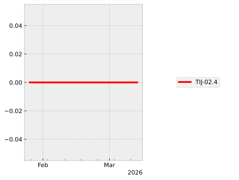
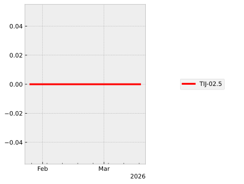
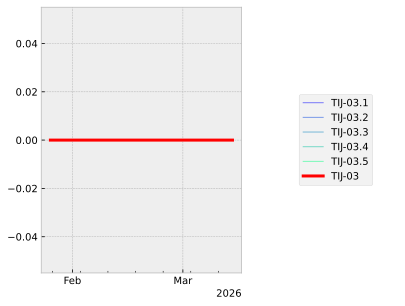
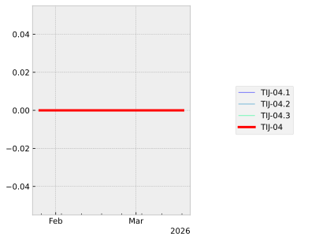
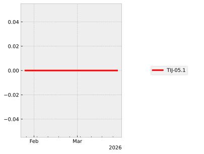
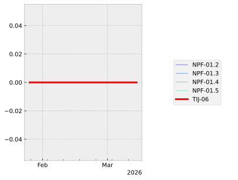

TIJ-01 | Reviewed: ⨯ | Score: 0.0#
The parsing service provided by the nlohmann/json library throws an exception on ill-formed literal names.
Supported Requests:
Item |
Summary |
Score |
Status |
|---|---|---|---|
The nlohmann/json library recognizes malformed JSON and returns an exception. |
0.00 |
⨯ Item Reviewed |
Supporting Items:
Item |
Summary |
Score |
Status |
|---|---|---|---|
The service provided by the nlohmann/json library throws an exception on capitalised literal names. |
0.00 |
⨯ Item Reviewed |
|
The service provided by the nlohmann/json library throws an exception on any other than the three literal names true, false, null. |
0.00 |
⨯ Item Reviewed |
References:
None
Fallacies:
None
Graph:
date-time |
TIJ-01 |
TIJ-01.1 |
TIJ-01.2 |
|---|---|---|---|
2025-11-19 13:45:36 |
0.00 |
0.00 |
0.00 |
2025-11-20 10:55:40 |
0.00 |
0.00 |
0.00 |
2025-11-20 11:44:22.984139 |
0.00 |
0.00 |
0.00 |
TIJ-01.1 | Reviewed: ⨯ | Score: 0.0#
The service provided by the nlohmann/json library throws an exception on capitalised literal names.
Supported Requests:
Item |
Summary |
Score |
Status |
|---|---|---|---|
The parsing service provided by the nlohmann/json library throws an exception on ill-formed literal names. |
0.00 |
⨯ Item Reviewed |
Supporting Items:
None
References:
cpp-test: [parse;capitalisation] (TSF/tests/unit-literals.cpp)
SECTION("capitalisation")
{
SECTION("true")
{
CHECK_THROWS_AS(parser_helper("True"),json::parse_error&);
CHECK_THROWS_AS(parser_helper("tRue"),json::parse_error&);
CHECK_THROWS_AS(parser_helper("trUe"),json::parse_error&);
CHECK_THROWS_AS(parser_helper("truE"),json::parse_error&);
CHECK_THROWS_AS(parser_helper("TRue"),json::parse_error&);
CHECK_THROWS_AS(parser_helper("TrUe"),json::parse_error&);
CHECK_THROWS_AS(parser_helper("TruE"),json::parse_error&);
CHECK_THROWS_AS(parser_helper("tRUe"),json::parse_error&);
CHECK_THROWS_AS(parser_helper("tRuE"),json::parse_error&);
CHECK_THROWS_AS(parser_helper("trUE"),json::parse_error&);
CHECK_THROWS_AS(parser_helper("TRUe"),json::parse_error&);
CHECK_THROWS_AS(parser_helper("TRuE"),json::parse_error&);
CHECK_THROWS_AS(parser_helper("TrUE"),json::parse_error&);
CHECK_THROWS_AS(parser_helper("tRUE"),json::parse_error&);
CHECK_THROWS_AS(parser_helper("TRUE"),json::parse_error&);
}
SECTION("null")
{
CHECK_THROWS_AS(parser_helper("Null"),json::parse_error&);
CHECK_THROWS_AS(parser_helper("nUll"),json::parse_error&);
CHECK_THROWS_AS(parser_helper("nuLl"),json::parse_error&);
CHECK_THROWS_AS(parser_helper("nulL"),json::parse_error&);
CHECK_THROWS_AS(parser_helper("NUll"),json::parse_error&);
CHECK_THROWS_AS(parser_helper("NuLl"),json::parse_error&);
CHECK_THROWS_AS(parser_helper("NulL"),json::parse_error&);
CHECK_THROWS_AS(parser_helper("nULl"),json::parse_error&);
CHECK_THROWS_AS(parser_helper("nUlL"),json::parse_error&);
CHECK_THROWS_AS(parser_helper("nuLL"),json::parse_error&);
CHECK_THROWS_AS(parser_helper("NULl"),json::parse_error&);
CHECK_THROWS_AS(parser_helper("NUlL"),json::parse_error&);
CHECK_THROWS_AS(parser_helper("NuLL"),json::parse_error&);
CHECK_THROWS_AS(parser_helper("nULL"),json::parse_error&);
CHECK_THROWS_AS(parser_helper("NULL"),json::parse_error&);
}
SECTION("false")
{
CHECK_THROWS_AS(parser_helper("False"),json::parse_error&);
CHECK_THROWS_AS(parser_helper("fAlse"),json::parse_error&);
CHECK_THROWS_AS(parser_helper("FAlse"),json::parse_error&);
CHECK_THROWS_AS(parser_helper("faLse"),json::parse_error&);
CHECK_THROWS_AS(parser_helper("FaLse"),json::parse_error&);
CHECK_THROWS_AS(parser_helper("fALse"),json::parse_error&);
CHECK_THROWS_AS(parser_helper("FALse"),json::parse_error&);
CHECK_THROWS_AS(parser_helper("falSe"),json::parse_error&);
CHECK_THROWS_AS(parser_helper("FalSe"),json::parse_error&);
CHECK_THROWS_AS(parser_helper("fAlSe"),json::parse_error&);
CHECK_THROWS_AS(parser_helper("FAlSe"),json::parse_error&);
CHECK_THROWS_AS(parser_helper("faLSe"),json::parse_error&);
CHECK_THROWS_AS(parser_helper("FaLSe"),json::parse_error&);
CHECK_THROWS_AS(parser_helper("fALSe"),json::parse_error&);
CHECK_THROWS_AS(parser_helper("FALSe"),json::parse_error&);
CHECK_THROWS_AS(parser_helper("falsE"),json::parse_error&);
CHECK_THROWS_AS(parser_helper("FalsE"),json::parse_error&);
CHECK_THROWS_AS(parser_helper("fAlsE"),json::parse_error&);
CHECK_THROWS_AS(parser_helper("FAlsE"),json::parse_error&);
CHECK_THROWS_AS(parser_helper("faLsE"),json::parse_error&);
CHECK_THROWS_AS(parser_helper("FaLsE"),json::parse_error&);
CHECK_THROWS_AS(parser_helper("fALsE"),json::parse_error&);
CHECK_THROWS_AS(parser_helper("FALsE"),json::parse_error&);
CHECK_THROWS_AS(parser_helper("falSE"),json::parse_error&);
CHECK_THROWS_AS(parser_helper("FalSE"),json::parse_error&);
CHECK_THROWS_AS(parser_helper("fAlSE"),json::parse_error&);
CHECK_THROWS_AS(parser_helper("FAlSE"),json::parse_error&);
CHECK_THROWS_AS(parser_helper("faLSE"),json::parse_error&);
CHECK_THROWS_AS(parser_helper("FaLSE"),json::parse_error&);
CHECK_THROWS_AS(parser_helper("fALSE"),json::parse_error&);
CHECK_THROWS_AS(parser_helper("FALSE"),json::parse_error&);
}
}
Fallacies:
None
Graph:
date-time |
TIJ-01.1 |
|---|---|
2025-11-19 13:45:36 |
0.00 |
2025-11-20 10:55:40 |
0.00 |
2025-11-20 11:44:22.984139 |
0.00 |
TIJ-01.2 | Reviewed: ⨯ | Score: 0.0#
The service provided by the nlohmann/json library throws an exception on any other than the three literal names true, false, null.
Supported Requests:
Item |
Summary |
Score |
Status |
|---|---|---|---|
The parsing service provided by the nlohmann/json library throws an exception on ill-formed literal names. |
0.00 |
⨯ Item Reviewed |
Supporting Items:
None
References:
cpp-testsuite: [/nst_json_testsuite/test_parsing/n_incomplete_false.json, /nst_json_testsuite/test_parsing/n_incomplete_null.json, /nst_json_testsuite/test_parsing/n_incomplete_true.json, /nst_json_testsuite/test_parsing/n_structure_number_with_trailing_garbage.json]JSON Testsuite: /nst_json_testsuite/test_parsing/n_incomplete_false.json
[fals]
JSON Testsuite: /nst_json_testsuite/test_parsing/n_incomplete_null.json
[nul]
JSON Testsuite: /nst_json_testsuite/test_parsing/n_incomplete_true.json
[tru]
JSON Testsuite: /nst_json_testsuite/test_parsing/n_structure_number_with_trailing_garbage.json
2@
cpp-test: [nst’s JSONTestSuite;test_parsing;n] (tests/src/unit-testsuites.cpp)
SECTION("n") { for (const auto* filename : { TEST_DATA_DIRECTORY "/nst_json_testsuite/test_parsing/n_incomplete_false.json", TEST_DATA_DIRECTORY "/nst_json_testsuite/test_parsing/n_incomplete_null.json", TEST_DATA_DIRECTORY "/nst_json_testsuite/test_parsing/n_incomplete_true.json", TEST_DATA_DIRECTORY "/nst_json_testsuite/test_parsing/n_structure_number_with_trailing_garbage.json", } ) { CAPTURE(filename) std::ifstream f(filename); json _; CHECK_THROWS_AS(_ = json::parse(f), json::parse_error&); } } // Note: Other test data lines have been filtered out for conciseness.
cpp-testsuite: [/nst_json_testsuite2/test_parsing/n_incomplete_false.json, /nst_json_testsuite2/test_parsing/n_incomplete_null.json, /nst_json_testsuite2/test_parsing/n_incomplete_true.json, /nst_json_testsuite2/test_parsing/n_structure_capitalized_True.json]JSON Testsuite: /nst_json_testsuite2/test_parsing/n_incomplete_false.json
[fals]
JSON Testsuite: /nst_json_testsuite2/test_parsing/n_incomplete_null.json
[nul]
JSON Testsuite: /nst_json_testsuite2/test_parsing/n_incomplete_true.json
[tru]
JSON Testsuite: /nst_json_testsuite2/test_parsing/n_structure_capitalized_True.json
[True]
cpp-test: [nst’s JSONTestSuite (2);test_parsing;n] (tests/src/unit-testsuites.cpp)
SECTION("n") { for (const auto* filename : { TEST_DATA_DIRECTORY "/nst_json_testsuite2/test_parsing/n_incomplete_false.json", TEST_DATA_DIRECTORY "/nst_json_testsuite2/test_parsing/n_incomplete_null.json", TEST_DATA_DIRECTORY "/nst_json_testsuite2/test_parsing/n_incomplete_true.json", TEST_DATA_DIRECTORY "/nst_json_testsuite2/test_parsing/n_structure_capitalized_True.json", } ) { CAPTURE(filename) std::ifstream f(filename); json _; CHECK_THROWS_AS(_ = json::parse(f), json::parse_error&); std::ifstream f2(filename); CHECK(!json::accept(f2)); } } // Note: Other test data lines have been filtered out for conciseness.
cpp-test: [parse;illegal literals] (TSF/tests/unit-literals.cpp)
SECTION("illegal literals")
{
SECTION("nil")
{
CHECK_THROWS_AS(parser_helper("nil"),json::parse_error&);
CHECK_THROWS_AS(parser_helper("Nil"),json::parse_error&);
CHECK_THROWS_AS(parser_helper("nIl"),json::parse_error&);
CHECK_THROWS_AS(parser_helper("NIl"),json::parse_error&);
CHECK_THROWS_AS(parser_helper("niL"),json::parse_error&);
CHECK_THROWS_AS(parser_helper("NiL"),json::parse_error&);
CHECK_THROWS_AS(parser_helper("nIL"),json::parse_error&);
CHECK_THROWS_AS(parser_helper("NIL"),json::parse_error&);
}
SECTION("truth")
{
CHECK_THROWS_AS(parser_helper("truth"),json::parse_error&);
CHECK_THROWS_AS(parser_helper("Truth"),json::parse_error&);
CHECK_THROWS_AS(parser_helper("tRuth"),json::parse_error&);
CHECK_THROWS_AS(parser_helper("TRuth"),json::parse_error&);
CHECK_THROWS_AS(parser_helper("trUth"),json::parse_error&);
CHECK_THROWS_AS(parser_helper("TrUth"),json::parse_error&);
CHECK_THROWS_AS(parser_helper("tRUth"),json::parse_error&);
CHECK_THROWS_AS(parser_helper("TRUth"),json::parse_error&);
CHECK_THROWS_AS(parser_helper("truTh"),json::parse_error&);
CHECK_THROWS_AS(parser_helper("TruTh"),json::parse_error&);
CHECK_THROWS_AS(parser_helper("tRuTh"),json::parse_error&);
CHECK_THROWS_AS(parser_helper("TRuTh"),json::parse_error&);
CHECK_THROWS_AS(parser_helper("trUTh"),json::parse_error&);
CHECK_THROWS_AS(parser_helper("TrUTh"),json::parse_error&);
CHECK_THROWS_AS(parser_helper("tRUTh"),json::parse_error&);
CHECK_THROWS_AS(parser_helper("TRUTh"),json::parse_error&);
CHECK_THROWS_AS(parser_helper("trutH"),json::parse_error&);
CHECK_THROWS_AS(parser_helper("TrutH"),json::parse_error&);
CHECK_THROWS_AS(parser_helper("tRutH"),json::parse_error&);
CHECK_THROWS_AS(parser_helper("TRutH"),json::parse_error&);
CHECK_THROWS_AS(parser_helper("trUtH"),json::parse_error&);
CHECK_THROWS_AS(parser_helper("TrUtH"),json::parse_error&);
CHECK_THROWS_AS(parser_helper("tRUtH"),json::parse_error&);
CHECK_THROWS_AS(parser_helper("TRUtH"),json::parse_error&);
CHECK_THROWS_AS(parser_helper("truTH"),json::parse_error&);
CHECK_THROWS_AS(parser_helper("TruTH"),json::parse_error&);
CHECK_THROWS_AS(parser_helper("tRuTH"),json::parse_error&);
CHECK_THROWS_AS(parser_helper("TRuTH"),json::parse_error&);
CHECK_THROWS_AS(parser_helper("trUTH"),json::parse_error&);
CHECK_THROWS_AS(parser_helper("TrUTH"),json::parse_error&);
CHECK_THROWS_AS(parser_helper("tRUTH"),json::parse_error&);
CHECK_THROWS_AS(parser_helper("TRUTH"),json::parse_error&);
}
SECTION("const")
{
CHECK_THROWS_AS(parser_helper("const"),json::parse_error&);
CHECK_THROWS_AS(parser_helper("Const"),json::parse_error&);
CHECK_THROWS_AS(parser_helper("cOnst"),json::parse_error&);
CHECK_THROWS_AS(parser_helper("COnst"),json::parse_error&);
CHECK_THROWS_AS(parser_helper("coNst"),json::parse_error&);
CHECK_THROWS_AS(parser_helper("CoNst"),json::parse_error&);
CHECK_THROWS_AS(parser_helper("cONst"),json::parse_error&);
CHECK_THROWS_AS(parser_helper("CONst"),json::parse_error&);
CHECK_THROWS_AS(parser_helper("conSt"),json::parse_error&);
CHECK_THROWS_AS(parser_helper("ConSt"),json::parse_error&);
CHECK_THROWS_AS(parser_helper("cOnSt"),json::parse_error&);
CHECK_THROWS_AS(parser_helper("COnSt"),json::parse_error&);
CHECK_THROWS_AS(parser_helper("coNSt"),json::parse_error&);
CHECK_THROWS_AS(parser_helper("CoNSt"),json::parse_error&);
CHECK_THROWS_AS(parser_helper("cONSt"),json::parse_error&);
CHECK_THROWS_AS(parser_helper("CONSt"),json::parse_error&);
CHECK_THROWS_AS(parser_helper("consT"),json::parse_error&);
CHECK_THROWS_AS(parser_helper("ConsT"),json::parse_error&);
CHECK_THROWS_AS(parser_helper("cOnsT"),json::parse_error&);
CHECK_THROWS_AS(parser_helper("COnsT"),json::parse_error&);
CHECK_THROWS_AS(parser_helper("coNsT"),json::parse_error&);
CHECK_THROWS_AS(parser_helper("CoNsT"),json::parse_error&);
CHECK_THROWS_AS(parser_helper("cONsT"),json::parse_error&);
CHECK_THROWS_AS(parser_helper("CONsT"),json::parse_error&);
CHECK_THROWS_AS(parser_helper("conST"),json::parse_error&);
CHECK_THROWS_AS(parser_helper("ConST"),json::parse_error&);
CHECK_THROWS_AS(parser_helper("cOnST"),json::parse_error&);
CHECK_THROWS_AS(parser_helper("COnST"),json::parse_error&);
CHECK_THROWS_AS(parser_helper("coNST"),json::parse_error&);
CHECK_THROWS_AS(parser_helper("CoNST"),json::parse_error&);
CHECK_THROWS_AS(parser_helper("cONST"),json::parse_error&);
CHECK_THROWS_AS(parser_helper("CONST"),json::parse_error&);
}
SECTION("none")
{
CHECK_THROWS_AS(parser_helper("none"),json::parse_error&);
CHECK_THROWS_AS(parser_helper("None"),json::parse_error&);
CHECK_THROWS_AS(parser_helper("nOne"),json::parse_error&);
CHECK_THROWS_AS(parser_helper("NOne"),json::parse_error&);
CHECK_THROWS_AS(parser_helper("noNe"),json::parse_error&);
CHECK_THROWS_AS(parser_helper("NoNe"),json::parse_error&);
CHECK_THROWS_AS(parser_helper("nONe"),json::parse_error&);
CHECK_THROWS_AS(parser_helper("NONe"),json::parse_error&);
CHECK_THROWS_AS(parser_helper("nonE"),json::parse_error&);
CHECK_THROWS_AS(parser_helper("NonE"),json::parse_error&);
CHECK_THROWS_AS(parser_helper("nOnE"),json::parse_error&);
CHECK_THROWS_AS(parser_helper("NOnE"),json::parse_error&);
CHECK_THROWS_AS(parser_helper("noNE"),json::parse_error&);
CHECK_THROWS_AS(parser_helper("NoNE"),json::parse_error&);
CHECK_THROWS_AS(parser_helper("nONE"),json::parse_error&);
CHECK_THROWS_AS(parser_helper("NONE"),json::parse_error&);
}
SECTION("self")
{
CHECK_THROWS_AS(parser_helper("self"),json::parse_error&);
CHECK_THROWS_AS(parser_helper("Self"),json::parse_error&);
CHECK_THROWS_AS(parser_helper("sElf"),json::parse_error&);
CHECK_THROWS_AS(parser_helper("SElf"),json::parse_error&);
CHECK_THROWS_AS(parser_helper("seLf"),json::parse_error&);
CHECK_THROWS_AS(parser_helper("SeLf"),json::parse_error&);
CHECK_THROWS_AS(parser_helper("sELf"),json::parse_error&);
CHECK_THROWS_AS(parser_helper("SELf"),json::parse_error&);
CHECK_THROWS_AS(parser_helper("selF"),json::parse_error&);
CHECK_THROWS_AS(parser_helper("SelF"),json::parse_error&);
CHECK_THROWS_AS(parser_helper("sElF"),json::parse_error&);
CHECK_THROWS_AS(parser_helper("SElF"),json::parse_error&);
CHECK_THROWS_AS(parser_helper("seLF"),json::parse_error&);
CHECK_THROWS_AS(parser_helper("SeLF"),json::parse_error&);
CHECK_THROWS_AS(parser_helper("sELF"),json::parse_error&);
CHECK_THROWS_AS(parser_helper("SELF"),json::parse_error&);
}
SECTION("super")
{
CHECK_THROWS_AS(parser_helper("super"),json::parse_error&);
CHECK_THROWS_AS(parser_helper("Super"),json::parse_error&);
CHECK_THROWS_AS(parser_helper("sUper"),json::parse_error&);
CHECK_THROWS_AS(parser_helper("SUper"),json::parse_error&);
CHECK_THROWS_AS(parser_helper("suPer"),json::parse_error&);
CHECK_THROWS_AS(parser_helper("SuPer"),json::parse_error&);
CHECK_THROWS_AS(parser_helper("sUPer"),json::parse_error&);
CHECK_THROWS_AS(parser_helper("SUPer"),json::parse_error&);
CHECK_THROWS_AS(parser_helper("supEr"),json::parse_error&);
CHECK_THROWS_AS(parser_helper("SupEr"),json::parse_error&);
CHECK_THROWS_AS(parser_helper("sUpEr"),json::parse_error&);
CHECK_THROWS_AS(parser_helper("SUpEr"),json::parse_error&);
CHECK_THROWS_AS(parser_helper("suPEr"),json::parse_error&);
CHECK_THROWS_AS(parser_helper("SuPEr"),json::parse_error&);
CHECK_THROWS_AS(parser_helper("sUPEr"),json::parse_error&);
CHECK_THROWS_AS(parser_helper("SUPEr"),json::parse_error&);
CHECK_THROWS_AS(parser_helper("supeR"),json::parse_error&);
CHECK_THROWS_AS(parser_helper("SupeR"),json::parse_error&);
CHECK_THROWS_AS(parser_helper("sUpeR"),json::parse_error&);
CHECK_THROWS_AS(parser_helper("SUpeR"),json::parse_error&);
CHECK_THROWS_AS(parser_helper("suPeR"),json::parse_error&);
CHECK_THROWS_AS(parser_helper("SuPeR"),json::parse_error&);
CHECK_THROWS_AS(parser_helper("sUPeR"),json::parse_error&);
CHECK_THROWS_AS(parser_helper("SUPeR"),json::parse_error&);
CHECK_THROWS_AS(parser_helper("supER"),json::parse_error&);
CHECK_THROWS_AS(parser_helper("SupER"),json::parse_error&);
CHECK_THROWS_AS(parser_helper("sUpER"),json::parse_error&);
CHECK_THROWS_AS(parser_helper("SUpER"),json::parse_error&);
CHECK_THROWS_AS(parser_helper("suPER"),json::parse_error&);
CHECK_THROWS_AS(parser_helper("SuPER"),json::parse_error&);
CHECK_THROWS_AS(parser_helper("sUPER"),json::parse_error&);
CHECK_THROWS_AS(parser_helper("SUPER"),json::parse_error&);
}
SECTION("this")
{
CHECK_THROWS_AS(parser_helper("this"),json::parse_error&);
CHECK_THROWS_AS(parser_helper("This"),json::parse_error&);
CHECK_THROWS_AS(parser_helper("tHis"),json::parse_error&);
CHECK_THROWS_AS(parser_helper("THis"),json::parse_error&);
CHECK_THROWS_AS(parser_helper("thIs"),json::parse_error&);
CHECK_THROWS_AS(parser_helper("ThIs"),json::parse_error&);
CHECK_THROWS_AS(parser_helper("tHIs"),json::parse_error&);
CHECK_THROWS_AS(parser_helper("THIs"),json::parse_error&);
CHECK_THROWS_AS(parser_helper("thiS"),json::parse_error&);
CHECK_THROWS_AS(parser_helper("ThiS"),json::parse_error&);
CHECK_THROWS_AS(parser_helper("tHiS"),json::parse_error&);
CHECK_THROWS_AS(parser_helper("THiS"),json::parse_error&);
CHECK_THROWS_AS(parser_helper("thIS"),json::parse_error&);
CHECK_THROWS_AS(parser_helper("ThIS"),json::parse_error&);
CHECK_THROWS_AS(parser_helper("tHIS"),json::parse_error&);
CHECK_THROWS_AS(parser_helper("THIS"),json::parse_error&);
}
SECTION("undefined")
{
CHECK_THROWS_AS(parser_helper("undefined"),json::parse_error&);
CHECK_THROWS_AS(parser_helper("Undefined"),json::parse_error&);
CHECK_THROWS_AS(parser_helper("uNdefined"),json::parse_error&);
CHECK_THROWS_AS(parser_helper("UNdefined"),json::parse_error&);
CHECK_THROWS_AS(parser_helper("unDefined"),json::parse_error&);
CHECK_THROWS_AS(parser_helper("UnDefined"),json::parse_error&);
CHECK_THROWS_AS(parser_helper("uNDefined"),json::parse_error&);
CHECK_THROWS_AS(parser_helper("UNDefined"),json::parse_error&);
CHECK_THROWS_AS(parser_helper("undEfined"),json::parse_error&);
CHECK_THROWS_AS(parser_helper("UndEfined"),json::parse_error&);
CHECK_THROWS_AS(parser_helper("uNdEfined"),json::parse_error&);
CHECK_THROWS_AS(parser_helper("UNdEfined"),json::parse_error&);
CHECK_THROWS_AS(parser_helper("unDEfined"),json::parse_error&);
CHECK_THROWS_AS(parser_helper("UnDEfined"),json::parse_error&);
CHECK_THROWS_AS(parser_helper("uNDEfined"),json::parse_error&);
CHECK_THROWS_AS(parser_helper("UNDEfined"),json::parse_error&);
CHECK_THROWS_AS(parser_helper("undeFined"),json::parse_error&);
CHECK_THROWS_AS(parser_helper("UndeFined"),json::parse_error&);
CHECK_THROWS_AS(parser_helper("uNdeFined"),json::parse_error&);
CHECK_THROWS_AS(parser_helper("UNdeFined"),json::parse_error&);
CHECK_THROWS_AS(parser_helper("unDeFined"),json::parse_error&);
CHECK_THROWS_AS(parser_helper("UnDeFined"),json::parse_error&);
CHECK_THROWS_AS(parser_helper("uNDeFined"),json::parse_error&);
CHECK_THROWS_AS(parser_helper("UNDeFined"),json::parse_error&);
CHECK_THROWS_AS(parser_helper("undEFined"),json::parse_error&);
CHECK_THROWS_AS(parser_helper("UndEFined"),json::parse_error&);
CHECK_THROWS_AS(parser_helper("uNdEFined"),json::parse_error&);
CHECK_THROWS_AS(parser_helper("UNdEFined"),json::parse_error&);
CHECK_THROWS_AS(parser_helper("unDEFined"),json::parse_error&);
CHECK_THROWS_AS(parser_helper("UnDEFined"),json::parse_error&);
CHECK_THROWS_AS(parser_helper("uNDEFined"),json::parse_error&);
CHECK_THROWS_AS(parser_helper("UNDEFined"),json::parse_error&);
CHECK_THROWS_AS(parser_helper("undefIned"),json::parse_error&);
CHECK_THROWS_AS(parser_helper("UndefIned"),json::parse_error&);
CHECK_THROWS_AS(parser_helper("uNdefIned"),json::parse_error&);
CHECK_THROWS_AS(parser_helper("UNdefIned"),json::parse_error&);
CHECK_THROWS_AS(parser_helper("unDefIned"),json::parse_error&);
CHECK_THROWS_AS(parser_helper("UnDefIned"),json::parse_error&);
CHECK_THROWS_AS(parser_helper("uNDefIned"),json::parse_error&);
CHECK_THROWS_AS(parser_helper("UNDefIned"),json::parse_error&);
CHECK_THROWS_AS(parser_helper("undEfIned"),json::parse_error&);
CHECK_THROWS_AS(parser_helper("UndEfIned"),json::parse_error&);
CHECK_THROWS_AS(parser_helper("uNdEfIned"),json::parse_error&);
CHECK_THROWS_AS(parser_helper("UNdEfIned"),json::parse_error&);
CHECK_THROWS_AS(parser_helper("unDEfIned"),json::parse_error&);
CHECK_THROWS_AS(parser_helper("UnDEfIned"),json::parse_error&);
CHECK_THROWS_AS(parser_helper("uNDEfIned"),json::parse_error&);
CHECK_THROWS_AS(parser_helper("UNDEfIned"),json::parse_error&);
CHECK_THROWS_AS(parser_helper("undeFIned"),json::parse_error&);
CHECK_THROWS_AS(parser_helper("UndeFIned"),json::parse_error&);
CHECK_THROWS_AS(parser_helper("uNdeFIned"),json::parse_error&);
CHECK_THROWS_AS(parser_helper("UNdeFIned"),json::parse_error&);
CHECK_THROWS_AS(parser_helper("unDeFIned"),json::parse_error&);
CHECK_THROWS_AS(parser_helper("UnDeFIned"),json::parse_error&);
CHECK_THROWS_AS(parser_helper("uNDeFIned"),json::parse_error&);
CHECK_THROWS_AS(parser_helper("UNDeFIned"),json::parse_error&);
CHECK_THROWS_AS(parser_helper("undEFIned"),json::parse_error&);
CHECK_THROWS_AS(parser_helper("UndEFIned"),json::parse_error&);
CHECK_THROWS_AS(parser_helper("uNdEFIned"),json::parse_error&);
CHECK_THROWS_AS(parser_helper("UNdEFIned"),json::parse_error&);
CHECK_THROWS_AS(parser_helper("unDEFIned"),json::parse_error&);
CHECK_THROWS_AS(parser_helper("UnDEFIned"),json::parse_error&);
CHECK_THROWS_AS(parser_helper("uNDEFIned"),json::parse_error&);
CHECK_THROWS_AS(parser_helper("UNDEFIned"),json::parse_error&);
CHECK_THROWS_AS(parser_helper("undefiNed"),json::parse_error&);
CHECK_THROWS_AS(parser_helper("UndefiNed"),json::parse_error&);
CHECK_THROWS_AS(parser_helper("uNdefiNed"),json::parse_error&);
CHECK_THROWS_AS(parser_helper("UNdefiNed"),json::parse_error&);
CHECK_THROWS_AS(parser_helper("unDefiNed"),json::parse_error&);
CHECK_THROWS_AS(parser_helper("UnDefiNed"),json::parse_error&);
CHECK_THROWS_AS(parser_helper("uNDefiNed"),json::parse_error&);
CHECK_THROWS_AS(parser_helper("UNDefiNed"),json::parse_error&);
CHECK_THROWS_AS(parser_helper("undEfiNed"),json::parse_error&);
CHECK_THROWS_AS(parser_helper("UndEfiNed"),json::parse_error&);
CHECK_THROWS_AS(parser_helper("uNdEfiNed"),json::parse_error&);
CHECK_THROWS_AS(parser_helper("UNdEfiNed"),json::parse_error&);
CHECK_THROWS_AS(parser_helper("unDEfiNed"),json::parse_error&);
CHECK_THROWS_AS(parser_helper("UnDEfiNed"),json::parse_error&);
CHECK_THROWS_AS(parser_helper("uNDEfiNed"),json::parse_error&);
CHECK_THROWS_AS(parser_helper("UNDEfiNed"),json::parse_error&);
CHECK_THROWS_AS(parser_helper("undeFiNed"),json::parse_error&);
CHECK_THROWS_AS(parser_helper("UndeFiNed"),json::parse_error&);
CHECK_THROWS_AS(parser_helper("uNdeFiNed"),json::parse_error&);
CHECK_THROWS_AS(parser_helper("UNdeFiNed"),json::parse_error&);
CHECK_THROWS_AS(parser_helper("unDeFiNed"),json::parse_error&);
CHECK_THROWS_AS(parser_helper("UnDeFiNed"),json::parse_error&);
CHECK_THROWS_AS(parser_helper("uNDeFiNed"),json::parse_error&);
CHECK_THROWS_AS(parser_helper("UNDeFiNed"),json::parse_error&);
CHECK_THROWS_AS(parser_helper("undEFiNed"),json::parse_error&);
CHECK_THROWS_AS(parser_helper("UndEFiNed"),json::parse_error&);
CHECK_THROWS_AS(parser_helper("uNdEFiNed"),json::parse_error&);
CHECK_THROWS_AS(parser_helper("UNdEFiNed"),json::parse_error&);
CHECK_THROWS_AS(parser_helper("unDEFiNed"),json::parse_error&);
CHECK_THROWS_AS(parser_helper("UnDEFiNed"),json::parse_error&);
CHECK_THROWS_AS(parser_helper("uNDEFiNed"),json::parse_error&);
CHECK_THROWS_AS(parser_helper("UNDEFiNed"),json::parse_error&);
CHECK_THROWS_AS(parser_helper("undefINed"),json::parse_error&);
CHECK_THROWS_AS(parser_helper("UndefINed"),json::parse_error&);
CHECK_THROWS_AS(parser_helper("uNdefINed"),json::parse_error&);
CHECK_THROWS_AS(parser_helper("UNdefINed"),json::parse_error&);
CHECK_THROWS_AS(parser_helper("unDefINed"),json::parse_error&);
CHECK_THROWS_AS(parser_helper("UnDefINed"),json::parse_error&);
CHECK_THROWS_AS(parser_helper("uNDefINed"),json::parse_error&);
CHECK_THROWS_AS(parser_helper("UNDefINed"),json::parse_error&);
CHECK_THROWS_AS(parser_helper("undEfINed"),json::parse_error&);
CHECK_THROWS_AS(parser_helper("UndEfINed"),json::parse_error&);
CHECK_THROWS_AS(parser_helper("uNdEfINed"),json::parse_error&);
CHECK_THROWS_AS(parser_helper("UNdEfINed"),json::parse_error&);
CHECK_THROWS_AS(parser_helper("unDEfINed"),json::parse_error&);
CHECK_THROWS_AS(parser_helper("UnDEfINed"),json::parse_error&);
CHECK_THROWS_AS(parser_helper("uNDEfINed"),json::parse_error&);
CHECK_THROWS_AS(parser_helper("UNDEfINed"),json::parse_error&);
CHECK_THROWS_AS(parser_helper("undeFINed"),json::parse_error&);
CHECK_THROWS_AS(parser_helper("UndeFINed"),json::parse_error&);
CHECK_THROWS_AS(parser_helper("uNdeFINed"),json::parse_error&);
CHECK_THROWS_AS(parser_helper("UNdeFINed"),json::parse_error&);
CHECK_THROWS_AS(parser_helper("unDeFINed"),json::parse_error&);
CHECK_THROWS_AS(parser_helper("UnDeFINed"),json::parse_error&);
CHECK_THROWS_AS(parser_helper("uNDeFINed"),json::parse_error&);
CHECK_THROWS_AS(parser_helper("UNDeFINed"),json::parse_error&);
CHECK_THROWS_AS(parser_helper("undEFINed"),json::parse_error&);
CHECK_THROWS_AS(parser_helper("UndEFINed"),json::parse_error&);
CHECK_THROWS_AS(parser_helper("uNdEFINed"),json::parse_error&);
CHECK_THROWS_AS(parser_helper("UNdEFINed"),json::parse_error&);
CHECK_THROWS_AS(parser_helper("unDEFINed"),json::parse_error&);
CHECK_THROWS_AS(parser_helper("UnDEFINed"),json::parse_error&);
CHECK_THROWS_AS(parser_helper("uNDEFINed"),json::parse_error&);
CHECK_THROWS_AS(parser_helper("UNDEFINed"),json::parse_error&);
CHECK_THROWS_AS(parser_helper("undefinEd"),json::parse_error&);
CHECK_THROWS_AS(parser_helper("UndefinEd"),json::parse_error&);
CHECK_THROWS_AS(parser_helper("uNdefinEd"),json::parse_error&);
CHECK_THROWS_AS(parser_helper("UNdefinEd"),json::parse_error&);
CHECK_THROWS_AS(parser_helper("unDefinEd"),json::parse_error&);
CHECK_THROWS_AS(parser_helper("UnDefinEd"),json::parse_error&);
CHECK_THROWS_AS(parser_helper("uNDefinEd"),json::parse_error&);
CHECK_THROWS_AS(parser_helper("UNDefinEd"),json::parse_error&);
CHECK_THROWS_AS(parser_helper("undEfinEd"),json::parse_error&);
CHECK_THROWS_AS(parser_helper("UndEfinEd"),json::parse_error&);
CHECK_THROWS_AS(parser_helper("uNdEfinEd"),json::parse_error&);
CHECK_THROWS_AS(parser_helper("UNdEfinEd"),json::parse_error&);
CHECK_THROWS_AS(parser_helper("unDEfinEd"),json::parse_error&);
CHECK_THROWS_AS(parser_helper("UnDEfinEd"),json::parse_error&);
CHECK_THROWS_AS(parser_helper("uNDEfinEd"),json::parse_error&);
CHECK_THROWS_AS(parser_helper("UNDEfinEd"),json::parse_error&);
CHECK_THROWS_AS(parser_helper("undeFinEd"),json::parse_error&);
CHECK_THROWS_AS(parser_helper("UndeFinEd"),json::parse_error&);
CHECK_THROWS_AS(parser_helper("uNdeFinEd"),json::parse_error&);
CHECK_THROWS_AS(parser_helper("UNdeFinEd"),json::parse_error&);
CHECK_THROWS_AS(parser_helper("unDeFinEd"),json::parse_error&);
CHECK_THROWS_AS(parser_helper("UnDeFinEd"),json::parse_error&);
CHECK_THROWS_AS(parser_helper("uNDeFinEd"),json::parse_error&);
CHECK_THROWS_AS(parser_helper("UNDeFinEd"),json::parse_error&);
CHECK_THROWS_AS(parser_helper("undEFinEd"),json::parse_error&);
CHECK_THROWS_AS(parser_helper("UndEFinEd"),json::parse_error&);
CHECK_THROWS_AS(parser_helper("uNdEFinEd"),json::parse_error&);
CHECK_THROWS_AS(parser_helper("UNdEFinEd"),json::parse_error&);
CHECK_THROWS_AS(parser_helper("unDEFinEd"),json::parse_error&);
CHECK_THROWS_AS(parser_helper("UnDEFinEd"),json::parse_error&);
CHECK_THROWS_AS(parser_helper("uNDEFinEd"),json::parse_error&);
CHECK_THROWS_AS(parser_helper("UNDEFinEd"),json::parse_error&);
CHECK_THROWS_AS(parser_helper("undefInEd"),json::parse_error&);
CHECK_THROWS_AS(parser_helper("UndefInEd"),json::parse_error&);
CHECK_THROWS_AS(parser_helper("uNdefInEd"),json::parse_error&);
CHECK_THROWS_AS(parser_helper("UNdefInEd"),json::parse_error&);
CHECK_THROWS_AS(parser_helper("unDefInEd"),json::parse_error&);
CHECK_THROWS_AS(parser_helper("UnDefInEd"),json::parse_error&);
CHECK_THROWS_AS(parser_helper("uNDefInEd"),json::parse_error&);
CHECK_THROWS_AS(parser_helper("UNDefInEd"),json::parse_error&);
CHECK_THROWS_AS(parser_helper("undEfInEd"),json::parse_error&);
CHECK_THROWS_AS(parser_helper("UndEfInEd"),json::parse_error&);
CHECK_THROWS_AS(parser_helper("uNdEfInEd"),json::parse_error&);
CHECK_THROWS_AS(parser_helper("UNdEfInEd"),json::parse_error&);
CHECK_THROWS_AS(parser_helper("unDEfInEd"),json::parse_error&);
CHECK_THROWS_AS(parser_helper("UnDEfInEd"),json::parse_error&);
CHECK_THROWS_AS(parser_helper("uNDEfInEd"),json::parse_error&);
CHECK_THROWS_AS(parser_helper("UNDEfInEd"),json::parse_error&);
CHECK_THROWS_AS(parser_helper("undeFInEd"),json::parse_error&);
CHECK_THROWS_AS(parser_helper("UndeFInEd"),json::parse_error&);
CHECK_THROWS_AS(parser_helper("uNdeFInEd"),json::parse_error&);
CHECK_THROWS_AS(parser_helper("UNdeFInEd"),json::parse_error&);
CHECK_THROWS_AS(parser_helper("unDeFInEd"),json::parse_error&);
CHECK_THROWS_AS(parser_helper("UnDeFInEd"),json::parse_error&);
CHECK_THROWS_AS(parser_helper("uNDeFInEd"),json::parse_error&);
CHECK_THROWS_AS(parser_helper("UNDeFInEd"),json::parse_error&);
CHECK_THROWS_AS(parser_helper("undEFInEd"),json::parse_error&);
CHECK_THROWS_AS(parser_helper("UndEFInEd"),json::parse_error&);
CHECK_THROWS_AS(parser_helper("uNdEFInEd"),json::parse_error&);
CHECK_THROWS_AS(parser_helper("UNdEFInEd"),json::parse_error&);
CHECK_THROWS_AS(parser_helper("unDEFInEd"),json::parse_error&);
CHECK_THROWS_AS(parser_helper("UnDEFInEd"),json::parse_error&);
CHECK_THROWS_AS(parser_helper("uNDEFInEd"),json::parse_error&);
CHECK_THROWS_AS(parser_helper("UNDEFInEd"),json::parse_error&);
CHECK_THROWS_AS(parser_helper("undefiNEd"),json::parse_error&);
CHECK_THROWS_AS(parser_helper("UndefiNEd"),json::parse_error&);
CHECK_THROWS_AS(parser_helper("uNdefiNEd"),json::parse_error&);
CHECK_THROWS_AS(parser_helper("UNdefiNEd"),json::parse_error&);
CHECK_THROWS_AS(parser_helper("unDefiNEd"),json::parse_error&);
CHECK_THROWS_AS(parser_helper("UnDefiNEd"),json::parse_error&);
CHECK_THROWS_AS(parser_helper("uNDefiNEd"),json::parse_error&);
CHECK_THROWS_AS(parser_helper("UNDefiNEd"),json::parse_error&);
CHECK_THROWS_AS(parser_helper("undEfiNEd"),json::parse_error&);
CHECK_THROWS_AS(parser_helper("UndEfiNEd"),json::parse_error&);
CHECK_THROWS_AS(parser_helper("uNdEfiNEd"),json::parse_error&);
CHECK_THROWS_AS(parser_helper("UNdEfiNEd"),json::parse_error&);
CHECK_THROWS_AS(parser_helper("unDEfiNEd"),json::parse_error&);
CHECK_THROWS_AS(parser_helper("UnDEfiNEd"),json::parse_error&);
CHECK_THROWS_AS(parser_helper("uNDEfiNEd"),json::parse_error&);
CHECK_THROWS_AS(parser_helper("UNDEfiNEd"),json::parse_error&);
CHECK_THROWS_AS(parser_helper("undeFiNEd"),json::parse_error&);
CHECK_THROWS_AS(parser_helper("UndeFiNEd"),json::parse_error&);
CHECK_THROWS_AS(parser_helper("uNdeFiNEd"),json::parse_error&);
CHECK_THROWS_AS(parser_helper("UNdeFiNEd"),json::parse_error&);
CHECK_THROWS_AS(parser_helper("unDeFiNEd"),json::parse_error&);
CHECK_THROWS_AS(parser_helper("UnDeFiNEd"),json::parse_error&);
CHECK_THROWS_AS(parser_helper("uNDeFiNEd"),json::parse_error&);
CHECK_THROWS_AS(parser_helper("UNDeFiNEd"),json::parse_error&);
CHECK_THROWS_AS(parser_helper("undEFiNEd"),json::parse_error&);
CHECK_THROWS_AS(parser_helper("UndEFiNEd"),json::parse_error&);
CHECK_THROWS_AS(parser_helper("uNdEFiNEd"),json::parse_error&);
CHECK_THROWS_AS(parser_helper("UNdEFiNEd"),json::parse_error&);
CHECK_THROWS_AS(parser_helper("unDEFiNEd"),json::parse_error&);
CHECK_THROWS_AS(parser_helper("UnDEFiNEd"),json::parse_error&);
CHECK_THROWS_AS(parser_helper("uNDEFiNEd"),json::parse_error&);
CHECK_THROWS_AS(parser_helper("UNDEFiNEd"),json::parse_error&);
CHECK_THROWS_AS(parser_helper("undefINEd"),json::parse_error&);
CHECK_THROWS_AS(parser_helper("UndefINEd"),json::parse_error&);
CHECK_THROWS_AS(parser_helper("uNdefINEd"),json::parse_error&);
CHECK_THROWS_AS(parser_helper("UNdefINEd"),json::parse_error&);
CHECK_THROWS_AS(parser_helper("unDefINEd"),json::parse_error&);
CHECK_THROWS_AS(parser_helper("UnDefINEd"),json::parse_error&);
CHECK_THROWS_AS(parser_helper("uNDefINEd"),json::parse_error&);
CHECK_THROWS_AS(parser_helper("UNDefINEd"),json::parse_error&);
CHECK_THROWS_AS(parser_helper("undEfINEd"),json::parse_error&);
CHECK_THROWS_AS(parser_helper("UndEfINEd"),json::parse_error&);
CHECK_THROWS_AS(parser_helper("uNdEfINEd"),json::parse_error&);
CHECK_THROWS_AS(parser_helper("UNdEfINEd"),json::parse_error&);
CHECK_THROWS_AS(parser_helper("unDEfINEd"),json::parse_error&);
CHECK_THROWS_AS(parser_helper("UnDEfINEd"),json::parse_error&);
CHECK_THROWS_AS(parser_helper("uNDEfINEd"),json::parse_error&);
CHECK_THROWS_AS(parser_helper("UNDEfINEd"),json::parse_error&);
CHECK_THROWS_AS(parser_helper("undeFINEd"),json::parse_error&);
CHECK_THROWS_AS(parser_helper("UndeFINEd"),json::parse_error&);
CHECK_THROWS_AS(parser_helper("uNdeFINEd"),json::parse_error&);
CHECK_THROWS_AS(parser_helper("UNdeFINEd"),json::parse_error&);
CHECK_THROWS_AS(parser_helper("unDeFINEd"),json::parse_error&);
CHECK_THROWS_AS(parser_helper("UnDeFINEd"),json::parse_error&);
CHECK_THROWS_AS(parser_helper("uNDeFINEd"),json::parse_error&);
CHECK_THROWS_AS(parser_helper("UNDeFINEd"),json::parse_error&);
CHECK_THROWS_AS(parser_helper("undEFINEd"),json::parse_error&);
CHECK_THROWS_AS(parser_helper("UndEFINEd"),json::parse_error&);
CHECK_THROWS_AS(parser_helper("uNdEFINEd"),json::parse_error&);
CHECK_THROWS_AS(parser_helper("UNdEFINEd"),json::parse_error&);
CHECK_THROWS_AS(parser_helper("unDEFINEd"),json::parse_error&);
CHECK_THROWS_AS(parser_helper("UnDEFINEd"),json::parse_error&);
CHECK_THROWS_AS(parser_helper("uNDEFINEd"),json::parse_error&);
CHECK_THROWS_AS(parser_helper("UNDEFINEd"),json::parse_error&);
CHECK_THROWS_AS(parser_helper("undefineD"),json::parse_error&);
CHECK_THROWS_AS(parser_helper("UndefineD"),json::parse_error&);
CHECK_THROWS_AS(parser_helper("uNdefineD"),json::parse_error&);
CHECK_THROWS_AS(parser_helper("UNdefineD"),json::parse_error&);
CHECK_THROWS_AS(parser_helper("unDefineD"),json::parse_error&);
CHECK_THROWS_AS(parser_helper("UnDefineD"),json::parse_error&);
CHECK_THROWS_AS(parser_helper("uNDefineD"),json::parse_error&);
CHECK_THROWS_AS(parser_helper("UNDefineD"),json::parse_error&);
CHECK_THROWS_AS(parser_helper("undEfineD"),json::parse_error&);
CHECK_THROWS_AS(parser_helper("UndEfineD"),json::parse_error&);
CHECK_THROWS_AS(parser_helper("uNdEfineD"),json::parse_error&);
CHECK_THROWS_AS(parser_helper("UNdEfineD"),json::parse_error&);
CHECK_THROWS_AS(parser_helper("unDEfineD"),json::parse_error&);
CHECK_THROWS_AS(parser_helper("UnDEfineD"),json::parse_error&);
CHECK_THROWS_AS(parser_helper("uNDEfineD"),json::parse_error&);
CHECK_THROWS_AS(parser_helper("UNDEfineD"),json::parse_error&);
CHECK_THROWS_AS(parser_helper("undeFineD"),json::parse_error&);
CHECK_THROWS_AS(parser_helper("UndeFineD"),json::parse_error&);
CHECK_THROWS_AS(parser_helper("uNdeFineD"),json::parse_error&);
CHECK_THROWS_AS(parser_helper("UNdeFineD"),json::parse_error&);
CHECK_THROWS_AS(parser_helper("unDeFineD"),json::parse_error&);
CHECK_THROWS_AS(parser_helper("UnDeFineD"),json::parse_error&);
CHECK_THROWS_AS(parser_helper("uNDeFineD"),json::parse_error&);
CHECK_THROWS_AS(parser_helper("UNDeFineD"),json::parse_error&);
CHECK_THROWS_AS(parser_helper("undEFineD"),json::parse_error&);
CHECK_THROWS_AS(parser_helper("UndEFineD"),json::parse_error&);
CHECK_THROWS_AS(parser_helper("uNdEFineD"),json::parse_error&);
CHECK_THROWS_AS(parser_helper("UNdEFineD"),json::parse_error&);
CHECK_THROWS_AS(parser_helper("unDEFineD"),json::parse_error&);
CHECK_THROWS_AS(parser_helper("UnDEFineD"),json::parse_error&);
CHECK_THROWS_AS(parser_helper("uNDEFineD"),json::parse_error&);
CHECK_THROWS_AS(parser_helper("UNDEFineD"),json::parse_error&);
CHECK_THROWS_AS(parser_helper("undefIneD"),json::parse_error&);
CHECK_THROWS_AS(parser_helper("UndefIneD"),json::parse_error&);
CHECK_THROWS_AS(parser_helper("uNdefIneD"),json::parse_error&);
CHECK_THROWS_AS(parser_helper("UNdefIneD"),json::parse_error&);
CHECK_THROWS_AS(parser_helper("unDefIneD"),json::parse_error&);
CHECK_THROWS_AS(parser_helper("UnDefIneD"),json::parse_error&);
CHECK_THROWS_AS(parser_helper("uNDefIneD"),json::parse_error&);
CHECK_THROWS_AS(parser_helper("UNDefIneD"),json::parse_error&);
CHECK_THROWS_AS(parser_helper("undEfIneD"),json::parse_error&);
CHECK_THROWS_AS(parser_helper("UndEfIneD"),json::parse_error&);
CHECK_THROWS_AS(parser_helper("uNdEfIneD"),json::parse_error&);
CHECK_THROWS_AS(parser_helper("UNdEfIneD"),json::parse_error&);
CHECK_THROWS_AS(parser_helper("unDEfIneD"),json::parse_error&);
CHECK_THROWS_AS(parser_helper("UnDEfIneD"),json::parse_error&);
CHECK_THROWS_AS(parser_helper("uNDEfIneD"),json::parse_error&);
CHECK_THROWS_AS(parser_helper("UNDEfIneD"),json::parse_error&);
CHECK_THROWS_AS(parser_helper("undeFIneD"),json::parse_error&);
CHECK_THROWS_AS(parser_helper("UndeFIneD"),json::parse_error&);
CHECK_THROWS_AS(parser_helper("uNdeFIneD"),json::parse_error&);
CHECK_THROWS_AS(parser_helper("UNdeFIneD"),json::parse_error&);
CHECK_THROWS_AS(parser_helper("unDeFIneD"),json::parse_error&);
CHECK_THROWS_AS(parser_helper("UnDeFIneD"),json::parse_error&);
CHECK_THROWS_AS(parser_helper("uNDeFIneD"),json::parse_error&);
CHECK_THROWS_AS(parser_helper("UNDeFIneD"),json::parse_error&);
CHECK_THROWS_AS(parser_helper("undEFIneD"),json::parse_error&);
CHECK_THROWS_AS(parser_helper("UndEFIneD"),json::parse_error&);
CHECK_THROWS_AS(parser_helper("uNdEFIneD"),json::parse_error&);
CHECK_THROWS_AS(parser_helper("UNdEFIneD"),json::parse_error&);
CHECK_THROWS_AS(parser_helper("unDEFIneD"),json::parse_error&);
CHECK_THROWS_AS(parser_helper("UnDEFIneD"),json::parse_error&);
CHECK_THROWS_AS(parser_helper("uNDEFIneD"),json::parse_error&);
CHECK_THROWS_AS(parser_helper("UNDEFIneD"),json::parse_error&);
CHECK_THROWS_AS(parser_helper("undefiNeD"),json::parse_error&);
CHECK_THROWS_AS(parser_helper("UndefiNeD"),json::parse_error&);
CHECK_THROWS_AS(parser_helper("uNdefiNeD"),json::parse_error&);
CHECK_THROWS_AS(parser_helper("UNdefiNeD"),json::parse_error&);
CHECK_THROWS_AS(parser_helper("unDefiNeD"),json::parse_error&);
CHECK_THROWS_AS(parser_helper("UnDefiNeD"),json::parse_error&);
CHECK_THROWS_AS(parser_helper("uNDefiNeD"),json::parse_error&);
CHECK_THROWS_AS(parser_helper("UNDefiNeD"),json::parse_error&);
CHECK_THROWS_AS(parser_helper("undEfiNeD"),json::parse_error&);
CHECK_THROWS_AS(parser_helper("UndEfiNeD"),json::parse_error&);
CHECK_THROWS_AS(parser_helper("uNdEfiNeD"),json::parse_error&);
CHECK_THROWS_AS(parser_helper("UNdEfiNeD"),json::parse_error&);
CHECK_THROWS_AS(parser_helper("unDEfiNeD"),json::parse_error&);
CHECK_THROWS_AS(parser_helper("UnDEfiNeD"),json::parse_error&);
CHECK_THROWS_AS(parser_helper("uNDEfiNeD"),json::parse_error&);
CHECK_THROWS_AS(parser_helper("UNDEfiNeD"),json::parse_error&);
CHECK_THROWS_AS(parser_helper("undeFiNeD"),json::parse_error&);
CHECK_THROWS_AS(parser_helper("UndeFiNeD"),json::parse_error&);
CHECK_THROWS_AS(parser_helper("uNdeFiNeD"),json::parse_error&);
CHECK_THROWS_AS(parser_helper("UNdeFiNeD"),json::parse_error&);
CHECK_THROWS_AS(parser_helper("unDeFiNeD"),json::parse_error&);
CHECK_THROWS_AS(parser_helper("UnDeFiNeD"),json::parse_error&);
CHECK_THROWS_AS(parser_helper("uNDeFiNeD"),json::parse_error&);
CHECK_THROWS_AS(parser_helper("UNDeFiNeD"),json::parse_error&);
CHECK_THROWS_AS(parser_helper("undEFiNeD"),json::parse_error&);
CHECK_THROWS_AS(parser_helper("UndEFiNeD"),json::parse_error&);
CHECK_THROWS_AS(parser_helper("uNdEFiNeD"),json::parse_error&);
CHECK_THROWS_AS(parser_helper("UNdEFiNeD"),json::parse_error&);
CHECK_THROWS_AS(parser_helper("unDEFiNeD"),json::parse_error&);
CHECK_THROWS_AS(parser_helper("UnDEFiNeD"),json::parse_error&);
CHECK_THROWS_AS(parser_helper("uNDEFiNeD"),json::parse_error&);
CHECK_THROWS_AS(parser_helper("UNDEFiNeD"),json::parse_error&);
CHECK_THROWS_AS(parser_helper("undefINeD"),json::parse_error&);
CHECK_THROWS_AS(parser_helper("UndefINeD"),json::parse_error&);
CHECK_THROWS_AS(parser_helper("uNdefINeD"),json::parse_error&);
CHECK_THROWS_AS(parser_helper("UNdefINeD"),json::parse_error&);
CHECK_THROWS_AS(parser_helper("unDefINeD"),json::parse_error&);
CHECK_THROWS_AS(parser_helper("UnDefINeD"),json::parse_error&);
CHECK_THROWS_AS(parser_helper("uNDefINeD"),json::parse_error&);
CHECK_THROWS_AS(parser_helper("UNDefINeD"),json::parse_error&);
CHECK_THROWS_AS(parser_helper("undEfINeD"),json::parse_error&);
CHECK_THROWS_AS(parser_helper("UndEfINeD"),json::parse_error&);
CHECK_THROWS_AS(parser_helper("uNdEfINeD"),json::parse_error&);
CHECK_THROWS_AS(parser_helper("UNdEfINeD"),json::parse_error&);
CHECK_THROWS_AS(parser_helper("unDEfINeD"),json::parse_error&);
CHECK_THROWS_AS(parser_helper("UnDEfINeD"),json::parse_error&);
CHECK_THROWS_AS(parser_helper("uNDEfINeD"),json::parse_error&);
CHECK_THROWS_AS(parser_helper("UNDEfINeD"),json::parse_error&);
CHECK_THROWS_AS(parser_helper("undeFINeD"),json::parse_error&);
CHECK_THROWS_AS(parser_helper("UndeFINeD"),json::parse_error&);
CHECK_THROWS_AS(parser_helper("uNdeFINeD"),json::parse_error&);
CHECK_THROWS_AS(parser_helper("UNdeFINeD"),json::parse_error&);
CHECK_THROWS_AS(parser_helper("unDeFINeD"),json::parse_error&);
CHECK_THROWS_AS(parser_helper("UnDeFINeD"),json::parse_error&);
CHECK_THROWS_AS(parser_helper("uNDeFINeD"),json::parse_error&);
CHECK_THROWS_AS(parser_helper("UNDeFINeD"),json::parse_error&);
CHECK_THROWS_AS(parser_helper("undEFINeD"),json::parse_error&);
CHECK_THROWS_AS(parser_helper("UndEFINeD"),json::parse_error&);
CHECK_THROWS_AS(parser_helper("uNdEFINeD"),json::parse_error&);
CHECK_THROWS_AS(parser_helper("UNdEFINeD"),json::parse_error&);
CHECK_THROWS_AS(parser_helper("unDEFINeD"),json::parse_error&);
CHECK_THROWS_AS(parser_helper("UnDEFINeD"),json::parse_error&);
CHECK_THROWS_AS(parser_helper("uNDEFINeD"),json::parse_error&);
CHECK_THROWS_AS(parser_helper("UNDEFINeD"),json::parse_error&);
CHECK_THROWS_AS(parser_helper("undefinED"),json::parse_error&);
CHECK_THROWS_AS(parser_helper("UndefinED"),json::parse_error&);
CHECK_THROWS_AS(parser_helper("uNdefinED"),json::parse_error&);
CHECK_THROWS_AS(parser_helper("UNdefinED"),json::parse_error&);
CHECK_THROWS_AS(parser_helper("unDefinED"),json::parse_error&);
CHECK_THROWS_AS(parser_helper("UnDefinED"),json::parse_error&);
CHECK_THROWS_AS(parser_helper("uNDefinED"),json::parse_error&);
CHECK_THROWS_AS(parser_helper("UNDefinED"),json::parse_error&);
CHECK_THROWS_AS(parser_helper("undEfinED"),json::parse_error&);
CHECK_THROWS_AS(parser_helper("UndEfinED"),json::parse_error&);
CHECK_THROWS_AS(parser_helper("uNdEfinED"),json::parse_error&);
CHECK_THROWS_AS(parser_helper("UNdEfinED"),json::parse_error&);
CHECK_THROWS_AS(parser_helper("unDEfinED"),json::parse_error&);
CHECK_THROWS_AS(parser_helper("UnDEfinED"),json::parse_error&);
CHECK_THROWS_AS(parser_helper("uNDEfinED"),json::parse_error&);
CHECK_THROWS_AS(parser_helper("UNDEfinED"),json::parse_error&);
CHECK_THROWS_AS(parser_helper("undeFinED"),json::parse_error&);
CHECK_THROWS_AS(parser_helper("UndeFinED"),json::parse_error&);
CHECK_THROWS_AS(parser_helper("uNdeFinED"),json::parse_error&);
CHECK_THROWS_AS(parser_helper("UNdeFinED"),json::parse_error&);
CHECK_THROWS_AS(parser_helper("unDeFinED"),json::parse_error&);
CHECK_THROWS_AS(parser_helper("UnDeFinED"),json::parse_error&);
CHECK_THROWS_AS(parser_helper("uNDeFinED"),json::parse_error&);
CHECK_THROWS_AS(parser_helper("UNDeFinED"),json::parse_error&);
CHECK_THROWS_AS(parser_helper("undEFinED"),json::parse_error&);
CHECK_THROWS_AS(parser_helper("UndEFinED"),json::parse_error&);
CHECK_THROWS_AS(parser_helper("uNdEFinED"),json::parse_error&);
CHECK_THROWS_AS(parser_helper("UNdEFinED"),json::parse_error&);
CHECK_THROWS_AS(parser_helper("unDEFinED"),json::parse_error&);
CHECK_THROWS_AS(parser_helper("UnDEFinED"),json::parse_error&);
CHECK_THROWS_AS(parser_helper("uNDEFinED"),json::parse_error&);
CHECK_THROWS_AS(parser_helper("UNDEFinED"),json::parse_error&);
CHECK_THROWS_AS(parser_helper("undefInED"),json::parse_error&);
CHECK_THROWS_AS(parser_helper("UndefInED"),json::parse_error&);
CHECK_THROWS_AS(parser_helper("uNdefInED"),json::parse_error&);
CHECK_THROWS_AS(parser_helper("UNdefInED"),json::parse_error&);
CHECK_THROWS_AS(parser_helper("unDefInED"),json::parse_error&);
CHECK_THROWS_AS(parser_helper("UnDefInED"),json::parse_error&);
CHECK_THROWS_AS(parser_helper("uNDefInED"),json::parse_error&);
CHECK_THROWS_AS(parser_helper("UNDefInED"),json::parse_error&);
CHECK_THROWS_AS(parser_helper("undEfInED"),json::parse_error&);
CHECK_THROWS_AS(parser_helper("UndEfInED"),json::parse_error&);
CHECK_THROWS_AS(parser_helper("uNdEfInED"),json::parse_error&);
CHECK_THROWS_AS(parser_helper("UNdEfInED"),json::parse_error&);
CHECK_THROWS_AS(parser_helper("unDEfInED"),json::parse_error&);
CHECK_THROWS_AS(parser_helper("UnDEfInED"),json::parse_error&);
CHECK_THROWS_AS(parser_helper("uNDEfInED"),json::parse_error&);
CHECK_THROWS_AS(parser_helper("UNDEfInED"),json::parse_error&);
CHECK_THROWS_AS(parser_helper("undeFInED"),json::parse_error&);
CHECK_THROWS_AS(parser_helper("UndeFInED"),json::parse_error&);
CHECK_THROWS_AS(parser_helper("uNdeFInED"),json::parse_error&);
CHECK_THROWS_AS(parser_helper("UNdeFInED"),json::parse_error&);
CHECK_THROWS_AS(parser_helper("unDeFInED"),json::parse_error&);
CHECK_THROWS_AS(parser_helper("UnDeFInED"),json::parse_error&);
CHECK_THROWS_AS(parser_helper("uNDeFInED"),json::parse_error&);
CHECK_THROWS_AS(parser_helper("UNDeFInED"),json::parse_error&);
CHECK_THROWS_AS(parser_helper("undEFInED"),json::parse_error&);
CHECK_THROWS_AS(parser_helper("UndEFInED"),json::parse_error&);
CHECK_THROWS_AS(parser_helper("uNdEFInED"),json::parse_error&);
CHECK_THROWS_AS(parser_helper("UNdEFInED"),json::parse_error&);
CHECK_THROWS_AS(parser_helper("unDEFInED"),json::parse_error&);
CHECK_THROWS_AS(parser_helper("UnDEFInED"),json::parse_error&);
CHECK_THROWS_AS(parser_helper("uNDEFInED"),json::parse_error&);
CHECK_THROWS_AS(parser_helper("UNDEFInED"),json::parse_error&);
CHECK_THROWS_AS(parser_helper("undefiNED"),json::parse_error&);
CHECK_THROWS_AS(parser_helper("UndefiNED"),json::parse_error&);
CHECK_THROWS_AS(parser_helper("uNdefiNED"),json::parse_error&);
CHECK_THROWS_AS(parser_helper("UNdefiNED"),json::parse_error&);
CHECK_THROWS_AS(parser_helper("unDefiNED"),json::parse_error&);
CHECK_THROWS_AS(parser_helper("UnDefiNED"),json::parse_error&);
CHECK_THROWS_AS(parser_helper("uNDefiNED"),json::parse_error&);
CHECK_THROWS_AS(parser_helper("UNDefiNED"),json::parse_error&);
CHECK_THROWS_AS(parser_helper("undEfiNED"),json::parse_error&);
CHECK_THROWS_AS(parser_helper("UndEfiNED"),json::parse_error&);
CHECK_THROWS_AS(parser_helper("uNdEfiNED"),json::parse_error&);
CHECK_THROWS_AS(parser_helper("UNdEfiNED"),json::parse_error&);
CHECK_THROWS_AS(parser_helper("unDEfiNED"),json::parse_error&);
CHECK_THROWS_AS(parser_helper("UnDEfiNED"),json::parse_error&);
CHECK_THROWS_AS(parser_helper("uNDEfiNED"),json::parse_error&);
CHECK_THROWS_AS(parser_helper("UNDEfiNED"),json::parse_error&);
CHECK_THROWS_AS(parser_helper("undeFiNED"),json::parse_error&);
CHECK_THROWS_AS(parser_helper("UndeFiNED"),json::parse_error&);
CHECK_THROWS_AS(parser_helper("uNdeFiNED"),json::parse_error&);
CHECK_THROWS_AS(parser_helper("UNdeFiNED"),json::parse_error&);
CHECK_THROWS_AS(parser_helper("unDeFiNED"),json::parse_error&);
CHECK_THROWS_AS(parser_helper("UnDeFiNED"),json::parse_error&);
CHECK_THROWS_AS(parser_helper("uNDeFiNED"),json::parse_error&);
CHECK_THROWS_AS(parser_helper("UNDeFiNED"),json::parse_error&);
CHECK_THROWS_AS(parser_helper("undEFiNED"),json::parse_error&);
CHECK_THROWS_AS(parser_helper("UndEFiNED"),json::parse_error&);
CHECK_THROWS_AS(parser_helper("uNdEFiNED"),json::parse_error&);
CHECK_THROWS_AS(parser_helper("UNdEFiNED"),json::parse_error&);
CHECK_THROWS_AS(parser_helper("unDEFiNED"),json::parse_error&);
CHECK_THROWS_AS(parser_helper("UnDEFiNED"),json::parse_error&);
CHECK_THROWS_AS(parser_helper("uNDEFiNED"),json::parse_error&);
CHECK_THROWS_AS(parser_helper("UNDEFiNED"),json::parse_error&);
CHECK_THROWS_AS(parser_helper("undefINED"),json::parse_error&);
CHECK_THROWS_AS(parser_helper("UndefINED"),json::parse_error&);
CHECK_THROWS_AS(parser_helper("uNdefINED"),json::parse_error&);
CHECK_THROWS_AS(parser_helper("UNdefINED"),json::parse_error&);
CHECK_THROWS_AS(parser_helper("unDefINED"),json::parse_error&);
CHECK_THROWS_AS(parser_helper("UnDefINED"),json::parse_error&);
CHECK_THROWS_AS(parser_helper("uNDefINED"),json::parse_error&);
CHECK_THROWS_AS(parser_helper("UNDefINED"),json::parse_error&);
CHECK_THROWS_AS(parser_helper("undEfINED"),json::parse_error&);
CHECK_THROWS_AS(parser_helper("UndEfINED"),json::parse_error&);
CHECK_THROWS_AS(parser_helper("uNdEfINED"),json::parse_error&);
CHECK_THROWS_AS(parser_helper("UNdEfINED"),json::parse_error&);
CHECK_THROWS_AS(parser_helper("unDEfINED"),json::parse_error&);
CHECK_THROWS_AS(parser_helper("UnDEfINED"),json::parse_error&);
CHECK_THROWS_AS(parser_helper("uNDEfINED"),json::parse_error&);
CHECK_THROWS_AS(parser_helper("UNDEfINED"),json::parse_error&);
CHECK_THROWS_AS(parser_helper("undeFINED"),json::parse_error&);
CHECK_THROWS_AS(parser_helper("UndeFINED"),json::parse_error&);
CHECK_THROWS_AS(parser_helper("uNdeFINED"),json::parse_error&);
CHECK_THROWS_AS(parser_helper("UNdeFINED"),json::parse_error&);
CHECK_THROWS_AS(parser_helper("unDeFINED"),json::parse_error&);
CHECK_THROWS_AS(parser_helper("UnDeFINED"),json::parse_error&);
CHECK_THROWS_AS(parser_helper("uNDeFINED"),json::parse_error&);
CHECK_THROWS_AS(parser_helper("UNDeFINED"),json::parse_error&);
CHECK_THROWS_AS(parser_helper("undEFINED"),json::parse_error&);
CHECK_THROWS_AS(parser_helper("UndEFINED"),json::parse_error&);
CHECK_THROWS_AS(parser_helper("uNdEFINED"),json::parse_error&);
CHECK_THROWS_AS(parser_helper("UNdEFINED"),json::parse_error&);
CHECK_THROWS_AS(parser_helper("unDEFINED"),json::parse_error&);
CHECK_THROWS_AS(parser_helper("UnDEFINED"),json::parse_error&);
CHECK_THROWS_AS(parser_helper("uNDEFINED"),json::parse_error&);
CHECK_THROWS_AS(parser_helper("UNDEFINED"),json::parse_error&);
}
}
Fallacies:
None
Graph:
date-time |
TIJ-01.2 |
|---|---|
2025-11-19 13:45:36 |
0.00 |
2025-11-20 10:55:40 |
0.00 |
2025-11-20 11:44:22.984139 |
0.00 |
TIJ-02 | Reviewed: ⨯ | Score: 0.0#
The parsing service provided by the nlohmann/json library throws an exception on ill-formed numbers.
Supported Requests:
Item |
Summary |
Score |
Status |
|---|---|---|---|
The nlohmann/json library recognizes malformed JSON and returns an exception. |
0.00 |
⨯ Item Reviewed |
Supporting Items:
Item |
Summary |
Score |
Status |
|---|---|---|---|
The service provided by the nlohmann/json library throws an exception on leading plus. |
0.00 |
⨯ Item Reviewed |
|
The service provided by the nlohmann/json library throws an exception on leading zeroes. |
0.00 |
⨯ Item Reviewed |
|
The service provided by the nlohmann/json library throws an exception on NaN and infinity. |
0.00 |
⨯ Item Reviewed |
|
The service provided by the nlohmann/json library throws an exception on U+0415 and U+0436 instead of U+0045 or U+0065. |
0.00 |
⨯ Item Reviewed |
|
The service provided by the nlohmann/json library throws an exception on invalid number syntax. |
0.00 |
⨯ Item Reviewed |
References:
None
Fallacies:
None
Graph:
date-time |
TIJ-02 |
TIJ-02.1 |
TIJ-02.2 |
TIJ-02.3 |
TIJ-02.4 |
TIJ-02.5 |
|---|---|---|---|---|---|---|
2025-11-19 13:45:36 |
0.00 |
0.00 |
0.00 |
0.00 |
0.00 |
0.00 |
2025-11-20 10:55:40 |
0.00 |
0.00 |
0.00 |
0.00 |
0.00 |
0.00 |
2025-11-20 11:44:22.984139 |
0.00 |
0.00 |
0.00 |
0.00 |
0.00 |
0.00 |
TIJ-02.1 | Reviewed: ⨯ | Score: 0.0#
The service provided by the nlohmann/json library throws an exception on leading plus.
Supported Requests:
Item |
Summary |
Score |
Status |
|---|---|---|---|
The parsing service provided by the nlohmann/json library throws an exception on ill-formed numbers. |
0.00 |
⨯ Item Reviewed |
Supporting Items:
None
References:
cpp-test: [parser class - core;parse;number;invalid numbers] (TSF/tests/unit-class_parser_core.cpp)
SECTION("invalid numbers")
{
// numbers must not begin with "+"
CHECK_THROWS_AS(parser_helper("+1"), json::parse_error&);
CHECK_THROWS_AS(parser_helper("+0"), json::parse_error&);
CHECK_THROWS_WITH_AS(parser_helper("01"),
"[json.exception.parse_error.101] parse error at line 1, column 2: syntax error while parsing value - unexpected number literal; expected end of input", json::parse_error&);
CHECK_THROWS_WITH_AS(parser_helper("-01"),
"[json.exception.parse_error.101] parse error at line 1, column 3: syntax error while parsing value - unexpected number literal; expected end of input", json::parse_error&);
CHECK_THROWS_WITH_AS(parser_helper("--1"),
"[json.exception.parse_error.101] parse error at line 1, column 2: syntax error while parsing value - invalid number; expected digit after '-'; last read: '--'", json::parse_error&);
CHECK_THROWS_WITH_AS(parser_helper("1."),
"[json.exception.parse_error.101] parse error at line 1, column 3: syntax error while parsing value - invalid number; expected digit after '.'; last read: '1.'", json::parse_error&);
CHECK_THROWS_WITH_AS(parser_helper("1E"),
"[json.exception.parse_error.101] parse error at line 1, column 3: syntax error while parsing value - invalid number; expected '+', '-', or digit after exponent; last read: '1E'", json::parse_error&);
CHECK_THROWS_WITH_AS(parser_helper("1E-"),
"[json.exception.parse_error.101] parse error at line 1, column 4: syntax error while parsing value - invalid number; expected digit after exponent sign; last read: '1E-'", json::parse_error&);
CHECK_THROWS_WITH_AS(parser_helper("1.E1"),
"[json.exception.parse_error.101] parse error at line 1, column 3: syntax error while parsing value - invalid number; expected digit after '.'; last read: '1.E'", json::parse_error&);
CHECK_THROWS_WITH_AS(parser_helper("-1E"),
"[json.exception.parse_error.101] parse error at line 1, column 4: syntax error while parsing value - invalid number; expected '+', '-', or digit after exponent; last read: '-1E'", json::parse_error&);
CHECK_THROWS_WITH_AS(parser_helper("-0E#"),
"[json.exception.parse_error.101] parse error at line 1, column 4: syntax error while parsing value - invalid number; expected '+', '-', or digit after exponent; last read: '-0E#'", json::parse_error&);
CHECK_THROWS_WITH_AS(parser_helper("-0E-#"),
"[json.exception.parse_error.101] parse error at line 1, column 5: syntax error while parsing value - invalid number; expected digit after exponent sign; last read: '-0E-#'", json::parse_error&);
CHECK_THROWS_WITH_AS(parser_helper("-0#"),
"[json.exception.parse_error.101] parse error at line 1, column 3: syntax error while parsing value - invalid literal; last read: '-0#'; expected end of input", json::parse_error&);
CHECK_THROWS_WITH_AS(parser_helper("-0.0:"),
"[json.exception.parse_error.101] parse error at line 1, column 5: syntax error while parsing value - unexpected ':'; expected end of input", json::parse_error&);
CHECK_THROWS_WITH_AS(parser_helper("-0.0Z"),
"[json.exception.parse_error.101] parse error at line 1, column 5: syntax error while parsing value - invalid literal; last read: '-0.0Z'; expected end of input", json::parse_error&);
CHECK_THROWS_WITH_AS(parser_helper("-0E123:"),
"[json.exception.parse_error.101] parse error at line 1, column 7: syntax error while parsing value - unexpected ':'; expected end of input", json::parse_error&);
CHECK_THROWS_WITH_AS(parser_helper("-0e0-:"),
"[json.exception.parse_error.101] parse error at line 1, column 6: syntax error while parsing value - invalid number; expected digit after '-'; last read: '-:'; expected end of input", json::parse_error&);
CHECK_THROWS_WITH_AS(parser_helper("-0e-:"),
"[json.exception.parse_error.101] parse error at line 1, column 5: syntax error while parsing value - invalid number; expected digit after exponent sign; last read: '-0e-:'", json::parse_error&);
CHECK_THROWS_WITH_AS(parser_helper("-0f"),
"[json.exception.parse_error.101] parse error at line 1, column 4: syntax error while parsing value - invalid literal; last read: '-0f'; expected end of input", json::parse_error&);
}
Fallacies:
None
Graph:
date-time |
TIJ-02.1 |
|---|---|
2025-11-19 13:45:36 |
0.00 |
2025-11-20 10:55:40 |
0.00 |
2025-11-20 11:44:22.984139 |
0.00 |
TIJ-02.2 | Reviewed: ⨯ | Score: 0.0#
The service provided by the nlohmann/json library throws an exception on leading zeroes.
Supported Requests:
Item |
Summary |
Score |
Status |
|---|---|---|---|
The parsing service provided by the nlohmann/json library throws an exception on ill-formed numbers. |
0.00 |
⨯ Item Reviewed |
Supporting Items:
None
References:
cpp-testsuite: [/nst_json_testsuite2/test_parsing/n_number_-01.json, /nst_json_testsuite2/test_parsing/n_number_neg_int_starting_with_zero.json]Description: Checks that -01 is rejected.
JSON Testsuite: /nst_json_testsuite2/test_parsing/n_number_-01.json
[-01]
JSON Testsuite: /nst_json_testsuite2/test_parsing/n_number_neg_int_starting_with_zero.json
[-012]
cpp-test: [nst’s JSONTestSuite (2);test_parsing;n] (tests/src/unit-testsuites.cpp)
SECTION("n") { for (const auto* filename : { TEST_DATA_DIRECTORY "/nst_json_testsuite2/test_parsing/n_number_-01.json", TEST_DATA_DIRECTORY "/nst_json_testsuite2/test_parsing/n_number_neg_int_starting_with_zero.json", } ) { CAPTURE(filename) std::ifstream f(filename); json _; CHECK_THROWS_AS(_ = json::parse(f), json::parse_error&); std::ifstream f2(filename); CHECK(!json::accept(f2)); } } // Note: Other test data lines have been filtered out for conciseness.
cpp-test: [parser class - core;parse;number;invalid numbers] (TSF/tests/unit-class_parser_core.cpp)
SECTION("invalid numbers")
{
// numbers must not begin with "+"
CHECK_THROWS_AS(parser_helper("+1"), json::parse_error&);
CHECK_THROWS_AS(parser_helper("+0"), json::parse_error&);
CHECK_THROWS_WITH_AS(parser_helper("01"),
"[json.exception.parse_error.101] parse error at line 1, column 2: syntax error while parsing value - unexpected number literal; expected end of input", json::parse_error&);
CHECK_THROWS_WITH_AS(parser_helper("-01"),
"[json.exception.parse_error.101] parse error at line 1, column 3: syntax error while parsing value - unexpected number literal; expected end of input", json::parse_error&);
CHECK_THROWS_WITH_AS(parser_helper("--1"),
"[json.exception.parse_error.101] parse error at line 1, column 2: syntax error while parsing value - invalid number; expected digit after '-'; last read: '--'", json::parse_error&);
CHECK_THROWS_WITH_AS(parser_helper("1."),
"[json.exception.parse_error.101] parse error at line 1, column 3: syntax error while parsing value - invalid number; expected digit after '.'; last read: '1.'", json::parse_error&);
CHECK_THROWS_WITH_AS(parser_helper("1E"),
"[json.exception.parse_error.101] parse error at line 1, column 3: syntax error while parsing value - invalid number; expected '+', '-', or digit after exponent; last read: '1E'", json::parse_error&);
CHECK_THROWS_WITH_AS(parser_helper("1E-"),
"[json.exception.parse_error.101] parse error at line 1, column 4: syntax error while parsing value - invalid number; expected digit after exponent sign; last read: '1E-'", json::parse_error&);
CHECK_THROWS_WITH_AS(parser_helper("1.E1"),
"[json.exception.parse_error.101] parse error at line 1, column 3: syntax error while parsing value - invalid number; expected digit after '.'; last read: '1.E'", json::parse_error&);
CHECK_THROWS_WITH_AS(parser_helper("-1E"),
"[json.exception.parse_error.101] parse error at line 1, column 4: syntax error while parsing value - invalid number; expected '+', '-', or digit after exponent; last read: '-1E'", json::parse_error&);
CHECK_THROWS_WITH_AS(parser_helper("-0E#"),
"[json.exception.parse_error.101] parse error at line 1, column 4: syntax error while parsing value - invalid number; expected '+', '-', or digit after exponent; last read: '-0E#'", json::parse_error&);
CHECK_THROWS_WITH_AS(parser_helper("-0E-#"),
"[json.exception.parse_error.101] parse error at line 1, column 5: syntax error while parsing value - invalid number; expected digit after exponent sign; last read: '-0E-#'", json::parse_error&);
CHECK_THROWS_WITH_AS(parser_helper("-0#"),
"[json.exception.parse_error.101] parse error at line 1, column 3: syntax error while parsing value - invalid literal; last read: '-0#'; expected end of input", json::parse_error&);
CHECK_THROWS_WITH_AS(parser_helper("-0.0:"),
"[json.exception.parse_error.101] parse error at line 1, column 5: syntax error while parsing value - unexpected ':'; expected end of input", json::parse_error&);
CHECK_THROWS_WITH_AS(parser_helper("-0.0Z"),
"[json.exception.parse_error.101] parse error at line 1, column 5: syntax error while parsing value - invalid literal; last read: '-0.0Z'; expected end of input", json::parse_error&);
CHECK_THROWS_WITH_AS(parser_helper("-0E123:"),
"[json.exception.parse_error.101] parse error at line 1, column 7: syntax error while parsing value - unexpected ':'; expected end of input", json::parse_error&);
CHECK_THROWS_WITH_AS(parser_helper("-0e0-:"),
"[json.exception.parse_error.101] parse error at line 1, column 6: syntax error while parsing value - invalid number; expected digit after '-'; last read: '-:'; expected end of input", json::parse_error&);
CHECK_THROWS_WITH_AS(parser_helper("-0e-:"),
"[json.exception.parse_error.101] parse error at line 1, column 5: syntax error while parsing value - invalid number; expected digit after exponent sign; last read: '-0e-:'", json::parse_error&);
CHECK_THROWS_WITH_AS(parser_helper("-0f"),
"[json.exception.parse_error.101] parse error at line 1, column 4: syntax error while parsing value - invalid literal; last read: '-0f'; expected end of input", json::parse_error&);
}
cpp-test: [parse;leading zeroes] (TSF/tests/unit-numbers.cpp)
SECTION("leading zeroes")
{
CHECK(json::parse("1\u00451")==json::parse("1\u004501"));
CHECK(json::parse("0.1\u00451")==json::parse("0.1\u004501"));
CHECK(json::parse("1\u004545")==json::parse("1\u004500000000000000000000000045"));
CHECK(json::parse("12415\u004516")==json::parse("12415\u00450016"));
CHECK(json::parse("12.415\u004516")==json::parse("12.415\u00450016"));
CHECK(json::parse("1\u00651")==json::parse("1\u006501"));
CHECK(json::parse("0.1\u00651")==json::parse("0.1\u006501"));
CHECK(json::parse("1\u006545")==json::parse("1\u006500000000000000000000000045"));
CHECK(json::parse("12415\u006516")==json::parse("12415\u00650016"));
CHECK(json::parse("12.415\u006516")==json::parse("12.415\u00650016"));
}
Fallacies:
None
Graph:
date-time |
TIJ-02.2 |
|---|---|
2025-11-19 13:45:36 |
0.00 |
2025-11-20 10:55:40 |
0.00 |
2025-11-20 11:44:22.984139 |
0.00 |
TIJ-02.3 | Reviewed: ⨯ | Score: 0.0#
The service provided by the nlohmann/json library throws an exception on NaN and infinity.
Supported Requests:
Item |
Summary |
Score |
Status |
|---|---|---|---|
The parsing service provided by the nlohmann/json library throws an exception on ill-formed numbers. |
0.00 |
⨯ Item Reviewed |
Supporting Items:
None
References:
cpp-testsuite: [/nst_json_testsuite2/test_parsing/n_number_+Inf.json, /nst_json_testsuite2/test_parsing/n_number_-NaN.json, /nst_json_testsuite2/test_parsing/n_number_Inf.json, /nst_json_testsuite2/test_parsing/n_number_NaN.json, /nst_json_testsuite2/test_parsing/n_number_NaN.json]Description: Checks that NaN and Inf are rejected.
JSON Testsuite: /nst_json_testsuite2/test_parsing/n_number_+Inf.json
[+Inf]
JSON Testsuite: /nst_json_testsuite2/test_parsing/n_number_-NaN.json
[-NaN]
JSON Testsuite: /nst_json_testsuite2/test_parsing/n_number_Inf.json
[Inf]
JSON Testsuite: /nst_json_testsuite2/test_parsing/n_number_NaN.json
[NaN]
JSON Testsuite: /nst_json_testsuite2/test_parsing/n_number_NaN.json
[NaN]
cpp-test: [nst’s JSONTestSuite (2);test_parsing;n] (tests/src/unit-testsuites.cpp)
SECTION("n") { for (const auto* filename : { TEST_DATA_DIRECTORY "/nst_json_testsuite2/test_parsing/n_number_+Inf.json", TEST_DATA_DIRECTORY "/nst_json_testsuite2/test_parsing/n_number_-NaN.json", TEST_DATA_DIRECTORY "/nst_json_testsuite2/test_parsing/n_number_Inf.json", TEST_DATA_DIRECTORY "/nst_json_testsuite2/test_parsing/n_number_NaN.json", } ) { CAPTURE(filename) std::ifstream f(filename); json _; CHECK_THROWS_AS(_ = json::parse(f), json::parse_error&); std::ifstream f2(filename); CHECK(!json::accept(f2)); } } // Note: Other test data lines have been filtered out for conciseness.
cpp-test: [parse;illegal literal numbers] (TSF/tests/unit-literals.cpp)
SECTION("illegal literal numbers")
{
SECTION("inf")
{
CHECK_THROWS_AS(parser_helper("inf"),json::parse_error&);
CHECK_THROWS_AS(parser_helper("Inf"),json::parse_error&);
CHECK_THROWS_AS(parser_helper("iNf"),json::parse_error&);
CHECK_THROWS_AS(parser_helper("INf"),json::parse_error&);
CHECK_THROWS_AS(parser_helper("inF"),json::parse_error&);
CHECK_THROWS_AS(parser_helper("InF"),json::parse_error&);
CHECK_THROWS_AS(parser_helper("iNF"),json::parse_error&);
CHECK_THROWS_AS(parser_helper("INF"),json::parse_error&);
}
SECTION("infinity")
{
CHECK_THROWS_AS(parser_helper("infinity"),json::parse_error&);
CHECK_THROWS_AS(parser_helper("Infinity"),json::parse_error&);
CHECK_THROWS_AS(parser_helper("iNfinity"),json::parse_error&);
CHECK_THROWS_AS(parser_helper("INfinity"),json::parse_error&);
CHECK_THROWS_AS(parser_helper("inFinity"),json::parse_error&);
CHECK_THROWS_AS(parser_helper("InFinity"),json::parse_error&);
CHECK_THROWS_AS(parser_helper("iNFinity"),json::parse_error&);
CHECK_THROWS_AS(parser_helper("INFinity"),json::parse_error&);
CHECK_THROWS_AS(parser_helper("infInity"),json::parse_error&);
CHECK_THROWS_AS(parser_helper("InfInity"),json::parse_error&);
CHECK_THROWS_AS(parser_helper("iNfInity"),json::parse_error&);
CHECK_THROWS_AS(parser_helper("INfInity"),json::parse_error&);
CHECK_THROWS_AS(parser_helper("inFInity"),json::parse_error&);
CHECK_THROWS_AS(parser_helper("InFInity"),json::parse_error&);
CHECK_THROWS_AS(parser_helper("iNFInity"),json::parse_error&);
CHECK_THROWS_AS(parser_helper("INFInity"),json::parse_error&);
CHECK_THROWS_AS(parser_helper("infiNity"),json::parse_error&);
CHECK_THROWS_AS(parser_helper("InfiNity"),json::parse_error&);
CHECK_THROWS_AS(parser_helper("iNfiNity"),json::parse_error&);
CHECK_THROWS_AS(parser_helper("INfiNity"),json::parse_error&);
CHECK_THROWS_AS(parser_helper("inFiNity"),json::parse_error&);
CHECK_THROWS_AS(parser_helper("InFiNity"),json::parse_error&);
CHECK_THROWS_AS(parser_helper("iNFiNity"),json::parse_error&);
CHECK_THROWS_AS(parser_helper("INFiNity"),json::parse_error&);
CHECK_THROWS_AS(parser_helper("infINity"),json::parse_error&);
CHECK_THROWS_AS(parser_helper("InfINity"),json::parse_error&);
CHECK_THROWS_AS(parser_helper("iNfINity"),json::parse_error&);
CHECK_THROWS_AS(parser_helper("INfINity"),json::parse_error&);
CHECK_THROWS_AS(parser_helper("inFINity"),json::parse_error&);
CHECK_THROWS_AS(parser_helper("InFINity"),json::parse_error&);
CHECK_THROWS_AS(parser_helper("iNFINity"),json::parse_error&);
CHECK_THROWS_AS(parser_helper("INFINity"),json::parse_error&);
CHECK_THROWS_AS(parser_helper("infinIty"),json::parse_error&);
CHECK_THROWS_AS(parser_helper("InfinIty"),json::parse_error&);
CHECK_THROWS_AS(parser_helper("iNfinIty"),json::parse_error&);
CHECK_THROWS_AS(parser_helper("INfinIty"),json::parse_error&);
CHECK_THROWS_AS(parser_helper("inFinIty"),json::parse_error&);
CHECK_THROWS_AS(parser_helper("InFinIty"),json::parse_error&);
CHECK_THROWS_AS(parser_helper("iNFinIty"),json::parse_error&);
CHECK_THROWS_AS(parser_helper("INFinIty"),json::parse_error&);
CHECK_THROWS_AS(parser_helper("infInIty"),json::parse_error&);
CHECK_THROWS_AS(parser_helper("InfInIty"),json::parse_error&);
CHECK_THROWS_AS(parser_helper("iNfInIty"),json::parse_error&);
CHECK_THROWS_AS(parser_helper("INfInIty"),json::parse_error&);
CHECK_THROWS_AS(parser_helper("inFInIty"),json::parse_error&);
CHECK_THROWS_AS(parser_helper("InFInIty"),json::parse_error&);
CHECK_THROWS_AS(parser_helper("iNFInIty"),json::parse_error&);
CHECK_THROWS_AS(parser_helper("INFInIty"),json::parse_error&);
CHECK_THROWS_AS(parser_helper("infiNIty"),json::parse_error&);
CHECK_THROWS_AS(parser_helper("InfiNIty"),json::parse_error&);
CHECK_THROWS_AS(parser_helper("iNfiNIty"),json::parse_error&);
CHECK_THROWS_AS(parser_helper("INfiNIty"),json::parse_error&);
CHECK_THROWS_AS(parser_helper("inFiNIty"),json::parse_error&);
CHECK_THROWS_AS(parser_helper("InFiNIty"),json::parse_error&);
CHECK_THROWS_AS(parser_helper("iNFiNIty"),json::parse_error&);
CHECK_THROWS_AS(parser_helper("INFiNIty"),json::parse_error&);
CHECK_THROWS_AS(parser_helper("infINIty"),json::parse_error&);
CHECK_THROWS_AS(parser_helper("InfINIty"),json::parse_error&);
CHECK_THROWS_AS(parser_helper("iNfINIty"),json::parse_error&);
CHECK_THROWS_AS(parser_helper("INfINIty"),json::parse_error&);
CHECK_THROWS_AS(parser_helper("inFINIty"),json::parse_error&);
CHECK_THROWS_AS(parser_helper("InFINIty"),json::parse_error&);
CHECK_THROWS_AS(parser_helper("iNFINIty"),json::parse_error&);
CHECK_THROWS_AS(parser_helper("INFINIty"),json::parse_error&);
CHECK_THROWS_AS(parser_helper("infiniTy"),json::parse_error&);
CHECK_THROWS_AS(parser_helper("InfiniTy"),json::parse_error&);
CHECK_THROWS_AS(parser_helper("iNfiniTy"),json::parse_error&);
CHECK_THROWS_AS(parser_helper("INfiniTy"),json::parse_error&);
CHECK_THROWS_AS(parser_helper("inFiniTy"),json::parse_error&);
CHECK_THROWS_AS(parser_helper("InFiniTy"),json::parse_error&);
CHECK_THROWS_AS(parser_helper("iNFiniTy"),json::parse_error&);
CHECK_THROWS_AS(parser_helper("INFiniTy"),json::parse_error&);
CHECK_THROWS_AS(parser_helper("infIniTy"),json::parse_error&);
CHECK_THROWS_AS(parser_helper("InfIniTy"),json::parse_error&);
CHECK_THROWS_AS(parser_helper("iNfIniTy"),json::parse_error&);
CHECK_THROWS_AS(parser_helper("INfIniTy"),json::parse_error&);
CHECK_THROWS_AS(parser_helper("inFIniTy"),json::parse_error&);
CHECK_THROWS_AS(parser_helper("InFIniTy"),json::parse_error&);
CHECK_THROWS_AS(parser_helper("iNFIniTy"),json::parse_error&);
CHECK_THROWS_AS(parser_helper("INFIniTy"),json::parse_error&);
CHECK_THROWS_AS(parser_helper("infiNiTy"),json::parse_error&);
CHECK_THROWS_AS(parser_helper("InfiNiTy"),json::parse_error&);
CHECK_THROWS_AS(parser_helper("iNfiNiTy"),json::parse_error&);
CHECK_THROWS_AS(parser_helper("INfiNiTy"),json::parse_error&);
CHECK_THROWS_AS(parser_helper("inFiNiTy"),json::parse_error&);
CHECK_THROWS_AS(parser_helper("InFiNiTy"),json::parse_error&);
CHECK_THROWS_AS(parser_helper("iNFiNiTy"),json::parse_error&);
CHECK_THROWS_AS(parser_helper("INFiNiTy"),json::parse_error&);
CHECK_THROWS_AS(parser_helper("infINiTy"),json::parse_error&);
CHECK_THROWS_AS(parser_helper("InfINiTy"),json::parse_error&);
CHECK_THROWS_AS(parser_helper("iNfINiTy"),json::parse_error&);
CHECK_THROWS_AS(parser_helper("INfINiTy"),json::parse_error&);
CHECK_THROWS_AS(parser_helper("inFINiTy"),json::parse_error&);
CHECK_THROWS_AS(parser_helper("InFINiTy"),json::parse_error&);
CHECK_THROWS_AS(parser_helper("iNFINiTy"),json::parse_error&);
CHECK_THROWS_AS(parser_helper("INFINiTy"),json::parse_error&);
CHECK_THROWS_AS(parser_helper("infinITy"),json::parse_error&);
CHECK_THROWS_AS(parser_helper("InfinITy"),json::parse_error&);
CHECK_THROWS_AS(parser_helper("iNfinITy"),json::parse_error&);
CHECK_THROWS_AS(parser_helper("INfinITy"),json::parse_error&);
CHECK_THROWS_AS(parser_helper("inFinITy"),json::parse_error&);
CHECK_THROWS_AS(parser_helper("InFinITy"),json::parse_error&);
CHECK_THROWS_AS(parser_helper("iNFinITy"),json::parse_error&);
CHECK_THROWS_AS(parser_helper("INFinITy"),json::parse_error&);
CHECK_THROWS_AS(parser_helper("infInITy"),json::parse_error&);
CHECK_THROWS_AS(parser_helper("InfInITy"),json::parse_error&);
CHECK_THROWS_AS(parser_helper("iNfInITy"),json::parse_error&);
CHECK_THROWS_AS(parser_helper("INfInITy"),json::parse_error&);
CHECK_THROWS_AS(parser_helper("inFInITy"),json::parse_error&);
CHECK_THROWS_AS(parser_helper("InFInITy"),json::parse_error&);
CHECK_THROWS_AS(parser_helper("iNFInITy"),json::parse_error&);
CHECK_THROWS_AS(parser_helper("INFInITy"),json::parse_error&);
CHECK_THROWS_AS(parser_helper("infiNITy"),json::parse_error&);
CHECK_THROWS_AS(parser_helper("InfiNITy"),json::parse_error&);
CHECK_THROWS_AS(parser_helper("iNfiNITy"),json::parse_error&);
CHECK_THROWS_AS(parser_helper("INfiNITy"),json::parse_error&);
CHECK_THROWS_AS(parser_helper("inFiNITy"),json::parse_error&);
CHECK_THROWS_AS(parser_helper("InFiNITy"),json::parse_error&);
CHECK_THROWS_AS(parser_helper("iNFiNITy"),json::parse_error&);
CHECK_THROWS_AS(parser_helper("INFiNITy"),json::parse_error&);
CHECK_THROWS_AS(parser_helper("infINITy"),json::parse_error&);
CHECK_THROWS_AS(parser_helper("InfINITy"),json::parse_error&);
CHECK_THROWS_AS(parser_helper("iNfINITy"),json::parse_error&);
CHECK_THROWS_AS(parser_helper("INfINITy"),json::parse_error&);
CHECK_THROWS_AS(parser_helper("inFINITy"),json::parse_error&);
CHECK_THROWS_AS(parser_helper("InFINITy"),json::parse_error&);
CHECK_THROWS_AS(parser_helper("iNFINITy"),json::parse_error&);
CHECK_THROWS_AS(parser_helper("INFINITy"),json::parse_error&);
CHECK_THROWS_AS(parser_helper("infinitY"),json::parse_error&);
CHECK_THROWS_AS(parser_helper("InfinitY"),json::parse_error&);
CHECK_THROWS_AS(parser_helper("iNfinitY"),json::parse_error&);
CHECK_THROWS_AS(parser_helper("INfinitY"),json::parse_error&);
CHECK_THROWS_AS(parser_helper("inFinitY"),json::parse_error&);
CHECK_THROWS_AS(parser_helper("InFinitY"),json::parse_error&);
CHECK_THROWS_AS(parser_helper("iNFinitY"),json::parse_error&);
CHECK_THROWS_AS(parser_helper("INFinitY"),json::parse_error&);
CHECK_THROWS_AS(parser_helper("infInitY"),json::parse_error&);
CHECK_THROWS_AS(parser_helper("InfInitY"),json::parse_error&);
CHECK_THROWS_AS(parser_helper("iNfInitY"),json::parse_error&);
CHECK_THROWS_AS(parser_helper("INfInitY"),json::parse_error&);
CHECK_THROWS_AS(parser_helper("inFInitY"),json::parse_error&);
CHECK_THROWS_AS(parser_helper("InFInitY"),json::parse_error&);
CHECK_THROWS_AS(parser_helper("iNFInitY"),json::parse_error&);
CHECK_THROWS_AS(parser_helper("INFInitY"),json::parse_error&);
CHECK_THROWS_AS(parser_helper("infiNitY"),json::parse_error&);
CHECK_THROWS_AS(parser_helper("InfiNitY"),json::parse_error&);
CHECK_THROWS_AS(parser_helper("iNfiNitY"),json::parse_error&);
CHECK_THROWS_AS(parser_helper("INfiNitY"),json::parse_error&);
CHECK_THROWS_AS(parser_helper("inFiNitY"),json::parse_error&);
CHECK_THROWS_AS(parser_helper("InFiNitY"),json::parse_error&);
CHECK_THROWS_AS(parser_helper("iNFiNitY"),json::parse_error&);
CHECK_THROWS_AS(parser_helper("INFiNitY"),json::parse_error&);
CHECK_THROWS_AS(parser_helper("infINitY"),json::parse_error&);
CHECK_THROWS_AS(parser_helper("InfINitY"),json::parse_error&);
CHECK_THROWS_AS(parser_helper("iNfINitY"),json::parse_error&);
CHECK_THROWS_AS(parser_helper("INfINitY"),json::parse_error&);
CHECK_THROWS_AS(parser_helper("inFINitY"),json::parse_error&);
CHECK_THROWS_AS(parser_helper("InFINitY"),json::parse_error&);
CHECK_THROWS_AS(parser_helper("iNFINitY"),json::parse_error&);
CHECK_THROWS_AS(parser_helper("INFINitY"),json::parse_error&);
CHECK_THROWS_AS(parser_helper("infinItY"),json::parse_error&);
CHECK_THROWS_AS(parser_helper("InfinItY"),json::parse_error&);
CHECK_THROWS_AS(parser_helper("iNfinItY"),json::parse_error&);
CHECK_THROWS_AS(parser_helper("INfinItY"),json::parse_error&);
CHECK_THROWS_AS(parser_helper("inFinItY"),json::parse_error&);
CHECK_THROWS_AS(parser_helper("InFinItY"),json::parse_error&);
CHECK_THROWS_AS(parser_helper("iNFinItY"),json::parse_error&);
CHECK_THROWS_AS(parser_helper("INFinItY"),json::parse_error&);
CHECK_THROWS_AS(parser_helper("infInItY"),json::parse_error&);
CHECK_THROWS_AS(parser_helper("InfInItY"),json::parse_error&);
CHECK_THROWS_AS(parser_helper("iNfInItY"),json::parse_error&);
CHECK_THROWS_AS(parser_helper("INfInItY"),json::parse_error&);
CHECK_THROWS_AS(parser_helper("inFInItY"),json::parse_error&);
CHECK_THROWS_AS(parser_helper("InFInItY"),json::parse_error&);
CHECK_THROWS_AS(parser_helper("iNFInItY"),json::parse_error&);
CHECK_THROWS_AS(parser_helper("INFInItY"),json::parse_error&);
CHECK_THROWS_AS(parser_helper("infiNItY"),json::parse_error&);
CHECK_THROWS_AS(parser_helper("InfiNItY"),json::parse_error&);
CHECK_THROWS_AS(parser_helper("iNfiNItY"),json::parse_error&);
CHECK_THROWS_AS(parser_helper("INfiNItY"),json::parse_error&);
CHECK_THROWS_AS(parser_helper("inFiNItY"),json::parse_error&);
CHECK_THROWS_AS(parser_helper("InFiNItY"),json::parse_error&);
CHECK_THROWS_AS(parser_helper("iNFiNItY"),json::parse_error&);
CHECK_THROWS_AS(parser_helper("INFiNItY"),json::parse_error&);
CHECK_THROWS_AS(parser_helper("infINItY"),json::parse_error&);
CHECK_THROWS_AS(parser_helper("InfINItY"),json::parse_error&);
CHECK_THROWS_AS(parser_helper("iNfINItY"),json::parse_error&);
CHECK_THROWS_AS(parser_helper("INfINItY"),json::parse_error&);
CHECK_THROWS_AS(parser_helper("inFINItY"),json::parse_error&);
CHECK_THROWS_AS(parser_helper("InFINItY"),json::parse_error&);
CHECK_THROWS_AS(parser_helper("iNFINItY"),json::parse_error&);
CHECK_THROWS_AS(parser_helper("INFINItY"),json::parse_error&);
CHECK_THROWS_AS(parser_helper("infiniTY"),json::parse_error&);
CHECK_THROWS_AS(parser_helper("InfiniTY"),json::parse_error&);
CHECK_THROWS_AS(parser_helper("iNfiniTY"),json::parse_error&);
CHECK_THROWS_AS(parser_helper("INfiniTY"),json::parse_error&);
CHECK_THROWS_AS(parser_helper("inFiniTY"),json::parse_error&);
CHECK_THROWS_AS(parser_helper("InFiniTY"),json::parse_error&);
CHECK_THROWS_AS(parser_helper("iNFiniTY"),json::parse_error&);
CHECK_THROWS_AS(parser_helper("INFiniTY"),json::parse_error&);
CHECK_THROWS_AS(parser_helper("infIniTY"),json::parse_error&);
CHECK_THROWS_AS(parser_helper("InfIniTY"),json::parse_error&);
CHECK_THROWS_AS(parser_helper("iNfIniTY"),json::parse_error&);
CHECK_THROWS_AS(parser_helper("INfIniTY"),json::parse_error&);
CHECK_THROWS_AS(parser_helper("inFIniTY"),json::parse_error&);
CHECK_THROWS_AS(parser_helper("InFIniTY"),json::parse_error&);
CHECK_THROWS_AS(parser_helper("iNFIniTY"),json::parse_error&);
CHECK_THROWS_AS(parser_helper("INFIniTY"),json::parse_error&);
CHECK_THROWS_AS(parser_helper("infiNiTY"),json::parse_error&);
CHECK_THROWS_AS(parser_helper("InfiNiTY"),json::parse_error&);
CHECK_THROWS_AS(parser_helper("iNfiNiTY"),json::parse_error&);
CHECK_THROWS_AS(parser_helper("INfiNiTY"),json::parse_error&);
CHECK_THROWS_AS(parser_helper("inFiNiTY"),json::parse_error&);
CHECK_THROWS_AS(parser_helper("InFiNiTY"),json::parse_error&);
CHECK_THROWS_AS(parser_helper("iNFiNiTY"),json::parse_error&);
CHECK_THROWS_AS(parser_helper("INFiNiTY"),json::parse_error&);
CHECK_THROWS_AS(parser_helper("infINiTY"),json::parse_error&);
CHECK_THROWS_AS(parser_helper("InfINiTY"),json::parse_error&);
CHECK_THROWS_AS(parser_helper("iNfINiTY"),json::parse_error&);
CHECK_THROWS_AS(parser_helper("INfINiTY"),json::parse_error&);
CHECK_THROWS_AS(parser_helper("inFINiTY"),json::parse_error&);
CHECK_THROWS_AS(parser_helper("InFINiTY"),json::parse_error&);
CHECK_THROWS_AS(parser_helper("iNFINiTY"),json::parse_error&);
CHECK_THROWS_AS(parser_helper("INFINiTY"),json::parse_error&);
CHECK_THROWS_AS(parser_helper("infinITY"),json::parse_error&);
CHECK_THROWS_AS(parser_helper("InfinITY"),json::parse_error&);
CHECK_THROWS_AS(parser_helper("iNfinITY"),json::parse_error&);
CHECK_THROWS_AS(parser_helper("INfinITY"),json::parse_error&);
CHECK_THROWS_AS(parser_helper("inFinITY"),json::parse_error&);
CHECK_THROWS_AS(parser_helper("InFinITY"),json::parse_error&);
CHECK_THROWS_AS(parser_helper("iNFinITY"),json::parse_error&);
CHECK_THROWS_AS(parser_helper("INFinITY"),json::parse_error&);
CHECK_THROWS_AS(parser_helper("infInITY"),json::parse_error&);
CHECK_THROWS_AS(parser_helper("InfInITY"),json::parse_error&);
CHECK_THROWS_AS(parser_helper("iNfInITY"),json::parse_error&);
CHECK_THROWS_AS(parser_helper("INfInITY"),json::parse_error&);
CHECK_THROWS_AS(parser_helper("inFInITY"),json::parse_error&);
CHECK_THROWS_AS(parser_helper("InFInITY"),json::parse_error&);
CHECK_THROWS_AS(parser_helper("iNFInITY"),json::parse_error&);
CHECK_THROWS_AS(parser_helper("INFInITY"),json::parse_error&);
CHECK_THROWS_AS(parser_helper("infiNITY"),json::parse_error&);
CHECK_THROWS_AS(parser_helper("InfiNITY"),json::parse_error&);
CHECK_THROWS_AS(parser_helper("iNfiNITY"),json::parse_error&);
CHECK_THROWS_AS(parser_helper("INfiNITY"),json::parse_error&);
CHECK_THROWS_AS(parser_helper("inFiNITY"),json::parse_error&);
CHECK_THROWS_AS(parser_helper("InFiNITY"),json::parse_error&);
CHECK_THROWS_AS(parser_helper("iNFiNITY"),json::parse_error&);
CHECK_THROWS_AS(parser_helper("INFiNITY"),json::parse_error&);
CHECK_THROWS_AS(parser_helper("infINITY"),json::parse_error&);
CHECK_THROWS_AS(parser_helper("InfINITY"),json::parse_error&);
CHECK_THROWS_AS(parser_helper("iNfINITY"),json::parse_error&);
CHECK_THROWS_AS(parser_helper("INfINITY"),json::parse_error&);
CHECK_THROWS_AS(parser_helper("inFINITY"),json::parse_error&);
CHECK_THROWS_AS(parser_helper("InFINITY"),json::parse_error&);
CHECK_THROWS_AS(parser_helper("iNFINITY"),json::parse_error&);
CHECK_THROWS_AS(parser_helper("INFINITY"),json::parse_error&);
}
SECTION("NaN")
{
CHECK_THROWS_AS(parser_helper("nan"),json::parse_error&);
CHECK_THROWS_AS(parser_helper("Nan"),json::parse_error&);
CHECK_THROWS_AS(parser_helper("nAn"),json::parse_error&);
CHECK_THROWS_AS(parser_helper("NAn"),json::parse_error&);
CHECK_THROWS_AS(parser_helper("naN"),json::parse_error&);
CHECK_THROWS_AS(parser_helper("NaN"),json::parse_error&);
CHECK_THROWS_AS(parser_helper("nAN"),json::parse_error&);
CHECK_THROWS_AS(parser_helper("NAN"),json::parse_error&);
}
}
Fallacies:
None
Graph:
date-time |
TIJ-02.3 |
|---|---|
2025-11-19 13:45:36 |
0.00 |
2025-11-20 10:55:40 |
0.00 |
2025-11-20 11:44:22.984139 |
0.00 |
TIJ-02.4 | Reviewed: ⨯ | Score: 0.0#
The service provided by the nlohmann/json library throws an exception on U+0415 and U+0436 instead of U+0045 or U+0065.
Supported Requests:
Item |
Summary |
Score |
Status |
|---|---|---|---|
The parsing service provided by the nlohmann/json library throws an exception on ill-formed numbers. |
0.00 |
⨯ Item Reviewed |
Supporting Items:
None
References:
cpp-test: [parse;exponents;U+0425] (TSF/tests/unit-numbers.cpp)
SECTION("U+0425")
{
CHECK_THROWS_AS(parser_helper("0\u0425123"),json::parse_error&);
CHECK_THROWS_AS(parser_helper("123\u04250"),json::parse_error&);
CHECK_THROWS_AS(parser_helper("0.123\u0425123"),json::parse_error&);
CHECK_THROWS_AS(parser_helper("1.23\u0425123"),json::parse_error&);
CHECK_THROWS_AS(parser_helper("1.23\u04250"),json::parse_error&);
}
cpp-test: [parse;exponents;U+0436] (TSF/tests/unit-numbers.cpp)
SECTION("U+0436")
{
CHECK_THROWS_AS(parser_helper("0\u0436123"),json::parse_error&);
CHECK_THROWS_AS(parser_helper("123\u04360"),json::parse_error&);
CHECK_THROWS_AS(parser_helper("0.123\u0436123"),json::parse_error&);
CHECK_THROWS_AS(parser_helper("1.23\u0436123"),json::parse_error&);
CHECK_THROWS_AS(parser_helper("1.23\u04360"),json::parse_error&);
}
Fallacies:
None
Graph:

date-time |
TIJ-02.4 |
|---|---|
2025-11-19 13:45:36 |
0.00 |
2025-11-20 10:55:40 |
0.00 |
2025-11-20 11:44:22.984139 |
0.00 |
TIJ-02.5 | Reviewed: ⨯ | Score: 0.0#
The service provided by the nlohmann/json library throws an exception on invalid number syntax.
Supported Requests:
Item |
Summary |
Score |
Status |
|---|---|---|---|
The parsing service provided by the nlohmann/json library throws an exception on ill-formed numbers. |
0.00 |
⨯ Item Reviewed |
Supporting Items:
None
References:
cpp-testsuite: [/nst_json_testsuite2/test_parsing/n_number_++.json, /nst_json_testsuite2/test_parsing/n_number_+1.json, /nst_json_testsuite2/test_parsing/n_number_+Inf.json, /nst_json_testsuite2/test_parsing/n_number_-01.json, /nst_json_testsuite2/test_parsing/n_number_-1.0..json, /nst_json_testsuite2/test_parsing/n_number_-2..json, /nst_json_testsuite2/test_parsing/n_number_-NaN.json, /nst_json_testsuite2/test_parsing/n_number_.-1.json, /nst_json_testsuite2/test_parsing/n_number_.2e-3.json, /nst_json_testsuite2/test_parsing/n_number_0.1.2.json, /nst_json_testsuite2/test_parsing/n_number_0.3e+.json, /nst_json_testsuite2/test_parsing/n_number_0.3e.json, /nst_json_testsuite2/test_parsing/n_number_0.e1.json, /nst_json_testsuite2/test_parsing/n_number_0_capital_E+.json, /nst_json_testsuite2/test_parsing/n_number_0_capital_E.json, /nst_json_testsuite2/test_parsing/n_number_0e+.json, /nst_json_testsuite2/test_parsing/n_number_0e.json, /nst_json_testsuite2/test_parsing/n_number_1.0e+.json, /nst_json_testsuite2/test_parsing/n_number_1.0e-.json, /nst_json_testsuite2/test_parsing/n_number_1.0e.json, /nst_json_testsuite2/test_parsing/n_number_1_000.json, /nst_json_testsuite2/test_parsing/n_number_1eE2.json, /nst_json_testsuite2/test_parsing/n_number_2.e+3.json, /nst_json_testsuite2/test_parsing/n_number_2.e-3.json, /nst_json_testsuite2/test_parsing/n_number_2.e3.json, /nst_json_testsuite2/test_parsing/n_number_9.e+.json, /nst_json_testsuite2/test_parsing/n_number_Inf.json, /nst_json_testsuite2/test_parsing/n_number_NaN.json, /nst_json_testsuite2/test_parsing/n_number_U+FF11_fullwidth_digit_one.json, /nst_json_testsuite2/test_parsing/n_number_expression.json, /nst_json_testsuite2/test_parsing/n_number_hex_1_digit.json, /nst_json_testsuite2/test_parsing/n_number_hex_2_digits.json, /nst_json_testsuite2/test_parsing/n_number_infinity.json, /nst_json_testsuite2/test_parsing/n_number_invalid+-.json, /nst_json_testsuite2/test_parsing/n_number_invalid-negative-real.json, /nst_json_testsuite2/test_parsing/n_number_invalid-utf-8-in-bigger-int.json, /nst_json_testsuite2/test_parsing/n_number_invalid-utf-8-in-exponent.json, /nst_json_testsuite2/test_parsing/n_number_invalid-utf-8-in-int.json, /nst_json_testsuite2/test_parsing/n_number_minus_infinity.json, /nst_json_testsuite2/test_parsing/n_number_minus_sign_with_trailing_garbage.json, /nst_json_testsuite2/test_parsing/n_number_minus_space_1.json, /nst_json_testsuite2/test_parsing/n_number_neg_int_starting_with_zero.json, /nst_json_testsuite2/test_parsing/n_number_neg_real_without_int_part.json, /nst_json_testsuite2/test_parsing/n_number_neg_with_garbage_at_end.json, /nst_json_testsuite2/test_parsing/n_number_real_garbage_after_e.json, /nst_json_testsuite2/test_parsing/n_number_real_with_invalid_utf8_after_e.json, /nst_json_testsuite2/test_parsing/n_number_real_without_fractional_part.json, /nst_json_testsuite2/test_parsing/n_number_starting_with_dot.json, /nst_json_testsuite2/test_parsing/n_number_with_alpha.json, /nst_json_testsuite2/test_parsing/n_number_with_alpha_char.json, /nst_json_testsuite2/test_parsing/n_number_with_leading_zero.json]Description: Tests whether various numbers with invalid syntax according to RFC8259 throw an exception.
JSON Testsuite: /nst_json_testsuite2/test_parsing/n_number_++.json
[++1234]
JSON Testsuite: /nst_json_testsuite2/test_parsing/n_number_+1.json
[+1]
JSON Testsuite: /nst_json_testsuite2/test_parsing/n_number_+Inf.json
[+Inf]
JSON Testsuite: /nst_json_testsuite2/test_parsing/n_number_-01.json
[-01]
JSON Testsuite: /nst_json_testsuite2/test_parsing/n_number_-1.0..json
[-1.0.]
JSON Testsuite: /nst_json_testsuite2/test_parsing/n_number_-2..json
[-2.]
JSON Testsuite: /nst_json_testsuite2/test_parsing/n_number_-NaN.json
[-NaN]
JSON Testsuite: /nst_json_testsuite2/test_parsing/n_number_.-1.json
[.-1]
JSON Testsuite: /nst_json_testsuite2/test_parsing/n_number_.2e-3.json
[.2e-3]
JSON Testsuite: /nst_json_testsuite2/test_parsing/n_number_0.1.2.json
[0.1.2]
JSON Testsuite: /nst_json_testsuite2/test_parsing/n_number_0.3e+.json
[0.3e+]
JSON Testsuite: /nst_json_testsuite2/test_parsing/n_number_0.3e.json
[0.3e]
JSON Testsuite: /nst_json_testsuite2/test_parsing/n_number_0.e1.json
[0.e1]
JSON Testsuite: /nst_json_testsuite2/test_parsing/n_number_0_capital_E+.json
[0E+]
JSON Testsuite: /nst_json_testsuite2/test_parsing/n_number_0_capital_E.json
[0E]
JSON Testsuite: /nst_json_testsuite2/test_parsing/n_number_0e+.json
[0e+]
JSON Testsuite: /nst_json_testsuite2/test_parsing/n_number_0e.json
[0e]
JSON Testsuite: /nst_json_testsuite2/test_parsing/n_number_1.0e+.json
[1.0e+]
JSON Testsuite: /nst_json_testsuite2/test_parsing/n_number_1.0e-.json
[1.0e-]
JSON Testsuite: /nst_json_testsuite2/test_parsing/n_number_1.0e.json
[1.0e]
JSON Testsuite: /nst_json_testsuite2/test_parsing/n_number_1_000.json
[1 000.0]
JSON Testsuite: /nst_json_testsuite2/test_parsing/n_number_1eE2.json
[1eE2]
JSON Testsuite: /nst_json_testsuite2/test_parsing/n_number_2.e+3.json
[2.e+3]
JSON Testsuite: /nst_json_testsuite2/test_parsing/n_number_2.e-3.json
[2.e-3]
JSON Testsuite: /nst_json_testsuite2/test_parsing/n_number_2.e3.json
[2.e3]
JSON Testsuite: /nst_json_testsuite2/test_parsing/n_number_9.e+.json
[9.e+]
JSON Testsuite: /nst_json_testsuite2/test_parsing/n_number_Inf.json
[Inf]
JSON Testsuite: /nst_json_testsuite2/test_parsing/n_number_NaN.json
[NaN]
JSON Testsuite: /nst_json_testsuite2/test_parsing/n_number_U+FF11_fullwidth_digit_one.json
[１]
JSON Testsuite: /nst_json_testsuite2/test_parsing/n_number_expression.json
[1+2]
JSON Testsuite: /nst_json_testsuite2/test_parsing/n_number_hex_1_digit.json
[0x1]
JSON Testsuite: /nst_json_testsuite2/test_parsing/n_number_hex_2_digits.json
[0x42]
JSON Testsuite: /nst_json_testsuite2/test_parsing/n_number_infinity.json
[Infinity]
JSON Testsuite: /nst_json_testsuite2/test_parsing/n_number_invalid+-.json
[0e+-1]
JSON Testsuite: /nst_json_testsuite2/test_parsing/n_number_invalid-negative-real.json
[-123.123foo]
JSON Testsuite: /nst_json_testsuite2/test_parsing/n_number_invalid-utf-8-in-bigger-int.json
[123嬁
JSON Testsuite: /nst_json_testsuite2/test_parsing/n_number_invalid-utf-8-in-exponent.json
ㅛㅥ工JSON Testsuite: /nst_json_testsuite2/test_parsing/n_number_invalid-utf-8-in-int.json
[0嬁
JSON Testsuite: /nst_json_testsuite2/test_parsing/n_number_minus_infinity.json
[-Infinity]
JSON Testsuite: /nst_json_testsuite2/test_parsing/n_number_minus_sign_with_trailing_garbage.json
[-foo]
JSON Testsuite: /nst_json_testsuite2/test_parsing/n_number_minus_space_1.json
[- 1]
JSON Testsuite: /nst_json_testsuite2/test_parsing/n_number_neg_int_starting_with_zero.json
[-012]
JSON Testsuite: /nst_json_testsuite2/test_parsing/n_number_neg_real_without_int_part.json
[-.123]
JSON Testsuite: /nst_json_testsuite2/test_parsing/n_number_neg_with_garbage_at_end.json
[-1x]
JSON Testsuite: /nst_json_testsuite2/test_parsing/n_number_real_garbage_after_e.json
[1ea]
JSON Testsuite: /nst_json_testsuite2/test_parsing/n_number_real_with_invalid_utf8_after_e.json
[1e嬁
JSON Testsuite: /nst_json_testsuite2/test_parsing/n_number_real_without_fractional_part.json
[1.]
JSON Testsuite: /nst_json_testsuite2/test_parsing/n_number_starting_with_dot.json
[.123]
JSON Testsuite: /nst_json_testsuite2/test_parsing/n_number_with_alpha.json
[1.2a-3]
JSON Testsuite: /nst_json_testsuite2/test_parsing/n_number_with_alpha_char.json
[1.8011670033376514H-308]
JSON Testsuite: /nst_json_testsuite2/test_parsing/n_number_with_leading_zero.json
[012]
cpp-test: [nst’s JSONTestSuite (2);test_parsing;n] (tests/src/unit-testsuites.cpp)
SECTION("n") { for (const auto* filename : { TEST_DATA_DIRECTORY "/nst_json_testsuite2/test_parsing/n_number_++.json", TEST_DATA_DIRECTORY "/nst_json_testsuite2/test_parsing/n_number_+1.json", TEST_DATA_DIRECTORY "/nst_json_testsuite2/test_parsing/n_number_+Inf.json", TEST_DATA_DIRECTORY "/nst_json_testsuite2/test_parsing/n_number_-01.json", TEST_DATA_DIRECTORY "/nst_json_testsuite2/test_parsing/n_number_-1.0..json", TEST_DATA_DIRECTORY "/nst_json_testsuite2/test_parsing/n_number_-2..json", TEST_DATA_DIRECTORY "/nst_json_testsuite2/test_parsing/n_number_-NaN.json", TEST_DATA_DIRECTORY "/nst_json_testsuite2/test_parsing/n_number_.-1.json", TEST_DATA_DIRECTORY "/nst_json_testsuite2/test_parsing/n_number_.2e-3.json", TEST_DATA_DIRECTORY "/nst_json_testsuite2/test_parsing/n_number_0.1.2.json", TEST_DATA_DIRECTORY "/nst_json_testsuite2/test_parsing/n_number_0.3e+.json", TEST_DATA_DIRECTORY "/nst_json_testsuite2/test_parsing/n_number_0.3e.json", TEST_DATA_DIRECTORY "/nst_json_testsuite2/test_parsing/n_number_0.e1.json", TEST_DATA_DIRECTORY "/nst_json_testsuite2/test_parsing/n_number_0_capital_E+.json", TEST_DATA_DIRECTORY "/nst_json_testsuite2/test_parsing/n_number_0_capital_E.json", TEST_DATA_DIRECTORY "/nst_json_testsuite2/test_parsing/n_number_0e+.json", TEST_DATA_DIRECTORY "/nst_json_testsuite2/test_parsing/n_number_0e.json", TEST_DATA_DIRECTORY "/nst_json_testsuite2/test_parsing/n_number_1.0e+.json", TEST_DATA_DIRECTORY "/nst_json_testsuite2/test_parsing/n_number_1.0e-.json", TEST_DATA_DIRECTORY "/nst_json_testsuite2/test_parsing/n_number_1.0e.json", TEST_DATA_DIRECTORY "/nst_json_testsuite2/test_parsing/n_number_1_000.json", TEST_DATA_DIRECTORY "/nst_json_testsuite2/test_parsing/n_number_1eE2.json", TEST_DATA_DIRECTORY "/nst_json_testsuite2/test_parsing/n_number_2.e+3.json", TEST_DATA_DIRECTORY "/nst_json_testsuite2/test_parsing/n_number_2.e-3.json", TEST_DATA_DIRECTORY "/nst_json_testsuite2/test_parsing/n_number_2.e3.json", TEST_DATA_DIRECTORY "/nst_json_testsuite2/test_parsing/n_number_9.e+.json", TEST_DATA_DIRECTORY "/nst_json_testsuite2/test_parsing/n_number_Inf.json", TEST_DATA_DIRECTORY "/nst_json_testsuite2/test_parsing/n_number_NaN.json", TEST_DATA_DIRECTORY "/nst_json_testsuite2/test_parsing/n_number_U+FF11_fullwidth_digit_one.json", TEST_DATA_DIRECTORY "/nst_json_testsuite2/test_parsing/n_number_expression.json", TEST_DATA_DIRECTORY "/nst_json_testsuite2/test_parsing/n_number_hex_1_digit.json", TEST_DATA_DIRECTORY "/nst_json_testsuite2/test_parsing/n_number_hex_2_digits.json", TEST_DATA_DIRECTORY "/nst_json_testsuite2/test_parsing/n_number_infinity.json", TEST_DATA_DIRECTORY "/nst_json_testsuite2/test_parsing/n_number_invalid+-.json", TEST_DATA_DIRECTORY "/nst_json_testsuite2/test_parsing/n_number_invalid-negative-real.json", TEST_DATA_DIRECTORY "/nst_json_testsuite2/test_parsing/n_number_invalid-utf-8-in-bigger-int.json", TEST_DATA_DIRECTORY "/nst_json_testsuite2/test_parsing/n_number_invalid-utf-8-in-exponent.json", TEST_DATA_DIRECTORY "/nst_json_testsuite2/test_parsing/n_number_invalid-utf-8-in-int.json", TEST_DATA_DIRECTORY "/nst_json_testsuite2/test_parsing/n_number_minus_infinity.json", TEST_DATA_DIRECTORY "/nst_json_testsuite2/test_parsing/n_number_minus_sign_with_trailing_garbage.json", TEST_DATA_DIRECTORY "/nst_json_testsuite2/test_parsing/n_number_minus_space_1.json", TEST_DATA_DIRECTORY "/nst_json_testsuite2/test_parsing/n_number_neg_int_starting_with_zero.json", TEST_DATA_DIRECTORY "/nst_json_testsuite2/test_parsing/n_number_neg_real_without_int_part.json", TEST_DATA_DIRECTORY "/nst_json_testsuite2/test_parsing/n_number_neg_with_garbage_at_end.json", TEST_DATA_DIRECTORY "/nst_json_testsuite2/test_parsing/n_number_real_garbage_after_e.json", TEST_DATA_DIRECTORY "/nst_json_testsuite2/test_parsing/n_number_real_with_invalid_utf8_after_e.json", TEST_DATA_DIRECTORY "/nst_json_testsuite2/test_parsing/n_number_real_without_fractional_part.json", TEST_DATA_DIRECTORY "/nst_json_testsuite2/test_parsing/n_number_starting_with_dot.json", TEST_DATA_DIRECTORY "/nst_json_testsuite2/test_parsing/n_number_with_alpha.json", TEST_DATA_DIRECTORY "/nst_json_testsuite2/test_parsing/n_number_with_alpha_char.json", TEST_DATA_DIRECTORY "/nst_json_testsuite2/test_parsing/n_number_with_leading_zero.json", } ) { CAPTURE(filename) std::ifstream f(filename); json _; CHECK_THROWS_AS(_ = json::parse(f), json::parse_error&); std::ifstream f2(filename); CHECK(!json::accept(f2)); } } // Note: Other test data lines have been filtered out for conciseness.
cpp-test: [parse;operators] (TSF/tests/unit-numbers.cpp)
SECTION("operators")
{
SECTION("plus")
{
CHECK_THROWS_AS(parser_helper("1+1"),json::parse_error&);
CHECK_THROWS_AS(parser_helper("0.1+1"),json::parse_error&);
CHECK_THROWS_AS(parser_helper("0.1+1.0"),json::parse_error&);
CHECK_THROWS_AS(parser_helper("0+0.1"),json::parse_error&);
CHECK_THROWS_AS(parser_helper("0.1\u00452+1"),json::parse_error&);
CHECK_THROWS_AS(parser_helper("0.1\u00652+1"),json::parse_error&);
CHECK_THROWS_AS(parser_helper("1+0.1\u00652"),json::parse_error&);
CHECK_THROWS_AS(parser_helper("3.5+0.1\u00652"),json::parse_error&);
}
SECTION("minus")
{
CHECK_THROWS_AS(parser_helper("1-1"),json::parse_error&);
CHECK_THROWS_AS(parser_helper("0.1-1"),json::parse_error&);
CHECK_THROWS_AS(parser_helper("0.1-1.0"),json::parse_error&);
CHECK_THROWS_AS(parser_helper("0-0.1"),json::parse_error&);
CHECK_THROWS_AS(parser_helper("0.1\u00452-1"),json::parse_error&);
CHECK_THROWS_AS(parser_helper("0.1\u00652-1"),json::parse_error&);
CHECK_THROWS_AS(parser_helper("1-0.1\u00652"),json::parse_error&);
CHECK_THROWS_AS(parser_helper("3.5-0.1\u00652"),json::parse_error&);
}
SECTION("brackets")
{
CHECK_THROWS_AS(parser_helper("(145)"),json::parse_error&);
CHECK_THROWS_AS(parser_helper("(34.32874)"),json::parse_error&);
CHECK_THROWS_AS(parser_helper("42\u0045(134)"),json::parse_error&);
CHECK_THROWS_AS(parser_helper("42\u0065(134)"),json::parse_error&);
}
SECTION("factorial")
{
CHECK_THROWS_AS(parser_helper("13!"),json::parse_error&);
}
SECTION("multiplication")
{
CHECK_THROWS_AS(parser_helper("1*1"),json::parse_error&);
CHECK_THROWS_AS(parser_helper("1.45*5"),json::parse_error&);
CHECK_THROWS_AS(parser_helper("154*23.76"),json::parse_error&);
CHECK_THROWS_AS(parser_helper("1\u004545*3"),json::parse_error&);
CHECK_THROWS_AS(parser_helper("1\u006545*3"),json::parse_error&);
CHECK_THROWS_AS(parser_helper("3*6\u004512"),json::parse_error&);
CHECK_THROWS_AS(parser_helper("3*6\u006512"),json::parse_error&);
}
SECTION("division")
{
CHECK_THROWS_AS(parser_helper("0/0"),json::parse_error&);
CHECK_THROWS_AS(parser_helper("1.45/5"),json::parse_error&);
CHECK_THROWS_AS(parser_helper("154/23.76"),json::parse_error&);
CHECK_THROWS_AS(parser_helper("1\u004545/3"),json::parse_error&);
CHECK_THROWS_AS(parser_helper("1\u006545/3"),json::parse_error&);
CHECK_THROWS_AS(parser_helper("7/6\u004512"),json::parse_error&);
CHECK_THROWS_AS(parser_helper("7/6\u006512"),json::parse_error&);
}
SECTION("comma")
{
CHECK_THROWS_AS(parser_helper("0,0"),json::parse_error&);
CHECK_THROWS_AS(parser_helper("100,000"),json::parse_error&);
CHECK_THROWS_AS(parser_helper("1,000.23"),json::parse_error&);
}
}
cpp-test: [parse;invalid whitespace] (TSF/tests/unit-numbers.cpp)
SECTION("invalid whitespace")
{
SECTION("space")
{
CHECK_THROWS_AS(parser_helper("0 1"),json::parse_error&);
CHECK_THROWS_AS(parser_helper("1234 567"),json::parse_error&);
CHECK_THROWS_AS(parser_helper("123.456 789"),json::parse_error&);
CHECK_THROWS_AS(parser_helper("123\u00450 0"),json::parse_error&);
CHECK_THROWS_AS(parser_helper("123\u0045132 94"),json::parse_error&);
CHECK_THROWS_AS(parser_helper("1.23\u00450 0"),json::parse_error&);
CHECK_THROWS_AS(parser_helper("1.23\u0045132 94"),json::parse_error&);
CHECK_THROWS_AS(parser_helper("123\u00650 0"),json::parse_error&);
CHECK_THROWS_AS(parser_helper("123\u0065132 94"),json::parse_error&);
CHECK_THROWS_AS(parser_helper("1.23\u00650 0"),json::parse_error&);
CHECK_THROWS_AS(parser_helper("1.23\u0065132 94"),json::parse_error&);
}
SECTION("tab")
{
CHECK_THROWS_AS(parser_helper("0\t1"),json::parse_error&);
CHECK_THROWS_AS(parser_helper("1234\t567"),json::parse_error&);
CHECK_THROWS_AS(parser_helper("123.456\t789"),json::parse_error&);
CHECK_THROWS_AS(parser_helper("123\u00450\t0"),json::parse_error&);
CHECK_THROWS_AS(parser_helper("123\u0045132\t94"),json::parse_error&);
CHECK_THROWS_AS(parser_helper("1.23\u00450\t0"),json::parse_error&);
CHECK_THROWS_AS(parser_helper("1.23\u0045132\t94"),json::parse_error&);
CHECK_THROWS_AS(parser_helper("123\u00650\t0"),json::parse_error&);
CHECK_THROWS_AS(parser_helper("123\u0065132\t94"),json::parse_error&);
CHECK_THROWS_AS(parser_helper("1.23\u00650\t0"),json::parse_error&);
CHECK_THROWS_AS(parser_helper("1.23\u0065132\t94"),json::parse_error&);
}
SECTION("new line")
{
CHECK_THROWS_AS(parser_helper("0\n1"),json::parse_error&);
CHECK_THROWS_AS(parser_helper("1234\n567"),json::parse_error&);
CHECK_THROWS_AS(parser_helper("123.456\n789"),json::parse_error&);
CHECK_THROWS_AS(parser_helper("123\u00450\n0"),json::parse_error&);
CHECK_THROWS_AS(parser_helper("123\u0045132\n94"),json::parse_error&);
CHECK_THROWS_AS(parser_helper("1.23\u00450\n0"),json::parse_error&);
CHECK_THROWS_AS(parser_helper("1.23\u0045132\n94"),json::parse_error&);
CHECK_THROWS_AS(parser_helper("123\u00650\n0"),json::parse_error&);
CHECK_THROWS_AS(parser_helper("123\u0065132\n94"),json::parse_error&);
CHECK_THROWS_AS(parser_helper("1.23\u00650\n0"),json::parse_error&);
CHECK_THROWS_AS(parser_helper("1.23\u0065132\n94"),json::parse_error&);
}
SECTION("Carriage return")
{
CHECK_THROWS_AS(parser_helper("0\u000d1"),json::parse_error&);
CHECK_THROWS_AS(parser_helper("1234\u000d567"),json::parse_error&);
CHECK_THROWS_AS(parser_helper("123.456\u000d789"),json::parse_error&);
CHECK_THROWS_AS(parser_helper("123\u00450\u000d0"),json::parse_error&);
CHECK_THROWS_AS(parser_helper("123\u0045132\u000d94"),json::parse_error&);
CHECK_THROWS_AS(parser_helper("1.23\u00450\u000d0"),json::parse_error&);
CHECK_THROWS_AS(parser_helper("1.23\u0045132\u000d94"),json::parse_error&);
CHECK_THROWS_AS(parser_helper("123\u00650\u000d0"),json::parse_error&);
CHECK_THROWS_AS(parser_helper("123\u0065132\u000d94"),json::parse_error&);
CHECK_THROWS_AS(parser_helper("1.23\u00650\u000d0"),json::parse_error&);
CHECK_THROWS_AS(parser_helper("1.23\u0065132\u000d94"),json::parse_error&);
}
}
Fallacies:
None
Graph:

date-time |
TIJ-02.5 |
|---|---|
2025-11-19 13:45:36 |
0.00 |
2025-11-20 10:55:40 |
0.00 |
2025-11-20 11:44:22.984139 |
0.00 |
TIJ-03 | Reviewed: ⨯ | Score: 0.0#
The parsing service provided by the nlohmann/json library throws an exception on ill-formed strings.
Supported Requests:
Item |
Summary |
Score |
Status |
|---|---|---|---|
The nlohmann/json library recognizes malformed JSON and returns an exception. |
0.00 |
⨯ Item Reviewed |
Supporting Items:
Item |
Summary |
Score |
Status |
|---|---|---|---|
The service provided by the nlohmann/json library throws an exception on unescaped control characters. |
0.00 |
⨯ Item Reviewed |
|
The service provided by the nlohmann/json library throws an exception on unpaired utf-16 surrogates. |
0.00 |
⨯ Item Reviewed |
|
The service provided by the nlohmann/json library throws an exception on improperly bounded strings. |
0.00 |
⨯ Item Reviewed |
|
The service provided by the nlohmann/json library throws an exception on escaped invalid characters. |
0.00 |
⨯ Item Reviewed |
|
The service provided by the nlohmann/json library throws an exception on incorrect surrogate pairs. |
0.00 |
⨯ Item Reviewed |
References:
None
Fallacies:
None
Graph:

date-time |
TIJ-03 |
TIJ-03.1 |
TIJ-03.2 |
TIJ-03.3 |
TIJ-03.4 |
TIJ-03.5 |
|---|---|---|---|---|---|---|
2025-11-19 13:45:36 |
0.00 |
0.00 |
0.00 |
0.00 |
0.00 |
0.00 |
2025-11-20 10:55:40 |
0.00 |
0.00 |
0.00 |
0.00 |
0.00 |
0.00 |
2025-11-20 11:44:22.984139 |
0.00 |
0.00 |
0.00 |
0.00 |
0.00 |
0.00 |
TIJ-03.1 | Reviewed: ⨯ | Score: 0.0#
The service provided by the nlohmann/json library throws an exception on unescaped control characters.
Supported Requests:
Item |
Summary |
Score |
Status |
|---|---|---|---|
The parsing service provided by the nlohmann/json library throws an exception on ill-formed strings. |
0.00 |
⨯ Item Reviewed |
Supporting Items:
None
References:
cpp-test: [parser class - core;parse;string;errors] (TSF/tests/unit-class_parser_core.cpp)
SECTION("errors")
{
// error: tab in string
CHECK_THROWS_WITH_AS(parser_helper("\"\t\""), "[json.exception.parse_error.101] parse error at line 1, column 2: syntax error while parsing value - invalid string: control character U+0009 (HT) must be escaped to \\u0009 or \\t; last read: '\"<U+0009>'", json::parse_error&);
// error: newline in string
CHECK_THROWS_WITH_AS(parser_helper("\"\n\""), "[json.exception.parse_error.101] parse error at line 2, column 0: syntax error while parsing value - invalid string: control character U+000A (LF) must be escaped to \\u000A or \\n; last read: '\"<U+000A>'", json::parse_error&);
CHECK_THROWS_WITH_AS(parser_helper("\"\r\""), "[json.exception.parse_error.101] parse error at line 1, column 2: syntax error while parsing value - invalid string: control character U+000D (CR) must be escaped to \\u000D or \\r; last read: '\"<U+000D>'", json::parse_error&);
// error: backspace in string
CHECK_THROWS_WITH_AS(parser_helper("\"\b\""), "[json.exception.parse_error.101] parse error at line 1, column 2: syntax error while parsing value - invalid string: control character U+0008 (BS) must be escaped to \\u0008 or \\b; last read: '\"<U+0008>'", json::parse_error&);
// improve code coverage
CHECK_THROWS_AS(parser_helper("\uFF01"), json::parse_error&);
CHECK_THROWS_AS(parser_helper("[-4:1,]"), json::parse_error&);
// unescaped control characters
CHECK_THROWS_WITH_AS(parser_helper("\"\x00\""), "[json.exception.parse_error.101] parse error at line 1, column 2: syntax error while parsing value - invalid string: missing closing quote; last read: '\"'", json::parse_error&); // NOLINT(bugprone-string-literal-with-embedded-nul)
CHECK_THROWS_WITH_AS(parser_helper("\"\x01\""), "[json.exception.parse_error.101] parse error at line 1, column 2: syntax error while parsing value - invalid string: control character U+0001 (SOH) must be escaped to \\u0001; last read: '\"<U+0001>'", json::parse_error&);
CHECK_THROWS_WITH_AS(parser_helper("\"\x02\""), "[json.exception.parse_error.101] parse error at line 1, column 2: syntax error while parsing value - invalid string: control character U+0002 (STX) must be escaped to \\u0002; last read: '\"<U+0002>'", json::parse_error&);
CHECK_THROWS_WITH_AS(parser_helper("\"\x03\""), "[json.exception.parse_error.101] parse error at line 1, column 2: syntax error while parsing value - invalid string: control character U+0003 (ETX) must be escaped to \\u0003; last read: '\"<U+0003>'", json::parse_error&);
CHECK_THROWS_WITH_AS(parser_helper("\"\x04\""), "[json.exception.parse_error.101] parse error at line 1, column 2: syntax error while parsing value - invalid string: control character U+0004 (EOT) must be escaped to \\u0004; last read: '\"<U+0004>'", json::parse_error&);
CHECK_THROWS_WITH_AS(parser_helper("\"\x05\""), "[json.exception.parse_error.101] parse error at line 1, column 2: syntax error while parsing value - invalid string: control character U+0005 (ENQ) must be escaped to \\u0005; last read: '\"<U+0005>'", json::parse_error&);
CHECK_THROWS_WITH_AS(parser_helper("\"\x06\""), "[json.exception.parse_error.101] parse error at line 1, column 2: syntax error while parsing value - invalid string: control character U+0006 (ACK) must be escaped to \\u0006; last read: '\"<U+0006>'", json::parse_error&);
CHECK_THROWS_WITH_AS(parser_helper("\"\x07\""), "[json.exception.parse_error.101] parse error at line 1, column 2: syntax error while parsing value - invalid string: control character U+0007 (BEL) must be escaped to \\u0007; last read: '\"<U+0007>'", json::parse_error&);
CHECK_THROWS_WITH_AS(parser_helper("\"\x08\""), "[json.exception.parse_error.101] parse error at line 1, column 2: syntax error while parsing value - invalid string: control character U+0008 (BS) must be escaped to \\u0008 or \\b; last read: '\"<U+0008>'", json::parse_error&);
CHECK_THROWS_WITH_AS(parser_helper("\"\x09\""), "[json.exception.parse_error.101] parse error at line 1, column 2: syntax error while parsing value - invalid string: control character U+0009 (HT) must be escaped to \\u0009 or \\t; last read: '\"<U+0009>'", json::parse_error&);
CHECK_THROWS_WITH_AS(parser_helper("\"\x0a\""), "[json.exception.parse_error.101] parse error at line 2, column 0: syntax error while parsing value - invalid string: control character U+000A (LF) must be escaped to \\u000A or \\n; last read: '\"<U+000A>'", json::parse_error&);
CHECK_THROWS_WITH_AS(parser_helper("\"\x0b\""), "[json.exception.parse_error.101] parse error at line 1, column 2: syntax error while parsing value - invalid string: control character U+000B (VT) must be escaped to \\u000B; last read: '\"<U+000B>'", json::parse_error&);
CHECK_THROWS_WITH_AS(parser_helper("\"\x0c\""), "[json.exception.parse_error.101] parse error at line 1, column 2: syntax error while parsing value - invalid string: control character U+000C (FF) must be escaped to \\u000C or \\f; last read: '\"<U+000C>'", json::parse_error&);
CHECK_THROWS_WITH_AS(parser_helper("\"\x0d\""), "[json.exception.parse_error.101] parse error at line 1, column 2: syntax error while parsing value - invalid string: control character U+000D (CR) must be escaped to \\u000D or \\r; last read: '\"<U+000D>'", json::parse_error&);
CHECK_THROWS_WITH_AS(parser_helper("\"\x0e\""), "[json.exception.parse_error.101] parse error at line 1, column 2: syntax error while parsing value - invalid string: control character U+000E (SO) must be escaped to \\u000E; last read: '\"<U+000E>'", json::parse_error&);
CHECK_THROWS_WITH_AS(parser_helper("\"\x0f\""), "[json.exception.parse_error.101] parse error at line 1, column 2: syntax error while parsing value - invalid string: control character U+000F (SI) must be escaped to \\u000F; last read: '\"<U+000F>'", json::parse_error&);
CHECK_THROWS_WITH_AS(parser_helper("\"\x10\""), "[json.exception.parse_error.101] parse error at line 1, column 2: syntax error while parsing value - invalid string: control character U+0010 (DLE) must be escaped to \\u0010; last read: '\"<U+0010>'", json::parse_error&);
CHECK_THROWS_WITH_AS(parser_helper("\"\x11\""), "[json.exception.parse_error.101] parse error at line 1, column 2: syntax error while parsing value - invalid string: control character U+0011 (DC1) must be escaped to \\u0011; last read: '\"<U+0011>'", json::parse_error&);
CHECK_THROWS_WITH_AS(parser_helper("\"\x12\""), "[json.exception.parse_error.101] parse error at line 1, column 2: syntax error while parsing value - invalid string: control character U+0012 (DC2) must be escaped to \\u0012; last read: '\"<U+0012>'", json::parse_error&);
CHECK_THROWS_WITH_AS(parser_helper("\"\x13\""), "[json.exception.parse_error.101] parse error at line 1, column 2: syntax error while parsing value - invalid string: control character U+0013 (DC3) must be escaped to \\u0013; last read: '\"<U+0013>'", json::parse_error&);
CHECK_THROWS_WITH_AS(parser_helper("\"\x14\""), "[json.exception.parse_error.101] parse error at line 1, column 2: syntax error while parsing value - invalid string: control character U+0014 (DC4) must be escaped to \\u0014; last read: '\"<U+0014>'", json::parse_error&);
CHECK_THROWS_WITH_AS(parser_helper("\"\x15\""), "[json.exception.parse_error.101] parse error at line 1, column 2: syntax error while parsing value - invalid string: control character U+0015 (NAK) must be escaped to \\u0015; last read: '\"<U+0015>'", json::parse_error&);
CHECK_THROWS_WITH_AS(parser_helper("\"\x16\""), "[json.exception.parse_error.101] parse error at line 1, column 2: syntax error while parsing value - invalid string: control character U+0016 (SYN) must be escaped to \\u0016; last read: '\"<U+0016>'", json::parse_error&);
CHECK_THROWS_WITH_AS(parser_helper("\"\x17\""), "[json.exception.parse_error.101] parse error at line 1, column 2: syntax error while parsing value - invalid string: control character U+0017 (ETB) must be escaped to \\u0017; last read: '\"<U+0017>'", json::parse_error&);
CHECK_THROWS_WITH_AS(parser_helper("\"\x18\""), "[json.exception.parse_error.101] parse error at line 1, column 2: syntax error while parsing value - invalid string: control character U+0018 (CAN) must be escaped to \\u0018; last read: '\"<U+0018>'", json::parse_error&);
CHECK_THROWS_WITH_AS(parser_helper("\"\x19\""), "[json.exception.parse_error.101] parse error at line 1, column 2: syntax error while parsing value - invalid string: control character U+0019 (EM) must be escaped to \\u0019; last read: '\"<U+0019>'", json::parse_error&);
CHECK_THROWS_WITH_AS(parser_helper("\"\x1a\""), "[json.exception.parse_error.101] parse error at line 1, column 2: syntax error while parsing value - invalid string: control character U+001A (SUB) must be escaped to \\u001A; last read: '\"<U+001A>'", json::parse_error&);
CHECK_THROWS_WITH_AS(parser_helper("\"\x1b\""), "[json.exception.parse_error.101] parse error at line 1, column 2: syntax error while parsing value - invalid string: control character U+001B (ESC) must be escaped to \\u001B; last read: '\"<U+001B>'", json::parse_error&);
CHECK_THROWS_WITH_AS(parser_helper("\"\x1c\""), "[json.exception.parse_error.101] parse error at line 1, column 2: syntax error while parsing value - invalid string: control character U+001C (FS) must be escaped to \\u001C; last read: '\"<U+001C>'", json::parse_error&);
CHECK_THROWS_WITH_AS(parser_helper("\"\x1d\""), "[json.exception.parse_error.101] parse error at line 1, column 2: syntax error while parsing value - invalid string: control character U+001D (GS) must be escaped to \\u001D; last read: '\"<U+001D>'", json::parse_error&);
CHECK_THROWS_WITH_AS(parser_helper("\"\x1e\""), "[json.exception.parse_error.101] parse error at line 1, column 2: syntax error while parsing value - invalid string: control character U+001E (RS) must be escaped to \\u001E; last read: '\"<U+001E>'", json::parse_error&);
CHECK_THROWS_WITH_AS(parser_helper("\"\x1f\""), "[json.exception.parse_error.101] parse error at line 1, column 2: syntax error while parsing value - invalid string: control character U+001F (US) must be escaped to \\u001F; last read: '\"<U+001F>'", json::parse_error&);
SECTION("additional test for null byte")
{
// The test above for the null byte is wrong, because passing
// a string to the parser only reads int until it encounters
// a null byte. This test inserts the null byte later on and
// uses an iterator range.
std::string s = "\"1\"";
s[1] = '\0';
json _;
CHECK_THROWS_WITH_AS(_ = json::parse(s.begin(), s.end()), "[json.exception.parse_error.101] parse error at line 1, column 2: syntax error while parsing value - invalid string: control character U+0000 (NUL) must be escaped to \\u0000; last read: '\"<U+0000>'", json::parse_error&);
}
}
Fallacies:
None
Graph:
date-time |
TIJ-03.1 |
|---|---|
2025-11-19 13:45:36 |
0.00 |
2025-11-20 10:55:40 |
0.00 |
2025-11-20 11:44:22.984139 |
0.00 |
TIJ-03.2 | Reviewed: ⨯ | Score: 0.0#
The service provided by the nlohmann/json library throws an exception on unpaired utf-16 surrogates.
Supported Requests:
Item |
Summary |
Score |
Status |
|---|---|---|---|
The parsing service provided by the nlohmann/json library throws an exception on ill-formed strings. |
0.00 |
⨯ Item Reviewed |
Supporting Items:
None
References:
cpp-test: [Unicode;unescaped unicode] (TSF/tests/unit-strings.cpp)
SECTION("unescaped unicode")
{
for (uint32_t i = 0x0000; i<=0x10FFFF; i++)
{
std::string temp = uint_to_utf8(i);
if ((i>=0xD800 && i<=0xDFFF)) {
// Unpaired utf-16 surrogates are illegal.
// Observe that this verbatim not what RFC8259 §7 prescribes;
// it appears, however, to be in the spirit of RFC8259, cf. §8.2
// The other characters are illegal if unescaped.
CHECK(!json::accept(temp));
CHECK_THROWS_AS(parser_helper(temp),json::parse_error&);
if (i<=0xDBFF){
for (uint32_t j = 0xDC00; j<=0xDFFF; j++){
temp += uint_to_utf8(j);
CHECK(!json::accept(temp));
CHECK_THROWS_AS(parser_helper(temp),json::parse_error&);
}
}
} else if (i<0x0020||i==0x0022||i==0x005c){
CHECK(!json::accept(temp));
CHECK_THROWS_AS(parser_helper(temp),json::parse_error&);
} else {
// All other characters are valid according to RFC8259
CHECK_NOTHROW(parser_helper(temp));
}
}
}
Fallacies:
None
Graph:
date-time |
TIJ-03.2 |
|---|---|
2025-11-19 13:45:36 |
0.00 |
2025-11-20 10:55:40 |
0.00 |
2025-11-20 11:44:22.984139 |
0.00 |
TIJ-03.3 | Reviewed: ⨯ | Score: 0.0#
The service provided by the nlohmann/json library throws an exception on improperly bounded strings.
Supported Requests:
Item |
Summary |
Score |
Status |
|---|---|---|---|
The parsing service provided by the nlohmann/json library throws an exception on ill-formed strings. |
0.00 |
⨯ Item Reviewed |
Supporting Items:
None
References:
cpp-test: [deserialization;contiguous containers;error cases] (tests/src/unit-deserialization.cpp)
SECTION("error cases")
{
SECTION("case 1")
{
std::array<std::uint8_t, 9> v = {{'\"', 'a', 'a', 'a', 'a', 'a', 'a', '\\', 'u'}};
json _;
CHECK_THROWS_AS(_ = json::parse(std::begin(v), std::end(v)), json::parse_error&);
CHECK(!json::accept(std::begin(v), std::end(v)));
json j_error;
CHECK_NOTHROW(j_error = json::parse(std::begin(v), std::end(v), nullptr, false));
CHECK(j_error.is_discarded());
SaxEventLogger l;
CHECK(!json::sax_parse(std::begin(v), std::end(v), &l));
CHECK(l.events.size() == 1);
CHECK(l.events == std::vector<std::string>({"parse_error(10)"}));
}
SECTION("case 2")
{
std::array<std::uint8_t, 10> v = {{'\"', 'a', 'a', 'a', 'a', 'a', 'a', '\\', 'u', '1'}};
json _;
CHECK_THROWS_AS(_ = json::parse(std::begin(v), std::end(v)), json::parse_error&);
CHECK(!json::accept(std::begin(v), std::end(v)));
json j_error;
CHECK_NOTHROW(j_error = json::parse(std::begin(v), std::end(v), nullptr, false));
CHECK(j_error.is_discarded());
SaxEventLogger l;
CHECK(!json::sax_parse(std::begin(v), std::end(v), &l));
CHECK(l.events.size() == 1);
CHECK(l.events == std::vector<std::string>({"parse_error(11)"}));
}
SECTION("case 3")
{
std::array<std::uint8_t, 17> v = {{'\"', 'a', 'a', 'a', 'a', 'a', 'a', '\\', 'u', '1', '1', '1', '1', '1', '1', '1', '1'}};
json _;
CHECK_THROWS_AS(_ = json::parse(std::begin(v), std::end(v)), json::parse_error&);
CHECK(!json::accept(std::begin(v), std::end(v)));
json j_error;
CHECK_NOTHROW(j_error = json::parse(std::begin(v), std::end(v), nullptr, false));
CHECK(j_error.is_discarded());
SaxEventLogger l;
CHECK(!json::sax_parse(std::begin(v), std::end(v), &l));
CHECK(l.events.size() == 1);
CHECK(l.events == std::vector<std::string>({"parse_error(18)"}));
}
SECTION("case 4")
{
std::array<std::uint8_t, 17> v = {{'\"', 'a', 'a', 'a', 'a', 'a', 'a', 'u', '1', '1', '1', '1', '1', '1', '1', '1', '\\'}};
json _;
CHECK_THROWS_AS(_ = json::parse(std::begin(v), std::end(v)), json::parse_error&);
CHECK(!json::accept(std::begin(v), std::end(v)));
json j_error;
CHECK_NOTHROW(j_error = json::parse(std::begin(v), std::end(v), nullptr, false));
CHECK(j_error.is_discarded());
SaxEventLogger l;
CHECK(!json::sax_parse(std::begin(v), std::end(v), &l));
CHECK(l.events.size() == 1);
CHECK(l.events == std::vector<std::string>({"parse_error(18)"}));
}
SECTION("case 5")
{
std::array<std::uint8_t, 3> v = {{'\"', 0x7F, 0xC1}};
json _;
CHECK_THROWS_AS(_ = json::parse(std::begin(v), std::end(v)), json::parse_error&);
CHECK(!json::accept(std::begin(v), std::end(v)));
json j_error;
CHECK_NOTHROW(j_error = json::parse(std::begin(v), std::end(v), nullptr, false));
CHECK(j_error.is_discarded());
SaxEventLogger l;
CHECK(!json::sax_parse(std::begin(v), std::end(v), &l));
CHECK(l.events.size() == 1);
CHECK(l.events == std::vector<std::string>({"parse_error(3)"}));
}
SECTION("case 6")
{
std::array<std::uint8_t, 4> v = {{'\"', 0x7F, 0xDF, 0x7F}};
json _;
CHECK_THROWS_WITH_AS(_ = json::parse(std::begin(v), std::end(v)), "[json.exception.parse_error.101] parse error at line 1, column 4: syntax error while parsing value - invalid string: ill-formed UTF-8 byte; last read: '\"\x7f\xdf\x7f'", json::parse_error&);
CHECK(!json::accept(std::begin(v), std::end(v)));
json j_error;
CHECK_NOTHROW(j_error = json::parse(std::begin(v), std::end(v), nullptr, false));
CHECK(j_error.is_discarded());
SaxEventLogger l;
CHECK(!json::sax_parse(std::begin(v), std::end(v), &l));
CHECK(l.events.size() == 1);
CHECK(l.events == std::vector<std::string>({"parse_error(4)"}));
}
SECTION("case 7")
{
std::array<std::uint8_t, 4> v = {{'\"', 0x7F, 0xDF, 0xC0}};
json _;
CHECK_THROWS_AS(_ = json::parse(std::begin(v), std::end(v)), json::parse_error&);
CHECK(!json::accept(std::begin(v), std::end(v)));
json j_error;
CHECK_NOTHROW(j_error = json::parse(std::begin(v), std::end(v), nullptr, false));
CHECK(j_error.is_discarded());
SaxEventLogger l;
CHECK(!json::sax_parse(std::begin(v), std::end(v), &l));
CHECK(l.events.size() == 1);
CHECK(l.events == std::vector<std::string>({"parse_error(4)"}));
}
SECTION("case 8")
{
std::array<std::uint8_t, 4> v = {{'\"', 0x7F, 0xE0, 0x9F}};
json _;
CHECK_THROWS_AS(_ = json::parse(std::begin(v), std::end(v)), json::parse_error&);
CHECK(!json::accept(std::begin(v), std::end(v)));
json j_error;
CHECK_NOTHROW(j_error = json::parse(std::begin(v), std::end(v), nullptr, false));
CHECK(j_error.is_discarded());
SaxEventLogger l;
CHECK(!json::sax_parse(std::begin(v), std::end(v), &l));
CHECK(l.events.size() == 1);
CHECK(l.events == std::vector<std::string>({"parse_error(4)"}));
}
SECTION("case 9")
{
std::array<std::uint8_t, 4> v = {{'\"', 0x7F, 0xEF, 0xC0}};
json _;
CHECK_THROWS_AS(_ = json::parse(std::begin(v), std::end(v)), json::parse_error&);
CHECK(!json::accept(std::begin(v), std::end(v)));
json j_error;
CHECK_NOTHROW(j_error = json::parse(std::begin(v), std::end(v), nullptr, false));
CHECK(j_error.is_discarded());
SaxEventLogger l;
CHECK(!json::sax_parse(std::begin(v), std::end(v), &l));
CHECK(l.events.size() == 1);
CHECK(l.events == std::vector<std::string>({"parse_error(4)"}));
}
SECTION("case 10")
{
std::array<std::uint8_t, 4> v = {{'\"', 0x7F, 0xED, 0x7F}};
json _;
CHECK_THROWS_AS(_ = json::parse(std::begin(v), std::end(v)), json::parse_error&);
CHECK(!json::accept(std::begin(v), std::end(v)));
json j_error;
CHECK_NOTHROW(j_error = json::parse(std::begin(v), std::end(v), nullptr, false));
CHECK(j_error.is_discarded());
SaxEventLogger l;
CHECK(!json::sax_parse(std::begin(v), std::end(v), &l));
CHECK(l.events.size() == 1);
CHECK(l.events == std::vector<std::string>({"parse_error(4)"}));
}
SECTION("case 11")
{
std::array<std::uint8_t, 4> v = {{'\"', 0x7F, 0xF0, 0x8F}};
json _;
CHECK_THROWS_AS(_ = json::parse(std::begin(v), std::end(v)), json::parse_error&);
CHECK(!json::accept(std::begin(v), std::end(v)));
json j_error;
CHECK_NOTHROW(j_error = json::parse(std::begin(v), std::end(v), nullptr, false));
CHECK(j_error.is_discarded());
SaxEventLogger l;
CHECK(!json::sax_parse(std::begin(v), std::end(v), &l));
CHECK(l.events.size() == 1);
CHECK(l.events == std::vector<std::string>({"parse_error(4)"}));
}
SECTION("case 12")
{
std::array<std::uint8_t, 4> v = {{'\"', 0x7F, 0xF0, 0xC0}};
json _;
CHECK_THROWS_AS(_ = json::parse(std::begin(v), std::end(v)), json::parse_error&);
CHECK(!json::accept(std::begin(v), std::end(v)));
json j_error;
CHECK_NOTHROW(j_error = json::parse(std::begin(v), std::end(v), nullptr, false));
CHECK(j_error.is_discarded());
SaxEventLogger l;
CHECK(!json::sax_parse(std::begin(v), std::end(v), &l));
CHECK(l.events.size() == 1);
CHECK(l.events == std::vector<std::string>({"parse_error(4)"}));
}
SECTION("case 13")
{
std::array<std::uint8_t, 4> v = {{'\"', 0x7F, 0xF3, 0x7F}};
json _;
CHECK_THROWS_AS(_ = json::parse(std::begin(v), std::end(v)), json::parse_error&);
CHECK(!json::accept(std::begin(v), std::end(v)));
json j_error;
CHECK_NOTHROW(j_error = json::parse(std::begin(v), std::end(v), nullptr, false));
CHECK(j_error.is_discarded());
SaxEventLogger l;
CHECK(!json::sax_parse(std::begin(v), std::end(v), &l));
CHECK(l.events.size() == 1);
CHECK(l.events == std::vector<std::string>({"parse_error(4)"}));
}
SECTION("case 14")
{
std::array<std::uint8_t, 4> v = {{'\"', 0x7F, 0xF3, 0xC0}};
json _;
CHECK_THROWS_AS(_ = json::parse(std::begin(v), std::end(v)), json::parse_error&);
CHECK(!json::accept(std::begin(v), std::end(v)));
json j_error;
CHECK_NOTHROW(j_error = json::parse(std::begin(v), std::end(v), nullptr, false));
CHECK(j_error.is_discarded());
SaxEventLogger l;
CHECK(!json::sax_parse(std::begin(v), std::end(v), &l));
CHECK(l.events.size() == 1);
CHECK(l.events == std::vector<std::string>({"parse_error(4)"}));
}
SECTION("case 15")
{
std::array<std::uint8_t, 4> v = {{'\"', 0x7F, 0xF4, 0x7F}};
json _;
CHECK_THROWS_AS(_ = json::parse(std::begin(v), std::end(v)), json::parse_error&);
CHECK(!json::accept(std::begin(v), std::end(v)));
json j_error;
CHECK_NOTHROW(j_error = json::parse(std::begin(v), std::end(v), nullptr, false));
CHECK(j_error.is_discarded());
SaxEventLogger l;
CHECK(!json::sax_parse(std::begin(v), std::end(v), &l));
CHECK(l.events.size() == 1);
CHECK(l.events == std::vector<std::string>({"parse_error(4)"}));
}
SECTION("case 16")
{
std::array<std::uint8_t, 6> v = {{'{', '\"', '\"', ':', '1', '1'}};
json _;
CHECK_THROWS_AS(_ = json::parse(std::begin(v), std::end(v)), json::parse_error&);
CHECK(!json::accept(std::begin(v), std::end(v)));
json j_error;
CHECK_NOTHROW(j_error = json::parse(std::begin(v), std::end(v), nullptr, false));
CHECK(j_error.is_discarded());
SaxEventLogger l;
CHECK(!json::sax_parse(std::begin(v), std::end(v), &l));
CHECK(l.events.size() == 4);
CHECK(l.events == std::vector<std::string>(
{
"start_object()", "key()", "number_unsigned(11)",
"parse_error(7)"
}));
}
}
cpp-testsuite: [/nst_json_testsuite2/test_parsing/n_string_no_quotes_with_bad_escape.json, /nst_json_testsuite2/test_parsing/n_string_single_doublequote.json, /nst_json_testsuite2/test_parsing/n_string_single_quote.json, /nst_json_testsuite2/test_parsing/n_string_single_string_no_double_quotes.json]Description: Tests whether several improperly bounded strings throw an exception.
JSON Testsuite: /nst_json_testsuite2/test_parsing/n_string_no_quotes_with_bad_escape.json
[\n]
JSON Testsuite: /nst_json_testsuite2/test_parsing/n_string_single_doublequote.json
"JSON Testsuite: /nst_json_testsuite2/test_parsing/n_string_single_quote.json
['single quote']
JSON Testsuite: /nst_json_testsuite2/test_parsing/n_string_single_string_no_double_quotes.json
abccpp-test: [nst’s JSONTestSuite (2);test_parsing;n] (tests/src/unit-testsuites.cpp)
SECTION("n") { for (const auto* filename : { TEST_DATA_DIRECTORY "/nst_json_testsuite2/test_parsing/n_string_no_quotes_with_bad_escape.json", TEST_DATA_DIRECTORY "/nst_json_testsuite2/test_parsing/n_string_single_doublequote.json", TEST_DATA_DIRECTORY "/nst_json_testsuite2/test_parsing/n_string_single_quote.json", TEST_DATA_DIRECTORY "/nst_json_testsuite2/test_parsing/n_string_single_string_no_double_quotes.json", } ) { CAPTURE(filename) std::ifstream f(filename); json _; CHECK_THROWS_AS(_ = json::parse(f), json::parse_error&); std::ifstream f2(filename); CHECK(!json::accept(f2)); } } // Note: Other test data lines have been filtered out for conciseness.
Fallacies:
None
Graph:
date-time |
TIJ-03.3 |
|---|---|
2025-11-19 13:45:36 |
0.00 |
2025-11-20 10:55:40 |
0.00 |
2025-11-20 11:44:22.984139 |
0.00 |
TIJ-03.4 | Reviewed: ⨯ | Score: 0.0#
The service provided by the nlohmann/json library throws an exception on escaped invalid characters.
Supported Requests:
Item |
Summary |
Score |
Status |
|---|---|---|---|
The parsing service provided by the nlohmann/json library throws an exception on ill-formed strings. |
0.00 |
⨯ Item Reviewed |
Supporting Items:
None
References:
cpp-testsuite: [/nst_json_testsuite2/test_parsing/n_string_1_surrogate_then_escape.json, /nst_json_testsuite2/test_parsing/n_string_1_surrogate_then_escape_u.json, /nst_json_testsuite2/test_parsing/n_string_1_surrogate_then_escape_u1.json, /nst_json_testsuite2/test_parsing/n_string_1_surrogate_then_escape_u1x.json, /nst_json_testsuite2/test_parsing/n_string_accentuated_char_no_quotes.json, /nst_json_testsuite2/test_parsing/n_string_backslash_00.json, /nst_json_testsuite2/test_parsing/n_string_escape_x.json, /nst_json_testsuite2/test_parsing/n_string_escaped_backslash_bad.json, /nst_json_testsuite2/test_parsing/n_string_escaped_ctrl_char_tab.json, /nst_json_testsuite2/test_parsing/n_string_escaped_emoji.json, /nst_json_testsuite2/test_parsing/n_string_incomplete_escape.json, /nst_json_testsuite2/test_parsing/n_string_incomplete_escaped_character.json, /nst_json_testsuite2/test_parsing/n_string_incomplete_surrogate.json, /nst_json_testsuite2/test_parsing/n_string_incomplete_surrogate_escape_invalid.json, /nst_json_testsuite2/test_parsing/n_string_invalid-utf-8-in-escape.json, /nst_json_testsuite2/test_parsing/n_string_invalid_backslash_esc.json, /nst_json_testsuite2/test_parsing/n_string_invalid_unicode_escape.json, /nst_json_testsuite2/test_parsing/n_string_invalid_utf8_after_escape.json]Description: Tests whether various illegal control characters and utf-8 characters throw an exception.
JSON Testsuite: /nst_json_testsuite2/test_parsing/n_string_1_surrogate_then_escape.json
["\uD800\"]
JSON Testsuite: /nst_json_testsuite2/test_parsing/n_string_1_surrogate_then_escape_u.json
["\uD800\u"]
JSON Testsuite: /nst_json_testsuite2/test_parsing/n_string_1_surrogate_then_escape_u1.json
["\uD800\u1"]
JSON Testsuite: /nst_json_testsuite2/test_parsing/n_string_1_surrogate_then_escape_u1x.json
["\uD800\u1x"]
JSON Testsuite: /nst_json_testsuite2/test_parsing/n_string_accentuated_char_no_quotes.json
[é]
JSON Testsuite: /nst_json_testsuite2/test_parsing/n_string_backslash_00.json
["\�"]
JSON Testsuite: /nst_json_testsuite2/test_parsing/n_string_escape_x.json
["\x00"]
JSON Testsuite: /nst_json_testsuite2/test_parsing/n_string_escaped_backslash_bad.json
["\\\"]
JSON Testsuite: /nst_json_testsuite2/test_parsing/n_string_escaped_ctrl_char_tab.json
["\ "]
JSON Testsuite: /nst_json_testsuite2/test_parsing/n_string_escaped_emoji.json
["\🌀"]
JSON Testsuite: /nst_json_testsuite2/test_parsing/n_string_incomplete_escape.json
["\"]
JSON Testsuite: /nst_json_testsuite2/test_parsing/n_string_incomplete_escaped_character.json
["\u00A"]
JSON Testsuite: /nst_json_testsuite2/test_parsing/n_string_incomplete_surrogate.json
["\uD834\uDd"]
JSON Testsuite: /nst_json_testsuite2/test_parsing/n_string_incomplete_surrogate_escape_invalid.json
["\uD800\uD800\x"]
JSON Testsuite: /nst_json_testsuite2/test_parsing/n_string_invalid-utf-8-in-escape.json
["\uﮒ"]
JSON Testsuite: /nst_json_testsuite2/test_parsing/n_string_invalid_backslash_esc.json
["\a"]
JSON Testsuite: /nst_json_testsuite2/test_parsing/n_string_invalid_unicode_escape.json
["\uqqqq"]
JSON Testsuite: /nst_json_testsuite2/test_parsing/n_string_invalid_utf8_after_escape.json
["\ﮒ"]
cpp-test: [nst’s JSONTestSuite (2);test_parsing;n] (tests/src/unit-testsuites.cpp)
SECTION("n") { for (const auto* filename : { TEST_DATA_DIRECTORY "/nst_json_testsuite2/test_parsing/n_string_1_surrogate_then_escape.json", TEST_DATA_DIRECTORY "/nst_json_testsuite2/test_parsing/n_string_1_surrogate_then_escape_u.json", TEST_DATA_DIRECTORY "/nst_json_testsuite2/test_parsing/n_string_1_surrogate_then_escape_u1.json", TEST_DATA_DIRECTORY "/nst_json_testsuite2/test_parsing/n_string_1_surrogate_then_escape_u1x.json", TEST_DATA_DIRECTORY "/nst_json_testsuite2/test_parsing/n_string_accentuated_char_no_quotes.json", TEST_DATA_DIRECTORY "/nst_json_testsuite2/test_parsing/n_string_backslash_00.json", TEST_DATA_DIRECTORY "/nst_json_testsuite2/test_parsing/n_string_escape_x.json", TEST_DATA_DIRECTORY "/nst_json_testsuite2/test_parsing/n_string_escaped_backslash_bad.json", TEST_DATA_DIRECTORY "/nst_json_testsuite2/test_parsing/n_string_escaped_ctrl_char_tab.json", TEST_DATA_DIRECTORY "/nst_json_testsuite2/test_parsing/n_string_escaped_emoji.json", TEST_DATA_DIRECTORY "/nst_json_testsuite2/test_parsing/n_string_incomplete_escape.json", TEST_DATA_DIRECTORY "/nst_json_testsuite2/test_parsing/n_string_incomplete_escaped_character.json", TEST_DATA_DIRECTORY "/nst_json_testsuite2/test_parsing/n_string_incomplete_surrogate.json", TEST_DATA_DIRECTORY "/nst_json_testsuite2/test_parsing/n_string_incomplete_surrogate_escape_invalid.json", TEST_DATA_DIRECTORY "/nst_json_testsuite2/test_parsing/n_string_invalid-utf-8-in-escape.json", TEST_DATA_DIRECTORY "/nst_json_testsuite2/test_parsing/n_string_invalid_backslash_esc.json", TEST_DATA_DIRECTORY "/nst_json_testsuite2/test_parsing/n_string_invalid_unicode_escape.json", TEST_DATA_DIRECTORY "/nst_json_testsuite2/test_parsing/n_string_invalid_utf8_after_escape.json", } ) { CAPTURE(filename) std::ifstream f(filename); json _; CHECK_THROWS_AS(_ = json::parse(f), json::parse_error&); std::ifstream f2(filename); CHECK(!json::accept(f2)); } } // Note: Other test data lines have been filtered out for conciseness.
Fallacies:
None
Graph:
date-time |
TIJ-03.4 |
|---|---|
2025-11-19 13:45:36 |
0.00 |
2025-11-20 10:55:40 |
0.00 |
2025-11-20 11:44:22.984139 |
0.00 |
TIJ-03.5 | Reviewed: ⨯ | Score: 0.0#
The service provided by the nlohmann/json library throws an exception on incorrect surrogate pairs.
Supported Requests:
Item |
Summary |
Score |
Status |
|---|---|---|---|
The parsing service provided by the nlohmann/json library throws an exception on ill-formed strings. |
0.00 |
⨯ Item Reviewed |
Supporting Items:
None
References:
cpp-test: [Unicode (1/5);\\uxxxx sequences;incorrect sequences;incorrect surrogate values] (tests/src/unit-unicode1.cpp)
SECTION("incorrect surrogate values")
{
json _;
CHECK_THROWS_WITH_AS(_ = json::parse("\"\\uDC00\\uDC00\""), "[json.exception.parse_error.101] parse error at line 1, column 7: syntax error while parsing value - invalid string: surrogate U+DC00..U+DFFF must follow U+D800..U+DBFF; last read: '\"\\uDC00'", json::parse_error&);
CHECK_THROWS_WITH_AS(_ = json::parse("\"\\uD7FF\\uDC00\""), "[json.exception.parse_error.101] parse error at line 1, column 13: syntax error while parsing value - invalid string: surrogate U+DC00..U+DFFF must follow U+D800..U+DBFF; last read: '\"\\uD7FF\\uDC00'", json::parse_error&);
CHECK_THROWS_WITH_AS(_ = json::parse("\"\\uD800]\""), "[json.exception.parse_error.101] parse error at line 1, column 8: syntax error while parsing value - invalid string: surrogate U+D800..U+DBFF must be followed by U+DC00..U+DFFF; last read: '\"\\uD800]'", json::parse_error&);
CHECK_THROWS_WITH_AS(_ = json::parse("\"\\uD800\\v\""), "[json.exception.parse_error.101] parse error at line 1, column 9: syntax error while parsing value - invalid string: surrogate U+D800..U+DBFF must be followed by U+DC00..U+DFFF; last read: '\"\\uD800\\v'", json::parse_error&);
CHECK_THROWS_WITH_AS(_ = json::parse("\"\\uD800\\u123\""), "[json.exception.parse_error.101] parse error at line 1, column 13: syntax error while parsing value - invalid string: '\\u' must be followed by 4 hex digits; last read: '\"\\uD800\\u123\"'", json::parse_error&);
CHECK_THROWS_WITH_AS(_ = json::parse("\"\\uD800\\uDBFF\""), "[json.exception.parse_error.101] parse error at line 1, column 13: syntax error while parsing value - invalid string: surrogate U+D800..U+DBFF must be followed by U+DC00..U+DFFF; last read: '\"\\uD800\\uDBFF'", json::parse_error&);
CHECK_THROWS_WITH_AS(_ = json::parse("\"\\uD800\\uE000\""), "[json.exception.parse_error.101] parse error at line 1, column 13: syntax error while parsing value - invalid string: surrogate U+D800..U+DBFF must be followed by U+DC00..U+DFFF; last read: '\"\\uD800\\uE000'", json::parse_error&);
}
cpp-test: [Unicode;escaped utf-16 surrogates;ill-formed] (TSF/tests/unit-strings.cpp)
SECTION("ill-formed")
{
for (uint16_t i = 0xDC00; i <= 0xDFFF; i++){
for (uint16_t j = 0xD800; j <= 0xDFFF; j++){
std::ostringstream temp;
temp << "\"\\u" << std::hex << std::uppercase << std::setfill('0') << std::setw(4) << i\
<< "\\u" << std::hex << std::uppercase << std::setfill('0') << std::setw(4) << j\
<< "\"" ;
CHECK(!json::accept(temp.str()));
CHECK_THROWS_AS(parser_helper(temp.str()),json::parse_error&);
}
}
}
Fallacies:
None
Graph:
date-time |
TIJ-03.5 |
|---|---|
2025-11-19 13:45:36 |
0.00 |
2025-11-20 10:55:40 |
0.00 |
2025-11-20 11:44:22.984139 |
0.00 |
TIJ-04 | Reviewed: ⨯ | Score: 0.0#
The parsing service provided by the nlohmann/json library throws an exception on ill-formed arrays.
Supported Requests:
Item |
Summary |
Score |
Status |
|---|---|---|---|
The nlohmann/json library recognizes malformed JSON and returns an exception. |
0.00 |
⨯ Item Reviewed |
Supporting Items:
Item |
Summary |
Score |
Status |
|---|---|---|---|
The service provided by the nlohmann/json library throws an exception on improperly bounded arrays. |
0.00 |
⨯ Item Reviewed |
|
The service provided by the nlohmann/json library throws an exception on improper values within a properly bounded array. |
0.00 |
⨯ Item Reviewed |
|
The service provided by the nlohmann/json library throws an exception on improper value separators. |
0.00 |
⨯ Item Reviewed |
References:
None
Fallacies:
None
Graph:

date-time |
TIJ-04 |
TIJ-04.1 |
TIJ-04.2 |
TIJ-04.3 |
|---|---|---|---|---|
2025-11-19 13:45:36 |
0.00 |
0.00 |
0.00 |
0.00 |
2025-11-20 10:55:40 |
0.00 |
0.00 |
0.00 |
0.00 |
2025-11-20 11:44:22.984139 |
0.00 |
0.00 |
0.00 |
0.00 |
TIJ-04.1 | Reviewed: ⨯ | Score: 0.0#
The service provided by the nlohmann/json library throws an exception on improperly bounded arrays.
Supported Requests:
Item |
Summary |
Score |
Status |
|---|---|---|---|
The parsing service provided by the nlohmann/json library throws an exception on ill-formed arrays. |
0.00 |
⨯ Item Reviewed |
Supporting Items:
None
References:
cpp-testsuite: [/nst_json_testsuite2/test_parsing/n_structure_100000_opening_arrays.json]JSON Testsuite: /nst_json_testsuite2/test_parsing/n_structure_100000_opening_arrays.json
[[[[[[[[[[[[[[[[[[[[[[[[[[[[[[[[[[[[[[[[[[[[[[[[[[[[[[[[[[[[[[[[[[[[[[[[[[[[[[[[[[[[[[[[[[[[[[[[[[[[[[[[[[[[[[[[[[[[[[[[[[[[[[[[[[[[[[[[[[[[[[[[[[[[[[[[[[[[[[[[[[[[[[[[[[[[[[[[[[[[[[[[[[[[[[[[[[[[[[[[[[[[[[[[[[[[[[[[[[[[[[[[[[[[[[[[[[[[[[[[[[[[[[[[[[[[[[[[[[[[[[[[[[[[[[[[[[[[[[[[[[[[[[[[[[[[[[[[[[[[[[[[[[[[[[[[[[[[[[[[[[[[[[[[[[[[[[[[[[[[[[[[[[[[[[[[[[[[[[[[[[[[[[[[[[[[[[[[[[[[[[[[[[[[[[[[[[[[[[[[[[[[[[[[[[[[[[[[[[[[[[[[[[[[[[[[[[[[[[[[[[[[[[[[[[[[[[[[[[[[[[[[[[[[[[[[[[[[[[[[[[[[[[[[[[[[[[[[[[[[[[[[[[[[[[[[[[[[[[[[[[[[[[[[[[[[[[[[[[[[[[[[[[[[[[[[[[[[[[[[[[[[[[[[[[[[[[[[[[[[[[[[[[[[[[[[[[[[[[[[[[[[[[[[[[[[[[[[[[[[[[[[[[[[[[[[[[[[[[[[[[[[[[[[[[[[[[[[[[[[[[[[[[[[[[[[[[[[[[[[[[[[[[[[[[[[[[[[[[[[[[[[[[[[[[[[[[[[[[[[[[[[[[[[[[[[[[[[[[[[[[[[[[[[[[[[[[[[[[[[[[[[[[[[[[[[[[[[[[[[[[[[[[[[[[[[[[[[[[[[[[[[[[[[[[[[[[[[[[[[[[[[[[[[[[[[[[[[[[[[[[[[[[[[[[[[[[[[[[[[[[[[[[[[[[[[[[[[[[[[[[[[[[[[[[[[[[[[[[[[[[[[[[[[[[[[[[[[[[[[[[[[[[[[[[[[[[[[[[[[[[[[[[[[[[[[[[[[[[[[[[[[[[[[[[[[[[[[[[[[[[[[[[[[[[[[[[[[[[[[[[[[[[[[[[[[[[[[[[[[[[[[[[[[[[[[[[[[[[[[[[[[[[[[[[[[[[[[[[[[[[[[[[[[[[[[[[[[[[[[[[[[[[[[[[[[[[[[[[[[[[[[[[[[[[[[[[[[[[[[[[[[[[[[[[[[[[[[[[[[[[[[[[[[[[[[[[[[[[[[[[[[[[[[[[[[[[[[[[[[[[[[[[[[[[[[[[[[[[[[[[[[[[[[[[[[[[[[[[[[[[[[[[[[[[[[[[[[[[[[[[[[[[[[[[[[[[[[[[[[[[[[[[[[[[[[[[[[[[[[[[[[[[[[[[[[[[[[[[[[[[[[[[[[[[[[[[[[[[[[[[[[[[[[[[[[[[[[[[[[[[[[[[[[[[[[[[[[[[[[[[[[[[[[[[[[[[[[[[[[[[[[[[[[[[[[[[[[[[[[[[[[[[[[[[[[[[[[[[[[[[[[[[[[[[[[[[[[[[[[[[[[[[[[[[[[[[[[[[[[[[[[[[[[[[[[[[[[[[[[[[[[[[[[[[[[[[[[[[[[[[[[[[[[[[[[[[[[[[[[[[[[[[[[[[[[[[[[[[[[[[[[[[[[[[[[[[[[[[[[[[[[[[[[[[[[[[[[[[[[[[[[[[[[[[[[[[[[[[[[[[[[[[[[[[[[[[[[[[[[[[[[[[[[[[[[[[[[[[[[[[[[[[[[[[[[[[[[[[[[[[[[[[[[[[[[[[[[[[[[[[[[[[[[[[[[[[[[[[[[[[[[[[[[[[[[[[[[[[[[[[[[[[[[[[[[[[[[[[[[[[[[[[[[[[[[[[[[[[[[[[[[[[[[[[[[[[[[[[[[[[[[[[[[[[[[[[[[[[[[[[[[[[[[[[[[[[[[[[[[[[[[[[[[[[[[[[[[[[[[[[[[[[[[[[[[[[[[[[[[[[[[[[[[[[[[[[[[[[[[[[[[[[[[[[[[[[[[[[[[[[[[[[[[[[[[[[[[[[[[[[[[[[[[[[[[[[[[[[[[[[[[[[[[[[[[[[[[[[[[[[[[[[[[[[[[[[[[[[[[[[[[[[[[[[[[[[[[[[[[[[[[[[[[[[[[[[[[[[[[[[[[[[[[[[[[[[[[[[[[[[[[[[[[[[[[[[[[[[[[[[[[[[[[[[[[[[[[[[[[[[[[[[[[[[[[[[[[[[[[[[[[[[[[[[[[[[[[[[[[[[[[[[[[[[[[[[[[[[[[[[[[[[[[[[[[[[[[[[[[[[[[[[[[[[[[[[[[[[[[[[[[[[[[[[[[[[[[[[[[[[[[[[[[[[[[[[[[[[[[[[[[[[[[[[[[[[[[[[[[[[[[[[[[[[[[[[[[[[[[[[[[[[[[[[[[[[[[[[[[[[[[[[[[[[[[[[[[[[[[[[[[[[[[[[[[[[[[[[[[[[[[[[[[[[[[[[[[[[[[[[[[[[[[[[[[[[[[[[[[[[[[[[[[[[[[[[[[[[[[[[[[[[[[[[[[[[[[[[[[[[[[[[[[[[[[[[[[[[[[[[[[[[[[[[[[[[[[[[[[[[[[[[[[[[[[[[[[[[[[[[[[[[[[[[[[[[[[[[[[[[[[[[[[[[[[[[[[[[[[[[[[[[[[[[[[[[[[[[[[[[[[[[[[[[[[[[[[[[[[[[[[[[[[[[[[[[[[[[[[[[[[[[[[[[[[[[[[[[[[[[[[[[[[[[[[[[[[[[[[[[[[[[[[[[[[[[[[[[[[[[[[[[[[[[[[[[[[[[[[[[[[[[[[[[[[[[[[[[[[[[[[[[[[[[[[[[[[[[[[[[[[[[[[[[[[[[[[[[[[[[[[[[[[[[[[[[[[[[[[[[[[[[[[[[[[[[[[[[[[[[[[[[[[[[[[[[[[[[[[[[[[[[[[[[[[[[[[[[[[[[[[[[[[[[[[[[[[[[[[[[[[[[[[[[[[[[[[[[[[[[[[[[[[[[[[[[[[[[[[[[[[[[[[[[[[[[[[[[[[[[[[[[[[[[[[[[[[[[[[[[[[[[[[[[[[[[[[[[[[[[[[[[[[[[[[[[[[[[[[[[[[[[[[[[[[[[[[[[[[[[[[[[[[[[[[[[[[[[[[[[[[[[[[[[[[[[[[[[[[[[[[[[[[[[[[[[[[[[[[[[[[[[[[[[[[[[[[[[[[[[[[[[[[[[[[[[[[[[[[[[[[[[[[[[[[[[[[[[[[[[[[[[[[[[[[[[[[[[[[[[[[[[[[[[[[[[[[[[[[[[[[[[[[[[[[[[[[[[[[[[[[[[[[[[[[[[[[[[[[[[[[[[[[[[[[[[[[[[[[[[[[[[[[[[[[[[[[[[[[[[[[[[[[[[[[[[[[[[[[[[[[[[[[[[[[[[[[[[[[[[[[[[[[[[[[[[[[[[[[[[[[[[[[[[[[[[[[[[[[[[[[[[[[[[[[[[[[[[[[[[[[[[[[[[[[[[[[[[[[[[[[[[[[[[[[[[[[[[[[[[[[[[[[[[[[[[[[[[[[[[[[[[[[[[[[[[[[[[[[[[[[[[[[[[[[[[[[[[[[[[[[[[[[[[[[[[[[[[[[[[[[[[[[[[[[[[[[[[[[[[[[[[[[[[[[[[[[[[[[[[[[[[[[[[[[[[[[[[[[[[[[[[[[[[[[[[[[[[[[[[[[[[[[[[[[[[[[[[[[[[[[[[[[[[[[[[[[[[[[[[[[[[[[[[[[[[[[[[[[[[[[[[[[[[[[[[[[[[[[[[[[[[[[[[[[[[[[[[[[[[[[[[[[[[[[[[[[[[[[[[[[[[[[[[[[[[[[[[[[[[[[[[[[[[[[[[[[[[[[[[[[[[[[[[[[[[[[[[[[[[[[[[[[[[[[[[[[[[[[[[[[[[[[[[[[[[[[[[[[[[[[[[[[[[[[[[[[[[[[[[[[[[[[[[[[[[[[[[[[[[[[[[[[[[[[[[[[[[[[[[[[[[[[[[[[[[[[[[[[[[[[[[[[[[[[[[[[[[[[[[[[[[[[[[[[[[[[[[[[[[[[[[[[[[[[[[[[[[[[[[[[[[[[[[[[[[[[[[[[[[[[[[[[[[[[[[[[[[[[[[[[[[[[[[[[[[[[[[[[[[[[[[[[[[[[[[[[[[[[[[[[[[[[[[[[[[[[[[[[[[[[[[[[[[[[[[[[[[[[[[[[[[[[[[[[[[[[[[[[[[[[[[[[[[[[[[[[[[[[[[[[[[[[[[[[[[[[[[[[[[[[[[[[[[[[[[[[[[[[[[[[[[[[[[[[[[[[[[[[[[[[[[[[[[[[[[[[[[[[[[[[[[[[[[[[[[[[[[[[[[[[[[[[[[[[[[[[[[[[[[[[[[[[[[[[[[[[[[[[[[[[[[[[[[[[[[[[[[[[[[[[[[[[[[[[[[[[[[[[[[[[[[[[[[[[[[[[[[[[[[[[[[[[[[[[[[[[[[[[[[[[[[[[[[[[[[[[[[[[[[[[[[[[[[[[[[[[[[[[[[[[[[[[[[[[[[[[[[[[[[[[[[[[[[[[[[[[[[[[[[[[[[[[[[[[[[[[[[[[[[[[[[[[[[[[[[[[[[[[[[[[[[[[[[[[[[[[[[[[[[[[[[[[[[[[[[[[[[[[[[[[[[[[[[[[[[[[[[[[[[[[[[[[[[[[[[[[[[[[[[[[[[[[[[[[[[[[[[[[[[[[[[[[[[[[[[[[[[[[[[[[[[[[[[[[[[[[[[[[[[[[[[[[[[[[[[[[[[[[[[[[[[[[[[[[[[[[[[[[[[[[[[[[[[[[[[[[[[[[[[[[[[[[[[[[[[[[[[[[[[[[[[[[[[[[[[[[[[[[[[[[[[[[[[[[[[[[[[[[[[[[[[[[[[[[[[[[[[[[[[[[[[[[[[[[[[[[[[[[[[[[[[[[[[[[[[[[[[[[[[[[[[[[[[[[[[[[[[[[[[[[[[[[[[[[[[[[[[[[[[[[[[[[[[[[[[[[[[[[[[[[[[[[[[[[[[[[[[[[[[[[[[[[[[[[[[[[[[[[[[[[[[[[[[[[[[[[[[[[[[[[[[[[[[[[[[[[[[[[[[[[[[[[[[[[[[[[[[[[[[[[[[[[[[[[[[[[[[[[[[[[[[[[[[[[[[[[[[[[[[[[[[[[[[[[[[[[[[[[[[[[[[[[[[[[[[[[[[[[[[[[[[[[[[[[[[[[[[[[[[[[[[[[[[[[[[[[[[[[[[[[[[[[[[[[[[[[[[[[[[[[[[[[[[[[[[[[[[[[[[[[[[[[[[[[[[[[[[[[[[[[[[[[[[[[[[[[[[[[[[[[[[[[[[[[[[[[[[[[[[[[[[[[[[[[[[[[[[[[[[[[[[[[[[[[[[[[[[[[[[[[[[[[[[[[[[[[[[[[[[[[[[[[[[[[[[[[[[[[[[[[[[[[[[[[[[[[[[[[[[[[[[[[[[[[[[[[[[[[[[[[[[[[[[[[[[[[[[[[[[[[[[[[[[[[[[[[[[[[[[[[[[[[[[[[[[[[[[[[[[[[[[[[[[[[[[[[[[[[[[[[[[[[[[[[[[[[[[[[[[[[[[[[[[[[[[[[[[[[[[[[[[[[[[[[[[[[[[[[[[[[[[[[[[[[[[[[[[[[[[[[[[[[[[[[[[[[[[[[[[[[[[[[[[[[[[[[[[[[[[[[[[[[[[[[[[[[[[[[[[[[[[[[[[[[[[[[[[[[[[[[[[[[[[[[[[[[[[[[[[[[[[[[[[[[[[[[[[[[[[[[[[[[[[[[[[[[[[[[[[[[[[[[[[[[[[[[[[[[[[[[[[[[[[[[[[[[[[[[[[[[[[[[[[[[[[[[[[[[[[[[[[[[[[[[[[[[[[[[[[[[[[[[[[[[[[[[[[[[[[[[[[[[[[[[[[[[[[[[[[[[[[[[[[[[[[[[[[[[[[[[[[[[[[[[[[[[[[[[[[[[[[[[[[[[[[[[[[[[[[[[[[[[[[[[[[[[[[[[[[[[[[[[[[[[[[[[[[[[[[[[[[[[[[[[[[[[[[[[[[[[[[[[[[[[[[[[[[[[[[[[[[[[[[[[[[[[[[[[[[[[[[[[[[[[[[[[[[[[[[[[[[[[[[[[[[[[[[[[[[[[[[[[[[[[[[[[[[[[[[[[[[[[[[[[[[[[[[[[[[[[[[[[[[[[[[[[[[[[[[[[[[[[[[[[[[[[[[[[[[[[[[[[[[[[[[[[[[[[[[[[[[[[[[[[[[[[[[[[[[[[[[[[[[[[[[[[[[[[[[[[[[[[[[[[[[[[[[[[[[[[[[[[[[[[[[[[[[[[[[[[[[[[[[[[[[[[[[[[[[[[[[[[[[[[[[[[[[[[[[[[[[[[[[[[[[[[[[[[[[[[[[[[[[[[[[[[[[[[[[[[[[[[[[[[[[[[[[[[[[[[[[[[[[[[[[[[[[[[[[[[[[[[[[[[[[[[[[[[[[[[[[[[[[[[[[[[[[[[[[[[[[[[[[[[[[[[[[[[[[[[[[[[[[[[[[[[[[[[[[[[[[[[[[[[[[[[[[[[[[[[[[[[[[[[[[[[[[[[[[[[[[[[[[[[[[[[[[[[[[[[[[[[[[[[[[[[[[[[[[[[[[[[[[[[[[[[[[[[[[[[[[[[[[[[[[[[[[[[[[[[[[[[[[[[[[[[[[[[[[[[[[[[[[[[[[[[[[[[[[[[[[[[[[[[[[[[[[[[[[[[[[[[[[[[[[[[[[[[[[[[[[[[[[[[[[[[[[[[[[[[[[[[[[[[[[[[[[[[[[[[[[[[[[[[[[[[[[[[[[[[[[[[[[[[[[[[[[[[[[[[[[[[[[[[[[[[[[[[[[[[[[[[[[[[[[[[[[[[[[[[[[[[[[[[[[[[[[[[[[[[[[[[[[[[[[[[[[[[[[[[[[[[[[[[[[[[[[[[[[[[[[[[[[[[[[[[[[[[[[[[[[[[[[[[[[[[[[[[[[[[[[[[[[[[[[[[[[[[[[[[[[[[[[[[[[[[[[[[[[[[[[[[[[[[[[[[[[[[[[[[[[[[[[[[[[[[[[[[[[[[[[[[[[[[[[[[[[[[[[[[[[[[[[[[[[[[[[[[[[[[[[[[[[[[[[[[[[[[[[[[[[[[[[[[[[[[[[[[[[[[[[[[[[[[[[[[[[[[[[[[[[[[[[[[[[[[[[[[[[[[[[[[[[[[[[[[[[[[[[[[[[[[[[[[[[[[[[[[[[[[[[[[[[[[[[[[[[[[[[[[[[[[[[[[[[[[[[[[[[[[[[[[[[[[[[[[[[[[[[[[[[[[[[[[[[[[[[[[[[[[[[[[[[[[[[[[[[[[[[[[[[[[[[[[[[[[[[[[[[[[[[[[[[[[[[[[[[[[[[[[[[[[[[[[[[[[[[[[[[[[[[[[[[[[[[[[[[[[[[[[[[[[[[[[[[[[[[[[[[[[[[[[[[[[[[[[[[[[[[[[[[[[[[[[[[[[[[[[[[[[[[[[[[[[[[[[[[[[[[[[[[[[[[[[[[[[[[[[[[[[[[[[[[[[[[[[[[[[[[[[[[[[[[[[[[[[[[[[[[[[[[[[[[[[[[[[[[[[[[[[[[[[[[[[[[[[[[[[[[[[[[[[[[[[[[[[[[[[[[[[[[[[[[[[[[[[[[[[[[[[[[[[[[[[[[[[[[[[[[[[[[[[[[[[[[[[[[[[[[[[[[[[[[[[[[[[[[[[[[[[[[[[[[[[[[[[[[[[[[[[[[[[[[[[[[[[[[[[[[[[[[[[[[[[[[[[[[[[[[[[[[[[[[[[[[[[[[[[[[[[[[[[[[[[[[[[[[[[[[[[[[[[[[[[[[[[[[[[[[[[[[[[[[[[[[[[[[[[[[[[[[[[[[[[[[[[[[[[[[[[[[[[[[[[[[[[[[[[[[[[[[[[[[[[[[[[[[[[[[[[[[[[[[[[[[[[[[[[[[[[[[[[[[[[[[[[[[[[[[[[[[[[[[[[[[[[[[[[[[[[[[[[[[[[[[[[[[[[[[[[[[[[[[[[[[[[[[[[[[[[[[[[[[[[[[[[[[[[[[[[[[[[[[[[[[[[[[[[[[[[[[[[[[[[[[[[[[[[[[[[[[[[[[[[[[[[[[[[[[[[[[[[[[[[[[[[[[[[[[[[[[[[[[[[[[[[[[[[[[[[[[[[[[[[[[[[[[[[[[[[[[[[[[[[[[[[[[[[[[[[[[[[[[[[[[[[[[[[[[[[[[[[[[[[[[[[[[[[[[[[[[[[[[[[[[[[[[[[[[[[[[[[[[[[[[[[[[[[[[[[[[[[[[[[[[[[[[[[[[[[[[[[[[[[[[[[[[[[[[[[[[[[[[[[[[[[[[[[[[[[[[[[[[[[[[[[[[[[[[[[[[[[[[[[[[[[[[[[[[[[[[[[[[[[[[[[[[[[[[[[[[[[[[[[[[[[[[[[[[[[[[[[[[[[[[[[[[[[[[[[[[[[[[[[[[[[[[[[[[[[[[[[[[[[[[[[[[[[[[[[[[[[[[[[[[[[[[[[[[[[[[[[[[[[[[[[[[[[[[[[[[[[[[[[[[[[[[[[[[[[[[[[[[[[[[[[[[[[[[[[[[[[[[[[[[[[[[[[[[[[[[[[[[[[[[[[[[[[[[[[[[[[[[[[[[[[[[[[[[[[[[[[[[[[[[[[[[[[[[[[[[[[[[[[[[[[[[[[[[[[[[[[[[[[[[[[[[[[[[[[[[[[[[[[[[[[[[[[[[[[[[[[[[[[[[[[[[[[[[[[[[[[[[[[[[[[[[[[[[[[[[[[[[[[[[[[[[[[[[[[[[[[[[[[[[[[[[[[[[[[[[[[[[[[[[[[[[[[[[[[[[[[[[[[[[[[[[[[[[[[[[[[[[[[[[[[[[[[[[[[[[[[[[[[[[[[[[[[[[[[[[[[[[[[[[[[[[[[[[[[[[[[[[[[[[[[[[[[[[[[[[[[[[[[[[[[[[[[[[[[[[[[[[[[[[[[[[[[[[[[[[[[[[[[[[[[[[[[[[[[[[[[[[[[[[[[[[[[[[[[[[[[[[[[[[[[[[[[[[[[[[[[[[[[[[[[[[[[[[[[[[[[[[[[[[[[[[[[[[[[[[[[[[[[[[[[[[[[[[[[[[[[[[[[[[[[[[[[[[[[[[[[[[[[[[[[[[[[[[[[[[[[[[[[[[[[[[[[[[[[[[[[[[[[[[[[[[[[[[[[[[[[[[[[[[[[[[[[[[[[[[[[[[[[[[[[[[[[[[[[[[[[[[[[[[[[[[[[[[[[[[[[[[[[[[[[[[[[[[[[[[[[[[[[[[[[[[[[[[[[[[[[[[[[[[[[[[[[[[[[[[[[[[[[[[[[[[[[[[[[[[[[[[[[[[[[[[[[[[[[[[[[[[[[[[[[[[[[[[[[[[[[[[[[[[[[[[[[[[[[[[[[[[[[[[[[[[[[[[[[[[[[[[[[[[[[[[[[[[[[[[[[[[[[[[[[[[[[[[[[[[[[[[[[[[[[[[[[[[[[[[[[[[[[[[[[[[[[[[[[[[[[[[[[[[[[[[[[[[[[[[[[[[[[[[[[[[[[[[[[[[[[[[[[[[[[[[[[[[[[[[[[[[[[[[[[[[[[[[[[[[[[[[[[[[[[[[[[[[[[[[[[[[[[[[[[[[[[[[[[[[[[[[[[[[[[[[[[[[[[[[[[[[[[[[[[[[[[[[[[[[[[[[[[[[[[[[[[[[[[[[[[[[[[[[[[[[[[[[[[[[[[[[[[[[[[[[[[[[[[[[[[[[[[[[[[[[[[[[[[[[[[[[[[[[[[[[[[[[[[[[[[[[[[[[[[[[[[[[[[[[[[[[[[[[[[[[[[[[[[[[[[[[[[[[[[[[[[[[[[[[[[[[[[[[[[[[[[[[[[[[[[[[[[[[[[[[[[[[[[[[[[[[[[[[[[[[[[[[[[[[[[[[[[[[[[[[[[[[[[[[[[[[[[[[[[[[[[[[[[[[[[[[[[[[[[[[[[[[[[[[[[[[[[[[[[[[[[[[[[[[[[[[[[[[[[[[[[[[[[[[[[[[[[[[[[[[[[[[[[[[[[[[[[[[[[[[[[[[[[[[[[[[[[[[[[[[[[[[[[[[[[[[[[[[[[[[[[[[[[[[[[[[[[[[[[[[[[[[[[[[[[[[[[[[[[[[[[[[[[[[[[[[[[[[[[[[[[[[[[[[[[[[[[[[[[[[[[[[[[[[[[[[[[[[[[[[[[[[[[[[[[[[[[[[[[[[[[[[[[[[[[[[[[[[[[[[[[[[[[[[[[[[[[[[[[[[[[[[[[[[[[[[[[[[[[[[[[[[[[[[[[[[[[[[[[[[[[[[[[[[[[[[[[[[[[[[[[[[[[[[[[[[[[[[[[[[[[[[[[[[[[[[[[[[[[[[[[[[[[[[[[[[[[[[[[[[[[[[[[[[[[[[[[[[[[[[[[[[[[[[[[[[[[[[[[[[[[[[[[[[[[[[[[[[[[[[[[[[[[[[[[[[[[[[[[[[[[[[[[[[[[[[[[[[[[[[[[[[[[[[[[[[[[[[[[[[[[[[[[[[[[[[[[[[[[[[[[[[[[[[[[[[[[[[[[[[[[[[[[[[[[[[[[[[[[[[[[[[[[[[[[[[[[[[[[[[[[[[[[[[[[[[[[[[[[[[[[[[[[[[[[[[[[[[[[[[[[[[[[[[[[[[[[[[[[[[[[[[[[[[[[[[[[[[[[[[[[[[[[[[[[[[[[[[[[[[[[[[[[[[[[[[[[[[[[[[[[[[[[[[[[[[[[[[[[[[[[[[[[[[[[[[[[[[[[[[[[[[[[[[[[[[[[[[[[[[[[[[[[[[[[[[[[[[[[[[[[[[[[[[[[[[[[[[[[[[[[[[[[[[[[[[[[[[[[[[[[[[[[[[[[[[[[[[[[[[[[[[[[[[[[[[[[[[[[[[[[[[[[[[[[[[[[[[[[[[[[[[[[[[[[[[[[[[[[[[[[[[[[[[[[[[[[[[[[[[[[[[[[[[[[[[[[[[[[[[[[[[[[[[[[[[[[[[[[[[[[[[[[[[[[[[[[[[[[[[[[[[[[[[[[[[[[[[[[[[[[[[[[[[[[[[[[[[[[[[[[[[[[[[[[[[[[[[[[[[[[[[[[[[[[[[[[[[[[[[[[[[[[[[[[[[[[[[[[[[[[[[[[[[[[[[[[[[[[[[[[[[[[[[[[[[[[[[[[[[[[[[[[[[[[[[[[[[[[[[[[[[[[[[[[[[[[[[[[[[[[[[[[[[[[[[[[[[[[[[[[[[[[[[[[[[[[[[[[[[[[[[[[[[[[[[[[[[[[[[[[[[[[[[[[[[[[[[[[[[[[[[[[[[[[[[[[[[[[[[[[[[[[[[[[[[[[[[[[[[[[[[[[[[[[[[[[[[[[[[[[[[[[[[[[[[[[[[[[[[[[[[[[[[[[[[[[[[[[[[[[[[[[[[[[[[[[[[[[[[[[[[[[[[[[[[[[[[[[[[[[[[[[[[[[[[[[[[[[[[[[[[[[[[[[[[[[[[[[[[[[[[[[[[[[[[[[[[[[[[[[[[[[[[[[[[[[[[[[[[[[[[[[[[[[[[[[[[[[[[[[[[[[[[[[[[[[[[[[[[[[[[[[[[[[[[[[[[[[[[[[[[[[[[[[[[[[[[[[[[[[[[[[[[[[[[[[[[[[[[[[[[[[[[[[[[[[[[[[[[[[[[[[[[[[[[[[[[[[[[[[[[[[[[[[[[[[[[[[[[[[[[[[[[[[[[[[[[[[[[[[[[[[[[[[[[[[[[[[[[[[[[[[[[[[[[[[[[[[[[[[[[[[[[[[[[[[[[[[[[[[[[[[[[[[[[[[[[[[[[[[[[[[[[[[[[[[[[[[[[[[[[[[[[[[[[[[[[[[[[[[[[[[[[[[[[[[[[[[[[[[[[[[[[[[[[[[[[[[[[[[[[[[[[[[[[[[[[[[[[[[[[[[[[[[[[[[[[[[[[[[[[[[[[[[[[[[[[[[[[[[[[[[[[[[[[[[[[[[[[[[[[[[[[[[[[[[[[[[[[[[[[[[[[[[[[[[[[[[[[[[[[[[[[[[[[[[[[[[[[[[[[[[[[[[[[[[[[[[[[[[[[[[[[[[[[[[[[[[[[[[[[[[[[[[[[[[[[[[[[[[[[[[[[[[[[[[[[[[[[[[[[[[[[[[[[[[[[[[[[[[[[[[[[[[[[[[[[[[[[[[[[[[[[[[[[[[[[[[[[[[[[[[[[[[[[[[[[[[[[[[[[[[[[[[[[[[[[[[[[[[[[[[[[[[[[[[[[[[[[[[[[[[[[[[[[[[[[[[[[[[[[[[[[[[[[[[[[[[[[[[[[[[[[[[[[[[[[[[[[[[[[[[[[[[[[[[[[[[[[[[[[[[[[[[[[[[[[[[[[[[[[[[[[[[[[[[[[[[[[[[[[[[[[[[[[[[[[[[[[[[[[[[[[[[[[[[[[[[[[[[[[[[[[[[[[[[[[[[[[[[[[[[[[[[[[[[[[[[[[[[[[[[[[[[[[[[[[[[[[[[[[[[[[[[[[[[[[[[[[[[[[[[[[[[[[[[[[[[[[[[[[[[[[[[[[[[[[[[[[[[[[[[[[[[[[[[[[[[[[[[[[[[[[[[[[[[[[[[[[[[[[[[[[[[[[[[[[[[[[[[[[[[[[[[[[[[[[[[[[[[[[[[[[[[[[[[[[[[[[[[[[[[[[[[[[[[[[[[[[[[[[[[[[[[[[[[[[[[[[[[[[[[[[[[[[[[[[[[[[[[[[[[[[[[[[[[[[[[[[[[[[[[[[[[[[[[[[[[[[[[[[[[[[[[[[[[[[[[[[[[[[[[[[[[[[[[[[[[[[[[[[[[[[[[[[[[[[[[[[[[[[[[[[[[[[[[[[[[[[[[[[[[[[[[[[[[[[[[[[[[[[[[[[[[[[[[[[[[[[[[[[[[[[[[[[[[[[[[[[[[[[[[[[[[[[[[[[[[[[[[[[[[[[[[[[[[[[[[[[[[[[[[[[[[[[[[[[[[[[[[[[[[[[[[[[[[[[[[[[[[[[[[[[[[[[[[[[[[[[[[[[[[[[[[[[[[[[[[[[[[[[[[[[[[[[[[[[[[[[[[[[[[[[[[[[[[[[[[[[[[[[[[[[[[[[[[[[[[[[[[[[[[[[[[[[[[[[[[[[[[[[[[[[[[[[[[[[[[[[[[[[[[[[[[[[[[[[[[[[[[[[[[[[[[[[[[[[[[[[[[[[[[[[[[[[[[[[[[[[[[[[[[[[[[[[[[[[[[[[[[[[[[[[[[[[[[[[[[[[[[[[[[[[[[[[[[[[[[[[[[[[[[[[[[[[[[[[[[[[[[[[[[[[[[[[[[[[[[[[[[[[[[[[[[[[[[[[[[[[[[[[[[[[[[[[[[[[[[[[[[[[[[[[[[[[[[[[[[[[[[[[[[[[[[[[[[[[[[[[[[[[[[[[[[[[[[[[[[[[[[[[[[[[[[[[[[[[[[[[[[[[[[[[[[[[[[[[[[[[[[[[[[[[[[[[[[[[[[[[[[[[[[[[[[[[[[[[[[[[[[[[[[[[[[[[[[[[[[[[[[[[[[[[[[[[[[[[[[[[[[[[[[[[[[[[[[[[[[[[[[[[[[[[[[[[[[[[[[[[[[[[[[[[[[[[[[[[[[[[[[[[[[[[[[[[[[[[[[[[[[[[[[[[[[[[[[[[[[[[[[[[[[[[[[[[[[[[[[[[[[[[[[[[[[[[[[[[[[[[[[[[[[[[[[[[[[[[[[[[[[[[[[[[[[[[[[[[[[[[[[[[[[[[[[[[[[[[[[[[[[[[[[[[[[[[[[[[[[[[[[[[[[[[[[[[[[[[[[[[[[[[[[[[[[[[[[[[[[[[[[[[[[[[[[[[[[[[[[[[[[[[[[[[[[[[[[[[[[[[[[[[[[[[[[[[[[[[[[[[[[[[[[[[[[[[[[[[[[[[[[[[[[[[[[[[[[[[[[[[[[[[[[[[[[[[[[[[[[[[[[[[[[[[[[[[[[[[[[[[[[[[[[[[[[[[[[[[[[[[[[[[[[[[[[[[[[[[[[[[[[[[[[[[[[[[[[[[[[[[[[[[[[[[[[[[[[[[[[[[[[[[[[[[[[[[[[[[[[[[[[[[[[[[[[[[[[[[[[[[[[[[[[[[[[[[[[[[[[[[[[[[[[[[[[[[[[[[[[[[[[[[[[[[[[[[[[[[[[[[[[[[[[[[[[[[[[[[[[[[[[[[[[[[[[[[[[[[[[[[[[[[[[[[[[[[[[[[[[[[[[[[[[[[[[[[[[[[[[[[[[[[[[[[[[[[[[[[[[[[[[[[[[[[[[[[[[[[[[[[[[[[[[[[[[[[[[[[[[[[[[[[[[[[[[[[[[[[[[[[[[[[[[[[[[[[[[[[[[[[[[[[[[[[[[[[[[[[[[[[[[[[[[[[[[[[[[[[[[[[[[[[[[[[[[[[[[[[[[[[[[[[[[[[[[[[[[[[[[[[[[[[[[[[[[[[[[[[[[[[[[[[[[[[[[[[[[[[[[[[[[[[[[[[[[[[[[[[[[[[[[[[[[[[[[[[[[[[[[[[[[[[[[[[[[[[[[[[[[[[[[[[[[[[[[[[[[[[[[[[[[[[[[[[[[[[[[[[[[[[[[[[[[[[[[[[[[[[[[[[[[[[[[[[[[[[[[[[[[[[[[[[[[[[[[[[[[[[[[[[[[[[[[[[[[[[[[[[[[[[[[[[[[[[[[[[[[[[[[[[[[[[[[[[[[[[[[[[[[[[[[[[[[[[[[[[[[[[[[[[[[[[[[[[[[[[[[[[[[[[[[[[[[[[[[[[[[[[[[[[[[[[[[[[[[[[[[[[[[[[[[[[[[[[[[[[[[[[[[[[[[[[[[[[[[[[[[[[[[[[[[[[[[[[[[[[[[[[[[[[[[[[[[[[[[[[[[[[[[[[[[[[[[[[[[[[[[[[[[[[[[[[[[[[[[[[[[[[[[[[[[[[[[[[[[[[[[[[[[[[[[[[[[[[[[[[[[[[[[[[[[[[[[[[[[[[[[[[[[[[[[[[[[[[[[[[[[[[[[[[[[[[[[[[[[[[[[[[[[[[[[[[[[[[[[[[[[[[[[[[[[[[[[[[[[[[[[[[[[[[[[[[[[[[[[[[[[[[[[[[[[[[[[[[[[[[[[[[[[[[[[[[[[[[[[[[[[[[[[[[[[[[[[[[[[[[[[[[[[[[[[[[[[[[[[[[[[[[[[[[[[[[[[[[[[[[[[[[[[[[[[[[[[[[[[[[[[[[[[[[[[[[[[[[[[[[[[[[[[[[[[[[[[[[[[[[[[[[[[[[[[[[[[[[[[[[[[[[[[[[[[[[[[[[[[[[[[[[[[[[[[[[[[[[[[[[[[[[[[[[[[[[[[[[[[[[[[[[[[[[[[[[[[[[[[[[[[[[[[[[[[[[[[[[[[[[[[[[[[[[[[[[[[[[[[[[[[[[[[[[[[[[[[[[[[[[[[[[[[[[[[[[[[[[[[[[[[[[[[[[[[[[[[[[[[[[[[[[[[[[[[[[[[[[[[[[[[[[[[[[[[[[[[[[[[[[[[[[[[[[[[[[[[[[[[[[[[[[[[[[[[[[[[[[[[[[[[[[[[[[[[[[[[[[[[[[[[[[[[[[[[[[[[[[[[[[[[[[[[[[[[[[[[[[[[[[[[[[[[[[[[[[[[[[[[[[[[[[[[[[[[[[[[[[[[[[[[[[[[[[[[[[[[[[[[[[[[[[[[[[[[[[[[[[[[[[[[[[[[[[[[[[[[[[[[[[[[[[[[[[[[[[[[[[[[[[[[[[[[[[[[[[[[[[[[[[[[[[[[[[[[[[[[[[[[[[[[[[[[[[[[[[[[[[[[[[[[[[[[[[[[[[[[[[[[[[[[[[[[[[[[[[[[[[[[[[[[[[[[[[[[[[[[[[[[[[[[[[[[[[[[[[[[[[[[[[[[[[[[[[[[[[[[[[[[[[[[[[[[[[[[[[[[[[[[[[[[[[[[[[[[[[[[[[[[[[[[[[[[[[[[[[[[[[[[[[[[[[[[[[[[[[[[[[[[[[[[[[[[[[[[[[[[[[[[[[[[[[[[[[[[[[[[[[[[[[[[[[[[[[[[[[[[[[[[[[[[[[[[[[[[[[[[[[[[[[[[[[[[[[[[[[[[[[[[[[[[[[[[[[[[[[[[[[[[[[[[[[[[[[[[[[[[[[[[[[[[[[[[[[[[[[[[[[[[[[[[[[[[[[[[[[[[[[[[[[[[[[[[[[[[[[[[[[[[[[[[[[[[[[[[[[[[[[[[[[[[[[[[[[[[[[[[[[[[[[[[[[[[[[[[[[[[[[[[[[[[[[[[[[[[[[[[[[[[[[[[[[[[[[[[[[[[[[[[[[[[[[[[[[[[[[[[[[[[[[[[[[[[[[[[[[[[[[[[[[[[[[[[[[[[[[[[[[[[[[[[[[[[[[[[[[[[[[[[[[[[[[[[[[[[[[[[[[[[[[[[[[[[[[[[[[[[[[[[[[[[[[[[[[[[[[[[[[[[[[[[[[[[[[[[[[[[[[[[[[[[[[[[[[[[[[[[[[[[[[[[[[[[[[[[[[[[[[[[[[[[[[[[[[[[[[[[[[[[[[[[[[[[[[[[[[[[[[[[[[[[[[[[[[[[[[[[[[[[[[[[[[[[[[[[[[[[[[[[[[[[[[[[[[[[[[[[[[[[[[[[[[[[[[[[[[[[[[[[[[[[[[[[[[[[[[[[[[[[[[[[[[[[[[[[[[[[[[[[[[[[[[[[[[[[[[[[[[[[[[[[[[[[[[[[[[[[[[[[[[[[[[[[[[[[[[[[[[[[[[[[[[[[[[[[[[[[[[[[[[[[[[[[[[[[[[[[[[[[[[[[[[[[[[[[[[[[[[[[[[[[[[[[[[[[[[[[[[[[[[[[[[[[[[[[[[[[[[[[[[[[[[[[[[[[[[[[[[[[[[[[[[[[[[[[[[[[[[[[[[[[[[[[[[[[[[[[[[[[[[[[[[[[[[[[[[[[[[[[[[[[[[[[[[[[[[[[[[[[[[[[[[[[[[[[[[[[[[[[[[[[[[[[[[[[[[[[[[[[[[[[[[[[[[[[[[[[[[[[[[[[[[[[[[[[[[[[[[[[[[[[[[[[[[[[[[[[[[[[[[[[[[[[[[[[[[[[[[[[[[[[[[[[[[[[[[[[[[[[[[[[[[[[[[[[[[[[[[[[[[[[[[[[[[[[[[[[[[[[[[[[[[[[[[[[[[[[[[[[[[[[[[[[[[[[[[[[[[[[[[[[[[[[[[[[[[[[[[[[[[[[[[[[[[[[[[[[[[[[[[[[[[[[[[[[[[[[[[[[[[[[[[[[[[[[[[[[[[[[[[[[[[[[[[[[[[[[[[[[[[[[[[[[[[[[[[[[[[[[[[[[[[[[[[[[[[[[[[[[[[[[[[[[[[[[[[[[[[[[[[[[[[[[[[[[[[[[[[[[[[[[[[[[[[[[[[[[[[[[[[[[[[[[[[[[[[[[[[[[[[[[[[[[[[[[[[[[[[[[[[[[[[[[[[[[[[[[[[[[[[[[[[[[[[[[[[[[[[[[[[[[[[[[[[[[[[[[[[[[[[[[[[[[[[[[[[[[[[[[[[[[[[[[[[[[[[[[[[[[[[[[[[[[[[[[[[[[[[[[[[[[[[[[[[[[[[[[[[[[[[[[[[[[[[[[[[[[[[[[[[[[[[[[[[[[[[[[[[[[[[[[[[[[[[[[[[[[[[[[[[[[[[[[[[[[[[[[[[[[[[[[[[[[[[[[[[[[[[[[[[[[[[[[[[[[[[[[[[[[[[[[[[[[[[[[[[[[[[[[[[[[[[[[[[[[[[[[[[[[[[[[[[[[[[[[[[[[[[[[[[[[[[[[[[[[[[[[[[[[[[[[[[[[[[[[[[[[[[[[[[[[[[[[[[[[[[[[[[[[[[[[[[[[[[[[[[[[[[[[[[[[[[[[[[[[[[[[[[[[[[[[[[[[[[[[[[[[[[[[[[[[[[[[[[[[[[[[[[[[[[[[[[[[[[[[[[[[[[[[[[[[[[[[[[[[[[[[[[[[[[[[[[[[[[[[[[[[[[[[[[[[[[[[[[[[[[[[[[[[[[[[[[[[[[[[[[[[[[[[[[[[[[[[[[[[[[[[[[[[[[[[[[[[[[[[[[[[[[[[[[[[[[[[[[[[[[[[[[[[[[[[[[[[[[[[[[[[[[[[[[[[[[[[[[[[[[[[[[[[[[[[[[[[[[[[[[[[[[[[[[[[[[[[[[[[[[[[[[[[[[[[[[[[[[[[[[[[[[[[[[[[[[[[[[[[[[[[[[[[[[[[[[[[[[[[[[[[[[[[[[[[[[[[[[[[[[[[[[[[[[[[[[[[[[[[[[[[[[[[[[[[[[[[[[[[[[[[[[[[[[[[[[[[[[[[[[[[[[[[[[[[[[[[[[[[[[[[[[[[[[[[[[[[[[[[[[[[[[[[[[[[[[[[[[[[[[[[[[[[[[[[[[[[[[[[[[[[[[[[[[[[[[[[[[[[[[[[[[[[[[[[[[[[[[[[[[[[[[[[[[[[[[[[[[[[[[[[[[[[[[[[[[[[[[[[[[[[[[[[[[[[[[[[[[[[[[[[[[[[[[[[[[[[[[[[[[[[[[[[[[[[[[[[[[[[[[[[[[[[[[[[[[[[[[[[[[[[[[[[[[[[[[[[[[[[[[[[[[[[[[[[[[[[[[[[[[[[[[[[[[[[[[[[[[[[[[[[[[[[[[[[[[[[[[[[[[[[[[[[[[[[[[[[[[[[[[[[[[[[[[[[[[[[[[[[[[[[[[[[[[[[[[[[[[[[[[[[[[[[[[[[[[[[[[[[[[[[[[[[[[[[[[[[[[[[[[[[[[[[[[[[[[[[[[[[[[[[[[[[[[[[[[[[[[[[[[[[[[[[[[[[[[[[[[[[[[[[[[[[[[[[[[[[[[[[[[[[[[[[[[[[[[[[[[[[[[[[[[[[[[[[[[[[[[[[[[[[[[[[[[[[[[[[[[[[[[[[[[[[[[[[[[[[[[[[[[[[[[[[[[[[[[[[[[[[[[[[[[[[[[[[[[[[[[[[[[[[[[[[[[[[[[[[[[[[[[[[[[[[[[[[[[[[[[[[[[[[[[[[[[[[[[[[[[[[[[[[[[[[[[[[[[[[[[[[[[[[[[[[[[[[[[[[[[[[[[[[[[[[[[[[[[[[[[[[[[[[[[[[[[[[[[[[[[[[[[[[[[[[[[[[[[[[[[[[[[[[[[[[[[[[[[[[[[[[[[[[[[[[[[[[[[[[[[[[[[[[[[[[[[[[[[[[[[[[[[[[[[[[[[[[[[[[[[[[[[[[[[[[[[[[[[[[[[[[[[[[[[[[[[[[[[[[[[[[[[[[[[[[[[[[[[[[[[[[[[[[[[[[[[[[[[[[[[[[[[[[[[[[[[[[[[[[[[[[[[[[[[[[[[[[[[[[[[[[[[[[[[[[[[[[[[[[[[[[[[[[[[[[[[[[[[[[[[[[[[[[[[[[[[[[[[[[[[[[[[[[[[[[[[[[[[[[[[[[[[[[[[[[[[[[[[[[[[[[[[[[[[[[[[[[[[[[[[[[[[[[[[[[[[[[[[[[[[[[[[[[[[[[[[[[[[[[[[[[[[[[[[[[[[[[[[[[[[[[[[[[[[[[[[[[[[[[[[[[[[[[[[[[[[[[[[[[[[[[[[[[[[[[[[[[[[[[[[[[[[[[[[[[[[[[[[[[[[[[[[[[[[[[[[[[[[[[[[[[[[[[[[[[[[[[[[[[[[[[[[[[[[[[[[[[[[[[[[[[[[[[[[[[[[[[[[[[[[[[[[[[[[[[[[[[[[[[[[[[[[[[[[[[[[[[[[[[[[[[[[[[[[[[[[[[[[[[[[[[[[[[[[[[[[[[[[[[[[[[[[[[[[[[[[[[[[[[[[[[[[[[[[[[[[[[[[[[[[[[[[[[[[[[[[[[[[[[[[[[[[[[[[[[[[[[[[[[[[[[[[[[[[[[[[[[[[[[[[[[[[[[[[[[[[[[[[[[[[[[[[[[[[[[[[[[[[[[[[[[[[[[[[[[[[[[[[[[[[[[[[[[[[[[[[[[[[[[[[[[[[[[[[[[[[[[[[[[[[[[[[[[[[[[[[[[[[[[[[[[[[[[[[[[[[[[[[[[[[[[[[[[[[[[[[[[[[[[[[[[[[[[[[[[[[[[[[[[[[[[[[[[[[[[[[[[[[[[[[[[[[[[[[[[[[[[[[[[[[[[[[[[[[[[[[[[[[[[[[[[[[[[[[[[[[[[[[[[[[[[[[[[[[[[[[[[[[[[[[[[[[[[[[[[[[[[[[[[[[[[[[[[[[[[[[[[[[[[[[[[[[[[[[[[[[[[[[[[[[[[[[[[[[[[[[[[[[[[[[[[[[[[[[[[[[[[[[[[[[[[[[[[[[[[[[[[[[[[[[[[[[[[[[[[[[[[[[[[[[[[[[[[[[[[[[[[[[[[[[[[[[[[[[[[[[[[[[[[[[[[[[[[[[[[[[[[[[[[[[[[[[[[[[[[[[[[[[[[[[[[[[[[[[[[[[[[[[[[[[[[[[[[[[[[[[[[[[[[[[[[[[[[[[[[[[[[[[[[[[[[[[[[[[[[[[[[[[[[[[[[[[[[[[[[[[[[[[[[[[[[[[[[[[[[[[[[[[[[[[[[[[[[[[[[[[[[[[[[[[[[[[[[[[[[[[[[[[[[[[[[[[[[[[[[[[[[[[[[[[[[[[[[[[[[[[[[[[[[[[[[[[[[[[[[[[[[[[[[[[[[[[[[[[[[[[[[[[[[[[[[[[[[[[[[[[[[[[[[[[[[[[[[[[[[[[[[[[[[[[[[[[[[[[[[[[[[[[[[[[[[[[[[[[[[[[[[[[[[[[[[[[[[[[[[[[[[[[[[[[[[[[[[[[[[[[[[[[[[[[[[[[[[[[[[[[[[[[[[[[[[[[[[[[[[[[[[[[[[[[[[[[[[[[[[[[[[[[[[[[[[[[[[[[[[[[[[[[[[[[[[[[[[[[[[[[[[[[[[[[[[[[[[[[[[[[[[[[[[[[[[[[[[[[[[[[[[[[[[[[[[[[[[[[[[[[[[[[[[[[[[[[[[[[[[[[[[[[[[[[[[[[[[[[[[[[[[[[[[[[[[[[[[[[[[[[[[[[[[[[[[[[[[[[[[[[[[[[[[[[[[[[[[[[[[[[[[[[[[[[[[[[[[[[[[[[[[[[[[[[[[[[[[[[[[[[[[[[[[[[[[[[[[[[[[[[[[[[[[[[[[[[[[[[[[[[[[[[[[[[[[[[[[[[[[[[[[[[[[[[[[[[[[[[[[[[[[[[[[[[[[[[[[[[[[[[[[[[[[[[[[[[[[[[[[[[[[[[[[[[[[[[[[[[[[[[[[[[[[[[[[[[[[[[[[[[[[[[[[[[[[[[[[[[[[[[[[[[[[[[[[[[[[[[[[[[[[[[[[[[[[[[[[[[[[[[[[[[[[[[[[[[[[[[[[[[[[[[[[[[[[[[[[[[[[[[[[[[[[[[[[[[[[[[[[[[[[[[[[[[[[[[[[[[[[[[[[[[[[[[[[[[[[[[[[[[[[[[[[[[[[[[[[[[[[[[[[[[[[[[[[[[[[[[[[[[[[[[[[[[[[[[[[[[[[[[[[[[[[[[[[[[[[[[[[[[[[[[[[[[[[[[[[[[[[[[[[[[[[[[[[[[[[[[[[[[[[[[[[[[[[[[[[[[[[[[[[[[[[[[[[[[[[[[[[[[[[[[[[[[[[[[[[[[[[[[[[[[[[[[[[[[[[[[[[[[[[[[[[[[[[[[[[[[[[[[[[[[[[[[[[[[[[[[[[[[[[[[[[[[[[[[[[[[[[[[[[[[[[[[[[[[[[[[[[[[[[[[[[[[[[[[[[[[[[[[[[[[[[[[[[[[[[[[[[[[[[[[[[[[[[[[[[[[[[[[[[[[[[[[[[[[[[[[[[[[[[[[[[[[[[[[[[[[[[[[[[[[[[[[[[[[[[[[[[[[[[[[[[[[[[[[[[[[[[[[[[[[[[[[[[[[[[[[[[[[[[[[[[[[[[[[[[[[[[[[[[[[[[[[[[[[[[[[[[[[[[[[[[[[[[[[[[[[[[[[[[[[[[[[[[[[[[[[[[[[[[[[[[[[[[[[[[[[[[[[[[[[[[[[[[[[[[[[[[[[[[[[[[[[[[[[[[[[[[[[[[[[[[[[[[[[[[[[[[[[[[[[[[[[[[[[[[[[[[[[[[[[[[[[[[[[[[[[[[[[[[[[[[[[[[[[[[[[[[[[[[[[[[[[[[[[[[[[[[[[[[[[[[[[[[[[[[[[[[[[[[[[[[[[[[[[[[[[[[[[[[[[[[[[[[[[[[[[[[[[[[[[[[[[[[[[[[[[[[[[[[[[[[[[[[[[[[[[[[[[[[[[[[[[[[[[[[[[[[[[[[[[[[[[[[[[[[[[[[[[[[[[[[[[[[[[[[[[[[[[[[[[[[[[[[[[[[[[[[[[[[[[[[[[[[[[[[[[[[[[[[[[[[[[[[[[[[[[[[[[[[[[[[[[[[[[[[[[[[[[[[[[[[[[[[[[[[[[[[[[[[[[[[[[[[[[[[[[[[[[[[[[[[[[[[[[[[[[[[[[[[[[[[[[[[[[[[[[[[[[[[[[[[[[[[[[[[[[[[[[[[[[[[[[[[[[[[[[[[[[[[[[[[[[[[[[[[[[[[[[[[[[[[[[[[[[[[[[[[[[[[[[[[[[[[[[[[[[[[[[[[[[[[[[[[[[[[[[[[[[[[[[[[[[[[[[[[[[[[[[[[[[[[[[[[[[[[[[[[[[[[[[[[[[[[[[[[[[[[[[[[[[[[[[[[[[[[[[[[[[[[[[[[[[[[[[[[[[[[[[[[[[[[[[[[[[[[[[[[[[[[[[[[[[[[[[[[[[[[[[[[[[[[[[[[[[[[[[[[[[[[[[[[[[[[[[[[[[[[[[[[[[[[[[[[[[[[[[[[[[[[[[[[[[[[[[[[[[[[[[[[[[[[[[[[[[[[[[[[[[[[[[[[[[[[[[[[[[[[[[[[[[[[[[[[[[[[[[[[[[[[[[[[[[[[[[[[[[[[[[[[[[[[[[[[[[[[[[[[[[[[[[[[[[[[[[[[[[[[[[[[[[[[[[[[[[[[[[[[[[[[[[[[[[[[[[[[[[[[[[[[[[[[[[[[[[[[[[[[[[[[[[[[[[[[[[[[[[[[[[[[[[[[[[[[[[[[[[[[[[[[[[[[[[[[[[[[[[[[[[[[[[[[[[[[[[[[[[[[[[[[[[[[[[[[[[[[[[[[[[[[[[[[[[[[[[[[[[[[[[[[[[[[[[[[[[[[[[[[[[[[[[[[[[[[[[[[[[[[[[[[[[[[[[[[[[[[[[[[[[[[[[[[[[[[[[[[[[[[[[[[[[[[[[[[[[[[[[[[[[[[[[[[[[[[[[[[[[[[[[[[[[[[[[[[[[[[[[[[[[[[[[[[[[[[[[[[[[[[[[[[[[[[[[[[[[[[[[[[[[[[[[[[[[[[[[[[[[[[[[[[[[[[[[[[[[[[[[[[[[[[[[[[[[[[[[[[[[[[[[[[[[[[[[[[[[[[[[[[[[[[[[[[[[[[[[[[[[[[[[[[[[[[[[[[[[[[[[[[[[[[[[[[[[[[[[[[[[[[[[[[[[[[[[[[[[[[[[[[[[[[[[[[[[[[[[[[[[[[[[[[[[[[[[[[[[[[[[[[[[[[[[[[[[[[[[[[[[[[[[[[[[[[[[[[[[[[[[[[[[[[[[[[[[[[[[[[[[[[[[[[[[[[[[[[[[[[[[[[[[[[[[[[[[[[[[[[[[[[[[[[[[[[[[[[[[[[[[[[[[[[[[[[[[[[[[[[[[[[[[[[[[[[[[[[[[[[[[[[[[[[[[[[[[[[[[[[[[[[[[[[[[[[[[[[[[[[[[[[[[[[[[[[[[[[[[[[[[[[[[[[[[[[[[[[[[[[[[[[[[[[[[[[[[[[[[[[[[[[[[[[[[[[[[[[[[[[[[[[[[[[[[[[[[[[[[[[[[[[[[[[[[[[[[[[[[[[[[[[[[[[[[[[[[[[[[[[[[[[[[[[[[[[[[[[[[[[[[[[[[[[[[[[[[[[[[[[[[[[[[[[[[[[[[[[[[[[[[[[[[[[[[[[[[[[[[[[[[[[[[[[[[[[[[[[[[[[[[[[[[[[[[[[[[[[[[[[[[[[[[[[[[[[[[[[[[[[[[[[[[[[[[[[[[[[[[[[[[[[[[[[[[[[[[[[[[[[[[[[[[[[[[[[[[[[[[[[[[[[[[[[[[[[[[[[[[[[[[[[[[[[[[[[[[[[[[[[[[[[[[[[[[[[[[[[[[[[[[[[[[[[[[[[[[[[[[[[[[[[[[[[[[[[[[[[[[[[[[[[[[[[[[[[[[[[[[[[[[[[[[[[[[[[[[[[[[[[[[[[[[[[[[[[[[[[[[[[[[[[[[[[[[[[[[[[[[[[[[[[[[[[[[[[[[[[[[[[[[[[[[[[[[[[[[[[[[[[[[[[[[[[[[[[[[[[[[[[[[[[[[[[[[[[[[[[[[[[[[[[[[[[[[[[[[[[[[[[[[[[[[[[[[[[[[[[[[[[[[[[[[[[[[[[[[[[[[[[[[[[[[[[[[[[[[[[[[[[[[[[[[[[[[[[[[[[[[[[[[[[[[[[[[[[[[[[[[[[[[[[[[[[[[[[[[[[[[[[[[[[[[[[[[[[[[[[[[[[[[[[[[[[[[[[[[[[[[[[[[[[[[[[[[[[[[[[[[[[[[[[[[[[[[[[[[[[[[[[[[[[[[[[[[[[[[[[[[[[[[[[[[[[[[[[[[[[[[[[[[[[[[[[[[[[[[[[[[[[[[[[[[[[[[[[[[[[[[[[[[[[[[[[[[[[[[[[[[[[[[[[[[[[[[[[[[[[[[[[[[[[[[[[[[[[[[[[[[[[[[[[[[[[[[[[[[[[[[[[[[[[[[[[[[[[[[[[[[[[[[[[[[[[[[[[[[[[[[[[[[[[[[[[[[[[[[[[[[[[[[[[[[[[[[[[[[[[[[[[[[[[[[[[[[[[[[[[[[[[[[[[[[[[[[[[[[[[[[[[[[[[[[[[[[[[[[[[[[[[[[[[[[[[[[[[[[[[[[[[[[[[[[[[[[[[[[[[[[[[[[[[[[[[[[[[[[[[[[[[[[[[[[[[[[[[[[[[[[[[[[[[[[[[[[[[[[[[[[[[[[[[[[[[[[[[[[[[[[[[[[[[[[[[[[[[[[[[[[[[[[[[[[[[[[[[[[[[[[[[[[[[[[[[[[[[[[[[[[[[[[[[[[[[[[[[[[[[[[[[[[[[[[[[[[[[[[[[[[[[[[[[[[[[[[[[[[[[[[[[[[[[[[[[[[[[[[[[[[[[[[[[[[[[[[[[[[[[[[[[[[[[[[[[[[[[[[[[[[[[[[[[[[[[[[[[[[[[[[[[[[[[[[[[[[[[[[[[[[[[[[[[[[[[[[[[[[[[[[[[[[[[[[[[[[[[[[[[[[[[[[[[[[[[[[[[[[[[[[[[[[[[[[[[[[[[[[[[[[[[[[[[[[[[[[[[[[[[[[[[[[[[[[[[[[[[[[[[[[[[[[[[[[[[[[[[[[[[[[[[[[[[[[[[[[[[[[[[[[[[[[[[[[[[[[[[[[[[[[[[[[[[[[[[[[[[[[[[[[[[[[[[[[[[[[[[[[[[[[[[[[[[[[[[[[[[[[[[[[[[[[[[[[[[[[[[[[[[[[[[[[[[[[[[[[[[[[[[[[[[[[[[[[[[[[[[[[[[[[[[[[[[[[[[[[[[[[[[[[[[[[[[[[[[[[[[[[[[[[[[[[[[[[[[[[[[[[[[[[[[[[[[[[[[[[[[[[[[[[[[[[[[[[[[[[[[[[[[[[[[[[[[[[[[[[[[[[[[[[[[[[[[[[[[[[[[[[[[[[[[[[[[[[[[[[[[[[[[[[[[[[[[[[[[[[[[[[[[[[[[[[[[[[[[[[[[[[[[[[[[[[[[[[[[[[[[[[[[[[[[[[[[[[[[[[[[[[[[[[[[[[[[[[[[[[[[[[[[[[[[[[[[[[[[[[[[[[[[[[[[[[[[[[[[[[[[[[[[[[[[[[[[[[[[[[[[[[[[[[[[[[[[[[[[[[[[[[[[[[[[[[[[[[[[[[[[[[[[[[[[[[[[[[[[[[[[[[[[[[[[[[[[[[[[[[[[[[[[[[[[[[[[[[[[[[[[[[[[[[[[[[[[[[[[[[[[[[[[[[[[[[[[[[[[[[[[[[[[[[[[[[[[[[[[[[[[[[[[[[[[[[[[[[[[[[[[[[[[[[[[[[[[[[[[[[[[[[[[[[[[[[[[[[[[[[[[[[[[[[[[[[[[[[[[[[[[[[[[[[[[[[[[[[[[[[[[[[[[[[[[[[[[[[[[[[[[[[[[[[[[[[[[[[[[[[[[[[[[[[[[[[[[[[[[[[[[[[[[[[[[[[[[[[[[[[[[[[[[[[[[[[[[[[[[[[[[[[[[[[[[[[[[[[[[[[[[[[[[[[[[[[[[[[[[[[[[[[[[[[[[[[[[[[[[[[[[[[[[[[[[[[[[[[[[[[[[[[[[[[[[[[[[[[[[[[[[[[[[[[[[[[[[[[[[[[[[[[[[[[[[[[[[[[[[[[[[[[[[[[[[[[[[[[[[[[[[[[[[[[[[[[[[[[[[[[[[[[[[[[[[[[[[[[[[[[[[[[[[[[[[[[[[[[[[[[[[[[[[[[[[[[[[[[[[[[[[[[[[[[[[[[[[[[[[[[[[[[[[[[[[[[[[[[[[[[[[[[[[[[[[[[[[[[[[[[[[[[[[[[[[[[[[[[[[[[[[[[[[[[[[[[[[[[[[[[[[[[[[[[[[[[[[[[[[[[[[[[[[[[[[[[[[[[[[[[[[[[[[[[[[[[[[[[[[[[[[[[[[[[[[[[[[[[[[[[[[[[[[[[[[[[[[[[[[[[[[[[[[[[[[[[[[[[[[[[[[[[[[[[[[[[[[[[[[[[[[[[[[[[[[[[[[[[[[[[[[[[[[[[[[[[[[[[[[[[[[[[[[[[[[[[[[[[[[[[[[[[[[[[[[[[[[[[[[[[[[[[[[[[[[[[[[[[[[[[[[[[[[[[[[[[[[[[[[[[[[[[[[[[[[[[[[[[[[[[[[[[[[[[[[[[[[[[[[[[[[[[[[[[[[[[[[[[[[[[[[[[[[[[[[[[[[[[[[[[[[[[[[[[[[[[[[[[[[[[[[[[[[[[[[[[[[[[[[[[[[[[[[[[[[[[[[[[[[[[[[[[[[[[[[[[[[[[[[[[[[[[[[[[[[[[[[[[[[[[[[[[[[[[[[[[[[[[[[[[[[[[[[[[[[[[[[[[[[[[[[[[[[[[[[[[[[[[[[[[[[[[[[[[[[[[[[[[[[[[[[[[[[[[[[[[[[[[[[[[[[[[[[[[[[[[[[[[[[[[[[[[[[[[[[[[[[[[[[[[[[[[[[[[[[[[[[[[[[[[[[[[[[[[[[[[[[[[[[[[[[[[[[[[[[[[[[[[[[[[[[[[[[[[[[[[[[[[[[[[[[[[[[[[[[[[[[[[[[[[[[[[[[[[[[[[[[[[[[[[[[[[[[[[[[[[[[[[[[[[[[[[[[[[[[[[[[[[[[[[[[[[[[[[[[[[[[[[[[[[[[[[[[[[[[[[[[[[[[[[[[[[[[[[[[[[[[[[[[[[[[[[[[[[[[[[[[[[[[[[[[[[[[[[[[[[[[[[[[[[[[[[[[[[[[[[[[[[[[[[[[[[[[[[[[[[[[[[[[[[[[[[[[[[[[[[[[[[[[[[[[[[[[[[[[[[[[[[[[[[[[[[[[[[[[[[[[[[[[[[[[[[[[[[[[[[[[[[[[[[[[[[[[[[[[[[[[[[[[[[[[[[[[[[[[[[[[[[[[[[[[[[[[[[[[[[[[[[[[[[[[[[[[[[[[[[[[[[[[[[[[[[[[[[[[[[[[[[[[[[[[[[[[[[[[[[[[[[[[[[[[[[[[[[[[[[[[[[[[[[[[[[[[[[[[[[[[[[[[[[[[[[[[[[[[[[[[[[[[[[[[[[[[[[[[[[[[[[[[[[[[[[[[[[[[[[[[[[[[[[[[[[[[[[[[[[[[[[[[[[[[[[[[[[[[[[[[[[[[[[[[[[[[[[[[[[[[[[[[[[[[[[[[[[[[[[[[[[[[[[[[[[[[[[[[[[[[[[[[[[[[[[[[[[[[[[[[[[[[[[[[[[[[[[[[[[[[[[[[[[[[[[[[[[[[[[[[[[[[[[[[[[[[[[[[[[[[[[[[[[[[[[[[[[[[[[[[[[[[[[[[[[[[[[[[[[[[[[[[[[[[[[[[[[[[[[[[[[[[[[[[[[[[[[[[[[[[[[[[[[[[[[[[[[[[[[[[[[[[[[[[[[[[[[[[[[[[[[[[[[[[[[[[[[[[[[[[[[[[[[[[[[[[[[[[[[[[[[[[[[[[[[[[[[[[[[[[[[[[[[[[[[[[[[[[[[[[[[[[[[[[[[[[[[[[[[[[[[[[[[[[[[[[[[[[[[[[[[[[[[[[[[[[[[[[[[[[[[[[[[[[[[[[[[[[[[[[[[[[[[[[[[[[[[[[[[[[[[[[[[[[[[[[[[[[[[[[[[[[[[[[[[[[[[[[[[[[[[[[[[[[[[[[[[[[[[[[[[[[[[[[[[[[[[[[[[[[[[[[[[[[[[[[[[[[[[[[[[[[[[[[[[[[[[[[[[[[[[[[[[[[[[[[[[[[[[[[[[[[[[[[[[[[[[[[[[[[[[[[[[[[[[[[[[[[[[[[[[[[[[[[[[[[[[[[[[[[[[[[[[[[[[[[[[[[[[[[[[[[[[[[[[[[[[[[[[[[[[[[[[[[[[[[[[[[[[[[[[[[[[[[[[[[[[[[[[[[[[[[[[[[[[[[[[[[[[[[[[[[[[[[[[[[[[[[[[[[[[[[[[[[[[[[[[[[[[[[[[[[[[[[[[[[[[[[[[[[[[[[[[[[[[[[[[[[[[[[[[[[[[[[[[[[[[[[[[[[[[[[[[[[[[[[[[[[[[[[[[[[[[[[[[[[[[[[[[[[[[[[[[[[[[[[[[[[[[[[[[[[[[[[[[[[[[[[[[[[[[[[[[[[[[[[[[[[[[[[[[[[[[[[[[[[[[[[[[[[[[[[[[[[[[[[[[[[[[[[[[[[[[[[[[[[[[[[[[[[[[[[[[[[[[[[[[[[[[[[[[[[[[[[[[[[[[[[[[[[[[[[[[[[[[[[[[[[[[[[[[[[[[[[[[[[[[[[[[[[[[[[[[[[[[[[[[[[[[[[[[[[[[[[[[[[[[[[[[[[[[[[[[[[[[[[[[[[[[[[[[[[[[[[[[[[[[[[[[[[[[[[[[[[[[[[[[[[[[[[[[[[[[[[[[[[[[[[[[[[[[[[[[[[[[[[[[[[[[[[[[[[[[[[[[[[[[[[[[[[[[[[[[[[[[[[[[[[[[[[[[[[[[[[[[[[[[[[[[[[[[[[[[[[[[[[[[[[[[[[[[[[[[[[[[[[[[[[[[[[[[[[[[[[[[[[[[[[[[[[[[[[[[[[[[[[[[[[[[[[[[[[[[[[[[[[[[[[[[[[[[[[[[[[[[[[[[[[[[[[[[[[[[[[[[[[[[[[[[[[[[[[[[[[[[[[[[[[[[[[[[[[[[[[[[[[[[[[[[[[[[[[[[[[[[[[[[[[[[[[[[[[[[[[[[[[[[[[[[[[[[[[[[[[[[[[[[[[[[[[[[[[[[[[[[[[[[[[[[[[[[[[[[[[[[[[[[[[[[[[[[[[[[[[[[[[[[[[[[[[[[[[[[[[[[[[[[[[[[[[[[[[[[[[[[[[[[[[[[[[[[[[[[[[[[[[[[[[[[[[[[[[[[[[[[[[[[[[[[[[[[[[[[[[[[[[[[[[[[[[[[[[[[[[[[[[[[[[[[[[[[[[[[[[[[[[[[[[[[[[[[[[[[[[[[[[[[[[[[[[[[[[[[[[[[[[[[[[[[[[[[[[[[[[[[[[[[[[[[[[[[[[[[[[[[[[[[[[[[[[[[[[[[[[[[[[[[[[[[[[[[[[[[[[[[[[[[[[[[[[[[[[[[[[[[[[[[[[[[[[[[[[[[[[[[[[[[[[[[[[[[[[[[[[[[[[[[[[[[[[[[[[[[[[[[[[[[[[[[[[[[[[[[[[[[[[[[[[[[[[[[[[[[[[[[[[[[[[[[[[[[[[[[[[[[[[[[[[[[[[[[[[[[[[[[[[[[[[[[[[[[[[[[[[[[[[[[[[[[[[[[[[[[[[[[[[[[[[[[[[[[[[[[[[[[[[[[[[[[[[[[[[[[[[[[[[[[[[[[[[[[[[[[[[[[[[[[[[[[[[[[[[[[[[[[[[[[[[[[[[[[[[[[[[[[[[[[[[[[[[[[[[[[[[[[[[[[[[[[[[[[[[[[[[[[[[[[[[[[[[[[[[[[[[[[[[[[[[[[[[[[[[[[[[[[[[[[[[[[[[[[[[[[[[[[[[[[[[[[[[[[[[[[[[[[[[[[[[[[[[[[[[[[[[[[[[[[[[[[[[[[[[[[[[[[[[[[[[[[[[[[[[[[[[[[[[[[[[[[[[[[[[[[[[[[[[[[[[[[[[[[[[[[[[[[[[[[[[[[[[[[[[[[[[[[[[[[[[[[[[[[[[[[[[[[[[[[[[[[[[[[[[[[[[[[[[[[[[[[[[[[[[[[[[[[[[[[[[[[[[[[[[[[[[[[[[[[[[[[[[[[[[[[[[[[[[[[[[[[[[[[[[[[[[[[[[[[[[[[[[[[[[[[[[[[[[[[[[[[[[[[[[[[[[[[[[[[[[[[[[[[[[[[[[[[[[[[[[[[[[[[[[[[[[[[[[[[[[[[[[[[[[[[[[[[[[[[[[[[[[[[[[[[[[[[[[[[[[[[[[[[[[[[[[[[[[[[[[[[[[[[[[[[[[[[[[[[[[[[[[[[[[[[[[[[[[[[[[[[[[[[[[[[[[[[[[[[[[[[[[[[[[[[[[[[[[[[[[[[[[[[[[[[[[[[[[[[[[[[[[[[[[[[[[[[[[[[[[[[[[[[[[[[[[[[[[[[[[[[[[[[[[[[[[[[[[[[[[[[[[[[[[[[[[[[[[[[[[[[[[[[[[[[[[[[[[[[[[[[[[[[[[[[[[[[[[[[[[[[[[[[[[[[[[[[[[[[[[[[[[[[[[[[[[[[[[[[[[[[[[[[[[[[[[[[[[[[[[[[[[[[[[[[[[[[[[[[[[[[[[[[[[[[[[[[[[[[[[[[[[[[[[[[[[[[[[[[[[[[[[[[[[[[[[[[[[[[[[[[[[[[[[[[[[[[[[[[[[[[[[[[[[[[[[[[[[[[[[[[[[[[[[[[[[[[[[[[[[[[[[[[[[[[[[[[[[[[[[[[[[[[[[[[[[[[[[[[[[[[[[[[[[[[[[[[[[[[[[[[[[[[[[[[[[[[[[[[[[[[[[[[[[[[[[[[[[[[[[[[[[[[[[[[[[[[[[[[[[[[[[[[[[[[[[[[[[[[[[[[[[[[[[[[[[[[[[[[[[[[[[[[[[[[[[[[[[[[[[[[[[[[[[[[[[[[[[[[[[[[[[[[[[[[[[[[[[[[[[[[[[[[[[[[[[[[[[[[[[[[[[[[[[[[[[[[[[[[[[[[[[[[[[[[[[[[[[[[[[[[[[[[[[[[[[[[[[[[[[[[[[[[[[[[[[[[[[[[[[[[[[[[[[[[[[[[[[[[[[[[[[[[[[[[[[[[[[[[[[[[[[[[[[[[[[[[[[[[[[[[[[[[[[[[[[[[[[[[[[[[[[[[[[[[[[[[[[[[[[[[[[[[[[[[[[[[[[[[[[[[[[[[[[[[[[[[[[[[[[[[[[[[[[[[[[[[[[[[[[[[[[[[[[[[[[[[[[[[[[[[[[[[[[[[[[[[[[[[[[[[[[[[[[[[[[[[[[[[[[[[[[[[[[[[[[[[[[[[[[[[[[[[[[[[[[[[[[[[[[[[[[[[[[[[[[[[[[[[[[[[[[[[[[[[[[[[[[[[[[[[[[[[[[[[[[[[[[[[[[[[[[[[[[[[[[[[[[[[[[[[[[[[[[[[[[[[[[[[[[[[[[[[[[[[[[[[[[[[[[[[[[[[[[[[[[[[[[[[[[[[[[[[[[[[[[[[[[[[[[[[[[[[[[[[[[[[[[[[[[[[[[[[[[[[[[[[[[[[[[[[[[[[[[[[[[[[[[[[[[[[[[[[[[[[[[[[[[[[[[[[[[[[[[[[[[[[[[[[[[[[[[[[[[[[[[[[[[[[[[[[[[[[[[[[[[[[[[[[[[[[[[[[[[[[[[[[[[[[[[[[[[[[[[[[[[[[[[[[[[[[[[[[[[[[[[[[[[[[[[[[[[[[[[[[[[[[[[[[[[[[[[[[[[[[[[[[[[[[[[[[[[[[[[[[[[[[[[[[[[[[[[[[[[[[[[[[[[[[[[[[[[[[[[[[[[[[[[[[[[[[[[[[[[[[[[[[[[[[[[[[[[[[[[[[[[[[[[[[[[[[[[[[[[[[[[[[[[[[[[[[[[[[[[[[[[[[[[[[[[[[[[[[[[[[[[[[[[[[[[[[[[[[[[[[[[[[[[[[[[[[[[[[[[[[[[[[[[[[[[[[[[[[[[[[[[[[[[[[[[[[[[[[[[[[[[[[[[[[[[[[[[[[[[[[[[[[[[[[[[[[[[[[[[[[[[[[[[[[[[[[[[[[[[[[[[[[[[[[[[[[[[[[[[[[[[[[[[[[[[[[[[[[[[[[[[[[[[[[[[[[[[[[[[[[[[[[[[[[[[[[[[[[[[[[[[[[[[[[[[[[[[[[[[[[[[[[[[[[[[[[[[[[[[[[[[[[[[[[[[[[[[[[[[[[[[[[[[[[[[[[[[[[[[[[[[[[[[[[[[[[[[[[[[[[[[[[[[[[[[[[[[[[[[[[[[[[[[[[[[[[[[[[[[[[[[[[[[[[[[[[[[[[[[[[[[[[[[[[[[[[[[[[[[[[[[[[[[[[[[[[[[[[[[[[[[[[[[[[[[[[[[[[[[[[[[[[[[[[[[[[[[[[[[[[[[[[[[[[[[[[[[[[[[[[[[[[[[[[[[[[[[[[[[[[[[[[[[[[[[[[[[[[[[[[[[[[[[[[[[[[[[[[[[[[[[[[[[[[[[[[[[[[[[[[[[[[[[[[[[[[[[[[[[[[[[[[[[[[[[[[[[[[[[[[[[[[[[[[[[[[[[[[[[[[[[[[[[[[[[[[[[[[[[[[[[[[[[[[[[[[[[[[[[[[[[[[[[[[[[[[[[[[[[[[[[[[[[[[[[[[[[[[[[[[[[[[[[[[[[[[[[[[[[[[[[[[[[[[[[[[[[[[[[[[[[[[[[[[[[[[[[[[[[[[[[[[[[[[[[[[[[[[[[[[[[[[[[[[[[[[[[[[[[[[[[[[[[[[[[[[[[[[[[[[[[[[[[[[[[[[[[[[[[[[[[[[[[[[[[[[[[[[[[[[[[[[[[[[[[[[[[[[[[[[[[[[[[[[[[[[[[[[[[[[[[[[[[[[[[[[[[[[[[[[[[[[[[[[[[[[[[[[[[[[[[[[[[[[[[[[[[[[[[[[[[[[[[[[[[[[[[[[[[[[[[[[[[[[[[[[[[[[[[[[[[[[[[[[[[[[[[[[[[[[[[[[[[[[[[[[[[[[[[[[[[[[[[[[[[[[[[[[[[[[[[[[[[[[[[[[[[[[[[[[[[[[[[[[[[[[[[[[[[[[[[[[[[[[[[[[[[[[[[[[[[[[[[[[[[[[[[[[[[[[[[[[[[[[[[[[[[[[[[[[[[[[[[[[[[[[[[[[[[[[[[[[[[[[[[[[[[[[[[[[[[[[[[[[[[[[[[[[[[[[[[[[[[[[[[[[[[[[[[[[[[[[[[[[[[[[[[[[[[[[[[[[[[[[[[[[[[[[[[[[[[[[[[[[[[[[[[[[[[[[[[[[[[[[[[[[[[[[[[[[[[[[[[[[[[[[[[[[[[[[[[[[[[[[[[[[[[[[[[[[[[[[[[[[[[[[[[[[[[[[[[[[[[[[[[[[[[[[[[[[[[[[[[[[[[[[[[[[[[[[[[[[[[[[[[[[[[[[[[[[[[[[[[[[[[[[[[[[[[[[[[[[[[[[[[[[[[[[[[[[[[[[[[[[[[[[[[[[[[[[[[[[[[[[[[[[[[[[[[[[[[[[[[[[[[[[[[[[[[[[[[[[[[[[[[[[[[[[[[[[[[[[[[[[[[[[[[[[[[[[[[[[[[[[[[[[[[[[[[[[[[[[[[[[[[[[[[[[[[[[[[[[[[[[[[[[[[[[[[[[[[[[[[[[[[[[[[[[[[[[[[[[[[[[[[[[[[[[[[[[[[[[[[[[[[[[[[[[[[[[[[[[[[[[[[[[[[[[[[[[[[[[[[[[[[[[[[[[[[[[[[[[[[[[[[[[[[[[[[[[[[[[[[[[[[[[[[[[[[[[[[[[[[[[[[[[[[[[[[[[[[[[[[[[[[[[[[[[[[[[[[[[[[[[[[[[[[[[[[[[[[[[[[[[[[[[[[[[[[[[[[[[[[[[[[[[[[[[[[[[[[[[[[[[[[[[[[[[[[[[[[[[[[[[[[[[[[[[[[[[[[[[[[[[[[[[[[[[[[[[[[[[[[[[[[[[[[[[[[[[[[[[[[[[[[[[[[[[[[[[[[[[[[[[[[[[[[[[[[[[[[[[[[[[[[[[[[[[[[[[[[[[[[[[[[[[[[[[[[[[[[[[[[[[[[[[[[[[[[[[[[[[[[[[[[[[[[[[[[[[[[[[[[[[[[[[[[[[[[[[[[[[[[[[[[[[[[[[[[[[[[[[[[[[[[[[[[[[[[[[[[[[[[[[[[[[[[[[[[[[[[[[[[[[[[[[[[[[[[[[[[[[[[[[[[[[[[[[[[[[[[[[[[[[[[[[[[[[[[[[[[[[[[[[[[[[[[[[[[[[[[[[[[[[[[[[[[[[[[[[[[[[[[[[[[[[[[[[[[[[[[[[[[[[[[[[[[[[[[[[[[[[[[[[[[[[[[[[[[[[[[[[[[[[[[[[[[[[[[[[[[[[[[[[[[[[[[[[[[[[[[[[[[[[[[[[[[[[[[[[[[[[[[[[[[[[[[[[[[[[[[[[[[[[[[[[[[[[[[[[[[[[[[[[[[[[[[[[[[[[[[[[[[[[[[[[[[[[[[[[[[[[[[[[[[[[[[[[[[[[[[[[[[[[[[[[[[[[[[[[[[[[[[[[[[[[[[[[[[[[[[[[[[[[[[[[[[[[[[[[[[[[[[[[[[[[[[[[[[[[[[[[[[[[[[[[[[[[[[[[[[[[[[[[[[[[[[[[[[[[[[[[[[[[[[[[[[[[[[[[[[[[[[[[[[[[[[[[[[[[[[[[[[[[[[[[[[[[[[[[[[[[[[[[[[[[[[[[[[[[[[[[[[[[[[[[[[[[[[[[[[[[[[[[[[[[[[[[[[[[[[[[[[[[[[[[[[[[[[[[[[[[[[[[[[[[[[[[[[[[[[[[[[[[[[[[[[[[[[[[[[[[[[[[[[[[[[[[[[[[[[[[[[[[[[[[[[[[[[[[[[[[[[[[[[[[[[[[[[[[[[[[[[[[[[[[[[[[[[[[[[[[[[[[[[[[[[[[[[[[[[[[[[[[[[[[[[[[[[[[[[[[[[[[[[[[[[[[[[[[[[[[[[[[[[[[[[[[[[[[[[[[[[[[[[[[[[[[[[[[[[[[[[[[[[[[[[[[[[[[[[[[[[[[[[[[[[[[[[[[[[[[[[[[[[[[[[[[[[[[[[[[[[[[[[[[[[[[[[[[[[[[[[[[[[[[[[[[[[[[[[[[[[[[[[[[[[[[[[[[[[[[[[[[[[[[[[[[[[[[[[[[[[[[[[[[[[[[[[[[[[[[[[[[[[[[[[[[[[[[[[[[[[[[[[[[[[[[[[[[[[[[[[[[[[[[[[[[[[[[[[[[[[[[[[[[[[[[[[[[[[[[[[[[[[[[[[[[[[[[[[[[[[[[[[[[[[[[[[[[[[[[[[[[[[[[[[[[[[[[[[[[[[[[[[[[[[[[[[[[[[[[[[[[[[[[[[[[[[[[[[[[[[[[[[[[[[[[[[[[[[[[[[[[[[[[[[[[[[[[[[[[[[[[[[[[[[[[[[[[[[[[[[[[[[[[[[[[[[[[[[[[[[[[[[[[[[[[[[[[[[[[[[[[[[[[[[[[[[[[[[[[[[[[[[[[[[[[[[[[[[[[[[[[[[[[[[[[[[[[[[[[[[[[[[[[[[[[[[[[[[[[[[[[[[[[[[[[[[[[[[[[[[[[[[[[[[[[[[[[[[[[[[[[[[[[[[[[[[[[[[[[[[[[[[[[[[[[[[[[[[[[[[[[[[[[[[[[[[[[[[[[[[[[[[[[[[[[[[[[[[[[[[[[[[[[[[[[[[[[[[[[[[[[[[[[[[[[[[[[[[[[[[[[[[[[[[[[[[[[[[[[[[[[[[[[[[[[[[[[[[[[[[[[[[[[[[[[[[[[[[[[[[[[[[[[[[[[[[[[[[[[[[[[[[[[[[[[[[[[[[[[[[[[[[[[[[[[[[[[[[[[[[[[[[[[[[[[[[[[[[[[[[[[[[[[[[[[[[[[[[[[[[[[[[[[[[[[[[[[[[[[[[[[[[[[[[[[[[[[[[[[[[[[[[[[[[[[[[[[[[[[[[[[[[[[[[[[[[[[[[[[[[[[[[[[[[[[[[[[[[[[[[[[[[[[[[[[[[[[[[[[[[[[[[[[[[[[[[[[[[[[[[[[[[[[[[[[[[[[[[[[[[[[[[[[[[[[[[[[[[[[[[[[[[[[[[[[[[[[[[[[[[[[[[[[[[[[[[[[[[[[[[[[[[[[[[[[[[[[[[[[[[[[[[[[[[[[[[[[[[[[[[[[[[[[[[[[[[[[[[[[[[[[[[[[[[[[[[[[[[[[[[[[[[[[[[[[[[[[[[[[[[[[[[[[[[[[[[[[[[[[[[[[[[[[[[[[[[[[[[[[[[[[[[[[[[[[[[[[[[[[[[[[[[[[[[[[[[[[[[[[[[[[[[[[[[[[[[[[[[[[[[[[[[[[[[[[[[[[[[[[[[[[[[[[[[[[[[[[[[[[[[[[[[[[[[[[[[[[[[[[[[[[[[[[[[[[[[[[[[[[[[[[[[[[[[[[[[[[[[[[[[[[[[[[[[[[[[[[[[[[[[[[[[[[[[[[[[[[[[[[[[[[[[[[[[[[[[[[[[[[[[[[[[[[[[[[[[[[[[[[[[[[[[[[[[[[[[[[[[[[[[[[[[[[[[[[[[[[[[[[[[[[[[[[[[[[[[[[[[[[[[[[[[[[[[[[[[[[[[[[[[[[[[[[[[[[[[[[[[[[[[[[[[[[[[[[[[[[[[[[[[[[[[[[[[[[[[[[[[[[[[[[[[[[[[[[[[[[[[[[[[[[[[[[[[[[[[[[[[[[[[[[[[[[[[[[[[[[[[[[[[[[[[[[[[[[[[[[[[[[[[[[[[[[[[[[[[[[[[[[[[[[[[[[[[[[[[[[[[[[[[[[[[[[[[[[[[[[[[[[[[[[[[[[[[[[[[[[[[[[[[[[[[[[[[[[[[[[[[[[[[[[[[[[[[[[[[[[[[[[[[[[[[[[[[[[[[[[[[[[[[[[[[[[[[[[[[[[[[[[[[[[[[[[[[[[[[[[[[[[[[[[[[[[[[[[[[[[[[[[[[[[[[[[[[[[[[[[[[[[[[[[[[[[[[[[[[[[[[[[[[[[[[[[[[[[[[[[[[[[[[[[[[[[[[[[[[[[[[[[[[[[[[[[[[[[[[[[[[[[[[[[[[[[[[[[[[[[[[[[[[[[[[[[[[[[[[[[[[[[[[[[[[[[[[[[[[[[[[[[[[[[[[[[[[[[[[[[[[[[[[[[[[[[[[[[[[[[[[[[[[[[[[[[[[[[[[[[[[[[[[[[[[[[[[[[[[[[[[[[[[[[[[[[[[[[[[[[[[[[[[[[[[[[[[[[[[[[[[[[[[[[[[[[[[[[[[[[[[[[[[[[[[[[[[[[[[[[[[[[[[[[[[[[[[[[[[[[[[[[[[[[[[[[[[[[[[[[[[[[[[[[[[[[[[[[[[[[[[[[[[[[[[[[[[[[[[[[[[[[[[[[[[[[[[[[[[[[[[[[[[[[[[[[[[[[[[[[[[[[[[[[[[[[[[[[[[[[[[[[[[[[[[[[[[[[[[[[[[[[[[[[[[[[[[[[[[[[[[[[[[[[[[[[[[[[[[[[[[[[[[[[[[[[[[[[[[[[[[[[[[[[[[[[[[[[[[[[[[[[[[[[[[[[[[[[[[[[[[[[[[[[[[[[[[[[[[[[[[[[[[[[[[[[[[[[[[[[[[[[[[[[[[[[[[[[[[[[[[[[[[[[[[[[[[[[[[[[[[[[[[[[[[[[[[[[[[[[[[[[[[[[[[[[[[[[[[[[[[[[[[[[[[[[[[[[[[[[[[[[[[[[[[[[[[[[[[[[[[[[[[[[[[[[[[[[[[[[[[[[[[[[[[[[[[[[[[[[[[[[[[[[[[[[[[[[[[[[[[[[[[[[[[[[[[[[[[[[[[[[[[[[[[[[[[[[[[[[[[[[[[[[[[[[[[[[[[[[[[[[[[[[[[[[[[[[[[[[[[[[[[[[[[[[[[[[[[[[[[[[[[[[[[[[[[[[[[[[[[[[[[[[[[[[[[[[[[[[[[[[[[[[[[[[[[[[[[[[[[[[[[[[[[[[[[[[[[[[[[[[[[[[[[[[[[[[[[[[[[[[[[[[[[[[[[[[[[[[[[[[[[[[[[[[[[[[[[[[[[[[[[[[[[[[[[[[[[[[[[[[[[[[[[[[[[[[[[[[[[[[[[[[[[[[[[[[[[[[[[[[[[[[[[[[[[[[[[[[[[[[[[[[[[[[[[[[[[[[[[[[[[[[[[[[[[[[[[[[[[[[[[[[[[[[[[[[[[[[[[[[[[[[[[[[[[[[[[[[[[[[[[[[[[[[[[[[[[[[[[[[[[[[[[[[[[[[[[[[[[[[[[[[[[[[[[[[[[[[[[[[[[[[[[[[[[[[[[[[[[[[[[[[[[[[[[[[[[[[[[[[[[[[[[[[[[[[[[[[[[[[[[[[[[[[[[[[[[[[[[[[[[[[[[[[[[[[[[[[[[[[[[[[[[[[[[[[[[[[[[[[[[[[[[[[[[[[[[[[[[[[[[[[[[[[[[[[[[[[[[[[[[[[[[[[[[[[[[[[[[[[[[[[[[[[[[[[[[[[[[[[[[[[[[[[[[[[[[[[[[[[[[[[[[[[[[[[[[[[[[[[[[[[[[[[[[[[[[[[[[[[[[[[[[[[[[[[[[[[[[[[[[[[[[[[[[[[[[[[[[[[[[[[[[[[[[[[[[[[[[[[[[[[[[[[[[[[[[[[[[[[[[[[[[[[[[[[[[[[[[[[[[[[[[[[[[[[[[[[[[[[[[[[[[[[[[[[[[[[[[[[[[[[[[[[[[[[[[[[[[[[[[[[[[[[[[[[[[[[[[[[[[[[[[[[[[[[[[[[[[[[[[[[[[[[[[[[[[[[[[[[[[[[[[[[[[[[[[[[[[[[[[[[[[[[[[[[[[[[[[[[[[[[[[[[[[[[[[[[[[[[[[[[[[[[[[[[[[[[[[[[[[[[[[[[[[[[[[[[[[[[[[[[[[[[[[[[[[[[[[[[[[[[[[[[[[[[[[[[[[[[[[[[[[[[[[[[[[[[[[[[[[[[[[[[[[[[[[[[[[[[[[[[[[[[[[[[[[[[[[[[[[[[[[[[[[[[[[[[[[[[[[[[[[[[[[[[[[[[[[[[[[[[[[[[[[[[[[[[[[[[[[[[[[[[[[[[[[[[[[[[[[[[[[[[[[[[[[[[[[[[[[[[[[[[[[[[[[[[[[[[[[[[[[[[[[[[[[[[[[[[[[[[[[[[[[[[[[[[[[[[[[[[[[[[[[[[[[[[[[[[[[[[[[[[[[[[[[[[[[[[[[[[[[[[[[[[[[[[[[[[[[[[[[[[[[[[[[[[[[[[[[[[[[[[[[[[[[[[[[[[[[[[[[[[[[[[[[[[[[[[[[[[[[[[[[[[[[[[[[[[[[[[[[[[[[[[[[[[[[[[[[[[[[[[[[[[[[[[[[[[[[[[[[[[[[[[[[[[[[[[[[[[[[[[[[[[[[[[[[[[[[[[[[[[[[[[[[[[[[[[[[[[[[[[[[[[[[[[[[[[[[[[[[[[[[[[[[[[[[[[[[[[[[[[[[[[[[[[[[[[[[[[[[[[[[[[[[[[[[[[[[[[[[[[[[[[[[[[[[[[[[[[[[[[[[[[[[[[[[[[[[[[[[[[[[[[[[[[[[[[[[[[[[[[[[[[[[[[[[[[[[[[[[[[[[[[[[[[[[[[[[[[[[[[[[[[[[[[[[[[[[[[[[[[[[[[[[[[[[[[[[[[[[[[[[[[[[[[[[[[[[[[[[[[[[[[[[[[[[[[[[[[[[[[[[[[[[[[[[[[[[[[[[[[[[[[[[[[[[[[[[[[[[[[[[[[[[[[[[[[[[[[[[[[[[[[[[[[[[[[[[[[[[[[[[[[[[[[[[[[[[[[[[[[[[[[[[[[[[[[[[[[[[[[[[[[[[[[[[[[[[[[[[[[[[[[[[[[[[[[[[[[[[[[[[[[[[[[[[[[[[[[[[[[[[[[[[[[[[[[[[[[[[[[[[[[[[[[[[[[[[[[[[[[[[[[[[[[[[[[[[[[[[[[[[[[[[[[[[[[[[[[[[[[[[[[[[[[[[[[[[[[[[[[[[[[[[[[[[[[[[[[[[[[[[[[[[[[[[[[[[[[[[[[[[[[[[[[[[[[[[[[[[[[[[[[[[[[[[[[[[[[[[[[[[[[[[[[[[[[[[[[[[[[[[[[[[[[[[[[[[[[[[[[[[[[[[[[[[[[[[[[[[[[[[[[[[[[[[[[[[[[[[[[[[[[[[[[[[[[[[[[[[[[[[[[[[[[[[[[[[[[[[[[[[[[[[[[[[[[[[[[[[[[[[[[[[[[[[[[[[[[[[[[[[[[[[[[[[[[[[[[[[[[[[[[[[[[[[[[[[[[[[[[[[[[[[[[[[[[[[[[[[[[[[[[[[[[[[[[[[[[[[[[[[[[[[[[[[[[[[[[[[[[[[[[[[[[[[[[[[[[[[[[[[[[[[[[[[[[[[[[[[[[[[[[[[[[[[[[[[[[[[[[[[[[[[[[[[[[[[[[[[[[[[[[[[[[[[[[[[[[[[[[[[[[[[[[[[[[[[[[[[[[[[[[[[[[[[[[[[[[[[[[[[[[[[[[[[[[[[[[[[[[[[[[[[[[[[[[[[[[[[[[[[[[[[[[[[[[[[[[[[[[[[[[[[[[[[[[[[[[[[[[[[[[[[[[[[[[[[[[[[[[[[[[[[[[[[[[[[[[[[[[[[[[[[[[[[[[[[[[[[[[[[[[[[[[[[[[[[[[[[[[[[[[[[[[[[[[[[[[[[[[[[[[[[[[[[[[[[[[[[[[[[[[[[[[[[[[[[[[[[[[[[[[[[[[[[[[[[[[[[[[[[[[[[[[[[[[[[[[[[[[[[[[[[[[[[[[[[[[[[[[[[[[[[[[[[[[[[[[[[[[[[[[[[[[[[[[[[[[[[[[[[[[[[[[[[[[[[[[[[[[[[[[[[[[[[[[[[[[[[[[[[[[[[[[[[[[[[[[[[[[[[[[[[[[[[[[[[[[[[[[[[[[[[[[[[[[[[[[[[[[[[[[[[[[[[[[[[[[[[[[[[[[[[[[[[[[[[[[[[[[[[[[[[[[[[[[[[[[[[[[[[[[[[[[[[[[[[[[[[[[[[[[[[[[[[[[[[[[[[[[[[[[[[[[[[[[[[[[[[[[[[[[[[[[[[[[[[[[[[[[[[[[[[[[[[[[[[[[[[[[[[[[[[[[[[[[[[[[[[[[[[[[[[[[[[[[[[[[[[[[[[[[[[[[[[[[[[[[[[[[[[[[[[[[[[[[[[[[[[[[[[[[[[[[[[[[[[[[[[[[[[[[[[[[[[[[[[[[[[[[[[[[[[[[[[[[[[[[[[[[[[[[[[[[[[[[[[[[[[[[[[[[[[[[[[[[[[[[[[[[[[[[[[[[[[[[[[[[[[[[[[[[[[[[[[[[[[[[[[[[[[[[[[[[[[[[[[[[[[[[[[[[[[[[[[[[[[[[[[[[[[[[[[[[[[[[[[[[[[[[[[[[[[[[[[[[[[[[[[[[[[[[[[[[[[[[[[[[[[[[[[[[[[[[[[[[[[[[[[[[[[[[[[[[[[[[[[[[[[[[[[[[[[[[[[[[[[[[[[[[[[[[[[[[[[[[[[[[[[[[[[[[[[[[[[[[[[[[[[[[[[[[[[[[[[[[[[[[[[[[[[[[[[[[[[[[[[[[[[[[[[[[[[[[[[[[[[[[[[[[[[[[[[[[[[[[[[[[[[[[[[[[[[[[[[[[[[[[[[[[[[[[[[[[[[[[[[[[[[[[[[[[[[[[[[[[[[[[[[[[[[[[[[[[[[[[[[[[[[[[[[[[[[[[[[[[[[[[[[[[[[[[[[[[[[[[[[[[[[[[[[[[[[[[[[[[[[[[[[[[[[[[[[[[[[[[[[[[[[[[[[[[[[[[[[[[[[[[[[[[[[[[[[[[[[[[[[[[[[[[[[[[[[[[[[[[[[[[[[[[[[[[[[[[[[[[[[[[[[[[[[[[[[[[[[[[[[[[[[[[[[[[[[[[[[[[[[[[[[[[[[[[[[[[[[[[[[[[[[[[[[[[[[[[[[[[[[[[[[[[[[[[[[[[[[[[[[[[[[[[[[[[[[[[[[[[[[[[[[[[[[[[[[[[[[[[[[[[[[[[[[[[[[[[[[[[[[[[[[[[[[[[[[[[[[[[[[[[[[[[[[[[[[[[[[[[[[[[[[[[[[[[[[[[[[[[[[[[[[[[[[[[[[[[[[[[[[[[[[[[[[[[[[[[[[[[[[[[[[[[[[[[[[[[[[[[[[[[[[[[[[[[[[[[[[[[[[[[[[[[[[[[[[[[[[[[[[[[[[[[[[[[[[[[[[[[[[[[[[[[[[[[[[[[[[[[[[[[[[[[[[[[[[[[[[[[[[[[[[[[[[[[[[[[[[[[[[[[[[[[[[[[[[[[[[[[[[[[[[[[[[[[[[[[[[[[[[[[[[[[[[[[[[[[[[[[[[[[[[[[[[[[[[[[[[[[[[[[[[[[[[[[[[[[[[[[[[[[[[[[[[[[[[[[[[[[[[[[[[[[[[[[[[[[[[[[[[[[[[[[[[[[[[[[[[[[[[[[[[[[[[[[[[[[[[[[[[[[[[[[[[[[[[[[[[[[[[[[[[[[[[[[[[[[[[[[[[[[[[[[[[[[[[[[[[[[[[[[[[[[[[[[[[[[[[[[[[[[[[[[[[[[[[[[[[[[[[[[[[[[[[[[[[[[[[[[[[[[[[[[[[[[[[[[[[[[[[[[[[[[[[[[[[[[[[[[[[[[[[[[[[[[[[[[[[[[[[[[[[[[[[[[[[[[[[[[[[[[[[[[[[[[[[[[[[[[[[[[[[[[[[[[[[[[[[[[[[[[[[[[[[[[[[[[[[[[[[[[[[[[[[[[[[[[[[[[[[[[[[[[[[[[[[[[[[[[[[[[[[[[[[[[[[[[[[[[[[[[[[[[[[[[[[[[[[[[[[[[[[[[[[[[[[[[[[[[[[[[[[[[[[[[[[[[[[[[[[[[[[[[[[[[[[[[[[[[[[[[[[[[[[[[[[[[[[[[[[[[[[[[[[[[[[[[[[[[[[[[[[[[[[[[[[[[[[[[[[[[[[[[[[[[[[[[[[[[[[[[[[[[[[[[[[[[[[[[[[[[[[[[[[[[[[[[[[[[[[[[[[[[[[[[[[[[[[[[[[[[[[[[[[[[[[[[[[[[[[[[[[[[[[[[[[[[[[[[[[[[[[[[[[[[[[[[[[[[[[[[[[[[[[[[[[[[[[[[[[[[[[[[[[[[[[[[[[[[[[[[[[[[[[[[[[[[[[[[[[[[[[[[[[[[[[[[[[[[[[[[[[[[[[[[[[[[[[[[[[[[[[[[[[[[[[[[[[[[[[[[[[[[[[[[[[[[[[[[[[[[[[[[[[[[[[[[[[[[[[[[[[[[[[[[[[[[[[[[[[[[[[[[[[[[[[[[[[[[[[[[[[[[[[[[[[[[[[[[[[[[[[[[[[[[[[[[[[[[[[[[[[[[[[[[[[[[[[[[[[[[[[[[[[[[[[[[[[[[[[[[[[[[[[[[[[[[[[[[[[[[[[[[[[[[[[[[[[[[[[[[[[[[[[[[[[[[[[[[[[[[[[[[[[[[[[[[[[[[[[[[[[[[[[[[[[[[[[[[[[[[[[[[[[[[[[[[[[[[[[[[[[[[[[[[[[[[[[[[[[[[[[[[[[[[[[[[[[[[[[[[[[[[[[[[[[[[[[[[[[[[[[[[[[[[[[[[[[[[[[[[[[[[[[[[[[[[[[[[[[[[[[[[[[[[[[[[[[[[[[[[[[[[[[[[[[[[[[[[[[[[[[[[[[[[[[[[[[[[[[[[[[[[[[[[[[[[[[[[[[[[[[[[[[[[[[[[[[[[[[[[[[[[[[[[[[[[[[[[[[[[[[[[[[[[[[[[[[[[[[[[[[[[[[[[[[[[[[[[[[[[[[[[[[[[[[[[[[[[[[[[[[[[[[[[[[[[[[[[[[[[[[[[[[[[[[[[[[[[[[[[[[[[[[[[[[[[[[[[[[[[[[[[[[[[[[[[[[[[[[[[[[[[[[[[[[[[[[[[[[[[[[[[[[[[[[[[[[[[[[[[[[[[[[[[[[[[[[[[[[[[[[[[[[[[[[[[[[[[[[[[[[[[[[[[[[[[[[[[[[[[[[[[[[[[[[[[[[[[[[[[[[[[[[[[[[[[[[[[[[[[[[[[[[[[[[[[[[[[[[[[[[[[[[[[[[[[[[[[[[[[[[[[[[[[[[[[[[[[[[[[[[[[[[[[[[[[[[[[[[[[[[[[[[[[[[[[[[[[[[[[[[[[[[[[[[[[[[[[[[[[[[[[[[[[[[[[[[[[[[[[[[[[[[[[[[[[[[[[[[[[[[[[[[[[[[[[[[[[[[[[[[[[[[[[[[[[[[[[[[[[[[[[[[[[[[[[[[[[[[[[[[[[[[[[[[[[[[[[[[[[[[[[[[[[[[[[[[[[[[[[[[[[[[[[[[[[[[[[[[[[[[[[[[[[[[[[[[[[[[[[[[[[[[[[[[[[[[[[[[[[[[[[[[[[[[[[[[[[[[[[[[[[[[[[[[[[[[[[[[[[[[[[[[[[[[[[[[[[[[[[[[[[[[[[[[[[[[[[[[[[[[[[[[[[[[[[[[[[[[[[[[[[[[[[[[[[[[[[[[[[[[[[[[[[[[[[[[[[[[[[[[[[[[[[[[[[[[[[[[[[[[[[[[[[[[[[[[[[[[[[[[[[[[[[[[[[[[[[[[[[[[[[[[[[[[[[[[[[[[[[[[[[[[[[[[[[[[[[[[[[[[[[[[[[[[[[[[[[[[[[[[[[[[[[[[[[[[[[[[[[[[[[[[[[[[[[[[[[[[[[[[[[[[[[[[[[[[[[[[[[[[[[[[[[[[[[[[[[[[[[[[[[[[[[[[[[[[[[[[[[[[[[[[[[[[[[[[[[[[[[[[[[[[[[[[[[[[[[[[[[[[[[[[[[[[[[[[[[[[[[[[[[[[[[[[[[[[[[[[[[[[[[[[[[[[[[[[[[[[[[[[[[[[[[[[[[[[[[[[[[[[[[[[[[[[[[[[[[[[[[[[[[[[[[[[[[[[[[[[[[[[[[[[[[[[[[[[[[[[[[[[[[[[[[[[[[[[[[[[[[[[[[[[[[[[[[[[[[[[[[[[[[[[[[[[[[[[[[[[[[[[[[[[[[[[[[[[[[[[[[[[[[[[[[[[[[[[[[[[[[[[[[[[[[[[[[[[[[[[[[[[[[[[[[[[[[[[[[[[[[[[[[[[[[[[[[[[[[[[[[[[[[[[[[[[[[[[[[[[[[[[[[[[[[[[[[[[[[[[[[[[[[[[[[[[[[[[[[[[[[[[[[[[[[[[[[[[[[[[[[[[[[[[[[[[[[[[[[[[[[[[[[[[[[[[[[[[[[[[[[[[[[[[[[[[[[[[[[[[[[[[[[[[[[[[[[[[[[[[[[[[[[[[[[[[[[[[[[[[[[[[[[[[[[[[[[[[[[[[[[[[[[[[[[[[[[[[[[[[[[[[[[[[[[[[[[[[[[[[[[[[[[[[[[[[[[[[[[[[[[[[[[[[[[[[[[[[[[[[[[[[[[[[[[[[[[[[[[[[[[[[[[[[[[[[[[[[[[[[[[[[[[[[[[[[[[[[[[[[[[[[[[[[[[[[[[[[[[[[[[[[[[[[[[[[[[[[[[[[[[[[[[[[[[[[[[[[[[[[[[[[[[[[[[[[[[[[[[[[[[[[[[[[[[[[[[[[[[[[[[[[[[[[[[[[[[[[[[[[[[[[[[[[[[[[[[[[[[[[[[[[[[[[[[[[[[[[[[[[[[[[[[[[[[[[[[[[[[[[[[[[[[[[[[[[[[[[[[[[[[[[[[[[[[[[[[[[[[[[[[[[[[[[[[[[[[[[[[[[[[[[[[[[[[[[[[[[[[[[[[[[[[[[[[[[[[[[[[[[[[[[[[[[[[[[[[[[[[[[[[[[[[[[[[[[[[[[[[[[[[[[[[[[[[[[[[[[[[[[[[[[[[[[[[[[[[[[[[[[[[[[[[[[[[[[[[[[[[[[[[[[[[[[[[[[[[[[[[[[[[[[[[[[[[[[[[[[[[[[[[[[[[[[[[[[[[[[[[[[[[[[[[[[[[[[[[[[[[[[[[[[[[[[[[[[[[[[[[[[[[[[[[[[[[[[[[[[[[[[[[[[[[[[[[[[[[[[[[[[[[[[[[[[[[[[[[[[[[[[[[[[[[[[[[[[[[[[[[[[[[[[[[[[[[[[[[[[[[[[[[[[[[[[[[[[[[[[[[[[[[[[[[[[[[[[[[[[[[[[[[[[[[[[[[[[[[[[[[[[[[[[[[[[[[[[[[[[[[[[[[[[[[[[[[[[[[[[[[[[[[[[[[[[[[[[[[[[[[[[[[[[[[[[[[[[[[[[[[[[[[[[[[[[[[[[[[[[[[[[[[[[[[[[[[[[[[[[[[[[[[[[[[[[[[[[[[[[[[[[[[[[[[[[[[[[[[[[[[[[[[[[[[[[[[[[[[[[[[[[[[[[[[[[[[[[[[[[[[[[[[[[[[[[[[[[[[[[[[[[[[[[[[[[[[[[[[[[[[[[[[[[[[[[[[[[[[[[[[[[[[[[[[[[[[[[[[[[[[[[[[[[[[[[[[[[[[[[[[[[[[[[[[[[[[[[[[[[[[[[[[[[[[[[[[[[[[[[[[[[[[[[[[[[[[[[[[[[[[[[[[[[[[[[[[[[[[[[[[[[[[[[[[[[[[[[[[[[[[[[[[[[[[[[[[[[[[[[[[[[[[[[[[[[[[[[[[[[[[[[[[[[[[[[[[[[[[[[[[[[[[[[[[[[[[[[[[[[[[[[[[[[[[[[[[[[[[[[[[[[[[[[[[[[[[[[[[[[[[[[[[[[[[[[[[[[[[[[[[[[[[[[[[[[[[[[[[[[[[[[[[[[[[[[[[[[[[[[[[[[[[[[[[[[[[[[[[[[[[[[[[[[[[[[[[[[[[[[[[[[[[[[[[[[[[[[[[[[[[[[[[[[[[[[[[[[[[[[[[[[[[[[[[[[[[[[[[[[[[[[[[[[[[[[[[[[[[[[[[[[[[[[[[[[[[[[[[[[[[[[[[[[[[[[[[[[[[[[[[[[[[[[[[[[[[[[[[[[[[[[[[[[[[[[[[[[[[[[[[[[[[[[[[[[[[[[[[[[[[[[[[[[[[[[[[[[[[[[[[[[[[[[[[[[[[[[[[[[[[[[[[[[[[[[[[[[[[[[[[[[[[[[[[[[[[[[[[[[[[[[[[[[[[[[[[[[[[[[[[[[[[[[[[[[[[[[[[[[[[[[[[[[[[[[[[[[[[[[[[[[[[[[[[[[[[[[[[[[[[[[[[[[[[[[[[[[[[[[[[[[[[[[[[[[[[[[[[[[[[[[[[[[[[[[[[[[[[[[[[[[[[[[[[[[[[[[[[[[[[[[[[[[[[[[[[[[[[[[[[[[[[[[[[[[[[[[[[[[[[[[[[[[[[[[[[[[[[[[[[[[[[[[[[[[[[[[[[[[[[[[[[[[[[[[[[[[[[[[[[[[[[[[[[[[[[[[[[[[[[[[[[[[[[[[[[[[[[[[[[[[[[[[[[[[[[[[[[[[[[[[[[[[[[[[[[[[[[[[[[[[[[[[[[[[[[[[[[[[[[[[[[[[[[[[[[[[[[[[[[[[[[[[[[[[[[[[[[[[[[[[[[[[[[[[[[[[[[[[[[[[[[[[[[[[[[[[[[[[[[[[[[[[[[[[[[[[[[[[[[[[[[[[[[[[[[[[[[[[[[[[[[[[[[[[[[[[[[[[[[[[[[[[[[[[[[[[[[[[[[[[[[[[[[[[[[[[[[[[[[[[[[[[[[[[[[[[[[[[[[[[[[[[[[[[[[[[[[[[[[[[[[[[[[[[[[[[[[[[[[[[[[[[[[[[[[[[[[[[[[[[[[[[[[[[[[[[[[[[[[[[[[[[[[[[[[[[[[[[[[[[[[[[[[[[[[[[[[[[[[[[[[[[[[[[[[[[[[[[[[[[[[[[[[[[[[[[[[[[[[[[[[[[[[[[[[[[[[[[[[[[[[[[[[[[[[[[[[[[[[[[[[[[[[[[[[[[[[[[[[[[[[[[[[[[[[[[[[[[[[[[[[[[[[[[[[[[[[[[[[[[[[[[[[[[[[[[[[[[[[[[[[[[[[[[[[[[[[[[[[[[[[[[[[[[[[[[[[[[[[[[[[[[[[[[[[[[[[[[[[[[[[[[[[[[[[[[[[[[[[[[[[[[[[[[[[[[[[[[[[[[[[[[[[[[[[[[[[[[[[[[[[[[[[[[[[[[[[[[[[[[[[[[[[[[[[[[[[[[[[[[[[[[[[[[[[[[[[[[[[[[[[[[[[[[[[[[[[[[[[[[[[[[[[[[[[[[[[[[[[[[[[[[[[[[[[[[[[[[[[[[[[[[[[[[[[[[[[[[[[[[[[[[[[[[[[[[[[[[[[[[[[[[[[[[[[[[[[[[[[[[[[[[[[[[[[[[[[[[[[[[[[[[[[[[[[[[[[[[[[[[[[[[[[[[[[[[[[[[[[[[[[[[[[[[[[[[[[[[[[[[[[[[[[[[[[[[[[[[[[[[[[[[[[[[[[[[[[[[[[[[[[[[[[[[[[[[[[[[[[[[[[[[[[[[[[[[[[[[[[[[[[[[[[[[[[[[[[[[[[[[[[[[[[[[[[[[[[[[[[[[[[[[[[[[[[[[[[[[[[[[[[[[[[[[[[[[[[[[[[[[[[[[[[[[[[[[[[[[[[[[[[[[[[[[[[[[[[[[[[[[[[[[[[[[[[[[[[[[[[[[[[[[[[[[[[[[[[[[[[[[[[[[[[[[[[[[[[[[[[[[[[[[[[[[[[[[[[[[[[[[[[[[[[[[[[[[[[[[[[[[[[[[[[[[[[[[[[[[[[[[[[[[[[[[[[[[[[[[[[[[[[[[[[[[[[[[[[[[[[[[[[[[[[[[[[[[[[[[[[[[[[[[[[[[[[[[[[[[[[[[[[[[[[[[[[[[[[[[[[[[[[[[[[[[[[[[[[[[[[[[[[[[[[[[[[[[[[[[[[[[[[[[[[[[[[[[[[[[[[[[[[[[[[[[[[[[[[[[[[[[[[[[[[[[[[[[[[[[[[[[[[[[[[[[[[[[[[[[[[[[[[[[[[[[[[[[[[[[[[[[[[[[[[[[[[[[[[[[[[[[[[[[[[[[[[[[[[[[[[[[[[[[[[[[[[[[[[[[[[[[[[[[[[[[[[[[[[[[[[[[[[[[[[[[[[[[[[[[[[[[[[[[[[[[[[[[[[[[[[[[[[[[[[[[[[[[[[[[[[[[[[[[[[[[[[[[[[[[[[[[[[[[[[[[[[[[[[[[[[[[[[[[[[[[[[[[[[[[[[[[[[[[[[[[[[[[[[[[[[[[[[[[[[[[[[[[[[[[[[[[[[[[[[[[[[[[[[[[[[[[[[[[[[[[[[[[[[[[[[[[[[[[[[[[[[[[[[[[[[[[[[[[[[[[[[[[[[[[[[[[[[[[[[[[[[[[[[[[[[[[[[[[[[[[[[[[[[[[[[[[[[[[[[[[[[[[[[[[[[[[[[[[[[[[[[[[[[[[[[[[[[[[[[[[[[[[[[[[[[[[[[[[[[[[[[[[[[[[[[[[[[[[[[[[[[[[[[[[[[[[[[[[[[[[[[[[[[[[[[[[[[[[[[[[[[[[[[[[[[[[[[[[[[[[[[[[[[[[[[[[[[[[[[[[[[[[[[[[[[[[[[[[[[[[[[[[[[[[[[[[[[[[[[[[[[[[[[[[[[[[[[[[[[[[[[[[[[[[[[[[[[[[[[[[[[[[[[[[[[[[[[[[[[[[[[[[[[[[[[[[[[[[[[[[[[[[[[[[[[[[[[[[[[[[[[[[[[[[[[[[[[[[[[[[[[[[[[[[[[[[[[[[[[[[[[[[[[[[[[[[[[[[[[[[[[[[[[[[[[[[[[[[[[[[[[[[[[[[[[[[[[[[[[[[[[[[[[[[[[[[[[[[[[[[[[[[[[[[[[[[[[[[[[[[[[[[[[[[[[[[[[[[[[[[[[[[[[[[[[[[[[[[[[[[[[[[[[[[[[[[[[[[[[[[[[[[[[[[[[[[[[[[[[[[[[[[[[[[[[[[[[[[[[[[[[[[[[[[[[[[[[[[[[[[[[[[[[[[[[[[[[[[[[[[[[[[[[[[[[[[[[[[[[[[[[[[[[[[[[[[[[[[[[[[[[[[[[[[[[[[[[[[[[[[[[[[[[[[[[[[[[[[[[[[[[[[[[[[[[[[[[[[[[[[[[[[[[[[[[[[[[[[[[[[[[[[[[[[[[[[[[[[[[[[[[[[[[[[[[[[[[[[[[[[[[[[[[[[[[[[[[[[[[[[[[[[[[[[[[[[[[[[[[[[[[[[[[[[[[[[[[[[[[[[[[[[[[[[[[[[[[[[[[[[[[[[[[[[[[[[[[[[[[[[[[[[[[[[[[[[[[[[[[[[[[[[[[[[[[[[[[[[[[[[[[[[[[[[[[[[[[[[[[[[[[[[[[[[[[[[[[[[[[[[[[[[[[[[[[[[[[[[[[[[[[[[[[[[[[[[[[[[[[[[[[[[[[[[[[[[[[[[[[[[[[[[[[[[[[[[[[[[[[[[[[[[[[[[[[[[[[[[[[[[[[[[[[[[[[[[[[[[[[[[[[[[[[[[[[[[[[[[[[[[[[[[[[[[[[[[[[[[[[[[[[[[[[[[[[[[[[[[[[[[[[[[[[[[[[[[[[[[[[[[[[[[[[[[[[[[[[[[[[[[[[[[[[[[[[[[[[[[[[[[[[[[[[[[[[[[[[[[[[[[[[[[[[[[[[[[[[[[[[[[[[[[[[[[[[[[[[[[[[[[[[[[[[[[[[[[[[[[[[[[[[[[[[[[[[[[[[[[[[[[[[[[[[[[[[[[[[[[[[[[[[[[[[[[[[[[[[[[[[[[[[[[[[[[[[[[[[[[[[[[[[[[[[[[[[[[[[[[[[[[[[[[[[[[[[[[[[[[[[[[[[[[[[[[[[[[[[[[[[[[[[[[[[[[[[[[[[[[[[[[[[[[[[[[[[[[[[[[[[[[[[[[[[[[[[[[[[[[[[[[[[[[[[[[[[[[[[[[[[[[[[[[[[[[[[[[[[[[[[[[[[[[[[[[[[[[[[[[[[[[[[[[[[[[[[[[[[[[[[[[[[[[[[[[[[[[[[[[[[[[[[[[[[[[[[[[[[[[[[[[[[[[[[[[[[[[[[[[[[[[[[[[[[[[[[[[[[[[[[[[[[[[[[[[[[[[[[[[[[[[[[[[[[[[[[[[[[[[[[[[[[[[[[[[[[[[[[[[[[[[[[[[[[[[[[[[[[[[[[[[[[[[[[[[[[[[[[[[[[[[[[[[[[[[[[[[[[[[[[[[[[[[[[[[[[[[[[[[[[[[[[[[[[[[[[[[[[[[[[[[[[[[[[[[[[[[[[[[[[[[[[[[[[[[[[[[[[[[[[[[[[[[[[[[[[[[[[[[[[[[[[[[[[[[[[[[[[[[[[[[[[[[[[[[[[[[[[[[[[[[[[[[[[[[[[[[[[[[[[[[[[[[[[[[[[[[[[[[[[[[[[[[[[[[[[[[[[[[[[[[[[[[[[[[[[[[[[[[[[[[[[[[[[[[[[[[[[[[[[[[[[[[[[[[[[[[[[[[[[[[[[[[[[[[[[[[[[[[[[[[[[[[[[[[[[[[[[[[[[[[[[[[[[[[[[[[[[[[[[[[[[[[[[[[[[[[[[[[[[[[[[[[[[[[[[[[[[[[[[[[[[[[[[[[[[[[[[[[[[[[[[[[[[[[[[[[[[[[[[[[[[[[[[[[[[[[[[[[[[[[[[[[[[[[[[[[[[[[[[[[[[[[[[[[[[[[[[[[[[[[[[[[[[[[[[[[[[[[[[[[[[[[[[[[[[[[[[[[[[[[[[[[[[[[[[[[[[[[[[[[[[[[[[[[[[[[[[[[[[[[[[[[[[[[[[[[[[[[[[[[[[[[[[[[[[[[[[[[[[[[[[[[[[[[[[[[[[[[[[[[[[[[[[[[[[[[[[[[[[[[[[[[[[[[[[[[[[[[[[[[[[[[[[[[[[[[[[[[[[[[[[[[[[[[[[[[[[[[[[[[[[[[[[[[[[[[[[[[[[[[[[[[[[[[[[[[[[[[[[[[[[[[[[[[[[[[[[[[[[[[[[[[[[[[[[[[[[[[[[[[[[[[[[[[[[[[[[[[[[[[[[[[[[[[[[[[[[[[[[[[[[[[[[[[[[[[[[[[[[[[[[[[[[[[[[[[[[[[[[[[[[[[[[[[[[[[[[[[[[[[[[[[[[[[[[[[[[[[[[[[[[[[[[[[[[[[[[[[[[[[[[[[[[[[[[[[[[[[[[[[[[[[[[[[[[[[[[[[[[[[[[[[[[[[[[[[[[[[[[[[[[[[[[[[[[[[[[[[[[[[[[[[[[[[[[[[[[[[[[[[[[[[[[[[[[[[[[[[[[[[[[[[[[[[[[[[[[[[[[[[[[[[[[[[[[[[[[[[[[[[[[[[[[[[[[[[[[[[[[[[[[[[[[[[[[[[[[[[[[[[[[[[[[[[[[[[[[[[[[[[[[[[[[[[[[[[[[[[[[[[[[[[[[[[[[[[[[[[[[[[[[[[[[[[[[[[[[[[[[[[[[[[[[[[[[[[[[[[[[[[[[[[[[[[[[[[[[[[[[[[[[[[[[[[[[[[[[[[[[[[[[[[[[[[[[[[[[[[[[[[[[[[[[[[[[[[[[[[[[[[[[[[[[[[[[[[[[[[[[[[[[[[[[[[[[[[[[[[[[[[[[[[[[[[[[[[[[[[[[[[[[[[[[[[[[[[[[[[[[[[[[[[[[[[[[[[[[[[[[[[[[[[[[[[[[[[[[[[[[[[[[[[[[[[[[[[[[[[[[[[[[[[[[[[[[[[[[[[[[[[[[[[[[[[[[[[[[[[[[[[[[[[[[[[[[[[[[[[[[[[[[[[[[[[[[[[[[[[[[[[[[[[[[[[[[[[[[[[[[[[[[[[[[[[[[[[[[[[[[[[[[[[[[[[[[[[[[[[[[[[[[[[[[[[[[[[[[[[[[[[[[[[[[[[[[[[[[[[[[[[[[[[[[[[[[[[[[[[[[[[[[[[[[[[[[[[[[[[[[[[[[[[[[[[[[[[[[[[[[[[[[[[[[[[[[[[[[[[[[[[[[[[[[[[[[[[[[[[[[[[[[[[[[[[[[[[[[[[[[[[[[[[[[[[[[[[[[[[[[[[[[[[[[[[[[[[[[[[[[[[[[[[[[[[[[[[[[[[[[[[[[[[[[[[[[[[[[[[[[[[[[[[[[[[[[[[[[[[[[[[[[[[[[[[[[[[[[[[[[[[[[[[[[[[[[[[[[[[[[[[[[[[[[[[[[[[[[[[[[[[[[[[[[[[[[[[[[[[[[[[[[[[[[[[[[[[[[[[[[[[[[[[[[[[[[[[[[[[[[[[[[[[[[[[[[[[[[[[[[[[[[[[[[[[[[[[[[[[[[[[[[[[[[[[[[[[[[[[[[[[[[[[[[[[[[[[[[[[[[[[[[[[[[[[[[[[[[[[[[[[[[[[[[[[[[[[[[[[[[[[[[[[[[[[[[[[[[[[[[[[[[[[[[[[[[[[[[[[[[[[[[[[[[[[[[[[[[[[[[[[[[[[[[[[[[[[[[[[[[[[[[[[[[[[[[[[[[[[[[[[[[[[[[[[[[[[[[[[[[[[[[[[[[[[[[[[[[[[[[[[[[[[[[[[[[[[[[[[[[[[[[[[[[[[[[[[[[[[[[[[[[[[[[[[[[[[[[[[[[[[[[[[[[[[[[[[[[[[[[[[[[[[[[[[[[[[[[[[[[[[[[[[[[[[[[[[[[[[[[[[[[[[[[[[[[[[[[[[[[[[[[[[[[[[[[[[[[[[[[[[[[[[[[[[[[[[[[[[[[[[[[[[[[[[[[[[[[[[[[[[[[[[[[[[[[[[[[[[[[[[[[[[[[[[[[[[[[[[[[[[[[[[[[[[[[[[[[[[[[[[[[[[[[[[[[[[[[[[[[[[[[[[[[[[[[[[[[[[[[[[[[[[[[[[[[[[[[[[[[[[[[[[[[[[[[[[[[[[[[[[[[[[[[[[[[[[[[[[[[[[[[[[[[[[[[[[[[[[[[[[[[[[[[[[[[[[[[[[[[[[[[[[[[[[[[[[[[[[[[[[[[[[[[[[[[[[[[[[[[[[[[[[[[[[[[[[[[[[[[[[[[[[[[[[[[[[[[[[[[[[[[[[[[[[[[[[[[[[[[[[[[[[[[[[[[[[[[[[[[[[[[[[[[[[[[[[[[[[[[[[[[[[[[[[[[[[[[[[[[[[[[[[[[[[[[[[[[[[[[[[[[[[[[[[[[[[[[[[[[[[[[[[[[[[[[[[[[[[[[[[[[[[[[[[[[[[[[[[[[[[[[[[[[[[[[[[[[[[[[[[[[[[[[[[[[[[[[[[[[[[[[[[[[[[[[[[[[[[[[[[[[[[[[[[[[[[[[[[[[[[[[[[[[[[[[[[[[[[[[[[[[[[[[[[[[[[[[[[[[[[[[[[[[[[[[[[[[[[[[[[[[[[[[[[[[[[[[[[[[[[[[[[[[[[[[[[[[[[[[[[[[[[[[[[[[[[[[[[[[[[[[[[[[[[[[[[[[[[[[[[[[[[[[[[[[[[[[[[[[[[[[[[[[[[[[[[[[[[[[[[[[[[[[[[[[[[[[[[[[[[[[[[[[[[[[[[[[[[[[[[[[[[[[[[[[[[[[[[[[[[[[[[[[[[[[[[[[[[[[[[[[[[[[[[[[[[[[[[[[[[[[[[[[[[[[[[[[[[[[[[[[[[[[[[[[[[[[[[[[[[[[[[[[[[[[[[[[[[[[[[[[[[[[[[[[[[[[[[[[[[[[[[[[[[[[[[[[[[[[[[[[[[[[[[[[[[[[[[[[[[[[[[[[[[[[[[[[[[[[[[[[[[[[[[[[[[[[[[[[[[[[[[[[[[[[[[[[[[[[[[[[[[[[[[[[[[[[[[[[[[[[[[[[[[[[[[[[[[[[[[[[[[[[[[[[[[[[[[[[[[[[[[[[[[[[[[[[[[[[[[[[[[[[[[[[[[[[[[[[[[[[[[[[[[[[[[[[[[[[[[[[[[[[[[[[[[[[[[[[[[[[[[[[[[[[[[[[[[[[[[[[[[[[[[[[[[[[[[[[[[[[[[[[[[[[[[[[[[[[[[[[[[[[[[[[[[[[[[[[[[[[[[[[[[[[[[[[[[[[[[[[[[[[[[[[[[[[[[[[[[[[[[[[[[[[[[[[[[[[[[[[[[[[[[[[[[[[[[[[[[[[[[[[[[[[[[[[[[[[[[[[[[[[[[[[[[[[[[[[[[[[[[[[[[[[[[[[[[[[[[[[[[[[[[[[[[[[[[[[[[[[[[[[[[[[[[[[[[[[[[[[[[[[[[[[[[[[[[[[[[[[[[[[[[[[[[[[[[[[[[[[[[[[[[[[[[[[[[[[[[[[[[[[[[[[[[[[[[[[[[[[[[[[[[[[[[[[[[[[[[[[[[[[[[[[[[[[[[[[[[[[[[[[[[[[[[[[[[[[[[[[[[[[[[[[[[[[[[[[[[[[[[[[[[[[[[[[[[[[[[[[[[[[[[[[[[[[[[[[[[[[[[[[[[[[[[[[[[[[[[[[[[[[[[[[[[[[[[[[[[[[[[[[[[[[[[[[[[[[[[[[[[[[[[[[[[[[[[[[[[[[[[[[[[[[[[[[[[[[[[[[[[[[[[[[[[[[[[[[[[[[[[[[[[[[[[[[[[[[[[[[[[[[[[[[[[[[[[[[[[[[[[[[[[[[[[[[[[[[[[[[[[[[[[[[[[[[[[[[[[[[[[[[[[[[[[[[[[[[[[[[[[[[[[[[[[[[[[[[[[[[[[[[[[[[[[[[[[[[[[[[[[[[[[[[[[[[[[[[[[[[[[[[[[[[[[[[[[[[[[[[[[[[[[[[[[[[[[[[[[[[[[[[[[[[[[[[[[[[[[[[[[[[[[[[[[[[[[[[[[[[[[[[[[[[[[[[[[[[[[[[[[[[[[[[[[[[[[[[[[[[[[[[[[[[[[[[[[[[[[[[[[[[[[[[[[[[[[[[[[[[[[[[[[[[[[[[[[[[[[[[[[[[[[[[[[[[[[[[[[[[[[[[[[[[[[[[[[[[[[[[[[[[[[[[[[[[[[[[[[[[[[[[[[[[[[[[[[[[[[[[[[[[[[[[[[[[[[[[[[[[[[[[[[[[[[[[[[[[[[[[[[[[[[[[[[[[[[[[[[[[[[[[[[[[[[[[[[[[[[[[[[[[[[[[[[[[[[[[[[[[[[[[[[[[[[[[[[[[[[[[[[[[[[[[[[[[[[[[[[[[[[[[[[[[[[[[[[[[[[[[[[[[[[[[[[[[[[[[[[[[[[[[[[[[[[[[[[[[[[[[[[[[[[[[[[[[[[[[[[[[[[[[[[[[[[[[[[[[[[[[[[[[[[[[[[[[[[[[[[[[[[[[[[[[[[[[[[[[[[[[[[[[[[[[[[[[[[[[[[[[[[[[[[[[[[[[[[[[[[[[[[[[[[[[[[[[[[[[[[[[[[[[[[[[[[[[[[[[[[[[[[[[[[[[[[[[[[[[[[[[[[[[[[[[[[[[[[[[[[[[[[[[[[[[[[[[[[[[[[[[[[[[[[[[[[[[[[[[[[[[[[[[[[[[[[[[[[[[[[[[[[[[[[[[[[[[[[[[[[[[[[[[[[[[[[[[[[[[[[[[[[[[[[[[[[[[[[[[[[[[[[[[[[[[[[[[[[[[[[[[[[[[[[[[[[[[[[[[[[[[[[[[[[[[[[[[[[[[[[[[[[[[[[[[[[[[[[[[[[[[[[[[[[[[[[[[[[[[[[[[[[[[[[[[[[[[[[[[[[[[[[[[[[[[[[[[[[[[[[[[[[[[[[[[[[[[[[[[[[[[[[[[[[[[[[[[[[[[[[[[[[[[[[[[[[[[[[[[[[[[[[[[[[[[[[[[[[[[[[[[[[[[[[[[[[[[[[[[[[[[[[[[[[[[[[[[[[[[[[[[[[[[[[[[[[[[[[[[[[[[[[[[[[[[[[[[[[[[[[[[[[[[[[[[[[[[[[[[[[[[[[[[[[[[[[[[[[[[[[[[[[[[[[[[[[[[[[[[[[[[[[[[[[[[[[[[[[[[[[[[[[[[[[[[[[[[[[[[[[[[[[[[[[[[[[[[[[[[[[[[[[[[[[[[[[[[[[[[[[[[[[[[[[[[[[[[[[[[[[[[[[[[[[[[[[[[[[[[[[[[[[[[[[[[[[[[[[[[[[[[[[[[[[[[[[[[[[[[[[[[[[[[[[[[[[[[[[[[[[[[[[[[[[[[[[[[[[[[[[[[[[[[[[[[[[[[[[[[[[[[[[[[[[[[[[[[[[[[[[[[[[[[[[[[[[[[[[[[[[[[[[[[[[[[[[[[[[[[[[[[[[[[[[[[[[[[[[[[[[[[[[[[[[[[[[[[[[[[[[[[[[[[[[[[[[[[[[[[[[[[[[[[[[[[[[[[[[[[[[[[[[[[[[[[[[[[[[[[[[[[[[[[[[[[[[[[[[[[[[[[[[[[[[[[[[[[[[[[[[[[[[[[[[[[[[[[[[[[[[[[[[[[[[[[[[[[[[[[[[[[[[[[[[[[[[[[[[[[[[[[[[[[[[[[[[[[[[[[[[[[[[[[[[[[[[[[[[[[[[[[[[[[[[[[[[[[[[[[[[[[[[[[[[[[[[[[[[[[[[[[[[[[[[[[[[[[[[[[[[[[[[[[[[[[[[[[[[[[[[[[[[[[[[[[[[[[[[[[[[[[[[[[[[[[[[[[[[[[[[[[[[[[[[[[[[[[[[[[[[[[[[[[[[[[[[[[[[[[[[[[[[[[[[[[[[[[[[[[[[[[[[[[[[[[[[[[[[[[[[[[[[[[[[[[[[[[[[[[[[[[[[[[[[[[[[[[[[[[[[[[[[[[[[[[[[[[[[[[[[[[[[[[[[[[[[[[[[[[[[[[[[[[[[[[[[[[[[[[[[[[[[[[[[[[[[[[[[[[[[[[[[[[[[[[[[[[[[[[[[[[[[[[[[[[[[[[[[[[[[[[[[[[[[[[[[[[[[[[[[[[[[[[[[[[[[[[[[[[[[[[[[[[[[[[[[[[[[[[[[[[[[[[[[[[[[[[[[[[[[[[[[[[[[[[[[[[[[[[[[[[[[[[[[[[[[[[[[[[[[[[[[[[[[[[[[[[[[[[[[[[[[[[[[[[[[[[[[[[[[[[[[[[[[[[[[[[[[[[[[[[[[[[[[[[[[[[[[[[[[[[[[[[[[[[[[[[[[[[[[[[[[[[[[[[[[[[[[[[[[[[[[[[[[[[[[[[[[[[[[[[[[[[[[[[[[[[[[[[[[[[[[[[[[[[[[[[[[[[[[[[[[[[[[[[[[[[[[[[[[[[[[[[[[[[[[[[[[[[[[[[[[[[[[[[[[[[[[[[[[[[[[[[[[[[[[[[[[[[[[[[[[[[[[[[[[[[[[[[[[[[[[[[[[[[[[[[[[[[[[[[[[[[[[[[[[[[[[[[[[[[[[[[[[[[[[[[[[[[[[[[[[[[[[[[[[[[[[[[[[[[[[[[[[[[[[[[[[[[[[[[[[[[[[[[[[[[[[[[[[[[[[[[[[[[[[[[[[[[[[[[[[[[[[[[[[[[[[[[[[[[[[[[[[[[[[[[[[[[[[[[[[[[[[[[[[[[[[[[[[[[[[[[[[[[[[[[[[[[[[[[[[[[[[[[[[[[[[[[[[[[[[[[[[[[[[[[[[[[[[[[[[[[[[[[[[[[[[[[[[[[[[[[[[[[[[[[[[[[[[[[[[[[[[[[[[[[[[[[[[[[[[[[[[[[[[[[[[[[[[[[[[[[[[[[[[[[[[[[[[[[[[[[[[[[[[[[[[[[[[[[[[[[[[[[[[[[[[[[[[[[[[[[[[[[[[[[[[[[[[[[[[[[[[[[[[[[[[[[[[[[[[[[[[[[[[[[[[[[[[[[[[[[[[[[[[[[[[[[[[[[[[[[[[[[[[[[[[[[[[[[[[[[[[[[[[[[[[[[[[[[[[[[[[[[[[[[[[[[[[[[[[[[[[[[[[[[[[[[[[[[[[[[[[[[[[[[[[[[[[[[[[[[[[[[[[[[[[[[[[[[[[[[[[[[[[[[[[[[[[[[[[[[[[[[[[[[[[[[[[[[[[[[[[[[[[[[[[[[[[[[[[[[[[[[[[[[[[[[[[[[[[[[[[[[[[[[[[[[[[[[[[[[[[[[[[[[[[[[[[[[[[[[[[[[[[[[[[[[[[[[[[[[[[[[[[[[[[[[[[[[[[[[[[[[[[[[[[[[[[[[[[[[[[[[[[[[[[[[[[[[[[[[[[[[[[[[[[[[[[[[[[[[[[[[[[[[[[[[[[[[[[[[[[[[[[[[[[[[[[[[[[[[[[[[[[[[[[[[[[[[[[[[[[[[[[[[[[[[[[[[[[[[[[[[[[[[[[[[[[[[[[[[[[[[[[[[[[[[[[[[[[[[[[[[[[[[[[[[[[[[[[[[[[[[[[[[[[[[[[[[[[[[[[[[[[[[[[[[[[[[[[[[[[[[[[[[[[[[[[[[[[[[[[[[[[[[[[[[[[[[[[[[[[[[[[[[[[[[[[[[[[[[[[[[[[[[[[[[[[[[[[[[[[[[[[[[[[[[[[[[[[[[[[[[[[[[[[[[[[[[[[[[[[[[[[[[[[[[[[[[[[[[[[[[[[[[[[[[[[[[[[[[[[[[[[[[[[[[[[[[[[[[[[[[[[[[[[[[[[[[[[[[[[[[[[[[[[[[[[[[[[[[[[[[[[[[[[[[[[[[[[[[[[[[[[[[[[[[[[[[[[[[[[[[[[[[[[[[[[[[[[[[[[[[[[[[[[[[[[[[[[[[[[[[[[[[[[[[[[[[[[[[[[[[[[[[[[[[[[[[[[[[[[[[[[[[[[[[[[[[[[[[[[[[[[[[[[[[[[[[[[[[[[[[[[[[[[[[[[[[[[[[[[[[[[[[[[[[[[[[[[[[[[[[[[[[[[[[[[[[[[[[[[[[[[[[[[[[[[[[[[[[[[[[[[[[[[[[[[[[[[[[[[[[[[[[[[[[[[[[[[[[[[[[[[[[[[[[[[[[[[[[[[[[[[[[[[[[[[[[[[[[[[[[[[[[[[[[[[[[[[[[[[[[[[[[[[[[[[[[[[[[[[[[[[[[[[[[[[[[[[[[[[[[[[[[[[[[[[[[[[[[[[[[[[[[[[[[[[[[[[[[[[[[[[[[[[[[[[[[[[[[[[[[[[[[[[[[[[[[[[[[[[[[[[[[[[[[[[[[[[[[[[[[[[[[[[[[[[[[[[[[[[[[[[[[[[[[[[[[[[[[[[[[[[[[[[[[[[[[[[[[[[[[[[[[[[[[[[[[[[[[[[[[[[[[[[[[[[[[[[[[[[[[[[[[[[[[[[[[[[[[[[[[[[[[[[[[[[[[[[[[[[[[[[[[[[[[[[[[[[[[[[[[[[[[[[[[[[[[[[[[[[[[[[[[[[[[[[[[[[[[[[[[[[[[[[[[[[[[[[[[[[[[[[[[[[[[[[[[[[[[[[[[[[[[[[[[[[[[[[[[[[[[[[[[[[[[[[[[[[[[[[[[[[[[[[[[[[[[[[[[[[[[[[[[[[[[[[[[[[[[[[[[[[[[[[[[[[[[[[[[[[[[[[[[[[[[[[[[[[[[[[[[[[[[[[[[[[[[[[[[[[[[[[[[[[[[[[[[[[[[[[[[[[[[[[[[[[[[[[[[[[[[[[[[[[[[[[[[[[[[[[[[[[[[[[[[[[[[[[[[[[[[[[[[[[[[[[[[[[[[[[[[[[[[[[[[[[[[[[[[[[[[[[[[[[[[[[[[[[[[[[[[[[[[[[[[[[[[[[[[[[[[[[[[[[[[[[[[[[[[[[[[[[[[[[[[[[[[[[[[[[[[[[[[[[[[[[[[[[[[[[[[[[[[[[[[[[[[[[[[[[[[[[[[[[[[[[[[[[[[[[[[[[[[[[[[[[[[[[[[[[[[[[[[[[[[[[[[[[[[[[[[[[[[[[[[[[[[[[[[[[[[[[[[[[[[[[[[[[[[[[[[[[[[[[[[[[[[[[[[[[[[[[[[[[[[[[[[[[[[[[[[[[[[[[[[[[[[[[[[[[[[[[[[[[[[[[[[[[[[[[[[[[[[[[[[[[[[[[[[[[[[[[[[[[[[[[[[[[[[[[[[[[[[[[[[[[[[[[[[[[[[[[[[[[[[[[[[[[[[[[[[[[[[[[[[[[[[[[[[[[[[[[[[[[[[[[[[[[[[[[[[[[[[[[[[[[[[[[[[[[[[[[[[[[[[[[[[[[[[[[[[[[[[[[[[[[[[[[[[[[[[[[[[[[[[[[[[[[[[[[[[[[[[[[[[[[[[[[[[[[[[[[[[[[[[[[[[[[[[[[[[[[[[[[[[[[[[[[[[[[[[[[[[[[[[[[[[[[[[[[[[[[[[[[[[[[[[[[[[[[[[[[[[[[[[[[[[[[[[[[[[[[[[[[[[[[[[[[[[[[[[[[[[[[[[[[[[[[[[[[[[[[[[[[[[[[[[[[[[[[[[[[[[[[[[[[[[[[[[[[[[[[[[[[[[[[[[[[[[[[[[[[[[[[[[[[[[[[[[[[[[[[[[[[[[[[[[[[[[[[[[[[[[[[[[[[[[[[[[[[[[[[[[[[[[[[[[[[[[[[[[[[[[[[[[[[[[[[[[[[[[[[[[[[[[[[[[[[[[[[[[[[[[[[[[[[[[[[[[[[[[[[[[[[[[[[[[[[[[[[[[[[[[[[[[[[[[[[[[[[[[[[[[[[[[[[[[[[[[[[[[[[[[[[[[[[[[[[[[[[[[[[[[[[[[[[[[[[[[[[[[[[[[[[[[[[[[[[[[[[[[[[[[[[[[[[[[[[[[[[[[[[[[[[[[[[[[[[[[[[[[[[[[[[[[[[[[[[[[[[[[[[[[[[[[[[[[[[[[[[[[[[[[[[[[[[[[[[[[[[[[[[[[[[[[[[[[[[[[[[[[[[[[[[[[[[[[[[[[[[[[[[[[[[[[[[[[[[[[[[[[[[[[[[[[[[[[[[[[[[[[[[[[[[[[[[[[[[[[[[[[[[[[[[[[[[[[[[[[[[[[[[[[[[[[[[[[[[[[[[[[[[[[[[[[[[[[[[[[[[[[[[[[[[[[[[[[[[[[[[[[[[[[[[[[[[[[[[[[[[[[[[[[[[[[[[[[[[[[[[[[[[[[[[[[[[[[[[[[[[[[[[[[[[[[[[[[[[[[[[[[[[[[[[[[[[[[[[[[[[[[[[[[[[[[[[[[[[[[[[[[[[[[[[[[[[[[[[[[[[[[[[[[[[[[[[[[[[[[[[[[[[[[[[[[[[[[[[[[[[[[[[[[[[[[[[[[[[[[[[[[[[[[[[[[[[[[[[[[[[[[[[[[[[[[[[[[[[[[[[[[[[[[[[[[[[[[[[[[[[[[[[[[[[[[[[[[[[[[[[[[[[[[[[[[[[[[[[[[[[[[[[[[[[[[[[[[[[[[[[[[[[[[[[[[[[[[[[[[[[[[[[[[[[[[[[[[[[[[[[[[[[[[[[[[[[[[[[[[[[[[[[[[[[[[[[[[[[[[[[[[[[[[[[[[[[[[[[[[[[[[[[[[[[[[[[[[[[[[[[[[[[[[[[[[[[[[[[[[[[[[[[[[[[[[[[[[[[[[[[[[[[[[[[[[[[[[[[[[[[[[[[[[[[[[[[[[[[[[[[[[[[[[[[[[[[[[[[[[[[[[[[[[[[[[[[[[[[[[[[[[[[[[[[[[[[[[[[[[[[[[[[[[[[[[[[[[[[[[[[[[[[[[[[[[[[[[[[[[[[[[[[[[[[[[[[[[[[[[[[[[[[[[[[[[[[[[[[[[[[[[[[[[[[[[[[[[[[[[[[[[[[[[[[[[[[[[[[[[[[[[[[[[[[[[[[[[[[[[[[[[[[[[[[[[[[[[[[[[[[[[[[[[[[[[[[[[[[[[[[[[[[[[[[[[[[[[[[[[[[[[[[[[[[[[[[[[[[[[[[[[[[[[[[[[[[[[[[[[[[[[[[[[[[[[[[[[[[[[[[[[[[[[[[[[[[[[[[[[[[[[[[[[[[[[[[[[[[[[[[[[[[[[[[[[[[[[[[[[[[[[[[[[[[[[[[[[[[[[[[[[[[[[[[[[[[[[[[[[[[[[[[[[[[[[[[[[[[[[[[[[[[[[[[[[[[[[[[[[[[[[[[[[[[[[[[[[[[[[[[[[[[[[[[[[[[[[[[[[[[[[[[[[[[[[[[[[[[[[[[[[[[[[[[[[[[[[[[[[[[[[[[[[[[[[[[[[[[[[[[[[[[[[[[[[[[[[[[[[[[[[[[[[[[[[[[[[[[[[[[[[[[[[[[[[[[[[[[[[[[[[[[[[[[[[[[[[[[[[[[[[[[[[[[[[[[[[[[[[[[[[[[[[[[[[[[[[[[[[[[[[[[[[[[[[[[[[[[[[[[[[[[[[[[[[[[[[[[[[[[[[[[[[[[[[[[[[[[[[[[[[[[[[[[[[[[[[[[[[[[[[[[[[[[[[[[[[[[[[[[[[[[[[[[[[[[[[[[[[[[[[[[[[[[[[[[[[[[[[[[[[[[[[[[[[[[[[[[[[[[[[[[[[[[[[[[[[[[[[[[[[[[[[[[[[[[[[[[[[[[[[[[[[[[[[[[[[[[[[[[[[[[[[[[[[[[[[[[[[[[[[[[[[[[[[[[[[[[[[[[[[[[[[[[[[[[[[[[[[[[[[[[[[[[[[[[[[[[[[[[[[[[[[[[[[[[[[[[[[[[[[[[[[[[[[[[[[[[[[[[[[[[[[[[[[[[[[[[[[[[[[[[[[[[[[[[[[[[[[[[[[[[[[[[[[[[[[[[[[[[[[[[[[[[[[[[[[[[[[[[[[[[[[[[[[[[[[[[[[[[[[[[[[[[[[[[[[[[[[[[[[[[[[[[[[[[[[[[[[[[[[[[[[[[[[[[[[[[[[[[[[[[[[[[[[[[[[[[[[[[[[[[[[[[[[[[[[[[[[[[[[[[[[[[[[[[[[[[[[[[[[[[[[[[[[[[[[[[[[[[[[[[[[[[[[[[[[[[[[[[[[[[[[[[[[[[[[[[[[[[[[[[[[[[[[[[[[[[[[[[[[[[[[[[[[[[[[[[[[[[[[[[[[[[[[[[[[[[[[[[[[[[[[[[[[[[[[[[[[[[[[[[[[[[[[[[[[[[[[[[[[[[[[[[[[[[[[[[[[[[[[[[[[[[[[[[[[[[[[[[[[[[[[[[[[[[[[[[[[[[[[[[[[[[[[[[[[[[[[[[[[[[[[[[[[[[[[[[[[[[[[[[[[[[[[[[[[[[[[[[[[[[[[[[[[[[[[[[[[[[[[[[[[[[[[[[[[[[[[[[[[[[[[[[[[[[[[[[[[[[[[[[[[[[[[[[[[[[[[[[[[[[[[[[[[[[[[[[[[[[[[[[[[[[[[[[[[[[[[[[[[[[[[[[[[[[[[[[[[[[[[[[[[[[[[[[[[[[[[[[[[[[[[[[[[[[[[[[[[[[[[[[[[[[[[[[[[[[[[[[[[[[[[[[[[[[[[[[[[[[[[[[[[[[[[[[[[[[[[[[[[[[[[[[[[[[[[[[[[[[[[[[[[[[[[[[[[[[[[[[[[[[[[[[[[[[[[[[[[[[[[[[[[[[[[[[[[[[[[[[[[[[[[[[[[[[[[[[[[[[[[[[[[[[[[[[[[[[[[[[[[[[[[[[[[[[[[[[[[[[[[[[[[[[[[[[[[[[[[[[[[[[[[[[[[[[[[[[[[[[[[[[[[[[[[[[[[[[[[[[[[[[[[[[[[[[[[[[[[[[[[[[[[[[[[[[[[[[[[[[[[[[[[[[[[[[[[[[[[[[[[[[[[[[[[[[[[[[[[[[[[[[[[[[[[[[[[[[[[[[[[[[[[[[[[[[[[[[[[[[[[[[[[[[[[[[[[[[[[[[[[[[[[[[[[[[[[[[[[[[[[[[[[[[[[[[[[[[[[[[[[[[[[[[[[[[[[[[[[[[[[[[[[[[[[[[[[[[[[[[[[[[[[[[[[[[[[[[[[[[[[[[[[[[[[[[[[[[[[[[[[[[[[[[[[[[[[[[[[[[[[[[[[[[[[[[[[[[[[[[[[[[[[[[[[[[[[[[[[[[[[[[[[[[[[[[[[[[[[[[[[[[[[[[[[[[[[[[[[[[[[[[[[[[[[[[[[[[[[[[[[[[[[[[[[[[[[[[[[[[[[[[[[[[[[[[[[[[[[[[[[[[[[[[[[[[[[[[[[[[[[[[[[[[[[[[[[[[[[[[[[[[[[[[[[[[[[[[[[[[[[[[[[[[[[[[[[[[[[[[[[[[[[[[[[[[[[[[[[[[[[[[[[[[[[[[[[[[[[[[[[[[[[[[[[[[[[[[[[[[[[[[[[[[[[[[[[[[[[[[[[[[[[[[[[[[[[[[[[[[[[[[[[[[[[[[[[[[[[[[[[[[[[[[[[[[[[[[[[[[[[[[[[[[[[[[[[[[[[[[[[[[[[[[[[[[[[[[[[[[[[[[[[[[[[[[[[[[[[[[[[[[[[[[[[[[[[[[[[[[[[[[[[[[[[[[[[[[[[[[[[[[[[[[[[[[[[[[[[[[[[[[[[[[[[[[[[[[[[[[[[[[[[[[[[[[[[[[[[[[[[[[[[[[[[[[[[[[[[[[[[[[[[[[[[[[[[[[[[[[[[[[[[[[[[[[[[[[[[[[[[[[[[[[[[[[[[[[[[[[[[[[[[[[[[[[[[[[[[[[[[[[[[[[[[[[[[[[[[[[[[[[[[[[[[[[[[[[[[[[[[[[[[[[[[[[[[[[[[[[[[[[[[[[[[[[[[[[[[[[[[[[[[[[[[[[[[[[[[[[[[[[[[[[[[[[[[[[[[[[[[[[[[[[[[[[[[[[[[[[[[[[[[[[[[[[[[[[[[[[[[[[[[[[[[[[[[[[[[[[[[[[[[[[[[[[[[[[[[[[[[[[[[[[[[[[[[[[[[[[[[[[[[[[[[[[[[[[[[[[[[[[[[[[[[[[[[[[[[[[[[[[[[[[[[[[[[[[[[[[[[[[[[[[[[[[[[[[[[[[[[[[[[[[[[[[[[[[[[[[[[[[[[[[[[[[[[[[[[[[[[[[[[[[[[[[[[[[[[[[[[[[[[[[[[[[[[[[[[[[[[[[[[[[[[[[[[[[[[[[[[[[[[[[[[[[[[[[[[[[[[[[[[[[[[[[[[[[[[[[[[[[[[[[[[[[[[[[[[[[[[[[[[[[[[[[[[[[[[[[[[[[[[[[[[[[[[[[[[[[[[[[[[[[[[[[[[[[[[[[[[[[[[[[[[[[[[[[[[[[[[[[[[[[[[[[[[[[[[[[[[[[[[[[[[[[[[[[[[[[[[[[[[[[[[[[[[[[[[[[[[[[[[[[[[[[[[[[[[[[[[[[[[[[[[[[[[[[[[[[[[[[[[[[[[[[[[[[[[[[[[[[[[[[[[[[[[[[[[[[[[[[[[[[[[[[[[[[[[[[[[[[[[[[[[[[[[[[[[[[[[[[[[[[[[[[[[[[[[[[[[[[[[[[[[[[[[[[[[[[[[[[[[[[[[[[[[[[[[[[[[[[[[[[[[[[[[[[[[[[[[[[[[[[[[[[[[[[[[[[[[[[[[[[[[[[[[[[[[[[[[[[[[[[[[[[[[[[[[[[[[[[[[[[[[[[[[[[[[[[[[[[[[[[[[[[[[[[[[[[[[[[[[[[[[[[[[[[[[[[[[[[[[[[[[[[[[[[[[[[[[[[[[[[[[[[[[[[[[[[[[[[[[[[[[[[[[[[[[[[[[[[[[[[[[[[[[[[[[[[[[[[[[[[[[[[[[[[[[[[[[[[[[[[[[[[[[[[[[[[[[[[[[[[[[[[[[[[[[[[[[[[[[[[[[[[[[[[[[[[[[[[[[[[[[[[[[[[[[[[[[[[[[[[[[[[[[[[[[[[[[[[[[[[[[[[[[[[[[[[[[[[[[[[[[[[[[[[[[[[[[[[[[[[[[[[[[[[[[[[[[[[[[[[[[[[[[[[[[[[[[[[[[[[[[[[[[[[[[[[[[[[[[[[[[[[[[[[[[[[[[[[[[[[[[[[[[[[[[[[[[[[[[[[[[[[[[[[[[[[[[[[[[[[[[[[[[[[[[[[[[[[[[[[[[[[[[[[[[[[[[[[[[[[[[[[[[[[[[[[[[[[[[[[[[[[[[[[[[[[[[[[[[[[[[[[[[[[[[[[[[[[[[[[[[[[[[[[[[[[[[[[[[[[[[[[[[[[[[[[[[[[[[[[[[[[[[[[[[[[[[[[[[[[[[[[[[[[[[[[[[[[[[[[[[[[[[[[[[[[[[[[[[[[[[[[[[[[[[[[[[[[[[[[[[[[[[[[[[[[[[[[[[[[[[[[[[[[[[[[[[[[[[[[[[[[[[[[[[[[[[[[[[[[[[[[[[[[[[[[[[[[[[[[[[[[[[[[[[[[[[[[[[[[[[[[[[[[[[[[[[[[[[[[[[[[[[[[[[[[[[[[[[[[[[[[[[[[[[[[[[[[[[[[[[[[[[[[[[[[[[[[[[[[[[[[[[[[[[[[[[[[[[[[[[[[[[[[[[[[[[[[[[[[[[[[[[[[[[[[[[[[[[[[[[[[[[[[[[[[[[[[[[[[[[[[[[[[[[[[[[[[[[[[[[[[[[[[[[[[[[[[[[[[[[[[[[[[[[[[[[[[[[[[[[[[[[[[[[[[[[[[[[[[[[[[[[[[[[[[[[[[[[[[[[[[[[[[[[[[[[[[[[[[[[[[[[[[[[[[[[[[[[[[[[[[[[[[[[[[[[[[[[[[[[[[[[[[[[[[[[[[[[[[[[[[[[[[[[[[[[[[[[[[[[[[[[[[[[[[[[[[[[[[[[[[[[[[[[[[[[[[[[[[[[[[[[[[[[[[[[[[[[[[[[[[[[[[[[[[[[[[[[[[[[[[[[[[[[[[[[[[[[[[[[[[[[[[[[[[[[[[[[[[[[[[[[[[[[[[[[[[[[[[[[[[[[[[[[[[[[[[[[[[[[[[[[[[[[[[[[[[[[[[[[[[[[[[[[[[[[[[[[[[[[[[[[[[[[[[[[[[[[[[[[[[[[[[[[[[[[[[[[[[[[[[[[[[[[[[[[[[[[[[[[[[[[[[[[[[[[[[[[[[[[[[[[[[[[[[[[[[[[[[[[[[[[[[[[[[[[[[[[[[[[[[[[[[[[[[[[[[[[[[[[[[[[[[[[[[[[[[[[[[[[[[[[[[[[[[[[[[[[[[[[[[[[[[[[[[[[[[[[[[[[[[[[[[[[[[[[[[[[[[[[[[[[[[[[[[[[[[[[[[[[[[[[[[[[[[[[[[[[[[[[[[[[[[[[[[[[[[[[[[[[[[[[[[[[[[[[[[[[[[[[[[[[[[[[[[[[[[[[[[[[[[[[[[[[[[[[[[[[[[[[[[[[[[[[[[[[[[[[[[[[[[[[[[[[[[[[[[[[[[[[[[[[[[[[[[[[[[[[[[[[[[[[[[[[[[[[[[[[[[[[[[[[[[[[[[[[[[[[[[[[[[[[[[[[[[[[[[[[[[[[[[[[[[[[[[[[[[[[[[[[[[[[[[[[[[[[[[[[[[[[[[[[[[[[[[[[[[[[[[[[[[[[[[[[[[[[[[[[[[[[[[[[[[[[[[[[[[[[[[[[[[[[[[[[[[[[[[[[[[[[[[[[[[[[[[[[[[[[[[[[[[[[[[[[[[[[[[[[[[[[[[[[[[[[[[[[[[[[[[[[[[[[[[[[[[[[[[[[[[[[[[[[[[[[[[[[[[[[[[[[[[[[[[[[[[[[[[[[[[[[[[[[[[[[[[[[[[[[[[[[[[[[[[[[[[[[[[[[[[[[[[[[[[[[[[[[[[[[[[[[[[[[[[[[[[[[[[[[[[[[[[[[[[[[[[[[[[[[[[[[[[[[[[[[[[[[[[[[[[[[[[[[[[[[[[[[[[[[[[[[[[[[[[[[[[[[[[[[[[[[[[[[[[[[[[[[[[[[[[[[[[[[[[[[[[[[[[[[[[[[[[[[[[[[[[[[[[[[[[[[[[[[[[[[[[[[[[[[[[[[[[[[[[[[[[[[[[[[[[[[[[[[[[[[[[[[[[[[[[[[[[[[[[[[[[[[[[[[[[[[[[[[[[[[[[[[[[[[[[[[[[[[[[[[[[[[[[[[[[[[[[[[[[[[[[[[[[[[[[[[[[[[[[[[[[[[[[[[[[[[[[[[[[[[[[[[[[[[[[[[[[[[[[[[[[[[[[[[[[[[[[[[[[[[[[[[[[[[[[[[[[[[[[[[[[[[[[[[[[[[[[[[[[[[[[[[[[[[[[[[[[[[[[[[[[[[[[[[[[[[[[[[[[[[[[[[[[[[[[[[[[[[[[[[[[[[[[[[[[[[[[[[[[[[[[[[[[[[[[[[[[[[[[[[[[[[[[[[[[[[[[[[[[[[[[[[[[[[[[[[[[[[[[[[[[[[[[[[[[[[[[[[[[[[[[[[[[[[[[[[[[[[[[[[[[[[[[[[[[[[[[[[[[[[[[[[[[[[[[[[[[[[[[[[[[[[[[[[[[[[[[[[[[[[[[[[[[[[[[[[[[[[[[[[[[[[[[[[[[[[[[[[[[[[[[[[[[[[[[[[[[[[[[[[[[[[[[[[[[[[[[[[[[[[[[[[[[[[[[[[[[[[[[[[[[[[[[[[[[[[[[[[[[[[[[[[[[[[[[[[[[[[[[[[[[[[[[[[[[[[[[[[[[[[[[[[[[[[[[[[[[[[[[[[[[[[[[[[[[[[[[[[[[[[[[[[[[[[[[[[[[[[[[[[[[[[[[[[[[[[[[[[[[[[[[[[[[[[[[[[[[[[[[[[[[[[[[[[[[[[[[[[[[[[[[[[[[[[[[[[[[[[[[[[[[[[[[[[[[[[[[[[[[[[[[[[[[[[[[[[[[[[[[[[[[[[[[[[[[[[[[[[[[[[[[[[[[[[[[[[[[[[[[[[[[[[[[[[[[[[[[[[[[[[[[[[[[[[[[[[[[[[[[[[[[[[[[[[[[[[[[[[[[[[[[[[[[[[[[[[[[[[[[[[[[[[[[[[[[[[[[[[[[[[[[[[[[[[[[[[[[[[[[[[[[[[[[[[[[[[[[[[[[[[[[[[[[[[[[[[[[[[[[[[[[[[[[[[[[[[[[[[[[[[[[[[[[[[[[[[[[[[[[[[[[[[[[[[[[[[[[[[[[[[[[[[[[[[[[[[[[[[[[[[[[[[[[[[[[[[[[[[[[[[[[[[[[[[[[[[[[[[[[[[[[[[[[[[[[[[[[[[[[[[[[[[[[[[[[[[[[[[[[[[[[[[[[[[[[[[[[[[[[[[[[[[[[[[[[[[[[[[[[[[[[[[[[[[[[[[[[[[[[[[[[[[[[[[[[[[[[[[[[[[[[[[[[[[[[[[[[[[[[[[[[[[[[[[[[[[[[[[[[[[[[[[[[[[[[[[[[[[[[[[[[[[[[[[[[[[[[[[[[[[[[[[[[[[[[[[[[[[[[[[[[[[[[[[[[[[[[[[[[[[[[[[[[[[[[[[[[[[[[[[[[[[[[[[[[[[[[[[[[[[[[[[[[[[[[[[[[[[[[[[[[[[[[[[[[[[[[[[[[[[[[[[[[[[[[[[[[[[[[[[[[[[[[[[[[[[[[[[[[[[[[[[[[[[[[[[[[[[[[[[[[[[[[[[[[[[[[[[[[[[[[[[[[[[[[[[[[[[[[[[[[[[[[[[[[[[[[[[[[[[[[[[[[[[[[[[[[[[[[[[[[[[[[[[[[[[[[[[[[[[[[[[[[[[[[[[[[[[[[[[[[[[[[[[[[[[[[[[[[[[[[[[[[[[[[[[[[[[[[[[[[[[[[[[[[[[[[[[[[[[[[[[[[[[[[[[[[[[[[[[[[[[[[[[[[[[[[[[[[[[[[[[[[[[[[[[[[[[[[[[[[[[[[[[[[[[[[[[[[[[[[[[[[[[[[[[[[[[[[[[[[[[[[[[[[[[[[[[[[[[[[[[[[[[[[[[[[[[[[[[[[[[[[[[[[[[[[[[[[[[[[[[[[[[[[[[[[[[[[[[[[[[[[[[[[[[[[[[[[[[[[[[[[[[[[[[[[[[[[[[[[[[[[[[[[[[[[[[[[[[[[[[[[[[[[[[[[[[[[[[[[[[[[[[[[[[[[[[[[[[[[[[[[[[[[[[[[[[[[[[[[[[[[[[[[[[[[[[[[[[[[[[[[[[[[[[[[[[[[[[[[[[[[[[[[[[[[[[[[[[[[[[[[[[[[[[[[[[[[[[[[[[[[[[[[[[[[[[[[[[[[[[[[[[[[[[[[[[[[[[[[[[[[[[[[[[[[[[[[[[[[[[[[[[[[[[[[[[[[[[[[[[[[[[[[[[[[[[[[[[[[[[[[[[[[[[[[[[[[[[[[[[[[[[[[[[[[[[[[[[[[[[[[[[[[[[[[[[[[[[[[[[[[[[[[[[[[[[[[[[[[[[[[[[[[[[[[[[[[[[[[[[[[[[[[[[[[[[[[[[[[[[[[[[[[[[[[[[[[[[[[[[[[[[[[[[[[[[[[[[[[[[[[[[[[[[[[[[[[[[[[[[[[[[[[[[[[[[[[[[[[[[[[[[[[[[[[[[[[[[[[[[[[[[[[[[[[[[[[[[[[[[[[[[[[[[[[[[[[[[[[[[[[[[[[[[[[[[[[[[[[[[[[[[[[[[[[[[[[[[[[[[[[[[[[[[[[[[[[[[[[[[[[[[[[[[[[[[[[[[[[[[[[[[[[[[[[[[[[[[[[[[[[[[[[[[[[[[[[[[[[[[[[[[[[[[[[[[[[[[[[[[[[[[[[[[[[[[[[[[[[[[[[[[[[[[[[[[[[[[[[[[[[[[[[[[[[[[[[[[[[[[[[[[[[[[[[[[[[[[[[[[[[[[[[[[[[[[[[[[[[[[[[[[[[[[[[[[[[[[[[[[[[[[[[[[[[[[[[[[[[[[[[[[[[[[[[[[[[[[[[[[[[[[[[[[[[[[[[[[[[[[[[[[[[[[[[[[[[[[[[[[[[[[[[[[[[[[[[[[[[[[[[[[[[[[[[[[[[[[[[[[[[[[[[[[[[[[[[[[[[[[[[[[[[[[[[[[[[[[[[[[[[[[[[[[[[[[[[[[[[[[[[[[[[[[[[[[[[[[[[[[[[[[[[[[[[[[[[[[[[[[[[[[[[[[[[[[[[[[[[[[[[[[[[[[[[[[[[[[[[[[[[[[[[[[[[[[[[[[[[[[[[[[[[[[[[[[[[[[[[[[[[[[[[[[[[[[[[[[[[[[[[[[[[[[[[[[[[[[[[[[[[[[[[[[[[[[[[[[[[[[[[[[[[[[[[[[[[[[[[[[[[[[[[[[[[[[[[[[[[[[[[[[[[[[[[[[[[[[[[[[[[[[[[[[[[[[[[[[[[[[[[[[[[[[[[[[[[[[[[[[[[[[[[[[[[[[[[[[[[[[[[[[[[[[[[[[[[[[[[[[[[[[[[[[[[[[[[[[[[[[[[[[[[[[[[[[[[[[[[[[[[[[[[[[[[[[[[[[[[[[[[[[[[[[[[[[[[[[[[[[[[[[[[[[[[[[[[[[[[[[[[[[[[[[[[[[[[[[[[[[[[[[[[[[[[[[[[[[[[[[[[[[[[[[[[[[[[[[[[[[[[[[[[[[[[[[[[[[[[[[[[[[[[[[[[[[[[[[[[[[[[[[[[[[[[[[[[[[[[[[[[[[[[[[[[[[[[[[[[[[[[[[[[[[[[[[[[[[[[[[[[[[[[[[[[[[[[[[[[[[[[[[[[[[[[[[[[[[[[[[[[[[[[[[[[[[[[[[[[[[[[[[[[[[[[[[[[[[[[[[[[[[[[[[[[[[[[[[[[[[[[[[[[[[[[[[[[[[[[[[[[[[[[[[[[[[[[[[[[[[[[[[[[[[[[[[[[[[[[[[[[[[[[[[[[[[[[[[[[[[[[[[[[[[[[[[[[[[[[[[[[[[[[[[[[[[[[[[[[[[[[[[[[[[[[[[[[[[[[[[[[[[[[[[[[[[[[[[[[[[[[[[[[[[[[[[[[[[[[[[[[[[[[[[[[[[[[[[[[[[[[[[[[[[[[[[[[[[[[[[[[[[[[[[[[[[[[[[[[[[[[[[[[[[[[[[[[[[[[[[[[[[[[[[[[[[[[[[[[[[[[[[[[[[[[[[[[[[[[[[[[[[[[[[[[[[[[[[[[[[[[[[[[[[[[[[[[[[[[[[[[[[[[[[[[[[[[[[[[[[[[[[[[[[[[[[[[[[[[[[[[[[[[[[[[[[[[[[[[[[[[[[[[[[[[[[[[[[[[[[[[[[[[[[[[[[[[[[[[[[[[[[[[[[[[[[[[[[[[[[[[[[[[[[[[[[[[[[[[[[[[[[[[[[[[[[[[[[[[[[[[[[[[[[[[[[[[[[[[[[[[[[[[[[[[[[[[[[[[[[[[[[[[[[[[[[[[[[[[[[[[[[[[[[[[[[[[[[[[[[[[[[[[[[[[[[[[[[[[[[[[[[[[[[[[[[[[[[[[[[[[[[[[[[[[[[[[[[[[[[[[[[[[[[[[[[[[[[[[[[[[[[[[[[[[[[[[[[[[[[[[[[[[[[[[[[[[[[[[[[[[[[[[[[[[[[[[[[[[[[[[[[[[[[[[[[[[[[[[[[[[[[[[[[[[[[[[[[[[[[[[[[[[[[[[[[[[[[[[[[[[[[[[[[[[[[[[[[[[[[[[[[[[[[[[[[[[[[[[[[[[[[[[[[[[[[[[[[[[[[[[[[[[[[[[[[[[[[[[[[[[[[[[[[[[[[[[[[[[[[[[[[[[[[[[[[[[[[[[[[[[[[[[[[[[[[[[[[[[[[[[[[[[[[[[[[[[[[[[[[[[[[[[[[[[[[[[[[[[[[[[[[[[[[[[[[[[[[[[[[[[[[[[[[[[[[[[[[[[[[[[[[[[[[[[[[[[[[[[[[[[[[[[[[[[[[[[[[[[[[[[[[[[[[[[[[[[[[[[[[[[[[[[[[[[[[[[[[[[[[[[[[[[[[[[[[[[[[[[[[[[[[[[[[[[[[[[[[[[[[[[[[[[[[[[[[[[[[[[[[[[[[[[[[[[[[[[[[[[[[[[[[[[[[[[[[[[[[[[[[[[[[[[[[[[[[[[[[[[[[[[[[[[[[[[[[[[[[[[[[[[[[[[[[[[[[[[[[[[[[[[[[[[[[[[[[[[[[[[[[[[[[[[[[[[[[[[[[[[[[[[[[[[[[[[[[[[[[[[[[[[[[[[[[[[[[[[[[[[[[[[[[[[[[[[[[[[[[[[[[[[[[[[[[[[[[[[[[[[[[[[[[[[[[[[[[[[[[[[[[[[[[[[[[[[[[[[[[[[[[[[[[[[[[[[[[[[[[[[[[[[[[[[[[[[[[[[[[[[[[[[[[[[[[[[[[[[[[[[[[[[[[[[[[[[[[[[[[[[[[[[[[[[[[[[[[[[[[[[[[[[[[[[[[[[[[[[[[[[[[[[[[[[[[[[[[[[[[[[[[[[[[[[[[[[[[[[[[[[[[[[[[[[[[[[[[[[[[[[[[[[[[[[[[[[[[[[[[[[[[[[[[[[[[[[[[[[[[[[[[[[[[[[[[[[[[[[[[[[[[[[[[[[[[[[[[[[[[[[[[[[[[[[[[[[[[[[[[[[[[[[[[[[[[[[[[[[[[[[[[[[[[[[[[[[[[[[[[[[[[[[[[[[[[[[[[[[[[[[[[[[[[[[[[[[[[[[[[[[[[[[[[[[[[[[[[[[[[[[[[[[[[[[[[[[[[[[[[[[[[[[[[[[[[[[[[[[[[[[[[[[[[[[[[[[[[[[[[[[[[[[[[[[[[[[[[[[[[[[[[[[[[[[[[[[[[[[[[[[[[[[[[[[[[[[[[[[[[[[[[[[[[[[[[[[[[[[[[[[[[[[[[[[[[[[[[[[[[[[[[[[[[[[[[[[[[[[[[[[[[[[[[[[[[[[[[[[[[[[[[[[[[[[[[[[[[[[[[[[[[[[[[[[[[[[[[[[[[[[[[[[[[[[[[[[[[[[[[[[[[[[[[[[[[[[[[[[[[[[[[[[[[[[[[[[[[[[[[[[[[[[[[[[[[[[[[[[[[[[[[[[[[[[[[[[[[[[[[[[[[[[[[[[[[[[[[[[[[[[[[[[[[[[[[[[[[[[[[[[[[[[[[[[[[[[[[[[[[[[[[[[[[[[[[[[[[[[[[[[[[[[[[[[[[[[[[[[[[[[[[[[[[[[[[[[[[[[[[[[[[[[[[[[[[[[[[[[[[[[[[[[[[[[[[[[[[[[[[[[[[[[[[[[[[[[[[[[[[[[[[[[[[[[[[[[[[[[[[[[[[[[[[[[[[[[[[[[[[[[[[[[[[[[[[[[[[[[[[[[[[[[[[[[[[[[[[[[[[[[[[[[[[[[[[[[[[[[[[[[[[[[[[[[[[[[[[[[[[[[[[[[[[[[[[[[[[[[[[[[[[[[[[[[[[[[[[[[[[[[[[[[[[[[[[[[[[[[[[[[[[[[[[[[[[[[[[[[[[[[[[[[[[[[[[[[[[[[[[[[[[[[[[[[[[[[[[[[[[[[[[[[[[[[[[[[[[[[[[[[[[[[[[[[[[[[[[[[[[[[[[[[[[[[[[[[[[[[[[[[[[[[[[[[[[[[[[[[[[[[[[[[[[[[[[[[[[[[[[[[[[[[[[[[[[[[[[[[[[[[[[[[[[[[[[[[[[[[[[[[[[[[[[[[[[[[[[[[[[[[[[[[[[[[[[[[[[[[[[[[[[[[[[[[[[[[[[[[[[[[[[[[[[[[[[[[[[[[[[[[[[[[[[[[[[[[[[[[[[[[[[[[[[[[[[[[[[[[[[[[[[[[[[[[[[[[[[[[[[[[[[[[[[[[[[[[[[[[[[[[[[[[[[[[[[[[[[[[[[[[[[[[[[[[[[[[[[[[[[[[[[[[[[[[[[[[[[[[[[[[[[[[[[[[[[[[[[[[[[[[[[[[[[[[[[[[[[[[[[[[[[[[[[[[[[[[[[[[[[[[[[[[[[[[[[[[[[[[[[[[[[[[[[[[[[[[[[[[[[[[[[[[[[[[[[[[[[[[[[[[[[[[[[[[[[[[[[[[[[[[[[[[[[[[[[[[[[[[[[[[[[[[[[[[[[[[[[[[[[[[[[[[[[[[[[[[[[[[[[[[[[[[[[[[[[[[[[[[[[[[[[[[[[[[[[[[[[[[[[[[[[[[[[[[[[[[[[[[[[[[[[[[[[[[[[[[[[[[[[[[[[[[[[[[[[[[[[[[[[[[[[[[[[[[[[[[[[[[[[[[[[[[[[[[[[[[[[[[[[[[[[[[[[[[[[[[[[[[[[[[[[[[[[[[[[[[[[[[[[[[[[[[[[[[[[[[[[[[[[[[[[[[[[[[[[[[[[[[[[[[[[[[[[[[[[[[[[[[[[[[[[[[[[[[[[[[[[[[[[[[[[[[[[[[[[[[[[[[[[[[[[[[[[[[[[[[[[[[[[[[[[[[[[[[[[[[[[[[[[[[[[[[[[[[[[[[[[[[[[[[[[[[[[[[[[[[[[[[[[[[[[[[[[[[[[[[[[[[[[[[[[[[[[[[[[[[[[[[[[[[[[[[[[[[[[[[[[[[[[[[[[[[[[[[[[[[[[[[[[[[[[[[[[[[[[[[[[[[[[[[[[[[[[[[[[[[[[[[[[[[[[[[[[[[[[[[[[[[[[[[[[[[[[[[[[[[[[[[[[[[[[[[[[[[[[[[[[[[[[[[[[[[[[[[[[[[[[[[[[[[[[[[[[[[[[[[[[[[[[[[[[[[[[[[[[[[[[[[[[[[[[[[[[[[[[[[[[[[[[[[[[[[[[[[[[[[[[[[[[[[[[[[[[[[[[[[[[[[[[[[[[[[[[[[[[[[[[[[[[[[[[[[[[[[[[[[[[[[[[[[[[[[[[[[[[[[[[[[[[[[[[[[[[[[[[[[[[[[[[[[[[[[[[[[[[[[[[[[[[[[[[[[[[[[[[[[[[[[[[[[[[[[[[[[[[[[[[[[[[[[[[[[[[[[[[[[[[[[[[[[[[[[[[[[[[[[[[[[[[[[[[[[[[[[[[[[[[[[[[[[[[[[[[[[[[[[[[[[[[[[[[[[[[[[[[[[[[[[[[[[[[[[[[[[[[[[[[[[[[[[[[[[[[[[[[[[[[[[[[[[[[[[[[[[[[[[[[[[[[[[[[[[[[[[[[[[[[[[[[[[[[[[[[[[[[[[[[[[[[[[[[[[[[[[[[[[[[[[[[[[[[[[[[[[[[[[[[[[[[[[[[[[[[[[[[[[[[[[[[[[[[[[[[[[[[[[[[[[[[[[[[[[[[[[[[[[[[[[[[[[[[[[[[[[[[[[[[[[[[[[[[[[[[[[[[[[[[[[[[[[[[[[[[[[[[[[[[[[[[[[[[[[[[[[[[[[[[[[[[[[[[[[[[[[[[[[[[[[[[[[[[[[[[[[[[[[[[[[[[[[[[[[[[[[[[[[[[[[[[[[[[[[[[[[[[[[[[[[[[[[[[[[[[[[[[[[[[[[[[[[[[[[[[[[[[[[[[[[[[[[[[[[[[[[[[[[[[[[[[[[[[[[[[[[[[[[[[[[[[[[[[[[[[[[[[[[[[[[[[[[[[[[[[[[[[[[[[[[[[[[[[[[[[[[[[[[[[[[[[[[[[[[[[[[[[[[[[[[[[[[[[[[[[[[[[[[[[[[[[[[[[[[[[[[[[[[[[[[[[[[[[[[[[[[[[[[[[[[[[[[[[[[[[[[[[[[[[[[[[[[[[[[[[[[[[[[[[[[[[[[[[[[[[[[[[[[[[[[[[[[[[[[[[[[[[[[[[[[[[[[[[[[[[[[[[[[[[[[[[[[[[[[[[[[[[[[[[[[[[[[[[[[[[[[[[[[[[[[[[[[[[[[[[[[[[[[[[[[[[[[[[[[[[[[[[[[[[[[[[[[[[[[[[[[[[[[[[[[[[[[[[[[[[[[[[[[[[[[[[[[[[[[[[[[[[[[[[[[[[[[[[[[[[[[[[[[[[[[[[[[[[[[[[[[[[[[[[[[[[[[[[[[[[[[[[[[[[[[[[[[[[[[[[[[[[[[[[[[[[[[[[[[[[[[[[[[[[[[[[[[[[[[[[[[[[[[[[[[[[[[[[[[[[[[[[[[[[[[[[[[[[[[[[[[[[[[[[[[[[[[[[[[[[[[[[[[[[[[[[[[[[[[[[[[[[[[[[[[[[[[[[[[[[[[[[[[[[[[[[[[[[[[[[[[[[[[[[[[[[[[[[[[[[[[[[[[[[[[[[[[[[[[[[[[[[[[[[[[[[[[[[[[[[[[[[[[[[[[[[[[[[[[[[[[[[[[[[[[[[[[[[[[[[[[[[[[[[[[[[[[[[[[[[[[[[[[[[[[[[[[[[[[[[[[[[[[[[[[[[[[[[[[[[[[[[[[[[[[[[[[[[[[[[[[[[[[[[[[[[[[[[[[[[[[[[[[[[[[[[[[[[[[[[[[[[[[[[[[[[[[[[[[[[[[[[[[[[[[[[[[[[[[[[[[[[[[[[[[[[[[[[[[[[[[[[[[[[[[[[[[[[[[[[[[[[[[[[[[[[[[[[[[[[[[[[[[[[[[[[[[[[[[[[[[[[[[[[[[[[[[[[[[[[[[[[[[[[[[[[[[[[[[[[[[[[[[[[[[[[[[[[[[[[[[[[[[[[[[[[[[[[[[[[[[[[[[[[[[[[[[[[[[[[[[[[[[[[[[[[[[[[[[[[[[[[[[[[[[[[[[[[[[[[[[[[[[[[[[[[[[[[[[[[[[[[[[[[[[[[[[[[[[[[[[[[[[[[[[[[[[[[[[[[[[[[[[[[[[[[[[[[[[[[[[[[[[[[[[[[[[[[[[[[[[[[[[[[[[[[[[[[[[[[[[[[[[[[[[[[[[[[[[[[[[[[[[[[[[[[[[[[[[[[[[[[[[[[[[[[[[[[[[[[[[[[[[[[[[[[[[[[[[[[[[[[[[[[[[[[[[[[[[[[[[[[[[[[[[[[[[[[[[[[[[[[[[[[[[[[[[[[[[[[[[[[[[[[[[[[[[[[[[[[[[[[[[[[[[[[[[[[[[[[[[[[[[[[[[[[[[[[[[[[[[[[[[[[[[[[[[[[[[[[[[[[[[[[[[[[[[[[[[[[[[[[[[[[[[[[[[[[[[[[[[[[[[[[[[[[[[[[[[[[[[[[[[[[[[[[[[[[[[[[[[[[[[[[[[[[[[[[[[[[[[[[[[[[[[[[[[[[[[[[[[[[[[[[[[[[[[[[[[[[[[[[[[[[[[[[[[[[[[[[[[[[[[[[[[[[[[[[[[[[[[[[[[[[[[[[[[[[[[[[[[[[[[[[[[[[[[[[[[[[[[[[[[[[[[[[[[[[[[[[[[[[[[[[[[[[[[[[[[[[[[[[[[[[[[[[[[[[[[[[[[[[[[[[[[[[[[[[[[[[[[[[[[[[[[[[[[[[[[[[[[[[[[[[[[[[[[[[[[[[[[[[[[[[[[[[[[[[[[[[[[[[[[[[[[[[[[[[[[[[[[[[[[[[[[[[[[[[[[[[[[[[[[[[[[[[[[[[[[[[[[[[[[[[[[[[[[[[[[[[[[[[[[[[[[[[[[[[[[[[[[[[[[[[[[[[[[[[[[[[[[[[[[[[[[[[[[[[[[[[[[[[[[[[[[[[[[[[[[[[[[[[[[[[[[[[[[[[[[[[[[[[[[[[[[[[[[[[[[[[[[[[[[[[[[[[[[[[[[[[[[[[[[[[[[[[[[[[[[[[[[[[[[[[[[[[[[[[[[[[[[[[[[[[[[[[[[[[[[[[[[[[[[[[[[[[[[[[[[[[[[[[[[[[[[[[[[[[[[[[[[[[[[[[[[[[[[[[[[[[[[[[[[[[[[[[[[[[[[[[[[[[[[[[[[[[[[[[[[[[[[[[[[[[[[[[[[[[[[[[[[[[[[[[[[[[[[[[[[[[[[[[[[[[[[[[[[[[[[[[[[[[[[[[[[[[[[[[[[[[[[[[[[[[[[[[[[[[[[[[[[[[[[[[[[[[[[[[[[[[[[[[[[[[[[[[[[[[[[[[[[[[[[[[[[[[[[[[[[[[[[[[[[[[[[[[[[[[[[[[[[[[[[[[[[[[[[[[[[[[[[[[[[[[[[[[[[[[[[[[[[[[[[[[[[[[[[[[[[[[[[[[[[[[[[[[[[[[[[[[[[[[[[[[[[[[[[[[[[[[[[[[[[[[[[[[[[[[[[[[[[[[[[[[[[[[[[[[[[[[[[[[[[[[[[[[[[[[[[[[[[[[[[[[[[[[[[[[[[[[[[[[[[[[[[[[[[[[[[[[[[[[[[[[[[[[[[[[[[[[[[[[[[[[[[[[[[[[[[[[[[[[[[[[[[[[[[[[[[[[[[[[[[[[[[[[[[[[[[[[[[[[[[[[[[[[[[[[[[[[[[[[[[[[[[[[[[[[[[[[[[[[[[[[[[[[[[[[[[[[[[[[[[[[[[[[[[[[[[[[[[[[[[[[[[[[[[[[[[[[[[[[[[[[[[[[[[[[[[[[[[[[[[[[[[[[[[[[[[[[[[[[[[[[[[[[[[[[[[[[[[[[[[[[[[[[[[[[[[[[[[[[[[[[[[[[[[[[[[[[[[[[[[[[[[[[[[[[[[[[[[[[[[[[[[[[[[[[[[[[[[[[[[[[[[[[[[[[[[[[[[[[[[[[[[[[[[[[[[[[[[[[[[[[[[[[[[[[[[[[[[[[[[[[[[[[[[[[[[[[[[[[[[[[[[[[[[[[[[[[[[[[[[[[[[[[[[[[[[[[[[[[[[[[[[[[[[[[[[[[[[[[[[[[[[[[[[[[[[[[[[[[[[[[[[[[[[[[[[[[[[[[[[[[[[[[[[[[[[[[[[[[[[[[[[[[[[[[[[[[[[[[[[[[[[[[[[[[[[[[[[[[[[[[[[[[[[[[[[[[[[[[[[[[[[[[[[[[[[[[[[[[[[[[[[[[[[[[[[[[[[[[[[[[[[[[[[[[[[[[[[[[[[[[[[[[[[[[[[[[[[[[[[[[[[[[[[[[[[[[[[[[[[[[[[[[[[[[[[[[[[[[[[[[[[[[[[[[[[[[[[[[[[[[[[[[[[[[[[[[[[[[[[[[[[[[[[[[[[[[[[[[[[[[[[[[[[[[[[[[[[[[[[[[[[[[[[[[[[[[[[[[[[[[[[[[[[[[[[[[[[[[[[[[[[[[[[[[[[[[[[[[[[[[[[[[[[[[[[[[[[[[[[[[[[[[[[[[[[[[[[[[[[[[[[[[[[[[[[[[[[[[[[[[[[[[[[[[[[[[[[[[[[[[[[[[[[[[[[[[[[[[[[[[[[[[[[[[[[[[[[[[[[[[[[[[[[[[[[[[[[[[[[[[[[[[[[[[[[[[[[[[[[[[[[[[[[[[[[[[[[[[[[[[[[[[[[[[[[[[[[[[[[[[[[[[[[[[[[[[[[[[[[[[[[[[[[[[[[[[[[[[[[[[[[[[[[[[[[[[[[[[[[[[[[[[[[[[[[[[[[[[[[[[[[[[[[[[[[[[[[[[[[[[[[[[[[[[[[[[[[[[[[[[[[[[[[[[[[[[[[[[[[[[[[[[[[[[[[[[[[[[[[[[[[[[[[[[[[[[[[[[[[[[[[[[[[[[[[[[[[[[[[[[[[[[[[[[[[[[[[[[[[[[[[[[[[[[[[[[[[[[[[[[[[[[[[[[[[[[[[[[[[[[[[[[[[[[[[[[[[[[[[[[[[[[[[[[[[[[[[[[[[[[[[[[[[[[[[[[[[[[[[[[[[[[[[[[[[[[[[[[[[[[[[[[[[[[[[[[[[[[[[[[[[[[[[[[[[[[[[[[[[[[[[[[[[[[[[[[[[[[[[[[[[[[[[[[[[[[[[[[[[[[[[[[[[[[[[[[[[[[[[[[[[[[[[[[[[[[[[[[[[[[[[[[[[[[[[[[[[[[[[[[[[[[[[[[[[[[[[[[[[[[[[[[[[[[[[[[[[[[[[[[[[[[[[[[[[[[[[[[[[[[[[[[[[[[[[[[[[[[[[[[[[[[[[[[[[[[[[[[[[[[[[[[[[[[[[[[[[[[[[[[[[[[[[[[[[[[[[[[[[[[[[[[[[[[[[[[[[[[[[[[[[[[[[[[[[[[[[[[[[[[[[[[[[[[[[[[[[[[[[[[[[[[[[[[[[[[[[[[[[[[[[[[[[[[[[[[[[[[[[[[[[[[[[[[[[[[[[[[[[[[[[[[[[[[[[[[[[[[[[[[[[[[[[[[[[[[[[[[[[[[[[[[[[[[[[[[[[[[[[[[[[[[[[[[[[[[[[[[[[[[[[[[[[[[[[[[[[[[[[[[[[[[[[[[[[[[[[[[[[[[[[[[[[[[[[[[[[[[[[[[[[[[[[[[[[[[[[[[[[[[[[[[[[[[[[[[[[[[[[[[[[[[[[[[[[[[[[[[[[[[[[[[[[[[[[[[[[[[[[[[[[[[[[[[[[[[[[[[[[[[[[[[[[[[[[[[[[[[[[[[[[[[[[[[[[[[[[[[[[[[[[[[[[[[[[[[[[[[[[[[[[[[[[[[[[[[[[[[[[[[[[[[[[[[[[[[[[[[[[[[[[[[[[[[[[[[[[[[[[[[[[[[[[[[[[[[[[[[[[[[[[[[[[[[[[[[[[[[[[[[[[[[[[[[[[[[[[[[[[[[[[[[[[[[[[[[[[[[[[[[[[[[[[[[[[[[[[[[[[[[[[[[[[[[[[[[[[[[[[[[[[[[[[[[[[[[[[[[[[[[[[[[[[[[[[[[[[[[[[[[[[[[[[[[[[[[[[[[[[[[[[[[[[[[[[[[[[[[[[[[[[[[[[[[[[[[[[[[[[[[[[[[[[[[[[[[[[[[[[[[[[[[[[[[[[[[[[[[[[[[[[[[[[[[[[[[[[[[[[[[[[[[[[[[[[[[[[[[[[[[[[[[[[[[[[[[[[[[[[[[[[[[[[[[[[[[[[[[[[[[[[[[[[[[[[[[[[[[[[[[[[[[[[[[[[[[[[[[[[[[[[[[[[[[[[[[[[[[[[[[[[[[[[[[[[[[[[[[[[[[[[[[[[[[[[[[[[[[[[[[[[[[[[[[[[[[[[[[[[[[[[[[[[[[[[[[[[[[[[[[[[[[[[[[[[[[[[[[[[[[[[[[[[[[[[[[[[[[[[[[[[[[[[[[[[[[[[[[[[[[[[[[[[[[[[[[[[[[[[[[[[[[[[[[[[[[[[[[[[[[[[[[[[[[[[[[[[[[[[[[[[[[[[[[[[[[[[[[[[[[[[[[[[[[[[[[[[[[[[[[[[[[[[[[[[[[[[[[[[[[[[[[[[[[[[[[[[[[[[[[[[[[[[[[[[[[[[[[[[[[[[[[[[[[[[[[[[[[[[[[[[[[[[[[[[[[[[[[[[[[[[[[[[[[[[[[[[[[[[[[[[[[[[[[[[[[[[[[[[[[[[[[[[[[[[[[[[[[[[[[[[[[[[[[[[[[[[[[[[[[[[[[[[[[[[[[[[[[[[[[[[[[[[[[[[[[[[[[[[[[[[[[[[[[[[[[[[[[[[[[[[[[[[[[[[[[[[[[[[[[[[[[[[[[[[[[[[[[[[[[[[[[[[[[[[[[[[[[[[[[[[[[[[[[[[[[[[[[[[[[[[[[[[[[[[[[[[[[[[[[[[[[[[[[[[[[[[[[[[[[[[[[[[[[[[[[[[[[[[[[[[[[[[[[[[[[[[[[[[[[[[[[[[[[[[[[[[[[[[[[[[[[[[[[[[[[[[[[[[[[[[[[[[[[[[[[[[[[[[[[[[[[[[[[[[[[[[[[[[[[[[[[[[[[[[[[[[[[[[[[[[[[[[[[[[[[[[[[[[[[[[[[[[[[[[[[[[[[[[[[[[[[[[[[[[[[[[[[[[[[[[[[[[[[[[[[[[[[[[[[[[[[[[[[[[[[[[[[[[[[[[[[[[[[[[[[[[[[[[[[[[[[[[[[[[[[[[[[[[[[[[[[[[[[[[[[[[[[[[[[[[[[[[[[[[[[[[[[[[[[[[[[[[[[[[[[[[[[[[[[[[[[[[[[[[[[[[[[[[[[[[[[[[[[[[[[[[[[[[[[[[[[[[[[[[[[[[[[[[[[[[[[[[[[[[[[[[[[[[[[[[[[[[[[[[[[[[[[[[[[[[[[[[[[[[[[[[[[[[[[[[[[[[[[[[[[[[[[[[[[[[[[[[[[[[[[[[[[[[[[[[[[[[[[[[[[[[[[[[[[[[[[[[[[[[[[[[[[[[[[[[[[[[[[[[[[[[[[[[[[[[[[[[[[[[[[[[[[[[[[[[[[[[[[[[[[[[[[[[[[[[[[[[[[[[[[[[[[[[[[[[[[[[[[[[[[[[[[[[[[[[[[[[[[[[[[[[[[[[[[[[[[[[[[[[[[[[[[[[[[[[[[[[[[[[[[[[[[[[[[[[[[[[[[[[[[[[[[[[[[[[[[[[[[[[[[[[[[[[[[[[[[[[[[[[[[[[[[[[[[[[[[[[[[[[[[[[[[[[[[[[[[[[[[[[[[[[[[[[[[[[[[[[[[[[[[[[[[[[[[[[[[[[[[[[[[[[[[[[[[[[[[[[[[[[[[[[[[[[[[[[[[[[[[[[[[[[[[[[[[[[[[[[[[[[[[[[[[[[[[[[[[[[[[[[[[[[[[[[[[[[[[[[[[[[[[[[[[[[[[[[[[[[[[[[[[[[[[[[[[[[[[[[[[[[[[[[[[[[[[[[[[[[[[[[[[[[[[[[[[[[[[[[[[[[[[[[[[[[[[[[[[[[[[[[[[[[[[[[[[[[[[[[[[[[[[[[[[[[[[[[[[[[[[[[[[[[[[[[[[[[[[[[[[[[[[[[[[[[[[[[[[[[[[[[[[[[[[[[[[[[[[[[[[[[[[[[[[[[[[[[[[[[[[[[[[[[[[[[[[[[[[[[[[[[[[[[[[[[[[[[[[[[[[[[[[[[[[[[[[[[[[[[[[[[[[[[[[[[[[[[[[[[[[[[[[[[[[[[[[[[[[[[[[[[[[[[[[[[[[[[[[[[[[[[[[[[[[[[[[[[[[[[[[[[[[[[[[[[[[[[[[[[[[[[[[[[[[[[[[[[[[[[[[[[[[[[[[[[[[[[[[[[[[[[[[[[[[[[[[[[[[[[[[[[[[[[[[[[[[[[[[[[[[[[[[[[[[[[[[[[[[[[[[[[[[[[[[[[[[[[[[[[[[[[[[[[[[[[[[[[[[[[[[[[[[[[[[[[[[[[[[[[[[[[[[[[[[[[[[[[[[[[[[[[[[[[[[[[[[[[[[[[[[[[[[[[[[[[[[[[[[[[[[[[[[[[[[[[[[[[[[[[[[[[[[[[[[[[[[[[[[[[[[[[[[[[[[[[[[[[[[[[[[[[[[[[[[[[[[[[[[[[[[[[[[[[[[[[[[[[[[[[[[[[[[[[[[[[[[[[[[[[[[[[[[[[[[[[[[[[[[[[[[[[[[[[[[[[[[[[[[[[[[[[[[[[[[[[[[[[[[[[[[[[[[[[[[[[[[[[[[[[[[[[[[[[[[[[[[[[[[[[[[[[[[[[[[[[[[[[[[[[[[[[[[[[[[[[[[[[[[[[[[[[[[[[[[[[[[[[[[[[[[[[[[[[[[[[[[[[[[[[[[[[[[[[[[[[[[[[[[[[[[[[[[[[[[[[[[[[[[[[[[[[[[[[[[[[[[[[[[[[[[[[[[[[[[[[[[[[[[[[[[[[[[[[[[[[[[[[[[[[[[[[[[[[[[[[[[[[[[[[[[[[[[[[[[[[[[[[[[[[[[[[[[[[[[[[[[[[[[[[[[[[[[[[[[[[[[[[[[[[[[[[[[[[[[[[[[[[[[[[[[[[[[[[[[[[[[[[[[[[[[[[[[[[[[[[[[[[[[[[[[[[[[[[[[[[[[[[[[[[[[[[[[[[[[[[[[[[[[[[[[[[[[[[[[[[[[[[[[[[[[[[[[[[[[[[[[[[[[[[[[[[[[[[[[[[[[[[[[[[[[[[[[[[[[[[[[[[[[[[[[[[[[[[[[[[[[[[[[[[[[[[[[[[[[[[[[[[[[[[[[[[[[[[[[[[[[[[[[[[[[[[[[[[[[[[[[[[[[[[[[[[[[[[[[[[[[[[[[[[[[[[[[[[[[[[[[[[[[[[[[[[[[[[[[[[[[[[[[[[[[[[[[[[[[[[[[[[[[[[[[[[[[[[[[[[[[[[[[[[[[[[[[[[[[[[[[[[[[[[[[[[[[[[[[[[[[[[[[[[[[[[[[[[[[[[[[[[[[[[[[[[[[[[[[[[[[[[[[[[[[[[[[[[[[[[[[[[[[[[[[[[[[[[[[[[[[[[[[[[[[[[[[[[[[[[[[[[[[[[[[[[[[[[[[[[[[[[[[[[[[[[[[[[[[[[[[[[[[[[[[[[[[[[[[[[[[[[[[[[[[[[[[[[[[[[[[[[[[[[[[[[[[[[[[[[[[[[[[[[[[[[[[[[[[[[[[[[[[[[[[[[[[[[[[[[[[[[[[[[[[[[[[[[[[[[[[[[[[[[[[[[[[[[[[[[[[[[[[[[[[[[[[[[[[[[[[[[[[[[[[[[[[[[[[[[[[[[[[[[[[[[[[[[[[[[[[[[[[[[[[[[[[[[[[[[[[[[[[[[[[[[[[[[[[[[[[[[[[[[[[[[[[[[[[[[[[[[[[[[[[[[[[[[[[[[[[[[[[[[[[[[[[[[[[[[[[[[[[[[[[[[[[[[[[[[[[[[[[[[[[[[[[[[[[[[[[[[[[[[[[[[[[[[[[[[[[[[[[[[[[[[[[[[[[[[[[[[[[[[[[[[[[[[[[[[[[[[[[[[[[[[[[[[[[[[[[[[[[[[[[[[[[[[[[[[[[[[[[[[[[[[[[[[[[[[[[[[[[[[[[[[[[[[[[[[[[[[[[[[[[[[[[[[[[[[[[[[[[[[[[[[[[[[[[[[[[[[[[[[[[[[[[[[[[[[[[[[[[[[[[[[[[[[[[[[[[[[[[[[[[[[[[[[[[[[[[[[[[[[[[[[[[[[[[[[[[[[[[[[[[[[[[[[[[[[[[[[[[[[[[[[[[[[[[[[[[[[[[[[[[[[[[[[[[[[[[[[[[[[[[[[[[[[[[[[[[[[[[[[[[[[[[[[[[[[[[[[[[[[[[[[[[[[[[[[[[[[[[[[[[[[[[[[[[[[[[[[[[[[[[[[[[[[[[[[[[[[[[[[[[[[[[[[[[[[[[[[[[[[[[[[[[[[[[[[[[[[[[[[[[[[[[[[[[[[[[[[[[[[[[[[[[[[[[[[[[[[[[[[[[[[[[[[[[[[[[[[[[[[[[[[[[[[[[[[[[[[[[[[[[[[[[[[[[[[[[[[[[[[[[[[[[[[[[[[[[[[[[[[[[[[[[[[[[[[[[[[[[[[[[[[[[[[[[[[[[[[[[[[[[[[[[[[[[[[[[[[[[[[[[[[[[[[[[[[[[[[[[[[[[[[[[[[[[[[[[[[[[[[[[[[[[[[[[[[[[[[[[[[[[[[[[[[[[[[[[[[[[[[[[[[[[[[[[[[[[[[[[[[[[[[[[[[[[[[[[[[[[[[[[[[[[[[[[[[[[[[[[[[[[[[[[[[[[[[[[[[[[[[[[[[[[[[[[[[[[[[[[[[[[[[[[[[[[[[[[[[[[[[[[[[[[[[[[[[[[[[[[[[[[[[[[[[[[[[[[[[[[[[[[[[[[[[[[[[[[[[[[[[[[[[[[[[[[[[[[[[[[[[[[[[[[[[[[[[[[[[[[[[[[[[[[[[[[[[[[[[[[[[[[[[[[[[[[[[[[[[[[[[[[[[[[[[[[[[[[[[[[[[[[[[[[[[[[[[[[[[[[[[[[[[[[[[[[[[[[[[[[[[[[[[[[[[[[[[[[[[[[[[[[[[[[[[[[[[[[[[[[[[[[[[[[[[[[[[[[[[[[[[[[[[[[[[[[[[[[[[[[[[[[[[[[[[[[[[[[[[[[[[[[[[[[[[[[[[[[[[[[[[[[[[[[[[[[[[[[[[[[[[[[[[[[[[[[[[[[[[[[[[[[[[[[[[[[[[[[[[[[[[[[[[[[[[[[[[[[[[[[[[[[[[[[[[[[[[[[[[[[[[[[[[[[[[[[[[[[[[[[[[[[[[[[[[[[[[[[[[[[[[[[[[[[[[[[[[[[[[[[[[[[[[[[[[[[[[[[[[[[[[[[[[[[[[[[[[[[[[[[[[[[[[[[[[[[[[[[[[[[[[[[[[[[[[[[[[[[[[[[[[[[[[[[[[[[[[[[[[[[[[[[[[[[[[[[[[[[[[[[[[[[[[[[[[[[[[[[[[[[[[[[[[[[[[[[[[[[[[[[[[[[[[[[[[[[[[[[[[[[[[[[[[[[[[[[[[[[[[[[[[[[[[[[[[[[[[[[[[[[[[[[[[[[[[[[[[[[[[[[[[[[[[[[[[[[[[[[[[[[[[[[[[[[[[[[[[[[[[[[[[[[[[[[[[[[[[[[[[[[[[[[[[[[[[[[[[[[[[[[[[[[[[[[[[[[[[[[[[[[[[[[[[[[[[[[[[[[[[[[[[[[[[[[[[[[[[[[[[[[[[[[[[[[[[[[[[[[[[[[[[[[[[[[[[[[[[[[[[[[[[[[[[[[[[[[[[[[[[[[[[[[[[[[[[[[[[[[[[[[[[[[[[[[[[[[[[[[[[[[[[[[[[[[[[[[[[[[[[[[[[[[[[[[[[[[[[[[[[[[[[[[[[[[[[[[[[[[[[[[[[[[[[[[[[[[[[[[[[[[[[[[[[[[[[[[[[[[[[[[[[[[[[[[[[[[[[[[[[[[[[[[[[[[[[[[[[[[[[[[[[[[[[[[[[[[[[[[[[[[[[[[[[[[[[[[[[[[[[[[[[[[[[[[[[[[[[[[[[[[[[[[[[[[[[[[[[[[[[[[[[[[[[[[[[[[[[[[[[[[[[[[[[[[[[[[[[[[[[[[[[[[[[[[[[[[[[[[[[[[[[[[[[[[[[[[[[[[[[[[[[[[[[[[[[[[[[[[[[[[[[[[[[[[[[[[[[[[[[[[[[[[[[[[[[[[[[[[[[[[[[[[[[[[[[[[[[[[[[[[[[[[[[[[[[[[[[[[[[[[[[[[[[[[[[[[[[[[[[[[[[[[[[[[[[[[[[[[[[[[[[[[[[[[[[[[[[[[[[[[[[[[[[[[[[[[[[[[[[[[[[[[[[[[[[[[[[[[[[[[[[[[[[[[[[[[[[[[[[[[[[[[[[[[[[[[[[[[[[[[[[[[[[[[[[[[[[[[[[[[[[[[[[[[[[[[[[[[[[[[[[[[[[[[[[[[[[[[[[[[[[[[[[[[[[[[[[[[[[[[[[[[[[[[[[[[[[[[[[[[[[[[[[[[[[[[[[[[[[[[[[[[[[[[[[[[[[[[[[[[[[[[[[[[[[[[[[[[[[[[[[[[[[[[[[[[[[[[[[[[[[[[[[[[[[[[[[[[[[[[[[[[[[[[[[[[[[[[[[[[[[[[[[[[[[[[[[[[[[[[[[[[[[[[[[[[[[[[[[[[[[[[[[[[[[[[[[[[[[[[[[[[[[[[[[[[[[[[[[[[[[[[[[[[[[[[[[[[[[[[[[[[[[[[[[[[[[[[[[[[[[[[[[[[[[[[[[[[[[[[[[[[[[[[[[[[[[[[[[[[[[[[[[[[[[[[[[[[[[[[[[[[[[[[[[[[[[[[[[[[[[[[[[[[[[[[[[[[[[[[[[[[[[[[[[[[[[[[[[[[[[[[[[[[[[[[[[[[[[[[[[[[[[[[[[[[[[[[[[[[[[[[[[[[[[[[[[[[[[[[[[[[[[[[[[[[[[[[[[[[[[[[[[[[[[[[[[[[[[[[[[[[[[[[[[[[[[[[[[[[[[[[[[[[[[[[[[[[[[[[[[[[[[[[[[[[[[[[[[[[[[[[[[[[[[[[[[[[[[[[[[[[[[[[[[[[[[[[[[[[[[[[[[[[[[[[[[[[[[[[[[[[[[[[[[[[[[[[[[[[[[[[[[[[[[[[[[[[[[[[[[[[[[[[[[[[[[[[[[[[[[[[[[[[[[[[[[[[[[[[[[[[[[[[[[[[[[[[[[[[[[[[[[[[[[[[[[[[[[[[[[[[[[[[[[[[[[[[[[[[[[[[[[[[[[[[[[[[[[[[[[[[[[[[[[[[[[[[[[[[[[[[[[[[[[[[[[[[[[[[[[[[[[[[[[[[[[[[[[[[[[[[[[[[[[[[[[[[[[[[[[[[[[[[[[[[[[[[[[[[[[[[[[[[[[[[[[[[[[[[[[[[[[[[[[[[[[[[[[[[[[[[[[[[[[[[[[[[[[[[[[[[[[[[[[[[[[[[[[[[[[[[[[[[[[[[[[[[[[[[[[[[[[[[[[[[[[[[[[[[[[[[[[[[[[[[[[[[[[[[[[[[[[[[[[[[[[[[[[[[[[[[[[[[[[[[[[[[[[[[[[[[[[[[[[[[[[[[[[[[[[[[[[[[[[[[[[[[[[[[[[[[[[[[[[[[[[[[[[[[[[[[[[[[[[[[[[[[[[[[[[[[[[[[[[[[[[[[[[[[[[[[[[[[[[[[[[[[[[[[[[[[[[[[[[[[[[[[[[[[[[[[[[[[[[[[[[[[[[[[[[[[[[[[[[[[[[[[[[[[[[[[[[[[[[[[[[[[[[[[[[[[[[[[[[[[[[[[[[[[[[[[[[[[[[[[[[[[[[[[[[[[[[[[[[[[[[[[[[[[[[[[[[[[[[[[[[[[[[[[[[[[[[[[[[[[[[[[[[[[[[[[[[[[[[[[[[[[[[[[[[[[[[[[[[[[[[[[[[[[[[[[[[[[[[[[[[[[[[[[[[[[[[[[[[[[[[[[[[[[[[[[[[[[[[[[[[[[[[[[[[[[[[[[[[[[[[[[[[[[[[[[[[[[[[[[[[[[[[[[[[[[[[[[[[[[[[[[[[[[[[[[[[[[[[[[[[[[[[[[[[[[[[[[[[[[[[[[[[[[[[[[[[[[[[[[[[[[[[[[[[[[[[[[[[[[[[[[[[[[[[[[[[[[[[[[[[[[[[[[[[[[[[[[[[[[[[[[[[[[[[[[[[[[[[[[[[[[[[[[[[[[[[[[[[[[[[[[[[[[[[[[[[[[[[[[[[[[[[[[[[[[[[[[[[[[[[[[[[[[[[[[[[[[[[[[[[[[[[[[[[[[[[[[[[[[[[[[[[[[[[[[[[[[[[[[[[[[[[[[[[[[[[[[[[[[[[[[[[[[[[[[[[[[[[[[[[[[[[[[[[[[[[[[[[[[[[[[[[[[[[[[[[[[[[[[[[[[[[[[[[[[[[[[[[[[[[[[[[[[[[[[[[[[[[[[[[[[[[[[[[[[[[[[[[[[[[[[[[[[[[[[[[[[[[[[[[[[[[[[[[[[[[[[[[[[[[[[[[[[[[[[[[[[[[[[[[[[[[[[[[[[[[[[[[[[[[[[[[[[[[[[[[[[[[[[[[[[[[[[[[[[[[[[[[[[[[[[[[[[[[[[[[[[[[[[[[[[[[[[[[[[[[[[[[[[[[[[[[[[[[[[[[[[[[[[[[[[[[[[[[[[[[[[[[[[[[[[[[[[[[[[[[[[[[[[[[[[[[[[[[[[[[[[[[[[[[[[[[[[[[[[[[[[[[[[[[[[[[[[[[[[[[[[[[[[[[[[[[[[[[[[[[[[[[[[[[[[[[[[[[[[[[[[[[[[[[[[[[[[[[[[[[[[[[[[[[[[[[[[[[[[[[[[[[[[[[[[[[[[[[[[[[[[[[[[[[[[[[[[[[[[[[[[[[[[[[[[[[[[[[[[[[[[[[[[[[[[[[[[[[[[[[[[[[[[[[[[[[[[[[[[[[[[[[[[[[[[[[[[[[[[[[[[[[[[[[[[[[[[[[[[[[[[[[[[[[[[[[[[[[[[[[[[[[[[[[[[[[[[[[[[[[[[[[[[[[[[[[[[[[[[[[[[[[[[[[[[[[[[[[[[[[[[[[[[[[[[[[[[[[[[[[[[[[[[[[[[[[[[[[[[[[[[[[[[[[[[[[[[[[[[[[[[[[[[[[[[[[[[[[[[[[[[[[[[[[[[[[[[[[[[[[[[[[[[[[[[[[[[[[[[[[[[[[[[[[[[[[[[[[[[[[[[[[[[[[[[[[[[[[[[[[[[[[[[[[[[[[[[[[[[[[[[[[[[[[[[[[[[[[[[[[[[[[[[[[[[[[[[[[[[[[[[[[[[[[[[[[[[[[[[[[[[[[[[[[[[[[[[[[[[[[[[[[[[[[[[[[[[[[[[[[[[[[[[[[[[[[[[[[[[[[[[[[[[[[[[[[[[[[[[[[[[[[[[[[[[[[[[[[[[[[[[[[[[[[[[[[[[[[[[[[[[[[[[[[[[[[[[[[[[[[[[[[[[[[[[[[[[[[[[[[[[[[[[[[[[[[[[[[[[[[[[[[[[[[[[[[[[[[[[[[[[[[[[[[[[[[[[[[[[[[[[[[[[[[[[[[[[[[[[[[[[[[[[[[[[[[[[[[[[[[[[[[[[[[[[[[[[[[[[[[[[[[[[[[[[[[[[[[[[[[[[[[[[[[[[[[[[[[[[[[[[[[[[[[[[[[[[[[[[[[[[[[[[[[[[[[[[[[[[[[[[[[[[[[[[[[[[[[[[[[[[[[[[[[[[[[[[[[[[[[[[[[[[[[[[[[[[[[[[[[[[[[[[[[[[[[[[[[[[[[[[[[[[[[[[[[[[[[[[[[[[[[[[[[[[[[[[[[[[[[[[[[[[[[[[[[[[[[[[[[[[[[[[[[[[[[[[[[[[[[[[[[[[[[[[[[[[[[[[[[[[[[[[[[[[[[[[[[[[[[[[[[[[[[[[[[[[[[[[[[[[[[[[[[[[[[[[[[[[[[[[[[[[[[[[[[[[[[[[[[[[[[[[[[[[[[[[[[[[[[[[[[[[[[[[[[[[[[[[[[[[[[[[[[[[[[[[[[[[[[[[[[[[[[[[[[[[[[[[[[[[[[[[[[[[[[[[[[[[[[[[[[[[[[[[[[[[[[[[[[[[[[[[[[[[[[[[[[[[[[[[[[[[[[[[[[[[[[[[[[[[[[[[[[[[[[[[[[[[[[[[[[[[[[[[[[[[[[[[[[[[[[[[[[[[[[[[[[[[[[[[[[[[[[[[[[[[[[[[[[[[[[[[[[[[[[[[[[[[[[[[[[[[[[[[[[[[[[[[[[[[[[[[[[[[[[[[[[[[[[[[[[[[[[[[[[[[[[[[[[[[[[[[[[[[[[[[[[[[[[[[[[[[[[[[[[[[[[[[[[[[[[[[[[[[[[[[[[[[[[[[[[[[[[[[[[[[[[[[[[[[[[[[[[[[[[[[[[[[[[[[[[[[[[[[[[[[[[[[[[[[[[[[[[[[[[[[[[[[[[[[[[[[[[[[[[[[[[[[[[[[[[[[[[[[[[[[[[[[[[[[[[[[[[[[[[[[[[[[[[[[[[[[[[[[[[[[[[[[[[[[[[[[[[[[[[[[[[[[[[[[[[[[[[[[[[[[[[[[[[[[[[[[[[[[[[[[[[[[[[[[[[[[[[[[[[[[[[[[[[[[[[[[[[[[[[[[[[[[[[[[[[[[[[[[[[[[[[[[[[[[[[[[[[[[[[[[[[[[[[[[[[[[[[[[[[[[[[[[[[[[[[[[[[[[[[[[[[[[[[[[[[[[[[[[[[[[[[[[[[[[[[[[[[[[[[[[[[[[[[[[[[[[[[[[[[[[[[[[[[[[[[[[[[[[[[[[[[[[[[[[[[[[[[[[[[[[[[[[[[[[[[[[[[[[[[[[[[[[[[[[[[[[[[[[[[[[[[[[[[[[[[[[[[[[[[[[[[[[[[[[[[[[[[[[[[[[[[[[[[[[[[[[[[[[[[[[[[[[[[[[[[[[[[[[[[[[[[[[[[[[[[[[[[[[[[[[[[[[[[[[[[[[[[[[[[[[[[[[[[[[[[[[[[[[[[[[[[[[[[[[[[[[[[[[[[[[[[[[[[[[[[[[[[[[[[[[[[[[[[[[[[[[[[[[[[[[[[[[[[[[[[[[[[[[[[[[[[[[[[[[[[[[[[[[[[[[[[[[[[[[[[[[[[[[[[[[[[[[[[[[[[[[[[[[[[[[[[[[[[[[[[[[[[[[[[[[[[[[[[[[[[[[[[[[[[[[[[[[[[[[[[[[[[[[[[[[[[[[[[[[[[[[[[[[[[[[[[[[[[[[[[[[[[[[[[[[[[[[[[[[[[[[[[[[[[[[[[[[[[[[[[[[[[[[[[[[[[[[[[[[[[[[[[[[[[[[[[[[[[[[[[[[[[[[[[[[[[[[[[[[[[[[[[[[[[[[[[[[[[[[[[[[[[[[[[[[[[[[[[[[[[[[[[[[[[[[[[[[[[[[[[[[[[[[[[[[[[[[[[[[[[[[[[[[[[[[[[[[[[[[[[[[[[[[[[[[[[[[[[[[[[[[[[[[[[[[[[[[[[[[[[[[[[[[[[[[[[[[[[[[[[[[[[[[[[[[[[[[[[[[[[[[[[[[[[[[[[[[[[[[[[[[[[[[[[[[[[[[[[[[[[[[[[[[[[[[[[[[[[[[[[[[[[[[[[[[[[[[[[[[[[[[[[[[[[[[[[[[[[[[[[[[[[[[[[[[[[[[[[[[[[[[[[[[[[[[[[[[[[[[[[[[[[[[[[[[[[[[[[[[[[[[[[[[[[[[[[[[[[[[[[[[[[[[[[[[[[[[[[[[[[[[[[[[[[[[[[[[[[[[[[[[[[[[[[[[[[[[[[[[[[[[[[[[[[[[[[[[[[[[[[[[[[[[[[[[[[[[[[[[[[[[[[[[[[[[[[[[[[[[[[[[[[[[[[[[[[[[[[[[[[[[[[[[[[[[[[[[[[[[[[[[[[[[[[[[[[[[[[[[[[[[[[[[[[[[[[[[[[[[[[[[[[[[[[[[[[[[[[[[[[[[[[[[[[[[[[[[[[[[[[[[[[[[[[[[[[[[[[[[[[[[[[[[[[[[[[[[[[[[[[[[[[[[[[[[[[[[[[[[[[[[[[[[[[[[[[[[[[[[[[[[[[[[[[[[[[[[[[[[[[[[[[[[[[[[[[[[[[[[[[[[[[[[[[[[[[[[[[[[[[[[[[[[[[[[[[[[[[[[[[[[[[[[[[[[[[[[[[[[[[[[[[[[[[[[[[[[[[[[[[[[[[[[[[[[[[[[[[[[[[[[[[[[[[[[[[[[[[[[[[[[[[[[[[[[[[[[[[[[[[[[[[[[[[[[[[[[[[[[[[[[[[[[[[[[[[[[[[[[[[[[[[[[[[[[[[[[[[[[[[[[[[[[[[[[[[[[[[[[[[[[[[[[[[[[[[[[[[[[[[[[[[[[[[[[[[[[[[[[[[[[[[[[[[[[[[[[[[[[[[[[[[[[[[[[[[[[[[[[[[[[[[[[[[[[[[[[[[[[[[[[[[[[[[[[[[[[[[[[[[[[[[[[[[[[[[[[[[[[[[[[[[[[[[[[[[[[[[[[[[[[[[[[[[[[[[[[[[[[[[[[[[[[[[[[[[[[[[[[[[[[[[[[[[[[[[[[[[[[[[[[[[[[[[[[[[[[[[[[[[[[[[[[[[[[[[[[[[[[[[[[[[[[[[[[[[[[[[[[[[[[[[[[[[[[[[[[[[[[[[[[[[[[[[[[[[[[[[[[[[[[[[[[[[[[[[[[[[[[[[[[[[[[[[[[[[[[[[[[[[[[[[[[[[[[[[[[[[[[[[[[[[[[[[[[[[[[[[[[[[[[[[[[[[[[[[[[[[[[[[[[[[[[[[[[[[[[[[[[[[[[[[[[[[[[[[[[[[[[[[[[[[[[[[[[[[[[[[[[[[[[[[[[[[[[[[[[[[[[[[[[[[[[[[[[[[[[[[[[[[[[[[[[[[[[[[[[[[[[[[[[[[[[[[[[[[[[[[[[[[[[[[[[[[[[[[[[[[[[[[[[[[[[[[[[[[[[[[[[[[[[[[[[[[[[[[[[[[[[[[[[[[[[[[[[[[[[[[[[[[[[[[[[[[[[[[[[[[[[[[[[[[[[[[[[[[[[[[[[[[[[[[[[[[[[[[[[[[[[[[[[[[[[[[[[[[[[[[[[[[[[[[[[[[[[[[[[[[[[[[[[[[[[[[[[[[[[[[[[[[[[[[[[[[[[[[[[[[[[[[[[[[[[[[[[[[[[[[[[[[[[[[[[[[[[[[[[[[[[[[[[[[[[[[[[[[[[[[[[[[[[[[[[[[[[[[[[[[[[[[[[[[[[[[[[[[[[[[[[[[[[[[[[[[[[[[[[[[[[[[[[[[[[[[[[[[[[[[[[[[[[[[[[[[[[[[[[[[[[[[[[[[[[[[[[[[[[[[[[[[[[[[[[[[[[[[[[[[[[[[[[[[[[[[[[[[[[[[[[[[[[[[[[[[[[[[[[[[[[[[[[[[[[[[[[[[[[[[[[[[[[[[[[[[[[[[[[[[[[[[[[[[[[[[[[[[[[[[[[[[[[[[[[[[[[[[[[[[[[[[[[[[[[[[[[[[[[[[[[[[[[[[[[[[[[[[[[[[[[[[[[[[[[[[[[[[[[[[[[[[[[[[[[[[[[[[[[[[[[[[[[[[[[[[[[[[[[[[[[[[[[[[[[[[[[[[[[[[[[[[[[[[[[[[[[[[[[[[[[[[[[[[[[[[[[[[[[[[[[[[[[[[[[[[[[[[[[[[[[[[[[[[[[[[[[[[[[[[[[[[[[[[[[[[[[[[[[[[[[[[[[[[[[[[[[[[[[[[[[[[[[[[[[[[[[[[[[[[[[[[[[[[[[[[[[[[[[[[[[[[[[[[[[[[[[[[[[[[[[[[[[[[[[[[[[[[[[[[[[[[[[[[[[[[[[[[[[[[[[[[[[[[[[[[[[[[[[[[[[[[[[[[[[[[[[[[[[[[[[[[[[[[[[[[[[[[[[[[[[[[[[[[[[[[[[[[[[[[[[[[[[[[[[[[[[[[[[[[[[[[[[[[[[[[[[[[[[[[[[[[[[[[[[[[[[[[[[[[[[[[[[[[[[[[[[[[[[[[[[[[[[[[[[[[[[[[[[[[[[[[[[[[[[[[[[[[[[[[[[[[[[[[[[[[[[[[[[[[[[[[[[[[[[[[[[[[[[[[[[[[[[[[[[[[[[[[[[[[[[[[[[[[[[[[[[[[[[[[[[[[[[[[[[[[[[[[[[[[[[[[[[[[[[[[[[[[[[[[[[[[[[[[[[[[[[[[[[[[[[[[[[[[[[[[[[[[[[[[[[[[[[[[[[[[[[[[[[[[[[[[[[[[[[[[[[[[[[[[[[[[[[[[[[[[[[[[[[[[[[[[[[[[[[[[[[[[[[[[[[[[[[[[[[[[[[[[[[[[[[[[[[[[[[[[[[[[[[[[[[[[[[[[[[[[[[[[[[[[[[[[[[[[[[[[[[[[[[[[[[[[[[[[[[[[[[[[[[[[[[[[[[[[[[[[[[[[[[[[[[[[[[[[[[[[[[[[[[[[[[[[[[[[[[[[[[[[[[[[[[[[[[[[[[[[[[[[[[[[[[[[[[[[[[[[[[[[[[[[[[[[[[[[[[[[[[[[[[[[[[[[[[[[[[[[[[[[[[[[[[[[[[[[[[[[[[[[[[[[[[[[[[[[[[[[[[[[[[[[[[[[[[[[[[[[[[[[[[[[[[[[[[[[[[[[[[[[[[[[[[[[[[[[[[[[[[[[[[[[[[[[[[[[[[[[[[[[[[[[[[[[[[[[[[[[[[[[[[[[[[[[[[[[[[[[[[[[[[[[[[[[[[[[[[[[[[[[[[[[[[[[[[[[[[[[[[[[[[[[[[[[[[[[[[[[[[[[[[[[[[[[[[[[[[[[[[[[[[[[[[[[[[[[[[[[[[[[[[[[[[[[[[[[[[[[[[[[[[[[[[[[[[[[[[[[[[[[[[[[[[[[[[[[[[[[[[[[[[[[[[[[[[[[[[[[[[[[[[[[[[[[[[[[[[[[[[[[[[[[[[[[[[[[[[[[[[[[[[[[[[[[[[[[[[[[[[[[[[[[[[[[[[[[[[[[[[[[[[[[[[[[[[[[[[[[[[[[[[[[[[[[[[[[[[[[[[[[[[[[[[[[[[[[[[[[[[[[[[[[[[[[[[[[[[[[[[[[[[[[[[[[[[[[[[[[[[[[[[[[[[[[[[[[[[[[[[[[[[[[[[[[[[[[[[[[[[[[[[[[[[[[[[[[[[[[[[[[[[[[[[[[[[[[[[[[[[[[[[[[[[[[[[[[[[[[[[[[[[[[[[[[[[[[[[[[[[[[[[[[[[[[[[[[[[[[[[[[[[[[[[[[[[[[[[[[[[[[[[[[[[[[[[[[[[[[[[[[[[[[[[[[[[[[[[[[[[[[[[[[[[[[[[[[[[[[[[[[[[[[[[[[[[[[[[[[[[[[[[[[[[[[[[[[[[[[[[[[[[[[[[[[[[[[[[[[[[[[[[[[[[[[[[[[[[[[[[[[[[[[[[[[[[[[[[[[[[[[[[[[[[[[[[[[[[[[[[[[[[[[[[[[[[[[[[[[[[[[[[[[[[[[[[[[[[[[[[[[[[[[[[[[[[[[[[[[[[[[[[[[[[[[[[[[[[[[[[[[[[[[[[[[[[[[[[[[[[[[[[[[[[[[[[[[[[[[[[[[[[[[[[[[[[[[[[[[[[[[[[[[[[[[[[[[[[[[[[[[[[[[[[[[[[[[[[[[[[[[[[[[[[[[[[[[[[[[[[[[[[[[[[[[[[[[[[[[[[[[[[[[[[[[[[[[[[[[[[[[[[[[[[[[[[[[[[[[[[[[[[[[[[[[[[[[[[[[[[[[[[[[[[[[[[[[[[[[[[[[[[[[[[[[[[[[[[[[[[[[[[[[[[[[[[[[[[[[[[[[[[[[[[[[[[[[[[[[[[[[[[[[[[[[[[[[[[[[[[[[[[[[[[[[[[[[[[[[[[[[[[[[[[[[[[[[[[[[[[[[[[[[[[[[[[[[[[[[[[[[[[[[[[[[[[[[[[[[[[[[[[[[[[[[[[[[[[[[[[[[[[[[[[[[[[[[[[[[[[[[[[[[[[[[[[[[[[[[[[[[[[[[[[[[[[[[[[[[[[[[[[[[[[[[[[[[[[[[[[[[[[[[[[[[[[[[[[[[[[[[[[[[[[[[[[[[[[[[[[[[[[[[[[[[[[[[[[[[[[[[[[[[[[[[[[[[[[[[[[[[[[[[[[[[[[[[[[[[[[[[[[[[[[[[[[[[[[[[[[[[[[[[[[[[[[[[[[[[[[[[[[[[[[[[[[[[[[[[[[[[[[[[[[[[[[[[[[[[[[[[[[[[[[[[[[[[[[[[[[[[[[[[[[[[[[[[[[[[[[[[[[[[[[[[[[[[[[[[[[[[[[[[[[[[[[[[[[[[[[[[[[[[[[[[[[[[[[[[[[[[[[[[[[[[[[[[[[[[[[[[[[[[[[[[[[[[[[[[[[[[[[[[[[[[[[[[[[[[[[[[[[[[[[[[[[[[[[[[[[[[[[[[[[[[[[[[[[[[[[[[[[[[[[[[[[[[[[[[[[[[[[[[[[[[[[[[[[[[[[[[[[[[[[[[[[[[[[[[[[[[[[[[[[[[[[[[[[[[[[[[[[[[[[[[[[[[[[[[[[[[[[[[[[[[[[[[[[[[[[[[[[[[[[[[[[[[[[[[[[[[[[[[[[[[[[[[[[[[[[[[[[[[[[[[[[[[[[[[[[[[[[[[[[[[[[[[[[[[[[[[[[[[[[[[[[[[[[[[[[[[[[[[[[[[[[[[[[[[[[[[[[[[[[[[[[[[[[[[[[[[[[[[[[[[[[[[[[[[[[[[[[[[[[[[[[[[[[[[[[[[[[[[[[[[[[[[[[[[[[[[[[[[[[[[[[[[[[[[[[[[[[[[[[[[[[[[[[[[[[[[[[[[[[[[[[[[[[[[[[[[[[[[[[[[[[[[[[[[[[[[[[[[[[[[[[[[[[[[[[[[[[[[[[[[[[[[[[[[[[[[[[[[[[[[[[[[[[[[[[[[[[[[[[[[[[[[[[[[[[[[[[[[[[[[[[[[[[[[[[[[[[[[[[[[[[[[[[[[[[[[[[[[[[[[[[[[[[[[[[[[[[[[[[[[[[[[[[[[[[[[[[[[[[[[[[[[[[[[[[[[[[[[[[[[[[[[[[[[[[[[[[[[[[[[[[[[[[[[[[[[[[[[[[[[[[[[[[[[[[[[[[[[[[[[[[[[[[[[[[[[[[[[[[[[[[[[[[[[[[[[[[[[[[[[[[[[[[[[[[[[[[[[[[[[[[[[[[[[[[[[[[[[[[[[[[[[[[[[[[[[[[[[[[[[[[[[[[[[[[[[[[[[[[[[[[[[[[[[[[[[[[[[[[[[[[[[[[[[[[[[[[[[[[[[[[[[[[[[[[[[[[[[[[[[[[[[[[[[[[[[[[[[[[[[[[[[[[[[[[[[[[[[[[[[[[[[[[[[[[[[[[[[[[[[[[[[[[[[[[[[[[[[[[[[[[[[[[[[[[[[[[[[[[[[[[[[[[[[[[[[[[[[[[[[[[[[[[[[[[[[[[[[[[[[[[[[[[[[[[[[[[[[[[[[[[[[[[[[[[[[[[[[[[[[[[[[[[[[[[[[[[[[[[[[[[[[[[[[[[[[[[[[[[[[[[[[[[[[[[[[[[[[[[[[[[[[[[[[[[[[[[[[[[[[[[[[[[[[[[[[[[[[[[[[[[[[[[[[[[[[[[[[[[[[[[[[[[[[[[[[[[[[[[[[[[[[[[[[[[[[[[[[[[[[[[[[[[[[[[[[[[[[[[[[[[[[[[[[[[[[[[[[[[[[[[[[[[[[[[[[[[[[[[[[[[[[[[[[[[[[[[[[[[[[[[[[[[[[[[[[[[[[[[[[[[[[[[[[[[[[[[[[[[[[[[[[[[[[[[[[[[[[[[[[[[[[[[[[[[[[[[[[[[[[[[[[[[[[[[[[[[[[[[[[[[[[[[[[[[[[[[[[[[[[[[[[[[[[[[[[[[[[[[[[[[[[[[[[[[[[[[[[[[[[[[[[[[[[[[[[[[[[[[[[[[[[[[[[[[[[[[[[[[[[[[[[[[[[[[[[[[[[[[[[[[[[[[[[[[[[[[[[[[[[[[[[[[[[[[[[[[[[[[[[[[[[[[[[[[[[[[[[[[[[[[[[[[[[[[[[[[[[[[[[[[[[[[[[[[[[[[[[[[[[[[[[[[[[[[[[[[[[[[[[[[[[[[[[[[[[[[[[[[[[[[[[[[[[[[[[[[[[[[[[[[[[[[[[[[[[[[[[[[[[[[[[[[[[[[[[[[[[[[[[[[[[[[[[[[[[[[[[[[[[[[[[[[[[[[[[[[[[[[[[[[[[[[[[[[[[[[[[[[[[[[[[[[[[[[[[[[[[[[[[[[[[[[[[[[[[[[[[[[[[[[[[[[[[[[[[[[[[[[[[[[[[[[[[[[[[[[[[[[[[[[[[[[[[[[[[[[[[[[[[[[[[[[[[[[[[[[[[[[[[[[[[[[[[[[[[[[[[[[[[[[[[[[[[[[[[[[[[[[[[[[[[[[[[[[[[[[[[[[[[[[[[[[[[[[[[[[[[[[[[[[[[[[[[[[[[[[[[[[[[[[[[[[[[[[[[[[[[[[[[[[[[[[[[[[[[[[[[[[[[[[[[[[[[[[[[[[[[[[[[[[[[[[[[[[[[[[[[[[[[[[[[[[[[[[[[[[[[[[[[[[[[[[[[[[[[[[[[[[[[[[[[[[[[[[[[[[[[[[[[[[[[[[[[[[[[[[[[[[[[[[[[[[[[[[[[[[[[[[[[[[[[[[[[[[[[[[[[[[[[[[[[[[[[[[[[[[[[[[[[[[[[[[[[[[[[[[[[[[[[[[[[[[[[[[[[[[[[[[[[[[[[[[[[[[[[[[[[[[[[[[[[[[[[[[[[[[[[[[[[[[[[[[[[[[[[[[[[[[[[[[[[[[[[[[[[[[[[[[[[[[[[[[[[[[[[[[[[[[[[[[[[[[[[[[[[[[[[[[[[[[[[[[[[[[[[[[[[[[[[[[[[[[[[[[[[[[[[[[[[[[[[[[[[[[[[[[[[[[[[[[[[[[[[[[[[[[[[[[[[[[[[[[[[[[[[[[[[[[[[[[[[[[[[[[[[[[[[[[[[[[[[[[[[[[[[[[[[[[[[[[[[[[[[[[[[[[[[[[[[[[[[[[[[[[[[[[[[[[[[[[[[[[[[[[[[[[[[[[[[[[[[[[[[[[[[[[[[[[[[[[[[[[[[[[[[[[[[[[[[[[[[[[[[[[[[[[[[[[[[[[[[[[[[[[[[[[[[[[[[[[[[[[[[[[[[[[[[[[[[[[[[[[[[[[[[[[[[[[[[[[[[[[[[[[[[[[[[[[[[[[[[[[[[[[[[[[[[[[[[[[[[[[[[[[[[[[[[[[[[[[[[[[[[[[[[[[[[[[[[[[[[[[[[[[[[[[[[[[[[[[[[[[[[[[[[[[[[[[[[[[[[[[[[[[[[[[[[[[[[[[[[[[[[[[[[[[[[[[[[[[[[[[[[[[[[[[[[[[[[[[[[[[[[[[[[[[[[[[[[[[[[[[[[[[[[[[[[[[[[[[[[[[[[[[[[[[[[[[[[[[[[[[[[[[[[[[[[[[[[[[[[[[[[[[[[[[[[[[[[[[[[[[[[[[[[[[[[[[[[[[[[[[[[[[[[[[[[[[[[[[[[[[[[[[[[[[[[[[[[[[[[[[[[[[[[[[[[[[[[[[[[[[[[[[[[[[[[[[[[[[[[[[[[[[[[[[[[[[[[[[[[[[[[[[[[[[[[[[[[[[[[[[[[[[[[[[[[[[[[[[[[[[[[[[[[[[[[[[[[[[[[[[[[[[[[[[[[[[[[[[[[[[[[[[[[[[[[[[[[[[[[[[[[[[[[[[[[[[[[[[[[[[[[[[[[[[[[[[[[[[[[[[[[[[[[[[[[[[[[[[[[[[[[[[[[[[[[[[[[[[[[[[[[[[[[[[[[[[[[[[[[[[[[[[[[[[[[[[[[[[[[[[[[[[[[[[[[[[[[[[[[[[[[[[[[[[[[[[[[[[[[[[[[[[[[[[[[[[[[[[[[[[[[[[[[[[[[[[[[[[[[[[[[[[[[[[[[[[[[[[[[[[[[[[[[[[[[[[[[[[[[[[[[[[[[[[[[[[[[[[[[[[[[[[[[[[[[[[[[[[[[[[[[[[[[[[[[[[[[[[[[[[[[[[[[[[[[[[[[[[[[[[[[[[[[[[[[[[[[[[[[[[[[[[[[[[[[[[[[[[[[[[[[[[[[[[[[[[[[[[[[[[[[[[[[[[[[[[[[[[[[[[[[[[[[[[[[[[[[[[[[[[[[[[[[[[[[[[[[[[[[[[[[[[[[[[[[[[[[[[[[[[[[[[[[[[[[[[[[[[[[[[[[[[[[[[[[[[[[[[[[[[[[[[[[[[[[[[[[[[[[[[[[[[[[[[[[[[[[[[[[[[[[[[[[[[[[[[[[[[[[[[[[[[[[[[[[[[[[[[[[[[[[[[[[[[[[[[[[[[[[[[[[[[[[[[[[[[[[[[[[[[[[[[[[[[[[[[[[[[[[[[[[[[[[[[[[[[[[[[[[[[[[[[[[[[[[[[[[[[[[[[[[[[[[[[[[[[[[[[[[[[[[[[[[[[[[[[[[[[[[[[[[[[[[[[[[[[[[[[[[[[[[[[[[[[[[[[[[[[[[[[[[[[[[[[[[[[[[[[[[[[[[[[[[[[[[[[[[[[[[[[[[[[[[[[[[[[[[[[[[[[[[[[[[[[[[[[[[[[[[[[[[[[[[[[[[[[[[[[[[[[[[[[[[[[[[[[[[[[[[[[[[[[[[[[[[[[[[[[[[[[[[[[[[[[[[[[[[[[[[[[[[[[[[[[[[[[[[[[[[[[[[[[[[[[[[[[[[[[[[[[[[[[[[[[[[[[[[[[[[[[[[[[[[[[[[[[[[[[[[[[[[[[[[[[[[[[[[[[[[[[[[[[[[[[[[[[[[[[[[[[[[[[[[[[[[[[[[[[[[[[[[[[[[[[[[[[[[[[[[[[[[[[[[[[[[[[[[[[[[[[[[[[[[[[[[[[[[[[[[[[[[[[[[[[[[[[[[[[[[[[[[[[[[[[[[[[[[[[[[[[[[[[[[[[[[[[[[[[[[[[[[[[[[[[[[[[[[[[[[[[[[[[[[[[[[[[[[[[[[[[[[[[[[[[[[[[[[[[[[[[[[[[[[[[[[[[[[[[[[[[[[[[[[[[[[[[[[[[[[[[[[[[[[[[[[[[[[[[[[[[[[[[[[[[[[[[[[[[[[[[[[[[[[[[[[[[[[[[[[[[[[[[[[[[[[[[[[[[[[[[[[[[[[[[[[[[[[[[[[[[[[[[[[[[[[[[[[[[[[[[[[[[[[[[[[[[[[[[[[[[[[[[[[[[[[[[[[[[[[[[[[[[[[[[[[[[[[[[[[[[[[[[[[[[[[[[[[[[[[[[[[[[[[[[[[[[[[[[[[[[[[[[[[[[[[[[[[[[[[[[[[[[[[[[[[[[[[[[[[[[[[[[[[[[[[[[[[[[[[[[[[[[[[[[[[[[[[[[[[[[[[[[[[[[[[[[[[[[[[[[[[[[[[[[[[[[[[[[[[[[[[[[[[[[[[[[[[[[[[[[[[[[[[[[[[[[[[[[[[[[[[[[[[[[[[[[[[[[[[[[[[[[[[[[[[[[[[[[[[[[[[[[[[[[[[[[[[[[[[[[[[[[[[[[[[[[[[[[[[[[[[[[[[[[[[[[[[[[[[[[[[[[[[[[[[[[[[[[[[[[[[[[[[[[[[[[[[[[[[[[[[[[[[[[[[[[[[[[[[[[[[[[[[[[[[[[[[[[[[[[[[[[[[[[[[[[[[[[[[[[[[[[[[[[[[[[[[[[[[[[[[[[[[[[[[[[[[[[[[[[[[[[[[[[[[[[[[[[[[[[[[[[[[[[[[[[[[[[[[[[[[[[[[[[[[[[[[[[[[[[[[[[[[[[[[[[[[[[[[[[[[[[[[[[[[[[[[[[[[[[[[[[[[[[[[[[[[[[[[[[[[[[[[[[[[[[[[[[[[[[[[[[[[[[[[[[[[[[[[[[[[[[[[[[[[[[[[[[[[[[[[[[[[[[[[[[[[[[[[[[[[[[[[[[[[[[[[[[[[[[[[[[[[[[[[[[[[[[[[[[[[[[[[[[[[[[[[[[[[[[[[[[[[[[[[[[[[[[[[[[[[[[[[[[[[[[[[[[[[[[[[[[[[[[[[[[[[[[[[[[[[[[[[[[[[[[[[[[[[[[[[[[[[[[[[[[[[[[[[[[[[[[[[[[[[[[[[[[[[[[[[[[[[[[[[[[[[[[[[[[[[[[[[[[[[[[[[[[[[[[[[[[[[[[[[[[[[[[[[[[[[[[[[[[[[[[[[[[[[[[[[[[[[[[[[[[[[[[[[[[[[[[[[[[[[[[[[[[[[[[[[[[[[[[[[[[[[[[[[[[[[[[[[[[[[[[[[[[[[[[[[[[[[[[[[[[[[[[[[[[[[[[[[[[[[[[[[[[[[[[[[[[[[[[[[[[[[[[[[[[[[[[[[[[[[[[[[[[[[[[[[[[[[[[[[[[[[[[[[[[[[[[[[[[[[[[[[[[[[[[[[[[[[[[[[[[[[[[[[[[[[[[[[[[[[[[[[[[[[[[[[[[[[[[[[[[[[[[[[[[[[[[[[[[[[[[[[[[[[[[[[[[[[[[[[[[[[[[[[[[[[[[[[[[[[[[[[[[[[[[[[[[[[[[[[[[[[[[[[[[[[[[[[[[[[cpp-test: [nst’s JSONTestSuite (2);test_parsing;n (previously overflowed)] (tests/src/unit-testsuites.cpp)
SECTION("n (previously overflowed)") { for (const auto* filename : { TEST_DATA_DIRECTORY "/nst_json_testsuite2/test_parsing/n_structure_100000_opening_arrays.json", } ) { CAPTURE(filename) std::ifstream f(filename); CHECK(!json::accept(f)); } } // Note: Other test data lines have been filtered out for conciseness.
cpp-testsuite: [/nst_json_testsuite2/test_parsing/n_structure_close_unopened_array.json]JSON Testsuite: /nst_json_testsuite2/test_parsing/n_structure_close_unopened_array.json
1]
cpp-test: [nst’s JSONTestSuite (2);test_parsing;n] (tests/src/unit-testsuites.cpp)
SECTION("n") { for (const auto* filename : { TEST_DATA_DIRECTORY "/nst_json_testsuite2/test_parsing/n_structure_close_unopened_array.json", } ) { CAPTURE(filename) std::ifstream f(filename); json _; CHECK_THROWS_AS(_ = json::parse(f), json::parse_error&); std::ifstream f2(filename); CHECK(!json::accept(f2)); } } // Note: Other test data lines have been filtered out for conciseness.
cpp-testsuite: [/nst_json_testsuite2/test_parsing/n_structure_double_array.json, /nst_json_testsuite2/test_parsing/n_structure_end_array.json, /nst_json_testsuite2/test_parsing/n_structure_lone-invalid-utf-8.json, /nst_json_testsuite2/test_parsing/n_structure_open_array_apostrophe.json, /nst_json_testsuite2/test_parsing/n_structure_open_array_comma.json, /nst_json_testsuite2/test_parsing/n_structure_open_array_open_object.json, /nst_json_testsuite2/test_parsing/n_structure_open_object_close_array.json, /nst_json_testsuite2/test_parsing/n_structure_unclosed_array.json, /nst_json_testsuite2/test_parsing/n_structure_unclosed_array_partial_null.json, /nst_json_testsuite2/test_parsing/n_structure_unclosed_array_unfinished_false.json, /nst_json_testsuite2/test_parsing/n_structure_unclosed_array_unfinished_true.json]JSON Testsuite: /nst_json_testsuite2/test_parsing/n_structure_double_array.json
[][]JSON Testsuite: /nst_json_testsuite2/test_parsing/n_structure_end_array.json
]JSON Testsuite: /nst_json_testsuite2/test_parsing/n_structure_lone-invalid-utf-8.json
VJSON Testsuite: /nst_json_testsuite2/test_parsing/n_structure_open_array_apostrophe.json
['
JSON Testsuite: /nst_json_testsuite2/test_parsing/n_structure_open_array_comma.json
[,JSON Testsuite: /nst_json_testsuite2/test_parsing/n_structure_open_array_open_object.json
[{JSON Testsuite: /nst_json_testsuite2/test_parsing/n_structure_open_object_close_array.json
{]JSON Testsuite: /nst_json_testsuite2/test_parsing/n_structure_unclosed_array.json
[1
JSON Testsuite: /nst_json_testsuite2/test_parsing/n_structure_unclosed_array_partial_null.json
[ false, nul
JSON Testsuite: /nst_json_testsuite2/test_parsing/n_structure_unclosed_array_unfinished_false.json
[ true, fals
JSON Testsuite: /nst_json_testsuite2/test_parsing/n_structure_unclosed_array_unfinished_true.json
[ false, tru
cpp-test: [nst’s JSONTestSuite (2);test_parsing;n] (tests/src/unit-testsuites.cpp)
SECTION("n") { for (const auto* filename : { TEST_DATA_DIRECTORY "/nst_json_testsuite2/test_parsing/n_structure_double_array.json", TEST_DATA_DIRECTORY "/nst_json_testsuite2/test_parsing/n_structure_end_array.json", TEST_DATA_DIRECTORY "/nst_json_testsuite2/test_parsing/n_structure_lone-invalid-utf-8.json", TEST_DATA_DIRECTORY "/nst_json_testsuite2/test_parsing/n_structure_open_array_apostrophe.json", TEST_DATA_DIRECTORY "/nst_json_testsuite2/test_parsing/n_structure_open_array_comma.json", TEST_DATA_DIRECTORY "/nst_json_testsuite2/test_parsing/n_structure_open_array_open_object.json", TEST_DATA_DIRECTORY "/nst_json_testsuite2/test_parsing/n_structure_open_object_close_array.json", TEST_DATA_DIRECTORY "/nst_json_testsuite2/test_parsing/n_structure_unclosed_array.json", TEST_DATA_DIRECTORY "/nst_json_testsuite2/test_parsing/n_structure_unclosed_array_partial_null.json", TEST_DATA_DIRECTORY "/nst_json_testsuite2/test_parsing/n_structure_unclosed_array_unfinished_false.json", TEST_DATA_DIRECTORY "/nst_json_testsuite2/test_parsing/n_structure_unclosed_array_unfinished_true.json", } ) { CAPTURE(filename) std::ifstream f(filename); json _; CHECK_THROWS_AS(_ = json::parse(f), json::parse_error&); std::ifstream f2(filename); CHECK(!json::accept(f2)); } } // Note: Other test data lines have been filtered out for conciseness.
Fallacies:
None
Graph:
date-time |
TIJ-04.1 |
|---|---|
2025-11-19 13:45:36 |
0.00 |
2025-11-20 10:55:40 |
0.00 |
2025-11-20 11:44:22.984139 |
0.00 |
TIJ-04.2 | Reviewed: ⨯ | Score: 0.0#
The service provided by the nlohmann/json library throws an exception on improper values within a properly bounded array.
Supported Requests:
Item |
Summary |
Score |
Status |
|---|---|---|---|
The parsing service provided by the nlohmann/json library throws an exception on ill-formed arrays. |
0.00 |
⨯ Item Reviewed |
Supporting Items:
None
References:
cpp-testsuite: [/nst_json_testsuite2/test_parsing/n_array_double_comma.json, /nst_json_testsuite2/test_parsing/n_array_double_extra_comma.json, /nst_json_testsuite2/test_parsing/n_array_just_comma.json, /nst_json_testsuite2/test_parsing/n_array_number_and_comma.json, /nst_json_testsuite2/test_parsing/n_array_number_and_several_commas.json, /nst_json_testsuite2/test_parsing/n_structure_array_with_unclosed_string.json, /nst_json_testsuite2/test_parsing/n_array_invalid_utf8.json, /nst_json_testsuite2/test_parsing/n_array_just_minus.json]Description: Checks that various “proper” arrays with improper elements throw an exception.
JSON Testsuite: /nst_json_testsuite2/test_parsing/n_array_double_comma.json
[1,,2]
JSON Testsuite: /nst_json_testsuite2/test_parsing/n_array_double_extra_comma.json
["x",,]
JSON Testsuite: /nst_json_testsuite2/test_parsing/n_array_just_comma.json
[,]JSON Testsuite: /nst_json_testsuite2/test_parsing/n_array_number_and_comma.json
[1,]
JSON Testsuite: /nst_json_testsuite2/test_parsing/n_array_number_and_several_commas.json
[1,,]
JSON Testsuite: /nst_json_testsuite2/test_parsing/n_structure_array_with_unclosed_string.json
["asd]
JSON Testsuite: /nst_json_testsuite2/test_parsing/n_array_invalid_utf8.json
[ﹽ]
JSON Testsuite: /nst_json_testsuite2/test_parsing/n_array_just_minus.json
[-]
cpp-test: [nst’s JSONTestSuite (2);test_parsing;n] (tests/src/unit-testsuites.cpp)
SECTION("n") { for (const auto* filename : { TEST_DATA_DIRECTORY "/nst_json_testsuite2/test_parsing/n_array_double_comma.json", TEST_DATA_DIRECTORY "/nst_json_testsuite2/test_parsing/n_array_double_extra_comma.json", TEST_DATA_DIRECTORY "/nst_json_testsuite2/test_parsing/n_array_invalid_utf8.json", TEST_DATA_DIRECTORY "/nst_json_testsuite2/test_parsing/n_array_just_comma.json", TEST_DATA_DIRECTORY "/nst_json_testsuite2/test_parsing/n_array_just_minus.json", TEST_DATA_DIRECTORY "/nst_json_testsuite2/test_parsing/n_array_number_and_comma.json", TEST_DATA_DIRECTORY "/nst_json_testsuite2/test_parsing/n_array_number_and_several_commas.json", TEST_DATA_DIRECTORY "/nst_json_testsuite2/test_parsing/n_structure_array_with_unclosed_string.json", } ) { CAPTURE(filename) std::ifstream f(filename); json _; CHECK_THROWS_AS(_ = json::parse(f), json::parse_error&); std::ifstream f2(filename); CHECK(!json::accept(f2)); } } // Note: Other test data lines have been filtered out for conciseness.
Fallacies:
None
Graph:
date-time |
TIJ-04.2 |
|---|---|
2025-11-19 13:45:36 |
0.00 |
2025-11-20 10:55:40 |
0.00 |
2025-11-20 11:44:22.984139 |
0.00 |
TIJ-04.3 | Reviewed: ⨯ | Score: 0.0#
The service provided by the nlohmann/json library throws an exception on improper value separators.
Supported Requests:
Item |
Summary |
Score |
Status |
|---|---|---|---|
The parsing service provided by the nlohmann/json library throws an exception on ill-formed arrays. |
0.00 |
⨯ Item Reviewed |
Supporting Items:
None
References:
cpp-testsuite: [/nst_json_testsuite2/test_parsing/n_array_colon_instead_of_comma.json]Description: Tests whether colon as value separator throws an exception.
JSON Testsuite: /nst_json_testsuite2/test_parsing/n_array_colon_instead_of_comma.json
["": 1]
cpp-test: [nst’s JSONTestSuite (2);test_parsing;n] (tests/src/unit-testsuites.cpp)
SECTION("n") { for (const auto* filename : { TEST_DATA_DIRECTORY "/nst_json_testsuite2/test_parsing/n_array_colon_instead_of_comma.json", } ) { CAPTURE(filename) std::ifstream f(filename); json _; CHECK_THROWS_AS(_ = json::parse(f), json::parse_error&); std::ifstream f2(filename); CHECK(!json::accept(f2)); } } // Note: Other test data lines have been filtered out for conciseness.
Fallacies:
None
Graph:
date-time |
TIJ-04.3 |
|---|---|
2025-11-19 13:45:36 |
0.00 |
2025-11-20 10:55:40 |
0.00 |
2025-11-20 11:44:22.984139 |
0.00 |
TIJ-05 | Reviewed: ⨯ | Score: 0.0#
The parsing service provided by the nlohmann/json library throws an exception on ill-formed objects.
Supported Requests:
Item |
Summary |
Score |
Status |
|---|---|---|---|
The nlohmann/json library recognizes malformed JSON and returns an exception. |
0.00 |
⨯ Item Reviewed |
Supporting Items:
Item |
Summary |
Score |
Status |
|---|---|---|---|
The service provided by the nlohmann/json library throws an exception on improperly bounded objects. |
0.00 |
⨯ Item Reviewed |
|
The service provided by the nlohmann/json library throws an exception if a non-string is used as name of any member. |
0.00 |
⨯ Item Reviewed |
|
The service provided by the nlohmann/json library throws an exception if an improper string is used as name of any member. |
0.00 |
⨯ Item Reviewed |
|
The service provided by the nlohmann/json library throws an exception if any member has an improper value. |
0.00 |
⨯ Item Reviewed |
|
The service provided by the nlohmann/json library throws an exception on improper member separators. |
0.00 |
⨯ Item Reviewed |
References:
None
Fallacies:
None
Graph:
date-time |
TIJ-05 |
TIJ-05.1 |
TIJ-05.2 |
TIJ-05.3 |
TIJ-05.4 |
TIJ-05.5 |
|---|---|---|---|---|---|---|
2025-11-19 13:45:36 |
0.00 |
0.00 |
0.00 |
0.00 |
0.00 |
0.00 |
2025-11-20 10:55:40 |
0.00 |
0.00 |
0.00 |
0.00 |
0.00 |
0.00 |
2025-11-20 11:44:22.984139 |
0.00 |
0.00 |
0.00 |
0.00 |
0.00 |
0.00 |
TIJ-05.1 | Reviewed: ⨯ | Score: 0.0#
The service provided by the nlohmann/json library throws an exception on improperly bounded objects.
Supported Requests:
Item |
Summary |
Score |
Status |
|---|---|---|---|
The parsing service provided by the nlohmann/json library throws an exception on ill-formed objects. |
0.00 |
⨯ Item Reviewed |
Supporting Items:
None
References:
cpp-test: [deserialization;contiguous containers;error cases;case 15] (tests/src/unit-deserialization.cpp)
SECTION("case 15")
{
std::array<std::uint8_t, 4> v = {{'\"', 0x7F, 0xF4, 0x7F}};
json _;
CHECK_THROWS_AS(_ = json::parse(std::begin(v), std::end(v)), json::parse_error&);
CHECK(!json::accept(std::begin(v), std::end(v)));
json j_error;
CHECK_NOTHROW(j_error = json::parse(std::begin(v), std::end(v), nullptr, false));
CHECK(j_error.is_discarded());
SaxEventLogger l;
CHECK(!json::sax_parse(std::begin(v), std::end(v), &l));
CHECK(l.events.size() == 1);
CHECK(l.events == std::vector<std::string>({"parse_error(4)"}));
}
cpp-testsuite: [/nst_json_testsuite2/test_parsing/n_structure_comma_instead_of_closing_brace.json, /nst_json_testsuite2/test_parsing/n_structure_object_followed_by_closing_object.json, /nst_json_testsuite2/test_parsing/n_structure_object_unclosed_no_value.json]JSON Testsuite: /nst_json_testsuite2/test_parsing/n_structure_comma_instead_of_closing_brace.json
{"x": true,
JSON Testsuite: /nst_json_testsuite2/test_parsing/n_structure_object_followed_by_closing_object.json
{}}JSON Testsuite: /nst_json_testsuite2/test_parsing/n_structure_object_unclosed_no_value.json
{"":
cpp-test: [nst’s JSONTestSuite (2);test_parsing;n] (tests/src/unit-testsuites.cpp)
SECTION("n") { for (const auto* filename : { TEST_DATA_DIRECTORY "/nst_json_testsuite2/test_parsing/n_structure_comma_instead_of_closing_brace.json", TEST_DATA_DIRECTORY "/nst_json_testsuite2/test_parsing/n_structure_object_followed_by_closing_object.json", TEST_DATA_DIRECTORY "/nst_json_testsuite2/test_parsing/n_structure_object_unclosed_no_value.json", } ) { CAPTURE(filename) std::ifstream f(filename); json _; CHECK_THROWS_AS(_ = json::parse(f), json::parse_error&); std::ifstream f2(filename); CHECK(!json::accept(f2)); } } // Note: Other test data lines have been filtered out for conciseness.
Fallacies:
None
Graph:

date-time |
TIJ-05.1 |
|---|---|
2025-11-19 13:45:36 |
0.00 |
2025-11-20 10:55:40 |
0.00 |
2025-11-20 11:44:22.984139 |
0.00 |
TIJ-05.2 | Reviewed: ⨯ | Score: 0.0#
The service provided by the nlohmann/json library throws an exception if a non-string is used as name of any member.
Supported Requests:
Item |
Summary |
Score |
Status |
|---|---|---|---|
The parsing service provided by the nlohmann/json library throws an exception on ill-formed objects. |
0.00 |
⨯ Item Reviewed |
Supporting Items:
None
References:
cpp-testsuite: [/nst_json_testsuite2/test_parsing/n_object_non_string_key.json, /nst_json_testsuite2/test_parsing/n_object_non_string_key_but_huge_number_instead.json]Description: Checks that numbers as keys are rejected.
JSON Testsuite: /nst_json_testsuite2/test_parsing/n_object_non_string_key.json
{1:1}
JSON Testsuite: /nst_json_testsuite2/test_parsing/n_object_non_string_key_but_huge_number_instead.json
{9999E9999:1}
cpp-test: [nst’s JSONTestSuite (2);test_parsing;n] (tests/src/unit-testsuites.cpp)
SECTION("n") { for (const auto* filename : { TEST_DATA_DIRECTORY "/nst_json_testsuite2/test_parsing/n_object_non_string_key.json", TEST_DATA_DIRECTORY "/nst_json_testsuite2/test_parsing/n_object_non_string_key_but_huge_number_instead.json", } ) { CAPTURE(filename) std::ifstream f(filename); json _; CHECK_THROWS_AS(_ = json::parse(f), json::parse_error&); std::ifstream f2(filename); CHECK(!json::accept(f2)); } } // Note: Other test data lines have been filtered out for conciseness.
cpp-test: [parse;names;numbers] (TSF/tests/unit-objects.cpp)
SECTION("numbers")
{
// cf. n_object_non_string_key.json, n_object_non_string_key_but_huge_number_instead.json, for some integers
CHECK_THROWS_AS(parser_helper("{0.1:\"foo\"}"),json::parse_error&);
CHECK_THROWS_AS(parser_helper("{3\u004542:\"foo\"}"),json::parse_error&);
CHECK_THROWS_AS(parser_helper("{3.1415\u006542:\"foo\"}"),json::parse_error&);
CHECK_THROWS_AS(parser_helper("{-15:\"foo\"}"),json::parse_error&);
}
cpp-test: [parse;names;arrays] (TSF/tests/unit-objects.cpp)
SECTION("arrays")
{
CHECK_THROWS_AS(parser_helper("{[]:\"foo\"}"),json::parse_error&);
CHECK_THROWS_AS(parser_helper("{[1]:\"foo\"}"),json::parse_error&);
CHECK_THROWS_AS(parser_helper("{[1,\"foo\"]:\"bar\"}"),json::parse_error&);
}
cpp-test: [parse;names;objects] (TSF/tests/unit-objects.cpp)
SECTION("objects")
{
CHECK_THROWS_AS(parser_helper("{{}:\"foo\"}"),json::parse_error&);
CHECK_THROWS_AS(parser_helper("{{\"a\":1}:\"foo\"}"),json::parse_error&);
CHECK_THROWS_AS(parser_helper("{{\"a\":1,\"b\":\"foo\"}:\"bar\"}"),json::parse_error&);
}
cpp-test: [parse;names;literals] (TSF/tests/unit-objects.cpp)
SECTION("literals")
{
CHECK_THROWS_AS(parser_helper("true:\"foo\""),json::parse_error&);
CHECK_THROWS_AS(parser_helper("false:\"foo\""),json::parse_error&);
CHECK_THROWS_AS(parser_helper("null:\"foo\""),json::parse_error&);
}
Fallacies:
None
Graph:
date-time |
TIJ-05.2 |
|---|---|
2025-11-19 13:45:36 |
0.00 |
2025-11-20 10:55:40 |
0.00 |
2025-11-20 11:44:22.984139 |
0.00 |
TIJ-05.3 | Reviewed: ⨯ | Score: 0.0#
The service provided by the nlohmann/json library throws an exception if an improper string is used as name of any member.
Supported Requests:
Item |
Summary |
Score |
Status |
|---|---|---|---|
The parsing service provided by the nlohmann/json library throws an exception on ill-formed objects. |
0.00 |
⨯ Item Reviewed |
Supporting Items:
None
References:
cpp-testsuite: [/nst_json_testsuite2/test_parsing/n_object_single_quote.json, /nst_json_testsuite2/test_parsing/n_object_unquoted_key.json, /nst_json_testsuite2/test_parsing/n_object_non_string_key.json, /nst_json_testsuite2/test_parsing/n_object_non_string_key_but_huge_number_instead.json, /nst_json_testsuite2/test_parsing/n_object_key_with_single_quotes.json, /nst_json_testsuite2/test_parsing/n_object_bracket_key.json, /nst_json_testsuite2/test_parsing/n_object_unquoted_key.json]Description: Checks that invalid names throw an exception.
JSON Testsuite: /nst_json_testsuite2/test_parsing/n_object_single_quote.json
{'a':0}
JSON Testsuite: /nst_json_testsuite2/test_parsing/n_object_unquoted_key.json
{a: "b"}
JSON Testsuite: /nst_json_testsuite2/test_parsing/n_object_non_string_key.json
{1:1}
JSON Testsuite: /nst_json_testsuite2/test_parsing/n_object_non_string_key_but_huge_number_instead.json
{9999E9999:1}
JSON Testsuite: /nst_json_testsuite2/test_parsing/n_object_key_with_single_quotes.json
{key: 'value'}
JSON Testsuite: /nst_json_testsuite2/test_parsing/n_object_bracket_key.json
{[: "x"}
JSON Testsuite: /nst_json_testsuite2/test_parsing/n_object_unquoted_key.json
{a: "b"}
cpp-test: [nst’s JSONTestSuite (2);test_parsing;n] (tests/src/unit-testsuites.cpp)
SECTION("n") { for (const auto* filename : { TEST_DATA_DIRECTORY "/nst_json_testsuite2/test_parsing/n_object_bracket_key.json", TEST_DATA_DIRECTORY "/nst_json_testsuite2/test_parsing/n_object_key_with_single_quotes.json", TEST_DATA_DIRECTORY "/nst_json_testsuite2/test_parsing/n_object_non_string_key.json", TEST_DATA_DIRECTORY "/nst_json_testsuite2/test_parsing/n_object_non_string_key_but_huge_number_instead.json", TEST_DATA_DIRECTORY "/nst_json_testsuite2/test_parsing/n_object_single_quote.json", TEST_DATA_DIRECTORY "/nst_json_testsuite2/test_parsing/n_object_unquoted_key.json", } ) { CAPTURE(filename) std::ifstream f(filename); json _; CHECK_THROWS_AS(_ = json::parse(f), json::parse_error&); std::ifstream f2(filename); CHECK(!json::accept(f2)); } } // Note: Other test data lines have been filtered out for conciseness.
cpp-testsuite: [/nst_json_testsuite2/test_parsing/i_object_key_lone_2nd_surrogate.json]Description: Checks that string with invalid utf16 surrogate as name throws an exception.
JSON Testsuite: /nst_json_testsuite2/test_parsing/i_object_key_lone_2nd_surrogate.json
{"\uDFAA":0}
cpp-test: [nst’s JSONTestSuite (2);test_parsing;i -> n] (tests/src/unit-testsuites.cpp)
SECTION("i -> n") { for (const auto* filename : { TEST_DATA_DIRECTORY "/nst_json_testsuite2/test_parsing/i_object_key_lone_2nd_surrogate.json", } ) { CAPTURE(filename) std::ifstream f(filename); json _; CHECK_THROWS_AS(_ = json::parse(f), json::exception&); // could be parse_error or out_of_range std::ifstream f2(filename); CHECK(!json::accept(f2)); } } // Note: Other test data lines have been filtered out for conciseness.
Fallacies:
None
Graph:
date-time |
TIJ-05.3 |
|---|---|
2025-11-19 13:45:36 |
0.00 |
2025-11-20 10:55:40 |
0.00 |
2025-11-20 11:44:22.984139 |
0.00 |
TIJ-05.4 | Reviewed: ⨯ | Score: 0.0#
The service provided by the nlohmann/json library throws an exception if any member has an improper value.
Supported Requests:
Item |
Summary |
Score |
Status |
|---|---|---|---|
The parsing service provided by the nlohmann/json library throws an exception on ill-formed objects. |
0.00 |
⨯ Item Reviewed |
Supporting Items:
None
References:
cpp-testsuite: [/nst_json_testsuite2/test_parsing/n_object_bad_value.json]Description: Checks that the invalid literal “truth” as value throws an exception.
JSON Testsuite: /nst_json_testsuite2/test_parsing/n_object_bad_value.json
["x", truth]
cpp-test: [nst’s JSONTestSuite (2);test_parsing;n] (tests/src/unit-testsuites.cpp)
SECTION("n") { for (const auto* filename : { TEST_DATA_DIRECTORY "/nst_json_testsuite2/test_parsing/n_object_bad_value.json", } ) { CAPTURE(filename) std::ifstream f(filename); json _; CHECK_THROWS_AS(_ = json::parse(f), json::parse_error&); std::ifstream f2(filename); CHECK(!json::accept(f2)); } } // Note: Other test data lines have been filtered out for conciseness.
Fallacies:
None
Graph:
date-time |
TIJ-05.4 |
|---|---|
2025-11-19 13:45:36 |
0.00 |
2025-11-20 10:55:40 |
0.00 |
2025-11-20 11:44:22.984139 |
0.00 |
TIJ-05.5 | Reviewed: ⨯ | Score: 0.0#
The service provided by the nlohmann/json library throws an exception on improper member separators.
Supported Requests:
Item |
Summary |
Score |
Status |
|---|---|---|---|
The parsing service provided by the nlohmann/json library throws an exception on ill-formed objects. |
0.00 |
⨯ Item Reviewed |
Supporting Items:
None
References:
cpp-testsuite: [/nst_json_testsuite2/test_parsing/n_object_comma_instead_of_colon.json]Description: Checks that comma instead of colon is rejected.
JSON Testsuite: /nst_json_testsuite2/test_parsing/n_object_comma_instead_of_colon.json
{"x", null}
cpp-test: [nst’s JSONTestSuite (2);test_parsing;n] (tests/src/unit-testsuites.cpp)
SECTION("n") { for (const auto* filename : { TEST_DATA_DIRECTORY "/nst_json_testsuite2/test_parsing/n_object_comma_instead_of_colon.json", } ) { CAPTURE(filename) std::ifstream f(filename); json _; CHECK_THROWS_AS(_ = json::parse(f), json::parse_error&); std::ifstream f2(filename); CHECK(!json::accept(f2)); } } // Note: Other test data lines have been filtered out for conciseness.
cpp-testsuite: [/nst_json_testsuite2/test_parsing/n_object_double_colon.json]Description: Checks that double colon is rejected.
JSON Testsuite: /nst_json_testsuite2/test_parsing/n_object_double_colon.json
{"x"::"b"}
cpp-test: [nst’s JSONTestSuite (2);test_parsing;n] (tests/src/unit-testsuites.cpp)
SECTION("n") { for (const auto* filename : { TEST_DATA_DIRECTORY "/nst_json_testsuite2/test_parsing/n_object_double_colon.json", } ) { CAPTURE(filename) std::ifstream f(filename); json _; CHECK_THROWS_AS(_ = json::parse(f), json::parse_error&); std::ifstream f2(filename); CHECK(!json::accept(f2)); } } // Note: Other test data lines have been filtered out for conciseness.
cpp-testsuite: [/nst_json_testsuite2/test_parsing/n_object_missing_colon.json, /nst_json_testsuite2/test_parsing/n_object_missing_semicolon.json]Description: Checks that the empty member separator is rejected.
JSON Testsuite: /nst_json_testsuite2/test_parsing/n_object_missing_colon.json
{"a" b}
JSON Testsuite: /nst_json_testsuite2/test_parsing/n_object_missing_semicolon.json
{"a" "b"}
cpp-test: [nst’s JSONTestSuite (2);test_parsing;n] (tests/src/unit-testsuites.cpp)
SECTION("n") { for (const auto* filename : { TEST_DATA_DIRECTORY "/nst_json_testsuite2/test_parsing/n_object_missing_colon.json", TEST_DATA_DIRECTORY "/nst_json_testsuite2/test_parsing/n_object_missing_semicolon.json", } ) { CAPTURE(filename) std::ifstream f(filename); json _; CHECK_THROWS_AS(_ = json::parse(f), json::parse_error&); std::ifstream f2(filename); CHECK(!json::accept(f2)); } } // Note: Other test data lines have been filtered out for conciseness.
cpp-test: [parse;member separator] (TSF/tests/unit-objects.cpp)
SECTION("member separator")
{
CHECK_NOTHROW(parser_helper("{\"foo\"\u003a\"bar\"}")); //:
CHECK_THROWS_AS(parser_helper("{\"foo\"\uff1a\"bar\"}"),json::parse_error&);
CHECK_THROWS_AS(parser_helper("{\"foo\"\ua789\"bar\"}"),json::parse_error&);
CHECK_THROWS_AS(parser_helper("{\"foo\"\u005b\"bar\"}"),json::parse_error&); //[
CHECK_THROWS_AS(parser_helper("{\"foo\"\u007b\"bar\"}"),json::parse_error&); //{
CHECK_THROWS_AS(parser_helper("{\"foo\"\u005d\"bar\"}"),json::parse_error&); //]
CHECK_THROWS_AS(parser_helper("{\"foo\"\u007d\"bar\"}"),json::parse_error&); //}
CHECK_THROWS_AS(parser_helper("{\"foo\"\u002c\"bar\"}"),json::parse_error&); //,
CHECK_THROWS_AS(parser_helper("{\"foo\"\u003b\"bar\"}"),json::parse_error&); //;
}
Fallacies:
None
Graph:
date-time |
TIJ-05.5 |
|---|---|
2025-11-19 13:45:36 |
0.00 |
2025-11-20 10:55:40 |
0.00 |
2025-11-20 11:44:22.984139 |
0.00 |
TIJ-06 | Reviewed: ⨯ | Score: 0.0#
The service provided by the nlohmann/json library recognises ill-formed byte-order marks and throws an exception.
Supported Requests:
Item |
Summary |
Score |
Status |
|---|---|---|---|
The nlohmann/json library recognizes malformed JSON and returns an exception. |
0.00 |
⨯ Item Reviewed |
Supporting Items:
Item |
Summary |
Score |
Status |
|---|---|---|---|
The service provided by the nlohmann/json library does not parse multiple UTF-8 byte order marks at the beginning of the input and throws an exception. |
0.00 |
⨯ Item Reviewed |
|
The service provided by the nlohmann/json library does not parse UTF-8 byte order marks outside of a string and the first three characters of the input, and throws an exception. |
0.00 |
⨯ Item Reviewed |
|
The service provided by the nlohmann/json library does not parse UTF-16 and UTF-32 byte order mark instead of an UTF-8 byte order mark, and throws an exception. |
0.00 |
⨯ Item Reviewed |
|
The service provided by the nlohmann/json library does not parse partial and perturbed UTF-8 byte order marks within the first three characters of the input and throws an exception. |
0.00 |
⨯ Item Reviewed |
References:
None
Fallacies:
None
Graph:

date-time |
TIJ-06 |
NPF-01.2 |
NPF-01.3 |
NPF-01.4 |
NPF-01.5 |
|---|---|---|---|---|---|
2025-11-19 13:45:36 |
0.00 |
0.00 |
0.00 |
0.00 |
0.00 |
2025-11-20 10:55:40 |
0.00 |
0.00 |
0.00 |
0.00 |
0.00 |
2025-11-20 11:44:22.984139 |
0.00 |
0.00 |
0.00 |
0.00 |
0.00 |